Análisis Bivariado#
Se examinan las relaciones y asociaciones entre pares de variables, permitiendo identificar cómo se comporta una variable en función de otra y detectar patrones conjuntos que no son evidentes en el análisis univariado. A través de la comparación cruzada de categorías y la exploración de tendencias, este enfoque facilita la comprensión de las interacciones presentes en los datos, revelando dependencias, correlaciones y posibles relaciones de causa-efecto.
Carga de Librerías#
Se importan las librerías necesarias para el análisis bivariado de los datos. Se emplean pandas y numpy para la manipulación y cálculo de estadísticos, matplotlib.pyplot y seaborn para la generación de gráficos estáticos, y plotly.graph_objects para visualizaciones interactivas. Para el análisis temporal específico, se utilizan statsmodels.tsa.seasonal.STL para la descomposición robusta de la serie, statsmodels.tsa.stattools.adfuller para la prueba de raíz unitaria (estacionariedad), statsmodels.stats.diagnostic.acorr_ljungbox para la prueba de ruido blanco, statsmodels.stats.stattools.durbin_watson para detectar autocorrelación en la tendencia, y statsmodels.graphics.tsaplots.plot_acf junto con plot_pacf para visualizar las autocorrelaciones de los residuos. Adicionalmente, se incorporan scipy.stats para pruebas estadísticas complementarias y statsmodels.stats.multicomp.pairwise_tukeyhsd para análisis post-hoc. Además, se suprimen los mensajes de advertencia (warnings) con el fin de mantener una salida limpia y centrada en los resultados del análisis.
import warnings
warnings.filterwarnings("ignore")
import pandas as pd
import numpy as np
import matplotlib.pyplot as plt
import seaborn as sns
import plotly.graph_objects as go
import plotly.express as px
from IPython.display import display
from IPython.display import HTML
from scipy import stats
from statsmodels.stats.diagnostic import acorr_ljungbox
from statsmodels.tsa.stattools import adfuller
from statsmodels.tsa.seasonal import STL
from statsmodels.stats.stattools import durbin_watson
from statsmodels.graphics.tsaplots import plot_acf
from statsmodels.graphics.tsaplots import plot_pacf
from statsmodels.stats.multicomp import pairwise_tukeyhsd
Carga del DataFrame#
Se carga el archivo CSV que contiene los datos de comparendos electrónicos utilizando la función read_csv de la librería pandas, y se almacena en el DataFrame df_comparendos_electronicos.
df_comparendos_electronicos = pd.read_csv("C:/Users/david/Documents/seminario_investigativo/comparendos_electronicos.csv")
Conversión de las Fechas a Formato datetime#
Se convierte la columna fecha_comparendo al tipo datetime utilizando el formato especificado ('%Y %b %d %I:%M:%S %p'), normalizando la hora a medianoche con el método .dt.normalize() para eliminar la información horaria y trabajar únicamente con fechas, dado que todos los registros contienen la hora de 12:00:00 AM. Posteriormente, se imprime el tipo de dato resultante para verificar la correcta conversión.
df_comparendos_electronicos['fecha_comparendo'] = pd.to_datetime(df_comparendos_electronicos['fecha_comparendo'], format='%Y %b %d %I:%M:%S %p').dt.normalize()
print(df_comparendos_electronicos['fecha_comparendo'].dtype)
datetime64[ns]
Corrección de Valores Nulos#
Se rellenan los valores nulos de la columna DESC_INFRACCION con la descripción correspondiente al código C14, obtenida del sitio web oficial del Tránsito del Atlántico. Según esta fuente, la infracción C14 corresponde a “Transitar por sitios restringidos o en horas prohibidas por la autoridad competente”. Esta corrección se aplica exclusivamente a los 564 registros que presentaban valores nulos, asociados a las nuevas cámaras tipo Carril Bus implementadas en Barranquilla a partir del 17 de octubre de 2025.
Fuente: https://transitodelatlantico.gov.co/valor-de-multas-de-transito/
df_comparendos_electronicos['DESC_INFRACCION'] = df_comparendos_electronicos['DESC_INFRACCION'].fillna("Transitar por sitios restringidos o en horas prohibidas por la autoridad competente")
print(f"Total de valores nulos en el DataFrame: {df_comparendos_electronicos.isnull().sum().sum()}")
Total de valores nulos en el DataFrame: 0
Corrección de Cámaras Duplicadas#
Se unifican los nombres de las cámaras que presentan dos notaciones diferentes para el mismo punto de control. Esta corrección permite evitar la duplicación de ubicaciones en los análisis y garantizar la consistencia de los datos.
df_comparendos_electronicos.loc[df_comparendos_electronicos['Camara_y_direccion'] == 'CARRERA 53 CON CALLE 104', 'Camara_y_direccion'] = 'CARRERA 53 ENTRE CALLE 104 Y 106'
df_comparendos_electronicos.loc[df_comparendos_electronicos['Camara_y_direccion'] == 'CALLE 84 CON CARRERA 59', 'Camara_y_direccion'] = 'CALLE 84 ENTRE CARRERA 59 Y 59B'
df_comparendos_electronicos.loc[df_comparendos_electronicos['Camara_y_direccion'] == 'CARRERA 45 CON CALLE 53', 'Camara_y_direccion'] = 'CALLE 53 CON CARRERA 45'
df_comparendos_electronicos.loc[df_comparendos_electronicos['Camara_y_direccion'] == 'CALLE 45B CARRERA 14', 'Camara_y_direccion'] = 'CALLE 45B CON CARRERA 14'
Análisis del Código de Infracción Según el Tipo de Cámara#
Se construye una tabla pivote que cruza los códigos de infracción con los tipos de cámara, utilizando la suma ponderada de CANTIDAD_INFRACCIONES para visualizar el volumen de infracciones en cada combinación. Para cada código de infracción, se calcula el porcentaje que representa cada tipo de cámara sobre el total de sus comparendos, permitiendo identificar la contribución relativa de cada tecnología. Los resultados se presentan mediante un mapa de calor interactivo, donde los códigos de infracción se ordenan de menor a mayor según su total de comparendos, y cada celda muestra tanto el valor absoluto como el porcentaje correspondiente. Esta visualización permite identificar qué tipos de cámara son más efectivos o están más especializados en la detección de cada infracción específica, revelando patrones de asignación tecnológica según el tipo de falta cometida.
tabla_heatmap = df_comparendos_electronicos.pivot_table(
values='CANTIDAD_INFRACCIONES',
index='COD_INFRACCION',
columns='Tipo Camara',
aggfunc='sum',
fill_value=0
)
orden = tabla_heatmap.sum(axis=1).sort_values(ascending=True).index
tabla_heatmap = tabla_heatmap.loc[orden]
total_por_fila = tabla_heatmap.sum(axis=1)
porcentajes = tabla_heatmap.div(total_por_fila, axis=0) * 100
porcentajes = porcentajes.round(2)
texto_combinado = tabla_heatmap.applymap(lambda x: f'{int(x):,}') + '<br>(' + porcentajes.applymap(lambda x: f'{x:.2f}%') + ')'
fig = go.Figure(data=go.Heatmap(
z=tabla_heatmap.values,
x=tabla_heatmap.columns,
y=tabla_heatmap.index,
colorscale='Blues',
text=texto_combinado.values,
texttemplate='%{text}',
hovertemplate='Código: %{y}<br>Tipo de Cámara: %{x}<br>Comparendos: %{z:,.0f}<extra></extra>'
))
fig.update_layout(
title=dict(
text='Distribución de Comparendos Electrónicos por Código de Infracción y Tipo de Cámara',
x=0.5,
xanchor='center',
font=dict(size=16, weight='bold')
),
xaxis_title=dict(
text='Tipo de Cámara',
font=dict(weight='bold')
),
yaxis_title=dict(
text='Código de Infracción',
font=dict(weight='bold')
),
template='plotly_white',
width=1055,
height=500
)
fig.show()
C29 - Exceso de velocidad (284,755 infracciones): Detectado exclusivamente por cámaras fijas. Este patrón indica que el control de velocidad se realiza mediante equipos instalados en puntos estratégicos fijos, no con cámaras móviles o de carril bus.
C02 - Estacionamiento en sitios prohibidos (204,975 infracciones): Detectado exclusivamente por cámaras fijas y cámaras móviles. La distribución muestra una participación marginal de los equipos fijos (2), por lo que estos 2 casos serán analizados para verificar si se tratan de casos reales, pruebas realizadas en el sistema de cámaras o un error de digitación.
C03 - Bloquear calzada o intersección (65,230 infracciones): Detectado exclusivamente por cámaras fijas. Además, no se registran detecciones de esta infracción con cámaras móviles o de carril bus.
D04 - No detenerse ante un semáforo o una señal de «pare» (54,303 infracciones): Detectado exclusivamente por cámaras fijas. Dado que, el control de semáforos en rojo requiere equipos instalados permanentemente en las intersecciones.
C32 - No respetar paso de peatones (3,369 infracciones): Detectado exclusivamente por cámaras fijas. Presenta un volumen significativamente menor en comparación con las infracciones anteriores.
C14 - Transitar por sitios restringidos (1,730 infracciones): Detectado exclusivamente por cámaras tipo Carril Bus. Este patrón es consistente con la naturaleza de esta infracción, que se comete al transitar por carriles restringidos para buses, y explica por qué solo este tipo de cámara la detecta.
Hallazgos:
Las cámaras fijas son las más versátiles: Detectan 5 de los 6 códigos de infracción presentes en la base de datos. Su capacidad para controlar múltiples tipos de infracciones las convierte en el pilar del sistema de vigilancia.
Las cámaras móviles tienen un rol especializado: Se enfocan exclusivamente en la detección de estacionamiento prohibido (C02). Esto sugiere que las unidades móviles recorren la ciudad específicamente para controlar el mal parqueo.
Las cámaras Carril Bus tienen una función única: Detectan únicamente la infracción C14 (transitar por sitios restringidos), lo cual es coherente con su ubicación en corredores exclusivos para buses. Su baja participación se explica por su implementación reciente.
No hay solapamiento para la mayoría de códigos: Excepto por el C02, que es detectado por cámaras fijas y móviles, el resto de las infracciones son detectadas por un solo tipo de cámara, lo que indica una clara estrategia de asignación de tecnología según el tipo de infracción.
Nota: La dependencia casi exclusiva de cámaras fijas para la mayoría de las infracciones sugiere que cualquier falla o mantenimiento en este tipo de equipos afectaría significativamente la capacidad de detección del sistema. Por otro lado, la especialización de las cámaras móviles y Carril Bus las hace críticas para sus respectivos nichos de control.
Corrección de Infracciones C02 Detectadas por Cámaras Fijas#
Se filtran y muestran los registros correspondientes a la infracción C02 (estacionamiento en sitios prohibidos) que fueron detectados específicamente por cámaras fijas, con el objetivo de identificar las causas de estos casos atípicos y examinar sus características particulares. Dado que estos registros representan una inconsistencia en la base de datos (las cámaras fijas no están diseñadas para detectar estacionamiento prohibido), se procede a eliminarlos del DataFrame principal para garantizar la consistencia de los análisis posteriores. Posteriormente, se verifica que no queden registros residuales de C02 asociados a cámaras fijas, confirmando la correcta limpieza de los datos.
df_c02_fijo = df_comparendos_electronicos[(df_comparendos_electronicos['COD_INFRACCION'] == 'C02') & (df_comparendos_electronicos['Tipo Camara'] == 'Fijo')]
display(df_c02_fijo)
| fecha_comparendo | COD_INFRACCION | DESC_INFRACCION | TIPO_INFRACCION | SERVICIO_VEHICULO_INFRACTOR | CLASE_VEHICULO_INFRACTOR | CANTIDAD_INFRACCIONES | Tipo Camara | Camara_y_direccion | |
|---|---|---|---|---|---|---|---|---|---|
| 233307 | 2023-08-28 | C02 | Estacionar un vehículo en los sitios prohibidos | TRÁNSITO | PUBLICO | AUTOMOVIL | 1 | Fijo | CALLE 72 CON CARRERA 44 |
| 260358 | 2024-02-28 | C02 | Estacionar un vehículo en los sitios prohibidos | TRÁNSITO | PARTICULAR | AUTOMOVIL | 1 | Fijo | CALLE 82 CON CARRERA 51B |
Ausencia de patrón común: Los dos casos no presentan similitudes entre sí en cuanto a fecha (diferencia de 6 meses), servicio del vehículo (uno público, otro particular), ni ubicación (calles diferentes).
Volumen marginal: Solo 2 casos sobre 204,975 infracciones C02 son detectados por cámaras fijas, una proporción estadísticamente insignificante.
Inconsistencia operativa: Dado que las cámaras fijas están diseñadas principalmente para detectar exceso de velocidad (C29), paso de semáforos en rojo (D04) y otras infracciones de tránsito, no para estacionamiento prohibido, lo esperable sería que el C02 fuera detectado exclusivamente por cámaras móviles, tal como se observa en el resto del dataset.
Nota: La presencia de estos 2 casos muy probablemente corresponde a errores de digitación o registro en la base de datos, ya que no existe una justificación técnica clara para que una cámara fija detecte estacionamiento prohibido, pues este tipo de infracción requiere vigilancia móvil que recorra diferentes zonas. Por lo tanto, se procede a eliminar estos registros.
df_comparendos_electronicos = df_comparendos_electronicos[~((df_comparendos_electronicos['COD_INFRACCION'] == 'C02') &
(df_comparendos_electronicos['Tipo Camara'] == 'Fijo'))]
df_c02_fijo_verificacion = df_comparendos_electronicos[(df_comparendos_electronicos['COD_INFRACCION'] == 'C02') &
(df_comparendos_electronicos['Tipo Camara'] == 'Fijo')]
print(f"Registro de infracciones C02 por cámara fija: {len(df_c02_fijo_verificacion)}")
Registro de infracciones C02 por cámara fija: 0
Análisis del Servicio del Vehículo Infractor Según el Tipo de Cámara#
Se construye una tabla pivote que cruza el servicio del vehículo infractor con los tipos de cámara, agrupando las categorías con baja representación (OFICIAL y DIPLOMÁTICO) en una categoría denominada “OTROS” para facilitar la visualización. Se utiliza la suma ponderada de CANTIDAD_INFRACCIONES para obtener el volumen real de infracciones en cada combinación. Para cada categoría de servicio, se calcula el porcentaje que representa cada tipo de cámara sobre el total de sus comparendos, permitiendo identificar la contribución relativa de cada tecnología. Los resultados se presentan mediante un mapa de calor interactivo, donde las categorías de servicio se ordenan de menor a mayor según su total de comparendos, y cada celda muestra tanto el valor absoluto como el porcentaje correspondiente. Esta visualización permite identificar qué tipos de cámara son más utilizados para detectar infracciones en cada categoría de servicio vehicular, revelando patrones de asignación tecnológica según el tipo de servicio del vehículo infractor.
df_comparendos_electronicos_copy = df_comparendos_electronicos.copy()
df_comparendos_electronicos_copy['SERVICIO_AGRUPADO'] = df_comparendos_electronicos_copy['SERVICIO_VEHICULO_INFRACTOR'].replace(['OFICIAL', 'DIPLOMATICO'], 'OTROS')
tabla_heatmap = df_comparendos_electronicos_copy.pivot_table(
values='CANTIDAD_INFRACCIONES',
index='SERVICIO_AGRUPADO',
columns='Tipo Camara',
aggfunc='sum',
fill_value=0
)
orden = tabla_heatmap.sum(axis=1).sort_values(ascending=True).index
tabla_heatmap = tabla_heatmap.loc[orden]
total_por_fila = tabla_heatmap.sum(axis=1)
porcentajes = tabla_heatmap.div(total_por_fila, axis=0) * 100
porcentajes = porcentajes.round(2)
texto_combinado = tabla_heatmap.applymap(lambda x: f'{int(x):,}') + '<br>(' + porcentajes.applymap(lambda x: f'{x:.2f}%') + ')'
fig = go.Figure(data=go.Heatmap(
z=tabla_heatmap.values,
x=tabla_heatmap.columns,
y=tabla_heatmap.index,
colorscale='Blues',
text=texto_combinado.values,
texttemplate='%{text}',
hovertemplate='Servicio: %{y}<br>Tipo de Cámara: %{x}<br>Comparendos: %{z:,.0f}<extra></extra>'
))
fig.update_layout(
title=dict(
text='Distribución de Comparendos Electrónicos por Servicio del Vehículo y Tipo de Cámara',
x=0.5,
xanchor='center',
font=dict(size=16, weight='bold')
),
xaxis_title=dict(
text='Tipo de Cámara',
font=dict(weight='bold')
),
yaxis_title=dict(
text='Servicio del Vehículo',
font=dict(weight='bold')
),
template='plotly_white',
width=1055,
height=500
)
fig.show()
Vehículos particulares (525,986 infracciones):
Cámaras fijas: 338,641 infracciones (64.38% de las infracciones de particulares).
Cámaras móviles: 186,359 infracciones (35.43% de las infracciones de particulares).
Carril Bus: 986 infracciones (0.19% de las infracciones de particulares).
Los vehículos particulares son detectados mayoritariamente por cámaras fijas, aunque las móviles también tienen una participación significativa.
Vehículos de servicio público (87,553 infracciones):
Cámaras fijas: 68,604 infracciones (78.36% de las infracciones de públicos).
Cámaras móviles: 18,225 infracciones (20.82% de las infracciones de públicos).
Carril Bus: 724 infracciones (0.83% de las infracciones de públicos).
Al igual que los particulares, predominan las detecciones por cámaras fijas, pero con una proporción aún más alta.
Otros servicios (oficial y diplomático) (821 infracciones):
Cámaras fijas: 412 infracciones (50.18%).
Cámaras móviles: 389 infracciones (47.38%).
Carril Bus: 20 infracciones (2.44%).
La distribución entre fijo y móvil es casi equitativa.
Hallazgos:
Predominio de cámaras fijas en todos los servicios: Independientemente del servicio del vehículo, las cámaras fijas son el principal medio de detección.
Comportamiento similar entre particulares y públicos: Ambos grupos muestran un patrón comparable en la distribución por tipo de cámara, con una clara dominancia de las cámaras fijas seguidas por las móviles.
Las categorías “Otros” (oficial y diplomático) tienen un volumen tan bajo que no afectan significativamente los patrones generales, pero muestran una distribución más equilibrada entre fijo y móvil.
Análisis de la Clase del Vehículo Infractor Según el Tipo de Cámara#
Se construye una tabla pivote que cruza la clase del vehículo infractor con los tipos de cámara, agrupando las categorías de vehículos pesados (camión, bus, microbús, buseta, volqueta, tractocamión) en una sola denominación “VEHÍCULOS PESADOS”, y las categorías minoritarias (motocarro, cuatrimoto, no reportado, sin clase) en “OTROS”, con el fin de facilitar la visualización y el análisis comparativo. Se utiliza la suma ponderada de CANTIDAD_INFRACCIONES para obtener el volumen real de infracciones en cada combinación. Los resultados se presentan mediante un mapa de calor interactivo, donde las categorías de clase se ordenan de menor a mayor según su total de comparendos, permitiendo identificar qué tipos de cámara son más utilizados para detectar infracciones en cada clase de vehículo, así como revelar posibles patrones de especialización tecnológica según el tipo de vehículo infractor.
df_comparendos_electronicos_copy['CLASE_AGRUPADA'] = df_comparendos_electronicos_copy['CLASE_VEHICULO_INFRACTOR'].replace({
'CAMION': 'VEHÍCULOS PESADOS',
'BUS': 'VEHÍCULOS PESADOS',
'MICROBUS': 'VEHÍCULOS PESADOS',
'BUSETA': 'VEHÍCULOS PESADOS',
'VOLQUETA': 'VEHÍCULOS PESADOS',
'TRACTOCAMION': 'VEHÍCULOS PESADOS',
'MOTOCARRO': 'OTROS',
'CUATRIMOTO': 'OTROS',
'NO REPORTADO': 'OTROS',
'SIN CLASE': 'OTROS'
})
tabla_heatmap = df_comparendos_electronicos_copy.pivot_table(
values='CANTIDAD_INFRACCIONES',
index='CLASE_AGRUPADA',
columns='Tipo Camara',
aggfunc='sum',
fill_value=0
)
orden = tabla_heatmap.sum(axis=1).sort_values(ascending=True).index
tabla_heatmap = tabla_heatmap.loc[orden]
total_por_fila = tabla_heatmap.sum(axis=1)
porcentajes = tabla_heatmap.div(total_por_fila, axis=0) * 100
porcentajes = porcentajes.round(2)
texto_combinado = tabla_heatmap.applymap(lambda x: f'{int(x):,}') + '<br>(' + porcentajes.applymap(lambda x: f'{x:.2f}%') + ')'
fig = go.Figure(data=go.Heatmap(
z=tabla_heatmap.values,
x=tabla_heatmap.columns,
y=tabla_heatmap.index,
colorscale='Blues',
text=texto_combinado.values,
texttemplate='%{text}',
hovertemplate='Clase: %{y}<br>Tipo de Cámara: %{x}<br>Comparendos: %{z:,.0f}<extra></extra>'
))
fig.update_layout(
title=dict(
text='Distribución de Comparendos Electrónicos por Clase del Vehículo y Tipo de Cámara',
x=0.5,
xanchor='center',
font=dict(size=16, weight='bold')
),
xaxis_title=dict(
text='Tipo de Cámara',
font=dict(weight='bold')
),
yaxis_title=dict(
text='Clase del Vehículo',
font=dict(weight='bold')
),
template='plotly_white',
width=1055,
height=500
)
fig.show()
AUTOMÓVIL (321,953 infracciones):
Cámaras fijas: 187,485 (58.23% de sus infracciones).
Cámaras móviles: 133,167 (41.36% de sus infracciones).
Carril Bus: 1,301 (0.40% de sus infracciones).
Los automóviles son detectados principalmente por cámaras fijas, aunque las móviles tienen una participación muy significativa (casi 42%).
CAMIONETA (129,827 infracciones):
Cámaras fijas: 76,524 (58.94% de sus infracciones).
Cámaras móviles: 52,974 (40.80% de sus infracciones).
Carril Bus: 329 (0.25% de sus infracciones)
Presenta un patrón similar al de los automóviles, con dominancia de cámaras fijas.
MOTOCICLETA (102,708 infracciones):
Cámaras fijas: 102,708 (100% de sus infracciones)
Cámaras móviles: 0
Carril Bus: 0
Las motocicletas solo son detectadas por cámaras fijas. Este hallazgo es relevante, ya que sugiere que las cámaras móviles no registran infracciones cometidas por motocicletas, o que estas no circulan por las zonas donde operan las patrullas móviles.
CAMPERO (39,955 infracciones):
Cámaras fijas: 24,289 (60.79% de sus infracciones)
Cámaras móviles: 15,581 (39.00% de sus infracciones)
Carril Bus: 85 (0.21% de sus infracciones)
Patrón similar a automóviles y camionetas.
VEHÍCULOS PESADOS (19,736 infracciones):
Cámaras fijas: 16,479 (83.50% de sus infracciones)
Cámaras móviles: 3,243 (16.43% de sus infracciones)
Carril Bus: 14 (0.07% de sus infracciones)
OTROS (181 infracciones):
Cámaras fijas: 172 (95.03%)
Cámaras móviles: 8 (4.42%)
Carril Bus: 1 (0.55%)
Este grupo tiene la mayor proporción de detecciones por cámaras fijas (95.03%).
Hallazgos:
Las motocicletas son detectadas exclusivamente por cámaras fijas: Este es el hallazgo más relevante del análisis. Las 102,708 infracciones de motocicletas fueron registradas únicamente por cámaras fijas.
Automóviles y camionetas tienen una distribución similar: Ambos presentan una relación aproximada de 60% fijo y 40% móvil, lo que indica que son los principales objetivos tanto de las cámaras fijas como de las patrullas móviles.
Especialización tecnológica clara: Las cámaras fijas son el único medio para detectar infracciones de motocicletas.
Los vehículos pesados son controlados mayoritariamente por cámaras fijas: Su alta proporción (87%) sugiere que circulan principalmente por vías principales equipadas con esta tecnología.
Análisis de la Clasificación de Cámara Según el Tipo de Cámara#
Se clasifican las cámaras en dos categorías según su nombre: “Mal Parqueo” para aquellas cuya denominación contiene la palabra “mal” (refiriéndose a las cámaras especializadas en detección de estacionamiento prohibido), y “Con Dirección” para el resto de las cámaras identificadas por su ubicación y dirección específica. Se construye una tabla pivote que cruza esta clasificación con el tipo de cámara (Fijo, Móvil, Carril Bus), utilizando la suma ponderada de CANTIDAD_INFRACCIONES para obtener el volumen real de infracciones en cada combinación. Para cada clasificación, se calcula el porcentaje que representa cada tipo de cámara sobre el total de sus comparendos. Los resultados se presentan mediante un mapa de calor interactivo donde cada celda muestra tanto el valor absoluto como el porcentaje correspondiente, permitiendo identificar qué tipos de cámara predominan en cada categoría y revelar patrones de especialización tecnológica entre las cámaras dedicadas al mal parqueo y aquellas con dirección específica.
df_comparendos_electronicos_copy['Clasificacion_Camara'] = df_comparendos_electronicos_copy['Camara_y_direccion'].apply(
lambda x: 'Mal Parqueo' if 'mal' in str(x).lower() else 'Con Dirección'
)
tabla_heatmap = df_comparendos_electronicos_copy.pivot_table(
values='CANTIDAD_INFRACCIONES',
index='Clasificacion_Camara',
columns='Tipo Camara',
aggfunc='sum',
fill_value=0
)
orden = tabla_heatmap.sum(axis=1).sort_values(ascending=True).index
tabla_heatmap = tabla_heatmap.loc[orden]
total_por_fila = tabla_heatmap.sum(axis=1)
porcentajes = tabla_heatmap.div(total_por_fila, axis=0) * 100
porcentajes = porcentajes.round(2)
texto_combinado = tabla_heatmap.applymap(lambda x: f'{int(x):,}') + '<br>(' + porcentajes.applymap(lambda x: f'{x:.2f}%') + ')'
fig = go.Figure(data=go.Heatmap(
z=tabla_heatmap.values,
x=tabla_heatmap.columns,
y=tabla_heatmap.index,
colorscale='Blues',
text=texto_combinado.values,
texttemplate='%{text}',
hovertemplate='Clasificación: %{y}<br>Tipo de Cámara: %{x}<br>Comparendos: %{z:,.0f}<extra></extra>'
))
fig.update_layout(
title=dict(
text='Distribución de Comparendos Electrónicos por Clasificación de Cámara y Tipo de Cámara',
x=0.5,
xanchor='center',
font=dict(size=16, weight='bold')
),
xaxis_title=dict(
text='Tipo de Cámara',
font=dict(weight='bold')
),
yaxis_title=dict(
text='Clasificación de Cámara',
font=dict(weight='bold')
),
template='plotly_white',
width=1055,
height=500
)
fig.show()
Cámaras “Con Dirección” (409,387 infracciones - 66.63% del total):
Cámaras fijas: 407,657 infracciones (99.58% de esta clasificación).
Cámaras Carril Bus: 1,730 infracciones (0.42% de esta clasificación).
Cámaras móviles: 0 infracciones.
Las cámaras con dirección (identificadas por su ubicación específica como “CALLE X CON CARRERA Y”) son abrumadoramente de tipo fijo, con una presencia mínima de cámaras Carril Bus.
Cámaras “Mal Parqueo” (204,973 infracciones - 33.37% del total):
Cámaras móviles: 204,973 infracciones (100% de esta clasificación)
Cámaras fijas: 0 infracciones
Cámaras Carril Bus: 0 infracciones
Todas las cámaras denominadas “Carro mal parqueo” son exclusivamente de tipo móvil.
Hallazgos:
Especialización perfecta: Existe una separación total entre ambas clasificaciones. Las cámaras de mal parqueo son 100% móviles, mientras que las cámaras con dirección son casi exclusivamente fijas (99.58%).
Confirmación de hallazgos previos: Este resultado valida y complementa los análisis anteriores donde se observó que:
La infracción C02 (estacionamiento prohibido) era detectada exclusivamente por cámaras móviles.
Las cámaras con dirección (fijas) detectan principalmente exceso de velocidad (C29), paso de semáforos en rojo (D04) y otras infracciones.
Rol de las cámaras Carril Bus: Aunque clasificadas como “Con Dirección” (porque sus nombres contienen ubicaciones específicas como “CALLE X CON CARRERA Y”), representan solo el 0.42% de esta categoría, lo cual es consistente con su implementación reciente.
Implicaciones para la gestión: Esta clara separación implica que:
El mantenimiento y operación de las cámaras móviles es crítico para el control del estacionamiento indebido.
Las cámaras fijas son insustituibles para el control de velocidad, semáforos y otras infracciones de tránsito.
No hay redundancia entre ambos sistemas, por lo que la falla de uno no puede ser compensada por el otro.
Consistencia del dato: La alta consistencia observada (99.58% y 100%) indica que la base de datos es confiable en cuanto a la asignación de tipo de cámara según su función, lo que valida los análisis previos que dependen de esta relación.
Análisis de las Cámaras Según el Tipo de cámara#
Se filtran y examinan por separado las cámaras de tipo fijo, móvil y Carril Bus. Para cada tipo de cámara, se calculan los porcentajes de participación de cada ubicación dentro de su categoría y se incorporan las fechas de primer y último registro, lo que permite conocer la antigüedad y continuidad operativa de cada punto de control. Los resultados se presentan mediante tablas de frecuencias que muestran, para cada tipo de cámara, las ubicaciones con sus respectivos conteos, porcentajes y períodos de operación, permitiendo identificar los puntos críticos de detección dentro de cada categoría tecnológica, comparar los patrones de distribución entre cámaras fijas, móviles y de carril bus.
total_fijo = df_comparendos_electronicos[df_comparendos_electronicos['Tipo Camara'] == 'Fijo']['CANTIDAD_INFRACCIONES'].sum()
total_movil = df_comparendos_electronicos[df_comparendos_electronicos['Tipo Camara'] == 'Movil']['CANTIDAD_INFRACCIONES'].sum()
total_carril = df_comparendos_electronicos[df_comparendos_electronicos['Tipo Camara'] == 'Carril Bus']['CANTIDAD_INFRACCIONES'].sum()
df_fijo = df_comparendos_electronicos[df_comparendos_electronicos['Tipo Camara'] == 'Fijo']
df_fijo_ubicaciones = df_fijo.groupby('Camara_y_direccion')['CANTIDAD_INFRACCIONES'].sum().sort_values(ascending=False).reset_index()
df_fijo_ubicaciones.columns = ['Cámara y Dirección', 'Comparendos']
df_fijo_ubicaciones['Porcentaje'] = (df_fijo_ubicaciones['Comparendos'] / total_fijo * 100).round(2)
fechas_fijo = df_fijo.groupby('Camara_y_direccion')['fecha_comparendo'].agg(['min', 'max']).reset_index()
fechas_fijo.columns = ['Cámara y Dirección', 'Primer Registro', 'Último Registro']
fechas_fijo['Primer Registro'] = pd.to_datetime(fechas_fijo['Primer Registro']).dt.date
fechas_fijo['Último Registro'] = pd.to_datetime(fechas_fijo['Último Registro']).dt.date
df_fijo_ubicaciones = df_fijo_ubicaciones.merge(fechas_fijo, on='Cámara y Dirección')
print("Distribución de Comparendos Electrónicos por Cámara Fija")
pd.set_option('display.max_columns', None)
pd.set_option('display.width', None)
pd.set_option('display.max_colwidth', None)
display(df_fijo_ubicaciones.T)
pd.reset_option('display.max_columns')
pd.reset_option('display.width')
pd.reset_option('display.max_colwidth')
display(HTML("<hr style='border: 2px solid #696969; margin: 20px 0;'>"))
df_movil = df_comparendos_electronicos[df_comparendos_electronicos['Tipo Camara'] == 'Movil']
df_movil_ubicaciones = df_movil.groupby('Camara_y_direccion')['CANTIDAD_INFRACCIONES'].sum().sort_values(ascending=False).reset_index()
df_movil_ubicaciones.columns = ['Cámara y Dirección', 'Comparendos']
df_movil_ubicaciones['Porcentaje'] = (df_movil_ubicaciones['Comparendos'] / total_movil * 100).round(2)
fechas_movil = df_movil.groupby('Camara_y_direccion')['fecha_comparendo'].agg(['min', 'max']).reset_index()
fechas_movil.columns = ['Cámara y Dirección', 'Primer Registro', 'Último Registro']
fechas_movil['Primer Registro'] = pd.to_datetime(fechas_movil['Primer Registro']).dt.date
fechas_movil['Último Registro'] = pd.to_datetime(fechas_movil['Último Registro']).dt.date
df_movil_ubicaciones = df_movil_ubicaciones.merge(fechas_movil, on='Cámara y Dirección')
print("Distribución de Comparendos Electrónicos por Cámara Móvil")
display(df_movil_ubicaciones.T)
display(HTML("<hr style='border: 2px solid #696969; margin: 20px 0;'>"))
df_carril = df_comparendos_electronicos[df_comparendos_electronicos['Tipo Camara'] == 'Carril Bus']
df_carril_ubicaciones = df_carril.groupby('Camara_y_direccion')['CANTIDAD_INFRACCIONES'].sum().sort_values(ascending=False).reset_index()
df_carril_ubicaciones.columns = ['Cámara y Dirección', 'Comparendos']
df_carril_ubicaciones['Porcentaje'] = (df_carril_ubicaciones['Comparendos'] / total_carril * 100).round(2)
fechas_carril = df_carril.groupby('Camara_y_direccion')['fecha_comparendo'].agg(['min', 'max']).reset_index()
fechas_carril.columns = ['Cámara y Dirección', 'Primer Registro', 'Último Registro']
fechas_carril['Primer Registro'] = pd.to_datetime(fechas_carril['Primer Registro']).dt.date
fechas_carril['Último Registro'] = pd.to_datetime(fechas_carril['Último Registro']).dt.date
df_carril_ubicaciones = df_carril_ubicaciones.merge(fechas_carril, on='Cámara y Dirección')
print("Distribución de Comparendos Electrónicos por Cámara Carril Bus")
pd.set_option('display.max_columns', None)
pd.set_option('display.width', None)
pd.set_option('display.max_colwidth', None)
display(df_carril_ubicaciones.T)
pd.reset_option('display.max_columns')
pd.reset_option('display.width')
pd.reset_option('display.max_colwidth')
Distribución de Comparendos Electrónicos por Cámara Fija
| 0 | 1 | 2 | 3 | 4 | 5 | 6 | 7 | 8 | 9 | 10 | 11 | 12 | 13 | 14 | 15 | 16 | 17 | 18 | 19 | 20 | 21 | 22 | 23 | 24 | 25 | 26 | 27 | 28 | 29 | 30 | 31 | 32 | 33 | 34 | 35 | 36 | |
|---|---|---|---|---|---|---|---|---|---|---|---|---|---|---|---|---|---|---|---|---|---|---|---|---|---|---|---|---|---|---|---|---|---|---|---|---|---|
| Cámara y Dirección | VIA 11 CON CARRERA 8 | CARRERA 51B CON CALLE 79 | CALLE 30 CON CARRERA 6B | CARRERA 53 ENTRE CALLE 104 Y 106 | CALLE 45 CON CARRERA 1 | CALLE 30 CON CARRERA 8 | CALLE 82 CON CARRERA 51B | CARRERA 51B CON CALLE 103 | CARRERA 6 CON CALLE 72 | AVENIDA CIRCUNVALAR CON CARRERA 9G | VIA 40 CON CALLE 73 | CALLE 45 CON CARRERA 20 | CALLE 82 CON CARRERA 56 | CALLE 45B CON CARRERA 14 | CALLE 45 CON CARRERA 21 | CARRERA 15 CON CALLE 21 | CALLE 72 CON CARRERA 44 | CALLE 84 ENTRE CARRERA 59 Y 59B | CALLE 94 CON CARRERA 58 | CARRERA 46 CON CALLE 100 | CALLE 56 CON CARRERA 14 | CALLE 19 CON CARRERA 4C | CALLE 53 CON CARRERA 45 | CALLE 87 CON CARRERA 21 | CALLE 76 CON CARRERA 38C-100 | CALLE 19 CON CARRERA 3D | CARRERA 53 CON CALLE 86 | CALLE 70 CON CARRERA 46 | CALLE 34 CON CARRERA 45 | AVENIDA CIRCUNVALAR CON CARRERA 31 | CALLE 98 CON CARRERA 56 | CALLE 45 CON CARRERA 21 SENTIDO SUR-NORTE | CALLE 61 CON CARRERA 35 | CALLE 45 CON CARRERA 21 SENTIDO NORTE-SUR | CARRERA 27 CON CALLE 82C | AVENIDA CIRCUNVALAR (CALLE 110) ENTRE CARRERA 9G Y 12 SENTIDO SUR A NORTE | AVENIDA CIRCUNVALAR (CALLE 110) ENTRE CARRERA 9G Y 12 SENTIDO NORTE A SUR |
| Comparendos | 52029 | 33293 | 24261 | 22979 | 22800 | 21832 | 19626 | 17116 | 16292 | 16186 | 12983 | 12740 | 12032 | 10568 | 10036 | 9910 | 8849 | 8479 | 7863 | 7705 | 7385 | 6980 | 6781 | 6319 | 6236 | 6215 | 4394 | 4241 | 3133 | 2225 | 2128 | 1182 | 1176 | 1125 | 390 | 102 | 66 |
| Porcentaje | 12.76 | 8.17 | 5.95 | 5.64 | 5.59 | 5.36 | 4.81 | 4.2 | 4.0 | 3.97 | 3.18 | 3.13 | 2.95 | 2.59 | 2.46 | 2.43 | 2.17 | 2.08 | 1.93 | 1.89 | 1.81 | 1.71 | 1.66 | 1.55 | 1.53 | 1.52 | 1.08 | 1.04 | 0.77 | 0.55 | 0.52 | 0.29 | 0.29 | 0.28 | 0.1 | 0.03 | 0.02 |
| Primer Registro | 2018-01-01 | 2018-01-01 | 2018-01-01 | 2018-10-16 | 2018-01-01 | 2018-01-01 | 2018-01-10 | 2018-01-02 | 2018-01-01 | 2018-01-01 | 2018-01-02 | 2018-01-01 | 2018-01-09 | 2018-01-02 | 2018-01-01 | 2018-01-01 | 2018-01-10 | 2018-01-01 | 2018-01-01 | 2018-01-01 | 2018-01-01 | 2018-01-01 | 2018-01-04 | 2018-01-01 | 2018-01-01 | 2018-01-01 | 2018-01-01 | 2018-01-09 | 2018-01-03 | 2018-01-01 | 2018-10-13 | 2024-11-24 | 2018-01-30 | 2024-11-22 | 2018-01-02 | 2024-11-29 | 2024-12-06 |
| Último Registro | 2025-12-30 | 2025-12-28 | 2025-12-30 | 2025-12-31 | 2025-12-30 | 2025-12-31 | 2025-12-30 | 2025-12-12 | 2025-12-29 | 2024-11-28 | 2025-12-20 | 2024-11-19 | 2025-12-30 | 2025-12-31 | 2025-10-05 | 2025-12-19 | 2025-11-07 | 2025-12-30 | 2025-08-31 | 2025-12-31 | 2021-05-03 | 2025-12-30 | 2025-12-30 | 2021-05-24 | 2025-12-31 | 2025-12-28 | 2022-07-19 | 2025-12-29 | 2025-12-31 | 2019-07-23 | 2024-08-05 | 2025-12-28 | 2025-07-03 | 2025-12-31 | 2020-03-02 | 2025-10-08 | 2025-12-29 |
Distribución de Comparendos Electrónicos por Cámara Móvil
| 0 | 1 | 2 | 3 | 4 | |
|---|---|---|---|---|---|
| Cámara y Dirección | Carro mal parqueo Sur | Carro mal parqueo Norte | Carro mal parqueo Sur - Norte | Carro mal parqueo alto norte | Carro mal parqueo alto sur |
| Comparendos | 73544 | 65306 | 37993 | 17090 | 11040 |
| Porcentaje | 35.88 | 31.86 | 18.54 | 8.34 | 5.39 |
| Primer Registro | 2018-01-02 | 2018-01-02 | 2018-09-29 | 2023-06-28 | 2023-08-15 |
| Último Registro | 2025-12-31 | 2025-12-31 | 2025-12-30 | 2025-12-31 | 2025-12-31 |
Distribución de Comparendos Electrónicos por Cámara Carril Bus
| 0 | 1 | 2 | 3 | 4 | 5 | 6 | 7 | 8 | 9 | |
|---|---|---|---|---|---|---|---|---|---|---|
| Cámara y Dirección | CARRERA 46 CON CALLE 34 SENTIDO SUR-NORTE | CALLE 70 CON CARRERA 46 SENTIDO SUR-NORTE | CALLE 70 CON CARRERA 46 SENTIDO NORTE-SUR | CALLE 45 CON CARRERA 8 SENTIDO SUR-NORTE | CALLE 45 CON CARRERA 33 SENTIDO NORTE-SUR | CALLE 45 CON CARRERA 43 SENTIDO SUR-NORTE | CALLE 45 CON CARRERA 43 SENTIDO NORTE-SUR | CALLE 45 CON CARRERA 1E SENTIDO SUR-NORTE | CARRERA 46 CON CALLE 34 SENTIDO NORTE-SUR | CALLE 45 CON CARRERA 1E SENTIDO NORTE-SUR |
| Comparendos | 725 | 562 | 300 | 69 | 32 | 18 | 9 | 8 | 4 | 3 |
| Porcentaje | 41.91 | 32.49 | 17.34 | 3.99 | 1.85 | 1.04 | 0.52 | 0.46 | 0.23 | 0.17 |
| Primer Registro | 2025-10-23 | 2025-10-21 | 2025-10-21 | 2025-10-23 | 2025-10-23 | 2025-10-25 | 2025-10-24 | 2025-10-21 | 2025-10-21 | 2025-10-21 |
| Último Registro | 2025-11-17 | 2025-12-31 | 2025-12-11 | 2025-12-29 | 2025-12-29 | 2025-11-05 | 2025-11-02 | 2025-10-24 | 2025-10-25 | 2025-10-23 |
Análisis de concentración en cámaras fijas:
Las primeras 5 ubicaciones concentran el 38.11% de las infracciones de este grupo.
Las primeras 10 ubicaciones concentran el 60.45% de las infracciones.
La ubicación “VIA 11 CON CARRERA 8” es la más activa, con 52,029 infracciones, equivalente a 12.76% del grupo.
Se observan ubicaciones con sentidos diferenciados en la parte baja de la tabla, como por ejemplo (CALLE 45 CON CARRERA 21 SENTIDO SUR-NORTE y NORTE-SUR), lo que indica que en algunos puntos la dirección de circulación influye en el volumen de detecciones.
Análisis de concentración en cámaras Carril Bus:
Las primeras 2 ubicaciones concentran el 74.4% de las infracciones de este grupo.
La ubicación “CARRERA 46 CON CALLE 34 SENTIDO SUR-NORTE” es la más activa, con 725 infracciones (41.91% del grupo).
Se observa una marcada asimetría por sentido de circulación: en la CARRERA 46 CON CALLE 34, el sentido SUR-NORTE registra 725 infracciones frente a solo 4 en sentido NORTE-SUR. En la CALLE 70 CON CARRERA 46, el sentido SUR-NORTE (562) casi duplica al sentido NORTE-SUR (300).
Hallazgos:
Las cámaras fijas tienen una distribución más dispersa: Con 37 ubicaciones, muestran una concentración moderada en las primeras posiciones, pero con una cola más larga de ubicaciones con menor actividad.
Las cámaras Carril Bus tienen alta concentración: Solo 10 ubicaciones, pero con las dos primeras concentrando el 74.4% del grupo. La ubicación “CARRERA 46 CON CALLE 34 SENTIDO SUR-NORTE” es, con diferencia, la más crítica para este tipo de infracción (C14).
Asimetría por sentido en Carril Bus: En las ubicaciones con doble sentido registrado, existe una marcada diferencia en el volumen de infracciones, lo que sugiere que la dirección de circulación influye significativamente en la probabilidad de cometer la infracción de transitar por carril restringido.
Corredores críticos identificados:
Para cámaras fijas: El corredor de la VIA 11, la CARRERA 51B y la CALLE 30 son los puntos con mayor detección de infracciones.
Para cámaras Carril Bus: El corredor de la CARRERA 46 CON CALLE 34 y la CALLE 70 CON CARRERA 46 son los puntos críticos para la detección de infracciones por invasión de carril exclusivo.
Nota: Los recursos de mantenimiento y operación deberían priorizar las ubicaciones con mayor concentración en cada tipo de cámara.
Evolución Mensual de Comparendos Electrónicos por Tipo de Cámara#
Se examina la evolución mensual de los comparendos electrónicos por tipo de cámara (Fijo, Móvil y Carril Bus), con el objetivo de identificar comportamientos diferenciados en la detección de infracciones según la tecnología utilizada. Se presentan tablas de frecuencias que muestran, para cada tipo de cámara, los meses con mayor y menor volumen de infracciones, así como su porcentaje de participación dentro del total de cada categoría. Complementariamente, se genera un gráfico de líneas interactivo que permite visualizar las tendencias temporales de cada tipo de cámara de manera simultánea, facilitando la comparación de sus patrones estacionales, la identificación de períodos de inactividad o picos específicos, y la evaluación del impacto diferencial de eventos externos como la pandemia de COVID-19 en cada tecnología de vigilancia.
df_comparendos_electronicos_copy['año_mes'] = df_comparendos_electronicos_copy['fecha_comparendo'].dt.to_period('M').astype(str)
infracciones_por_mes_camara = df_comparendos_electronicos_copy.groupby(['año_mes', 'Tipo Camara'])['CANTIDAD_INFRACCIONES'].sum().reset_index()
total_fijo = infracciones_por_mes_camara[infracciones_por_mes_camara['Tipo Camara'] == 'Fijo']['CANTIDAD_INFRACCIONES'].sum()
total_movil = infracciones_por_mes_camara[infracciones_por_mes_camara['Tipo Camara'] == 'Movil']['CANTIDAD_INFRACCIONES'].sum()
total_carril = infracciones_por_mes_camara[infracciones_por_mes_camara['Tipo Camara'] == 'Carril Bus']['CANTIDAD_INFRACCIONES'].sum()
print("Distribución de Comparendos Electrónicos por Mes - Cámara Fija")
df_fijo_mensual = infracciones_por_mes_camara[infracciones_por_mes_camara['Tipo Camara'] == 'Fijo'].copy()
df_fijo_mensual = df_fijo_mensual[['año_mes', 'CANTIDAD_INFRACCIONES']].sort_values('año_mes').reset_index(drop=True)
df_fijo_mensual.columns = ['Año-Mes', 'Comparendos']
df_fijo_mensual['Porcentaje'] = (df_fijo_mensual['Comparendos'] / total_fijo * 100).round(2)
df_fijo_mensual = df_fijo_mensual.sort_values('Comparendos', ascending=False).reset_index(drop=True)
pd.set_option('display.max_columns', None)
pd.set_option('display.width', None)
pd.set_option('display.max_colwidth', None)
display(df_fijo_mensual.T)
pd.reset_option('display.max_columns')
pd.reset_option('display.width')
pd.reset_option('display.max_colwidth')
display(HTML("<hr style='border: 2px solid #696969; margin: 20px 0;'>"))
print("Distribución de Comparendos Electrónicos por Mes - Cámara Móvil")
df_movil_mensual = infracciones_por_mes_camara[infracciones_por_mes_camara['Tipo Camara'] == 'Movil'].copy()
df_movil_mensual = df_movil_mensual[['año_mes', 'CANTIDAD_INFRACCIONES']].sort_values('año_mes').reset_index(drop=True)
df_movil_mensual.columns = ['Año-Mes', 'Comparendos']
df_movil_mensual['Porcentaje'] = (df_movil_mensual['Comparendos'] / total_movil * 100).round(2)
df_movil_mensual = df_movil_mensual.sort_values('Comparendos', ascending=False).reset_index(drop=True)
pd.set_option('display.max_columns', None)
pd.set_option('display.width', None)
pd.set_option('display.max_colwidth', None)
display(df_movil_mensual.T)
pd.reset_option('display.max_columns')
pd.reset_option('display.width')
pd.reset_option('display.max_colwidth')
display(HTML("<hr style='border: 2px solid #696969; margin: 20px 0;'>"))
print("Distribución de Comparendos Electrónicos por Mes - Cámara Carril Bus")
df_carril_mensual = infracciones_por_mes_camara[infracciones_por_mes_camara['Tipo Camara'] == 'Carril Bus'].copy()
df_carril_mensual = df_carril_mensual[['año_mes', 'CANTIDAD_INFRACCIONES']].sort_values('año_mes').reset_index(drop=True)
df_carril_mensual.columns = ['Año-Mes', 'Comparendos']
df_carril_mensual['Porcentaje'] = (df_carril_mensual['Comparendos'] / total_carril * 100).round(2)
df_carril_mensual = df_carril_mensual.sort_values('Comparendos', ascending=False).reset_index(drop=True)
pd.set_option('display.max_columns', None)
pd.set_option('display.width', None)
pd.set_option('display.max_colwidth', None)
display(df_carril_mensual.T)
pd.reset_option('display.max_columns')
pd.reset_option('display.width')
pd.reset_option('display.max_colwidth')
display(HTML("<hr style='border: 2px solid #696969; margin: 20px 0;'>"))
meses = sorted(infracciones_por_mes_camara['año_mes'].unique())
fig = go.Figure()
colores = {
'Fijo': 'cornflowerblue',
'Movil': 'mediumpurple',
'Carril Bus': 'mediumorchid'
}
for tipo in ['Fijo', 'Movil', 'Carril Bus']:
df_tipo = infracciones_por_mes_camara[infracciones_por_mes_camara['Tipo Camara'] == tipo]
max_valor_tipo = df_tipo['CANTIDAD_INFRACCIONES'].max()
max_fila_tipo = df_tipo[df_tipo['CANTIDAD_INFRACCIONES'] == max_valor_tipo].iloc[0]
max_mes_tipo = max_fila_tipo['año_mes']
min_valor_tipo = df_tipo['CANTIDAD_INFRACCIONES'].min()
min_fila_tipo = df_tipo[df_tipo['CANTIDAD_INFRACCIONES'] == min_valor_tipo].iloc[0]
min_mes_tipo = min_fila_tipo['año_mes']
fig.add_trace(go.Scatter(
x=df_tipo['año_mes'],
y=df_tipo['CANTIDAD_INFRACCIONES'],
mode='lines+markers',
name=tipo,
line=dict(color=colores[tipo], width=2),
marker=dict(size=4),
hovertemplate=f'{tipo}<br>Mes: %{{x}}<br>Comparendos: %{{y:,.0f}}<extra></extra>'
))
fig.add_trace(go.Scatter(
x=[max_mes_tipo],
y=[max_valor_tipo],
mode='markers',
name=f'Máximo {tipo}',
marker=dict(size=8, color='red', symbol='circle'),
showlegend=False,
hoverinfo='none'
))
fig.add_trace(go.Scatter(
x=[min_mes_tipo],
y=[min_valor_tipo],
mode='markers',
name=f'Mínimo {tipo}',
marker=dict(size=8, color='green', symbol='circle'),
showlegend=False,
hoverinfo='none'
))
fig.add_vrect(
x0="2020-03", x1="2020-12",
fillcolor="red", opacity=0.1,
line_width=0,
annotation_text="COVID-19",
annotation_position="top left",
annotation=dict(font_size=12, font_color="red")
)
fig.update_layout(
title=dict(
text='Evolución Mensual de Comparendos Electrónicos por Tipo de Cámara',
x=0.5,
xanchor='center',
font=dict(size=16, weight='bold')
),
xaxis_title=dict(
text='Año-Mes',
font=dict(weight='bold')
),
yaxis_title=dict(
text='Cantidad de Comparendos',
font=dict(weight='bold')
),
template='plotly_white',
hovermode='x unified',
legend=dict(
x=1,
y=1,
xanchor='center',
yanchor='top',
bgcolor='rgba(255,255,255,0.8)',
font=dict(size=12),
title='Tipo de Cámara'
),
width=1055,
height=500
)
tick_positions = meses[::6]
fig.update_xaxes(
tickangle=-45,
tickvals=tick_positions,
ticktext=tick_positions
)
fig.show()
Distribución de Comparendos Electrónicos por Mes - Cámara Fija
| 0 | 1 | 2 | 3 | 4 | 5 | 6 | 7 | 8 | 9 | 10 | 11 | 12 | 13 | 14 | 15 | 16 | 17 | 18 | 19 | 20 | 21 | 22 | 23 | 24 | 25 | 26 | 27 | 28 | 29 | 30 | 31 | 32 | 33 | 34 | 35 | 36 | 37 | 38 | 39 | 40 | 41 | 42 | 43 | 44 | 45 | 46 | 47 | 48 | 49 | 50 | 51 | 52 | 53 | 54 | 55 | 56 | 57 | 58 | 59 | 60 | 61 | 62 | 63 | 64 | 65 | 66 | 67 | 68 | 69 | 70 | 71 | 72 | 73 | 74 | 75 | 76 | 77 | 78 | 79 | 80 | 81 | 82 | 83 | 84 | 85 | 86 | 87 | 88 | 89 | 90 | 91 | 92 | 93 | 94 | 95 | |
|---|---|---|---|---|---|---|---|---|---|---|---|---|---|---|---|---|---|---|---|---|---|---|---|---|---|---|---|---|---|---|---|---|---|---|---|---|---|---|---|---|---|---|---|---|---|---|---|---|---|---|---|---|---|---|---|---|---|---|---|---|---|---|---|---|---|---|---|---|---|---|---|---|---|---|---|---|---|---|---|---|---|---|---|---|---|---|---|---|---|---|---|---|---|---|---|---|
| Año-Mes | 2019-03 | 2022-12 | 2019-04 | 2022-06 | 2022-05 | 2024-05 | 2019-07 | 2019-02 | 2022-11 | 2019-08 | 2019-06 | 2022-07 | 2019-05 | 2022-04 | 2023-12 | 2024-06 | 2024-04 | 2024-03 | 2019-01 | 2023-07 | 2023-04 | 2023-06 | 2022-09 | 2023-03 | 2024-09 | 2023-05 | 2022-10 | 2024-07 | 2018-11 | 2020-01 | 2023-09 | 2023-02 | 2023-08 | 2019-10 | 2018-01 | 2019-12 | 2023-10 | 2020-02 | 2018-12 | 2024-10 | 2019-09 | 2020-03 | 2019-11 | 2018-10 | 2024-01 | 2024-02 | 2022-08 | 2021-01 | 2020-04 | 2020-08 | 2024-08 | 2020-09 | 2023-11 | 2018-03 | 2020-12 | 2018-05 | 2022-03 | 2020-10 | 2018-04 | 2018-09 | 2018-02 | 2021-12 | 2018-07 | 2022-01 | 2018-06 | 2021-04 | 2018-08 | 2020-11 | 2025-10 | 2024-11 | 2021-07 | 2021-02 | 2021-03 | 2021-08 | 2025-04 | 2021-05 | 2024-12 | 2020-06 | 2021-09 | 2025-01 | 2020-07 | 2025-03 | 2021-11 | 2021-10 | 2021-06 | 2025-05 | 2022-02 | 2025-07 | 2025-02 | 2025-09 | 2025-06 | 2023-01 | 2025-12 | 2025-08 | 2025-11 | 2020-05 |
| Comparendos | 7222 | 7102 | 6310 | 6272 | 6169 | 6098 | 6054 | 5903 | 5903 | 5893 | 5873 | 5830 | 5759 | 5718 | 5692 | 5659 | 5578 | 5565 | 5528 | 5491 | 5482 | 5449 | 5408 | 5339 | 5311 | 5303 | 5224 | 5089 | 5009 | 4903 | 4862 | 4815 | 4798 | 4761 | 4759 | 4737 | 4703 | 4681 | 4662 | 4656 | 4590 | 4566 | 4563 | 4510 | 4473 | 4468 | 4446 | 4444 | 4400 | 4289 | 4202 | 4159 | 4125 | 4086 | 4080 | 4072 | 3996 | 3859 | 3832 | 3776 | 3687 | 3590 | 3577 | 3574 | 3567 | 3563 | 3461 | 3436 | 3401 | 3377 | 3368 | 3359 | 3318 | 3122 | 3103 | 3074 | 3019 | 2976 | 2924 | 2885 | 2806 | 2681 | 2671 | 2646 | 2561 | 2423 | 2389 | 2379 | 2324 | 2298 | 2194 | 2106 | 2038 | 1986 | 1882 | 1386 |
| Porcentaje | 1.77 | 1.74 | 1.55 | 1.54 | 1.51 | 1.5 | 1.49 | 1.45 | 1.45 | 1.45 | 1.44 | 1.43 | 1.41 | 1.4 | 1.4 | 1.39 | 1.37 | 1.37 | 1.36 | 1.35 | 1.34 | 1.34 | 1.33 | 1.31 | 1.3 | 1.3 | 1.28 | 1.25 | 1.23 | 1.2 | 1.19 | 1.18 | 1.18 | 1.17 | 1.17 | 1.16 | 1.15 | 1.15 | 1.14 | 1.14 | 1.13 | 1.12 | 1.12 | 1.11 | 1.1 | 1.1 | 1.09 | 1.09 | 1.08 | 1.05 | 1.03 | 1.02 | 1.01 | 1.0 | 1.0 | 1.0 | 0.98 | 0.95 | 0.94 | 0.93 | 0.9 | 0.88 | 0.88 | 0.88 | 0.88 | 0.87 | 0.85 | 0.84 | 0.83 | 0.83 | 0.83 | 0.82 | 0.81 | 0.77 | 0.76 | 0.75 | 0.74 | 0.73 | 0.72 | 0.71 | 0.69 | 0.66 | 0.66 | 0.65 | 0.63 | 0.59 | 0.59 | 0.58 | 0.57 | 0.56 | 0.54 | 0.52 | 0.5 | 0.49 | 0.46 | 0.34 |
Distribución de Comparendos Electrónicos por Mes - Cámara Móvil
| 0 | 1 | 2 | 3 | 4 | 5 | 6 | 7 | 8 | 9 | 10 | 11 | 12 | 13 | 14 | 15 | 16 | 17 | 18 | 19 | 20 | 21 | 22 | 23 | 24 | 25 | 26 | 27 | 28 | 29 | 30 | 31 | 32 | 33 | 34 | 35 | 36 | 37 | 38 | 39 | 40 | 41 | 42 | 43 | 44 | 45 | 46 | 47 | 48 | 49 | 50 | 51 | 52 | 53 | 54 | 55 | 56 | 57 | 58 | 59 | 60 | 61 | 62 | 63 | 64 | 65 | 66 | 67 | 68 | 69 | 70 | 71 | 72 | 73 | 74 | 75 | 76 | 77 | 78 | 79 | 80 | 81 | 82 | 83 | 84 | 85 | 86 | 87 | 88 | 89 | |
|---|---|---|---|---|---|---|---|---|---|---|---|---|---|---|---|---|---|---|---|---|---|---|---|---|---|---|---|---|---|---|---|---|---|---|---|---|---|---|---|---|---|---|---|---|---|---|---|---|---|---|---|---|---|---|---|---|---|---|---|---|---|---|---|---|---|---|---|---|---|---|---|---|---|---|---|---|---|---|---|---|---|---|---|---|---|---|---|---|---|---|
| Año-Mes | 2019-05 | 2023-09 | 2019-06 | 2023-08 | 2023-10 | 2018-01 | 2021-02 | 2023-11 | 2019-07 | 2023-07 | 2018-03 | 2018-05 | 2019-04 | 2018-04 | 2020-10 | 2024-04 | 2018-10 | 2018-11 | 2018-06 | 2023-12 | 2021-03 | 2024-01 | 2025-10 | 2018-07 | 2018-02 | 2024-07 | 2024-05 | 2025-09 | 2018-08 | 2019-08 | 2024-10 | 2023-06 | 2024-03 | 2018-09 | 2024-02 | 2025-03 | 2020-01 | 2024-06 | 2025-05 | 2025-07 | 2018-12 | 2025-04 | 2025-02 | 2025-01 | 2023-05 | 2025-11 | 2024-08 | 2019-10 | 2019-09 | 2020-02 | 2019-03 | 2024-12 | 2024-09 | 2023-03 | 2019-12 | 2020-11 | 2024-11 | 2022-06 | 2025-06 | 2020-12 | 2019-02 | 2019-11 | 2025-12 | 2022-07 | 2022-10 | 2022-08 | 2022-11 | 2023-04 | 2022-05 | 2021-10 | 2021-07 | 2025-08 | 2021-01 | 2021-11 | 2022-09 | 2022-02 | 2022-12 | 2022-03 | 2021-09 | 2021-04 | 2022-01 | 2020-03 | 2022-04 | 2021-08 | 2021-12 | 2019-01 | 2021-05 | 2023-02 | 2020-09 | 2021-06 |
| Comparendos | 4084 | 3822 | 3647 | 3581 | 3575 | 3375 | 3329 | 3310 | 3267 | 3263 | 3247 | 3101 | 3065 | 3039 | 3031 | 3027 | 2958 | 2943 | 2942 | 2879 | 2848 | 2810 | 2766 | 2761 | 2751 | 2731 | 2729 | 2713 | 2707 | 2703 | 2653 | 2594 | 2555 | 2499 | 2496 | 2476 | 2444 | 2442 | 2439 | 2422 | 2420 | 2418 | 2413 | 2411 | 2410 | 2376 | 2370 | 2362 | 2349 | 2308 | 2283 | 2275 | 2264 | 2258 | 2185 | 2179 | 2146 | 2145 | 2119 | 2074 | 2025 | 2008 | 1898 | 1829 | 1707 | 1682 | 1667 | 1656 | 1567 | 1520 | 1471 | 1423 | 1392 | 1385 | 1362 | 1353 | 1340 | 1332 | 1317 | 1309 | 1282 | 1265 | 1118 | 1095 | 1094 | 1000 | 900 | 888 | 684 | 615 |
| Porcentaje | 1.99 | 1.86 | 1.78 | 1.75 | 1.74 | 1.65 | 1.62 | 1.61 | 1.59 | 1.59 | 1.58 | 1.51 | 1.5 | 1.48 | 1.48 | 1.48 | 1.44 | 1.44 | 1.44 | 1.4 | 1.39 | 1.37 | 1.35 | 1.35 | 1.34 | 1.33 | 1.33 | 1.32 | 1.32 | 1.32 | 1.29 | 1.27 | 1.25 | 1.22 | 1.22 | 1.21 | 1.19 | 1.19 | 1.19 | 1.18 | 1.18 | 1.18 | 1.18 | 1.18 | 1.18 | 1.16 | 1.16 | 1.15 | 1.15 | 1.13 | 1.11 | 1.11 | 1.1 | 1.1 | 1.07 | 1.06 | 1.05 | 1.05 | 1.03 | 1.01 | 0.99 | 0.98 | 0.93 | 0.89 | 0.83 | 0.82 | 0.81 | 0.81 | 0.76 | 0.74 | 0.72 | 0.69 | 0.68 | 0.68 | 0.66 | 0.66 | 0.65 | 0.65 | 0.64 | 0.64 | 0.63 | 0.62 | 0.55 | 0.53 | 0.53 | 0.49 | 0.44 | 0.43 | 0.33 | 0.3 |
Distribución de Comparendos Electrónicos por Mes - Cámara Carril Bus
| 0 | 1 | 2 | |
|---|---|---|---|
| Año-Mes | 2025-11 | 2025-12 | 2025-10 |
| Comparendos | 1073 | 353 | 304 |
| Porcentaje | 62.02 | 20.4 | 17.57 |
Ausencia de registros de cámaras móviles durante abril-agosto de 2020: Durante los meses de abril, mayo, junio, julio y agosto de 2020, las cámaras móviles no registraron infracciones, lo que representa una interrupción total de su operación durante este período. Esta ausencia de detecciones se explica por las estrictas medidas de confinamiento y restricción de movilidad implementadas en Barranquilla durante el pico de la pandemia de COVID-19. Las cámaras móviles, que dependen de patrullas y personal en desplazamiento para detectar la infracción de estacionamiento prohibido, no pudieron operar debido a las limitaciones de circulación establecidas por las autoridades. A diferencia de las cámaras fijas que permanecieron activas detectando infracciones en puntos estáticos (aunque con volúmenes reducidos), las cámaras móviles requieren desplazamiento y personal operativo, lo que las hizo inviables durante el período de aislamiento estricto.
Ausencia de registros de cámaras móviles durante enero de 2023: Al analizar la serie temporal de los comparendos electrónicos, se observó que enero de 2023 corresponde al segundo período con el valor más bajo en la evolución mensual de infracciones. A través de este análisis bivariado, es posible entender que este valor mínimo se debe a que durante el mes de enero de 2023 las cámaras móviles no estuvieron en funcionamiento. La ausencia de este tipo de cámara explica la caída significativa en el volumen de comparendos durante ese mes. Esta interrupción operativa podría deberse a diversos factores como el período de vacaciones de fin de año, mantenimiento programado de las unidades móviles, o reasignación de personal durante la temporada de fin de año, lo que habría limitado la capacidad de detección del sistema durante ese período.
Posible explicación para el período 2019-05 (máximo) de cámaras móviles: Durante mayo de 2019, las cámaras móviles alcanzaron su pico máximo de detección de infracciones, coincidiendo con el mes de mayor volumen de comparendos electrónicos en toda la serie histórica. Este comportamiento atípicamente alto puede explicarse por los múltiples cierres viales que se presentaron en Barranquilla durante ese mes, los cuales superaron los 20 eventos. Los cierres viales generaron alteraciones significativas en los patrones normales de circulación, desviando el tránsito hacia vías alternas y creando condiciones de congestión que facilitaron la comisión de infracciones como el estacionamiento en sitios prohibidos (C02), que es precisamente el tipo de infracción que las cámaras móviles están diseñadas para detectar.
Fuentes:
https://barranquilla.gov.co/transito/por-trabajos-cierres-de-vias-a-partir-del-viernes-3-de-mayo
https://barranquilla.gov.co/transito/cierres-de-vias-para-el-sabado-1-y-domingo-2-de-junio-de-20
https://barranquilla.gov.co/transito/cierres-de-vias-a-partir-del-viernes-21-de-junio-de-2019
Posible explicación para el período 2021-06 (mínimo) de cámaras móviles: Durante junio de 2021, las cámaras móviles registraron su volúmen más bajo de detección de infracciones. Este comportamiento puede explicarse por el contexto de reactivación gradual de la ciudad después de los picos más críticos de la pandemia, combinado con el aumento sostenido del teletrabajo durante ese período. Si bien las medidas de confinamiento estricto de 2020 se habían flexibilizado, muchas empresas y entidades mantuvieron esquemas de trabajo remoto o híbrido, lo que redujo significativamente el número de vehículos en circulación. Sin embargo, a diferencia de lo que podría pensarse, esta reactivación no pudo implicar un aumento del tránsito vehicular, sino que las personas aprovecharon la nueva libertad para salir a caminar, pasear en bicicleta y disfrutar de actividades al aire libre que antes no podían realizar debido a las restricciones sanitarias. Este cambio en los hábitos de movilidad, con un mayor protagonismo de peatones y ciclistas, explica por qué las infracciones detectadas por cámaras móviles (enfocadas principalmente en estacionamiento prohibido) alcanzaron sus niveles más bajos durante este período, ya que simplemente había menos vehículos circulando y estacionándose en las calles.
Fuentes:
https://barranquilla.gov.co/funcionarios/teletrabajo-una-tendencia-en-crecimiento
https://barranquilla.gov.co/transito/vuelve-biciquilla-este-jueves-24-de-junio
Posible explicación para el período 2019-03 (máximo) de cámaras fijas: Durante marzo de 2019, las cámaras fijas registraron su volúmen más alto de detección de infracciones, alcanzando niveles máximos en la serie histórica. Este comportamiento puede explicarse por los múltiples cierres viales que se presentaron en Barranquilla durante ese mes. Los cierres generaron alteraciones significativas en los patrones normales de circulación, desviando el tránsito hacia vías alternas y creando condiciones de congestión que incrementaron la probabilidad de comisión de infracciones.
Fuentes:
https://barranquilla.gov.co/transito/por-trabajos-cierres-de-vias-a-partir-del-viernes-3-de-mayo
https://barranquilla.gov.co/transito/cierres-de-vias-para-el-sabado-1-y-domingo-2-de-junio-de-20
https://barranquilla.gov.co/transito/cierres-de-vias-a-partir-del-viernes-21-de-junio-de-2019
Posible explicación para el período 2020-05 (mínimo) de cámaras fijas: Durante mayo de 2020, las cámaras fijas registraron su volumen más bajo de detección de infracciones en toda la serie histórica. Este comportamiento se explica por las estrictas medidas de restricción de movilidad implementadas en Barranquilla durante el pico de la pandemia de COVID-19. El confinamiento obligatorio, la suspensión del servicio de Transmetro, la restricción máxima de circulación mediante el calendario de ‘pico y cédula’, la ley seca y la limitación de salidas exclusivamente para trabajar o por emergencias médicas redujeron drásticamente el flujo vehicular en las vías de la ciudad.
Fuente: https://barranquilla.gov.co/coronavirus/60-dias-de-crisis-covid19-barranquilla
Explicación para el período 2025-10 (mínimo de cámaras de carril bus): El mínimo registrado en las cámaras de carril bus durante octubre de 2025 se explica por el hecho de que estos equipos comenzaron a funcionar a partir del 17 de octubre de 2025, por lo que no tuvieron un mes completo de operación para realizar detecciones. Al haber iniciado sus labores a mediados de octubre, el período de octubre representa menos quince días de funcionamiento parcial, sin que se haya alcanzado una operación continua a lo largo de un ciclo mensual completo.
Descomposición de la Serie Temporal - Cámara Fija#
Se aplica un modelo de descomposición STL (Seasonal-Trend decomposition using LOESS) robusto a la serie temporal mensual de comparendos electrónicos exclusivamente para las cámaras fijas, con el objetivo de separar y analizar sus tres componentes principales: tendencia (evolución a largo plazo), estacionalidad (patrones cíclicos anuales) y residuos (componente aleatorio o irregular). Se presentan gráficos interactivos para cada componente, junto con estadísticos clave como la pendiente de la tendencia mediante regresión lineal, el coeficiente de determinación (R²), la prueba de Durbin-Watson para autocorrelación en la tendencia, la amplitud estacional, el porcentaje de variabilidad explicada por la estacionalidad, y pruebas ADF (Dickey-Fuller aumentada) tanto sobre la serie original como sobre los residuos para verificar la estacionariedad y el correcto ajuste del modelo. Adicionalmente, se incluyen pruebas de ruido blanco (Ljung-Box con múltiples rezagos), media cero (t-test), normalidad (Shapiro-Wilk) sobre los residuos, junto con gráficos de autocorrelación (ACF), autocorrelación parcial (PACF) e histograma con densidad para evaluar la distribución de los residuos. Este análisis permite comprender la dinámica subyacente de los comparendos detectados por cámaras fijas, identificar si existe una tendencia creciente o decreciente en el tiempo, cuantificar la fuerza de los patrones estacionales específicos de este tipo de tecnología, evaluar la presencia de autocorrelación en la tendencia, determinar si la descomposición logra eliminar la no estacionariedad de la serie, y validar si el modelo captura adecuadamente la estructura de los datos para posibles aplicaciones predictivas.
serie_fijo = infracciones_por_mes_camara[infracciones_por_mes_camara['Tipo Camara'] == 'Fijo'].copy()
serie_fijo = serie_fijo.set_index('año_mes')['CANTIDAD_INFRACCIONES']
serie_fijo.index = pd.to_datetime(serie_fijo.index)
serie_fijo = serie_fijo.asfreq('MS')
serie_fijo = serie_fijo.fillna(0)
descomposicion_fijo = STL(serie_fijo, period=12, robust=True).fit()
tendencia_fijo = descomposicion_fijo.trend.dropna()
x = np.arange(len(tendencia_fijo))
pendiente_fijo, intercepto_fijo, r_value_fijo, p_valor_tendencia_fijo, std_err_fijo = stats.linregress(x, tendencia_fijo.values)
r_cuadrado_fijo = r_value_fijo ** 2
regresion_vals_fijo = pendiente_fijo * x + intercepto_fijo
fig_tendencia_fijo = go.Figure()
fig_tendencia_fijo.add_trace(go.Scatter(x=tendencia_fijo.index, y=tendencia_fijo.values, mode='lines+markers', name='Tendencia', line=dict(color='cornflowerblue', width=2), marker=dict(size=4), hovertemplate='Fecha: %{x}<br>Tendencia: %{y:,.0f}<extra></extra>', showlegend=False))
fig_tendencia_fijo.add_trace(go.Scatter(x=[None], y=[None], mode='none', name=f'Total: {int(serie_fijo.sum()):,}', showlegend=True))
fig_tendencia_fijo.add_trace(go.Scatter(x=[None], y=[None], mode='none', name=f'Std: {int(tendencia_fijo.std()):,}', showlegend=True))
fig_tendencia_fijo.add_trace(go.Scatter(x=[tendencia_fijo.index[0], tendencia_fijo.index[-1]], y=[tendencia_fijo.mean(), tendencia_fijo.mean()], mode='lines', name=f'Promedio: {int(tendencia_fijo.mean()):,}', line=dict(color='red', width=1.4, dash='dot'), showlegend=True, hoverinfo='none'))
fig_tendencia_fijo.add_trace(go.Scatter(x=tendencia_fijo.index, y=regresion_vals_fijo, mode='lines', name=f'Regresión lineal (R² = {r_cuadrado_fijo:.3f})', line=dict(color='orange', width=2, dash='solid'), showlegend=True))
fig_tendencia_fijo.add_trace(go.Scatter(x=[tendencia_fijo.idxmax()], y=[tendencia_fijo.max()], mode='markers', name=f'Máximo: {tendencia_fijo.idxmax().strftime("%Y-%m")} ({int(tendencia_fijo.max()):,})', marker=dict(size=8, color='red', symbol='circle'), hoverinfo='none'))
fig_tendencia_fijo.add_trace(go.Scatter(x=[tendencia_fijo.idxmin()], y=[tendencia_fijo.min()], mode='markers', name=f'Mínimo: {tendencia_fijo.idxmin().strftime("%Y-%m")} ({int(tendencia_fijo.min()):,})', marker=dict(size=8, color='green', symbol='circle'), hoverinfo='none'))
fig_tendencia_fijo.add_vrect(x0="2020-03", x1="2020-12", fillcolor="red", opacity=0.1, line_width=0, annotation_text="COVID-19", annotation_position="top left", annotation=dict(font_size=12, font_color="red"))
fig_tendencia_fijo.update_layout(title=dict(text='Tendencia de Comparendos - Cámaras Fijas (Mensual)', x=0.5, font=dict(size=16, weight='bold')), xaxis_title=dict(text='Año', font=dict(weight='bold')), yaxis_title=dict(text='Tendencia (Comparendos)', font=dict(weight='bold')), template='plotly_white', hovermode='x unified', legend=dict(x=1, y=1, xanchor='center', yanchor='top', bgcolor='rgba(255,255,255,0.5)', font=dict(size=12)), width=1055, height=500)
fig_tendencia_fijo.show()
print(f"Pendiente: {pendiente_fijo:.2f} comparendos por mes")
print(f"R²: {r_cuadrado_fijo:.6f}")
print(f"P-valor tendencia: {p_valor_tendencia_fijo:.6f}")
print(f"¿Tendencia significativa? {'Sí' if p_valor_tendencia_fijo < 0.05 else 'No'}")
dw_fijo = durbin_watson(tendencia_fijo.values)
print(f"\nDurbin-Watson: {dw_fijo:.6f}")
if 1.5 < dw_fijo < 2.5:
print("No hay autocorrelación significativa en la tendencia")
else:
print("Hay autocorrelación significativa en la tendencia")
estacionalidad_fijo = descomposicion_fijo.seasonal.dropna()
amplitud_estacional_fijo = estacionalidad_fijo.max() - estacionalidad_fijo.min()
var_total_fijo = descomposicion_fijo.trend.var() + descomposicion_fijo.seasonal.var() + descomposicion_fijo.resid.var()
varianza_estacional_fijo = descomposicion_fijo.seasonal.var() / var_total_fijo * 100
fig_estacionalidad_fijo = go.Figure()
fig_estacionalidad_fijo.add_trace(go.Scatter(x=estacionalidad_fijo.index, y=estacionalidad_fijo.values, mode='lines+markers', name='Estacionalidad', line=dict(color='cornflowerblue', width=2), marker=dict(size=4), hovertemplate='Fecha: %{x}<br>Estacionalidad: %{y:,.2f}<extra></extra>', showlegend=False))
fig_estacionalidad_fijo.add_trace(go.Scatter(x=[None], y=[None], mode='none', name=f'Total: {int(serie_fijo.sum()):,}', showlegend=True))
fig_estacionalidad_fijo.add_trace(go.Scatter(x=[None], y=[None], mode='none', name=f'Std: {int(estacionalidad_fijo.std()):.0f}', showlegend=True))
fig_estacionalidad_fijo.add_trace(go.Scatter(x=[estacionalidad_fijo.index[0], estacionalidad_fijo.index[-1]], y=[estacionalidad_fijo.mean(), estacionalidad_fijo.mean()], mode='lines', name=f'Promedio: {estacionalidad_fijo.mean():.2f}', line=dict(color='red', width=1.4, dash='dot'), showlegend=True, hoverinfo='none'))
fig_estacionalidad_fijo.add_trace(go.Scatter(x=[estacionalidad_fijo.idxmax()], y=[estacionalidad_fijo.max()], mode='markers', name=f'Máximo: {estacionalidad_fijo.idxmax().strftime("%Y-%m")} ({estacionalidad_fijo.max():.2f})', marker=dict(size=8, color='red', symbol='circle'), hoverinfo='none'))
fig_estacionalidad_fijo.add_trace(go.Scatter(x=[estacionalidad_fijo.idxmin()], y=[estacionalidad_fijo.min()], mode='markers', name=f'Mínimo: {estacionalidad_fijo.idxmin().strftime("%Y-%m")} ({estacionalidad_fijo.min():.2f})', marker=dict(size=8, color='green', symbol='circle'), hoverinfo='none'))
fig_estacionalidad_fijo.add_vrect(x0="2020-03", x1="2020-12", fillcolor="red", opacity=0.1, line_width=0, annotation_text="COVID-19", annotation_position="top left", annotation=dict(font_size=12, font_color="red"))
fig_estacionalidad_fijo.update_layout(title=dict(text='Estacionalidad de Comparendos - Cámaras Fijas (Mensual)', x=0.5, font=dict(size=16, weight='bold')), xaxis_title=dict(text='Año', font=dict(weight='bold')), yaxis_title=dict(text='Estacionalidad (Comparendos)', font=dict(weight='bold')), template='plotly_white', hovermode='x unified', legend=dict(x=1, y=1, xanchor='center', yanchor='top', bgcolor='rgba(255,255,255,0.5)', font=dict(size=12)), width=1055, height=500)
fig_estacionalidad_fijo.show()
print(f"Amplitud estacional: {amplitud_estacional_fijo:.0f} comparendos")
print(f"Variabilidad explicada por estacionalidad: {varianza_estacional_fijo:.2f}%")
print("\nPrueba ADF sobre la serie original (Cámaras Fijas)")
resultado_adf_original_fijo = adfuller(serie_fijo.dropna(), autolag='AIC')
print(f"Estadístico ADF: {resultado_adf_original_fijo[0]:.6f}")
print(f"P-valor: {resultado_adf_original_fijo[1]:.6e}")
print("Valores críticos:")
for key, value in resultado_adf_original_fijo[4].items():
print(f" {key}: {value:.4f}")
if resultado_adf_original_fijo[1] < 0.05:
print("La serie original es estacionaria")
else:
print("La serie original no es estacionaria (tiene tendencia y/o estacionalidad)")
print("\nPrueba ADF sobre los residuos (Cámaras Fijas)")
resultado_adf_residuos_fijo = adfuller(descomposicion_fijo.resid.dropna(), autolag='AIC')
print(f"Estadístico ADF: {resultado_adf_residuos_fijo[0]:.6f}")
print(f"P-valor: {resultado_adf_residuos_fijo[1]:.6e}")
print("Valores críticos:")
for key, value in resultado_adf_residuos_fijo[4].items():
print(f" {key}: {value:.4f}")
if resultado_adf_residuos_fijo[1] < 0.05:
print("Los residuos son estacionarios")
else:
print("Los residuos no son estacionarios")
if resultado_adf_original_fijo[1] >= 0.05 and resultado_adf_residuos_fijo[1] < 0.05:
print("\nLa serie original no es estacionaria, pero los residuos sí lo son → la descomposición STL capturó correctamente tendencia y estacionalidad")
elif resultado_adf_original_fijo[1] < 0.05 and resultado_adf_residuos_fijo[1] < 0.05:
print("\nTanto la serie original como los residuos son estacionarios")
else:
print("\nLa descomposición no logró eliminar completamente la no estacionariedad")
residuos_fijo = descomposicion_fijo.resid.dropna()
p_valor_ljung_fijo = acorr_ljungbox(residuos_fijo, lags=[12], return_df=True)['lb_pvalue'].iloc[0]
t_stat_fijo, p_valor_media_fijo = stats.ttest_1samp(residuos_fijo, 0)
fig_residuos_fijo = go.Figure()
fig_residuos_fijo.add_trace(go.Scatter(x=residuos_fijo.index, y=residuos_fijo.values, mode='lines+markers', name='Residuos', line=dict(color='cornflowerblue', width=2), marker=dict(size=4), hovertemplate='Fecha: %{x}<br>Residuo: %{y:,.2f}<extra></extra>', showlegend=False))
fig_residuos_fijo.add_trace(go.Scatter(x=[None], y=[None], mode='none', name=f'Total: {int(serie_fijo.sum()):,}', showlegend=True))
fig_residuos_fijo.add_trace(go.Scatter(x=[None], y=[None], mode='none', name=f'Std: {int(residuos_fijo.std()):.0f}', showlegend=True))
fig_residuos_fijo.add_trace(go.Scatter(x=[residuos_fijo.index[0], residuos_fijo.index[-1]], y=[residuos_fijo.mean(), residuos_fijo.mean()], mode='lines', name=f'Promedio: {residuos_fijo.mean():.2f}', line=dict(color='red', width=1.4, dash='dot'), showlegend=True, hoverinfo='none'))
fig_residuos_fijo.add_trace(go.Scatter(x=[residuos_fijo.idxmax()], y=[residuos_fijo.max()], mode='markers', name=f'Máximo: {residuos_fijo.idxmax().strftime("%Y-%m")} ({residuos_fijo.max():.2f})', marker=dict(size=8, color='red', symbol='circle'), hoverinfo='none'))
fig_residuos_fijo.add_trace(go.Scatter(x=[residuos_fijo.idxmin()], y=[residuos_fijo.min()], mode='markers', name=f'Mínimo: {residuos_fijo.idxmin().strftime("%Y-%m")} ({residuos_fijo.min():.2f})', marker=dict(size=8, color='green', symbol='circle'), hoverinfo='none'))
fig_residuos_fijo.add_vrect(x0="2020-03", x1="2020-12", fillcolor="red", opacity=0.1, line_width=0, annotation_text="COVID-19", annotation_position="top left", annotation=dict(font_size=12, font_color="red"))
fig_residuos_fijo.update_layout(title=dict(text='Residuos de Comparendos - Cámaras Fijas (Mensual)', x=0.5, font=dict(size=16, weight='bold')), xaxis_title=dict(text='Año', font=dict(weight='bold')), yaxis_title=dict(text='Residuos (Comparendos)', font=dict(weight='bold')), template='plotly_white', hovermode='x unified', legend=dict(x=1, y=1, xanchor='center', yanchor='top', bgcolor='rgba(255,255,255,0.5)', font=dict(size=12)), width=1055, height=500)
fig_residuos_fijo.show()
resultado_ljung_fijo = acorr_ljungbox(residuos_fijo, lags=[6, 12, 18], return_df=True)
print("\nPrueba Ljung-Box (Cámaras Fijas)")
print(resultado_ljung_fijo)
p_valor_ljung_fijo = resultado_ljung_fijo['lb_pvalue'].iloc[1]
print(f"\n¿Los residuos son ruido blanco? {'Sí' if p_valor_ljung_fijo > 0.05 else 'No'}")
print(f"Prueba t (media cero) p-valor: {p_valor_media_fijo:.6f}")
print(f"¿Residuos centrados en cero? {'Sí' if p_valor_media_fijo > 0.05 else 'No'}")
stat_fijo, p_shapiro_fijo = stats.shapiro(residuos_fijo)
print(f"\nShapiro-Wilk p-valor: {p_shapiro_fijo:.6e}")
print(f"¿Residuos normales? {'Sí' if p_shapiro_fijo > 0.05 else 'No'}")
fig, ax = plt.subplots(figsize=(12, 6))
plot_acf(residuos_fijo, ax=ax)
plt.title("ACF - Residuos Cámaras Fijas")
plt.show()
fig, ax = plt.subplots(figsize=(12, 6))
plot_pacf(residuos_fijo, ax=ax)
plt.title("PACF - Residuos Cámaras Fijas")
plt.show()
plt.figure(figsize=(12,6))
sns.histplot(residuos_fijo, bins=20, kde=True)
plt.title("Distribución de residuos - Cámaras Fijas")
plt.show()
Pendiente: -9.84 comparendos por mes
R²: 0.095508
P-valor tendencia: 0.002186
¿Tendencia significativa? Sí
Durbin-Watson: 0.000693
Hay autocorrelación significativa en la tendencia
Amplitud estacional: 1952 comparendos
Variabilidad explicada por estacionalidad: 10.34%
Prueba ADF sobre la serie original (Cámaras Fijas)
Estadístico ADF: -2.577285
P-valor: 9.778346e-02
Valores críticos:
1%: -3.5019
5%: -2.8928
10%: -2.5835
La serie original no es estacionaria (tiene tendencia y/o estacionalidad)
Prueba ADF sobre los residuos (Cámaras Fijas)
Estadístico ADF: -6.911823
P-valor: 1.206921e-09
Valores críticos:
1%: -3.5011
5%: -2.8925
10%: -2.5833
Los residuos son estacionarios
La serie original no es estacionaria, pero los residuos sí lo son → la descomposición STL capturó correctamente tendencia y estacionalidad
Prueba Ljung-Box (Cámaras Fijas)
lb_stat lb_pvalue
6 15.333763 0.017814
12 32.999919 0.000968
18 42.254608 0.001019
¿Los residuos son ruido blanco? No
Prueba t (media cero) p-valor: 0.259088
¿Residuos centrados en cero? Sí
Shapiro-Wilk p-valor: 1.875148e-08
¿Residuos normales? No
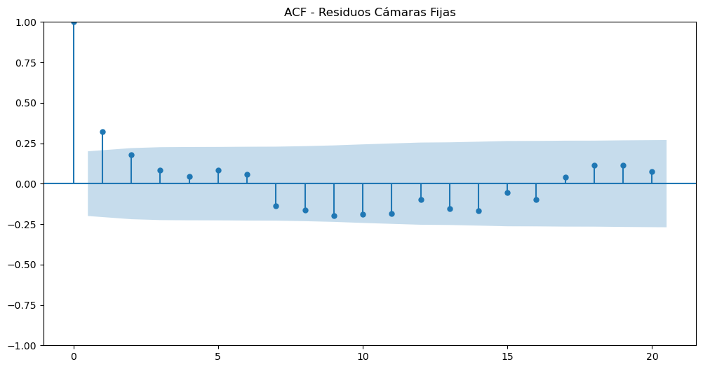
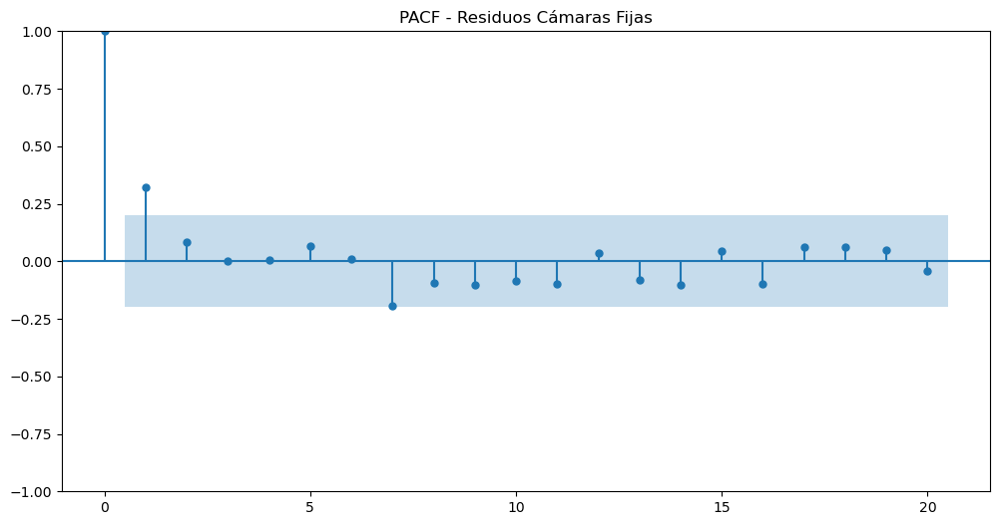
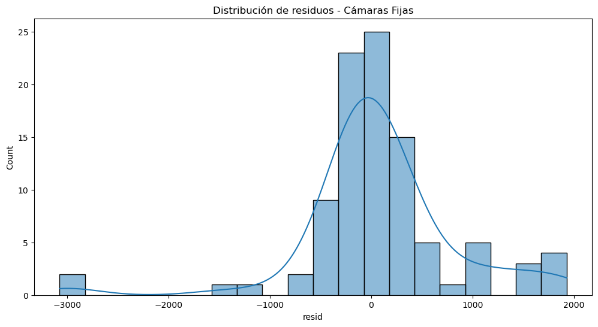
Análisis de tendencia: La pendiente negativa de -9.84 comparendos por mes indica una disminución promedio mensual estadísticamente significativa (p-valor = 0.0022). El R² de 9.6% muestra que la tendencia lineal explica una pequeña parte de la variabilidad total, pero la relación es significativa. La prueba de Durbin-Watson con un valor de 0.0007 indica una fuerte autocorrelación positiva en los residuos de la tendencia, lo que sugiere que la tendencia lineal no captura adecuadamente toda la estructura temporal y que existen patrones sistemáticos no lineales en la evolución de largo plazo de las cámaras fijas. A pesar de ello, se confirma una disminución sostenida en el volumen de comparendos detectados por cámaras fijas a lo largo del tiempo.
Análisis de estacionalidad: La estacionalidad explica el 10.34% de la variabilidad total de las cámaras fijas, lo que indica que presentan un patrón cíclico anual moderado, aunque ligeramente menor al observado en el total general (12.6%). La amplitud de 1,952 comparendos representa una oscilación considerable a lo largo del año, lo que sugiere que existen meses con mayor actividad estacional que influyen en el volumen de infracciones detectadas por este tipo de tecnología, aunque la mayor parte de la variabilidad sigue siendo explicada por otros componentes.
Análisis de estacionariedad: La prueba ADF sobre la serie original de cámaras fijas arroja un estadístico de -2.577 con un p-valor de 0.0978, ligeramente por encima del umbral de 0.05. Esto indica que la serie original no es estacionaria, es decir, presenta tendencia y/o estacionalidad que deben ser removidas. Por el contrario, la prueba ADF sobre los residuos arroja un estadístico de -6.912 con un p-valor prácticamente cero (1.2e-09), lo que confirma que los residuos son estacionarios. La conclusión es que la descomposición STL logró capturar correctamente la tendencia y la estacionalidad de la serie, dejando residuos estacionarios adecuados para análisis posteriores.
Análisis de residuos: Los residuos no son ruido blanco, como lo evidencian los p-valores en la prueba Ljung-Box (0.0178 para el rezago 6, 0.00097 para el rezago 12 y 0.0010 para el rezago 18). Esto indica que el modelo de descomposición STL para cámaras fijas no logra capturar toda la estructura presente en la serie temporal. Existen patrones, autocorrelaciones o dependencias temporales que no son explicadas ni por la tendencia ni por la estacionalidad. Estos patrones remanentes podrían corresponder a efectos de eventos específicos (cierres viales, pandemia, inauguraciones) o cambios en la operación del sistema de cámaras fijas. Por otro lado, el hecho de que los residuos estén centrados en cero (p-valor de 0.2591) es positivo, ya que indica que el modelo no tiene un sesgo sistemático sobreestimando o subestimando consistentemente los valores. Sin embargo, la prueba de Shapiro-Wilk con un p-valor extremadamente bajo (1.88e-08) indica que los residuos no siguen una distribución normal, lo que sugiere que el modelo podría beneficiarse de transformaciones adicionales o de enfoques no paramétricos para capturar mejor la estructura de los datos de las cámaras fijas.
Gráfico de ACF (Autocorrelación): Este gráfico nos indica si los errores de hoy están relacionados con los de ayer.
Lags Significativos: El lag 1 sobresale claramente del área azul, lo que indica una correlación positiva. También el lag 2 roza el límite de significancia.
Interpretación: El modelo aún no ha extraído toda la información de la serie. Existe una dependencia de “corto plazo” en los residuos. Al ser positivo el lag 1, el modelo tiende a cometer el mismo tipo de error (subestimar o sobreestimar) de forma consecutiva.
Gráfico de PACF (Autocorrelación Parcial): Este gráfico ayuda a identificar el orden de un posible componente Autorregresivo (AR).
Picos Clave: Al igual que en el ACF, el lag 1 es significativo. Sin embargo, lo más llamativo es el lag 7, que sale de la banda de confianza hacia el lado negativo.
Interpretación: * El lag 1 refuerza la necesidad de un componente AR(1).Además, el lag 7 es una señal clásica de estacionalidad semanal. Sugiere que el modelo está fallando en capturar un patrón que ocurre cada 7 días (posiblemente un comportamiento distinto en los fines de semana frente a días laborales en el registro de cámaras).
Gráfico de la distribución de residuos La distribución está muy bien centrada en 0, lo que es un éxito para el modelo; en promedio, las predicciones son correctas.
La mayoría de los residuos se concentran entre -500 y 500.
Sin embargo, hay “colas” largas: hacia la izquierda llegamos a -3000 y hacia la derecha a casi 2000.
Estos valores extremos indican días atípicos donde el flujo de comparendos electrónicos se disparó o cayó drásticamente de forma impredecible para el modelo actual.
Descomposición de la Serie Temporal - Cámara Movil#
Se aplica un modelo de descomposición STL (Seasonal-Trend decomposition using LOESS) robusto a la serie temporal mensual de comparendos electrónicos exclusivamente para las cámaras móviles, con el objetivo de separar y analizar sus tres componentes principales: tendencia (evolución a largo plazo), estacionalidad (patrones cíclicos anuales) y residuos (componente aleatorio o irregular). Se presentan gráficos interactivos para cada componente, junto con estadísticos clave como la pendiente de la tendencia mediante regresión lineal, el coeficiente de determinación (R²), la prueba de Durbin-Watson para autocorrelación en la tendencia, la amplitud estacional, el porcentaje de variabilidad explicada por la estacionalidad, y pruebas ADF (Dickey-Fuller aumentada) tanto sobre la serie original como sobre los residuos para verificar la estacionariedad y el correcto ajuste del modelo. Adicionalmente, se incluyen pruebas de ruido blanco (Ljung-Box con múltiples rezagos), media cero (t-test), normalidad (Shapiro-Wilk) sobre los residuos, junto con gráficos de autocorrelación (ACF), autocorrelación parcial (PACF) e histograma con densidad para evaluar la distribución de los residuos. Este análisis permite comprender la dinámica subyacente de los comparendos detectados por cámaras móviles, identificar si existe una tendencia creciente o decreciente en el tiempo, cuantificar la fuerza de los patrones estacionales específicos de este tipo de tecnología, evaluar la presencia de autocorrelación en la tendencia, determinar si la descomposición logra eliminar la no estacionariedad de la serie, y validar si el modelo captura adecuadamente la estructura de los datos para posibles aplicaciones predictivas.
serie_movil = infracciones_por_mes_camara[infracciones_por_mes_camara['Tipo Camara'] == 'Movil'].copy()
serie_movil = serie_movil.set_index('año_mes')['CANTIDAD_INFRACCIONES']
serie_movil.index = pd.to_datetime(serie_movil.index)
serie_movil = serie_movil.asfreq('MS')
serie_movil = serie_movil.fillna(0)
descomposicion_movil = STL(serie_movil, period=12, robust=True).fit()
tendencia_movil = descomposicion_movil.trend.dropna()
x = np.arange(len(tendencia_movil))
pendiente_movil, intercepto_movil, r_value_movil, p_valor_tendencia_movil, std_err_movil = stats.linregress(x, tendencia_movil.values)
r_cuadrado_movil = r_value_movil ** 2
regresion_vals_movil = pendiente_movil * x + intercepto_movil
fig_tendencia_movil = go.Figure()
fig_tendencia_movil.add_trace(go.Scatter(x=tendencia_movil.index, y=tendencia_movil.values, mode='lines+markers', name='Tendencia', line=dict(color='mediumpurple', width=2), marker=dict(size=4), hovertemplate='Fecha: %{x}<br>Tendencia: %{y:,.0f}<extra></extra>', showlegend=False))
fig_tendencia_movil.add_trace(go.Scatter(x=[None], y=[None], mode='none', name=f'Total: {int(serie_movil.sum()):,}', showlegend=True))
fig_tendencia_movil.add_trace(go.Scatter(x=[None], y=[None], mode='none', name=f'Std: {int(tendencia_movil.std()):,}', showlegend=True))
fig_tendencia_movil.add_trace(go.Scatter(x=[tendencia_movil.index[0], tendencia_movil.index[-1]], y=[tendencia_movil.mean(), tendencia_movil.mean()], mode='lines', name=f'Promedio: {int(tendencia_movil.mean()):,}', line=dict(color='red', width=1.4, dash='dot'), showlegend=True, hoverinfo='none'))
fig_tendencia_movil.add_trace(go.Scatter(x=tendencia_movil.index, y=regresion_vals_movil, mode='lines', name=f'Regresión lineal (R² = {r_cuadrado_movil:.3f})', line=dict(color='orange', width=2, dash='solid'), showlegend=True))
fig_tendencia_movil.add_trace(go.Scatter(x=[tendencia_movil.idxmax()], y=[tendencia_movil.max()], mode='markers', name=f'Máximo: {tendencia_movil.idxmax().strftime("%Y-%m")} ({int(tendencia_movil.max()):,})', marker=dict(size=8, color='red', symbol='circle'), hoverinfo='none'))
fig_tendencia_movil.add_trace(go.Scatter(x=[tendencia_movil.idxmin()], y=[tendencia_movil.min()], mode='markers', name=f'Mínimo: {tendencia_movil.idxmin().strftime("%Y-%m")} ({int(tendencia_movil.min()):,})', marker=dict(size=8, color='green', symbol='circle'), hoverinfo='none'))
fig_tendencia_movil.add_vrect(x0="2020-03", x1="2020-12", fillcolor="red", opacity=0.1, line_width=0, annotation_text="COVID-19", annotation_position="top left", annotation=dict(font_size=12, font_color="red"))
fig_tendencia_movil.update_layout(title=dict(text='Tendencia de Comparendos - Cámaras Móviles (Mensual)', x=0.5, font=dict(size=16, weight='bold')), xaxis_title=dict(text='Año', font=dict(weight='bold')), yaxis_title=dict(text='Tendencia (Comparendos)', font=dict(weight='bold')), template='plotly_white', hovermode='x unified', legend=dict(x=1, y=1, xanchor='center', yanchor='top', bgcolor='rgba(255,255,255,0.5)', font=dict(size=12)), width=1055, height=500)
fig_tendencia_movil.show()
print(f"Pendiente: {pendiente_movil:.2f} comparendos por mes")
print(f"R²: {r_cuadrado_movil:.6f}")
print(f"P-valor tendencia: {p_valor_tendencia_movil:.6f}")
print(f"¿Tendencia significativa? {'Sí' if p_valor_tendencia_movil < 0.05 else 'No'}")
dw_movil = durbin_watson(tendencia_movil.values)
print(f"\nDurbin-Watson: {dw_movil:.6f}")
if 1.5 < dw_movil < 2.5:
print("No hay autocorrelación significativa en la tendencia")
else:
print("Hay autocorrelación significativa en la tendencia")
estacionalidad_movil = descomposicion_movil.seasonal.dropna()
amplitud_estacional_movil = estacionalidad_movil.max() - estacionalidad_movil.min()
var_total_movil = descomposicion_movil.trend.var() + descomposicion_movil.seasonal.var() + descomposicion_movil.resid.var()
varianza_estacional_movil = descomposicion_movil.seasonal.var() / var_total_movil * 100
fig_estacionalidad_movil = go.Figure()
fig_estacionalidad_movil.add_trace(go.Scatter(x=estacionalidad_movil.index, y=estacionalidad_movil.values, mode='lines+markers', name='Estacionalidad', line=dict(color='mediumpurple', width=2), marker=dict(size=4), hovertemplate='Fecha: %{x}<br>Estacionalidad: %{y:,.2f}<extra></extra>', showlegend=False))
fig_estacionalidad_movil.add_trace(go.Scatter(x=[None], y=[None], mode='none', name=f'Total: {int(serie_movil.sum()):,}', showlegend=True))
fig_estacionalidad_movil.add_trace(go.Scatter(x=[None], y=[None], mode='none', name=f'Std: {int(estacionalidad_movil.std()):.0f}', showlegend=True))
fig_estacionalidad_movil.add_trace(go.Scatter(x=[estacionalidad_movil.index[0], estacionalidad_movil.index[-1]], y=[estacionalidad_movil.mean(), estacionalidad_movil.mean()], mode='lines', name=f'Promedio: {estacionalidad_movil.mean():.2f}', line=dict(color='red', width=1.4, dash='dot'), showlegend=True, hoverinfo='none'))
fig_estacionalidad_movil.add_trace(go.Scatter(x=[estacionalidad_movil.idxmax()], y=[estacionalidad_movil.max()], mode='markers', name=f'Máximo: {estacionalidad_movil.idxmax().strftime("%Y-%m")} ({estacionalidad_movil.max():.2f})', marker=dict(size=8, color='red', symbol='circle'), hoverinfo='none'))
fig_estacionalidad_movil.add_trace(go.Scatter(x=[estacionalidad_movil.idxmin()], y=[estacionalidad_movil.min()], mode='markers', name=f'Mínimo: {estacionalidad_movil.idxmin().strftime("%Y-%m")} ({estacionalidad_movil.min():.2f})', marker=dict(size=8, color='green', symbol='circle'), hoverinfo='none'))
fig_estacionalidad_movil.add_vrect(x0="2020-03", x1="2020-12", fillcolor="red", opacity=0.1, line_width=0, annotation_text="COVID-19", annotation_position="top left", annotation=dict(font_size=12, font_color="red"))
fig_estacionalidad_movil.update_layout(title=dict(text='Estacionalidad de Comparendos - Cámaras Móviles (Mensual)', x=0.5, font=dict(size=16, weight='bold')), xaxis_title=dict(text='Año', font=dict(weight='bold')), yaxis_title=dict(text='Estacionalidad (Comparendos)', font=dict(weight='bold')), template='plotly_white', hovermode='x unified', legend=dict(x=1, y=1, xanchor='center', yanchor='top', bgcolor='rgba(255,255,255,0.5)', font=dict(size=12)), width=1055, height=500)
fig_estacionalidad_movil.show()
print(f"Amplitud estacional: {amplitud_estacional_movil:.0f} comparendos")
print(f"Variabilidad explicada por estacionalidad: {varianza_estacional_movil:.2f}%")
print("\nPrueba ADF sobre la serie original (Cámaras Móviles)")
resultado_adf_original_movil = adfuller(serie_movil.dropna(), autolag='AIC')
print(f"Estadístico ADF: {resultado_adf_original_movil[0]:.6f}")
print(f"P-valor: {resultado_adf_original_movil[1]:.6f}")
print("Valores críticos:")
for key, value in resultado_adf_original_movil[4].items():
print(f" {key}: {value:.4f}")
if resultado_adf_original_movil[1] < 0.05:
print("La serie original es estacionaria")
else:
print("La serie original no es estacionaria (tiene tendencia y/o estacionalidad)")
print("\nPrueba ADF sobre los residuos (Cámaras Móviles)")
resultado_adf_residuos_movil = adfuller(descomposicion_movil.resid.dropna(), autolag='AIC')
print(f"Estadístico ADF: {resultado_adf_residuos_movil[0]:.6f}")
print(f"P-valor: {resultado_adf_residuos_movil[1]:.6f}")
print("Valores críticos:")
for key, value in resultado_adf_residuos_movil[4].items():
print(f" {key}: {value:.4f}")
if resultado_adf_residuos_movil[1] < 0.05:
print("Los residuos son estacionarios")
else:
print("Los residuos no son estacionarios")
if resultado_adf_original_movil[1] >= 0.05 and resultado_adf_residuos_movil[1] < 0.05:
print("\nLa serie original no es estacionaria, pero los residuos sí lo son → la descomposición STL capturó correctamente tendencia y estacionalidad")
elif resultado_adf_original_movil[1] < 0.05 and resultado_adf_residuos_movil[1] < 0.05:
print("\nTanto la serie original como los residuos son estacionarios")
else:
print("\nLa descomposición no logró eliminar completamente la no estacionariedad")
residuos_movil = descomposicion_movil.resid.dropna()
p_valor_ljung_movil = acorr_ljungbox(residuos_movil, lags=[12], return_df=True)['lb_pvalue'].iloc[0]
t_stat_movil, p_valor_media_movil = stats.ttest_1samp(residuos_movil, 0)
fig_residuos_movil = go.Figure()
fig_residuos_movil.add_trace(go.Scatter(x=residuos_movil.index, y=residuos_movil.values, mode='lines+markers', name='Residuos', line=dict(color='mediumpurple', width=2), marker=dict(size=4), hovertemplate='Fecha: %{x}<br>Residuo: %{y:,.2f}<extra></extra>', showlegend=False))
fig_residuos_movil.add_trace(go.Scatter(x=[None], y=[None], mode='none', name=f'Total: {int(serie_movil.sum()):,}', showlegend=True))
fig_residuos_movil.add_trace(go.Scatter(x=[None], y=[None], mode='none', name=f'Std: {int(residuos_movil.std()):.0f}', showlegend=True))
fig_residuos_movil.add_trace(go.Scatter(x=[residuos_movil.index[0], residuos_movil.index[-1]], y=[residuos_movil.mean(), residuos_movil.mean()], mode='lines', name=f'Promedio: {residuos_movil.mean():.2f}', line=dict(color='red', width=1.4, dash='dot'), showlegend=True, hoverinfo='none'))
fig_residuos_movil.add_trace(go.Scatter(x=[residuos_movil.idxmax()], y=[residuos_movil.max()], mode='markers', name=f'Máximo: {residuos_movil.idxmax().strftime("%Y-%m")} ({residuos_movil.max():.2f})', marker=dict(size=8, color='red', symbol='circle'), hoverinfo='none'))
fig_residuos_movil.add_trace(go.Scatter(x=[residuos_movil.idxmin()], y=[residuos_movil.min()], mode='markers', name=f'Mínimo: {residuos_movil.idxmin().strftime("%Y-%m")} ({residuos_movil.min():.2f})', marker=dict(size=8, color='green', symbol='circle'), hoverinfo='none'))
fig_residuos_movil.add_vrect(x0="2020-03", x1="2020-12", fillcolor="red", opacity=0.1, line_width=0, annotation_text="COVID-19", annotation_position="top left", annotation=dict(font_size=12, font_color="red"))
fig_residuos_movil.update_layout(title=dict(text='Residuos de Comparendos - Cámaras Móviles (Mensual)', x=0.5, font=dict(size=16, weight='bold')), xaxis_title=dict(text='Año', font=dict(weight='bold')), yaxis_title=dict(text='Residuos (Comparendos)', font=dict(weight='bold')), template='plotly_white', hovermode='x unified', legend=dict(x=1, y=1, xanchor='center', yanchor='top', bgcolor='rgba(255,255,255,0.5)', font=dict(size=12)), width=1055, height=500)
fig_residuos_movil.show()
resultado_ljung_movil = acorr_ljungbox(residuos_movil, lags=[6, 12, 18], return_df=True)
print("\nPrueba Ljung-Box (Cámaras Móviles)")
print(resultado_ljung_movil)
p_valor_ljung_movil = resultado_ljung_movil['lb_pvalue'].iloc[1]
print(f"\n¿Los residuos son ruido blanco? {'Sí' if p_valor_ljung_movil > 0.05 else 'No'}")
print(f"Prueba t (media cero) p-valor: {p_valor_media_movil:.6f}")
print(f"¿Residuos centrados en cero? {'Sí' if p_valor_media_movil > 0.05 else 'No'}")
stat_movil, p_shapiro_movil = stats.shapiro(residuos_movil)
print(f"\nShapiro-Wilk p-valor: {p_shapiro_movil:.6e}")
print(f"¿Residuos normales? {'Sí' if p_shapiro_movil > 0.05 else 'No'}")
fig, ax = plt.subplots(figsize=(12, 6))
plot_acf(residuos_movil, ax=ax)
plt.title("ACF - Residuos Cámaras Móviles")
plt.show()
fig, ax = plt.subplots(figsize=(12, 6))
plot_pacf(residuos_movil, ax=ax)
plt.title("PACF - Residuos Cámaras Móviles")
plt.show()
plt.figure(figsize=(12,6))
sns.histplot(residuos_movil, bins=20, kde=True)
plt.title("Distribución de residuos - Cámaras Móviles")
plt.show()
Pendiente: -2.09 comparendos por mes
R²: 0.012483
P-valor tendencia: 0.278469
¿Tendencia significativa? No
Durbin-Watson: 0.000489
Hay autocorrelación significativa en la tendencia
Amplitud estacional: 1101 comparendos
Variabilidad explicada por estacionalidad: 5.17%
Prueba ADF sobre la serie original (Cámaras Móviles)
Estadístico ADF: -3.560229
P-valor: 0.006568
Valores críticos:
1%: -3.5011
5%: -2.8925
10%: -2.5833
La serie original es estacionaria
Prueba ADF sobre los residuos (Cámaras Móviles)
Estadístico ADF: -4.515149
P-valor: 0.000185
Valores críticos:
1%: -3.5011
5%: -2.8925
10%: -2.5833
Los residuos son estacionarios
Tanto la serie original como los residuos son estacionarios
Prueba Ljung-Box (Cámaras Móviles)
lb_stat lb_pvalue
6 63.762370 7.716917e-12
12 101.820733 2.447211e-16
18 111.750463 1.484544e-15
¿Los residuos son ruido blanco? No
Prueba t (media cero) p-valor: 0.279449
¿Residuos centrados en cero? Sí
Shapiro-Wilk p-valor: 5.670809e-09
¿Residuos normales? No
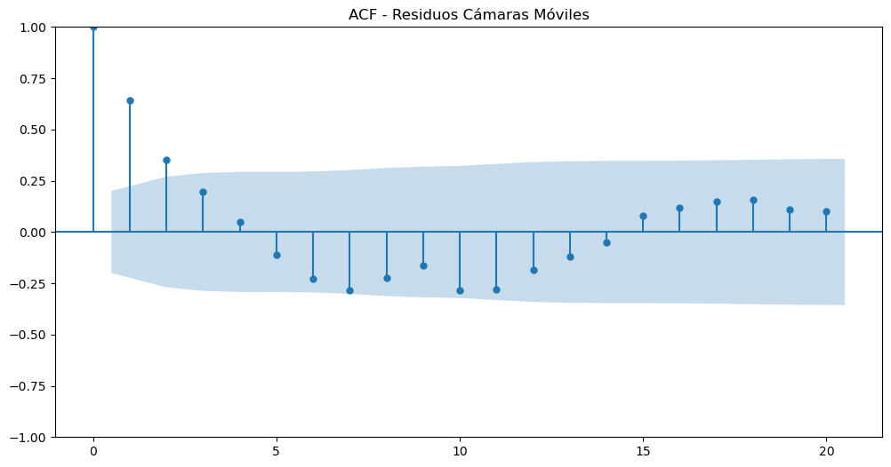
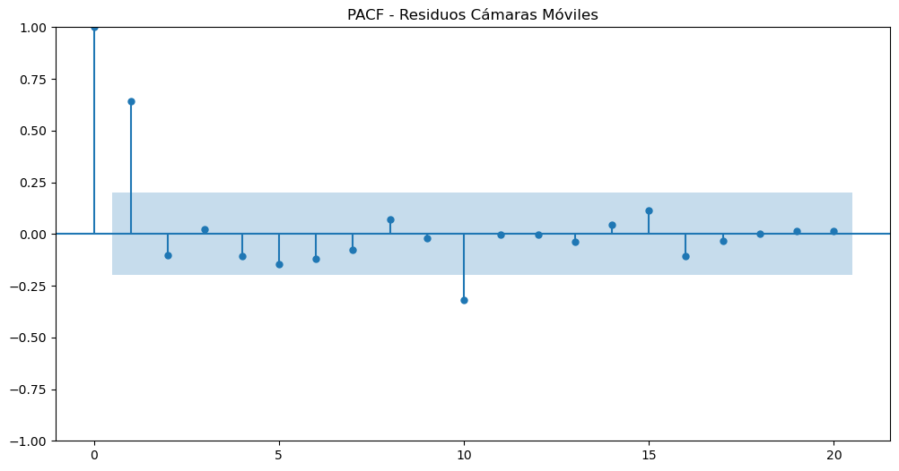
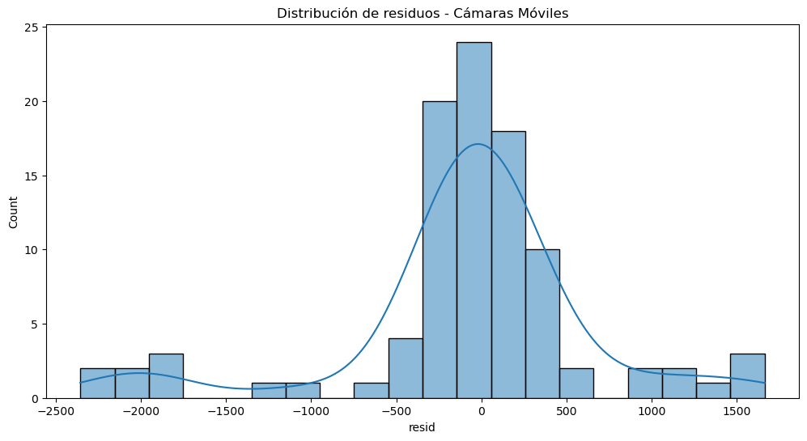
Análisis de tendencia: La pendiente negativa de -2.09 comparendos por mes indica una leve disminución promedio mensual, pero esta no es estadísticamente significativa (p-valor = 0.2785). El R² de 1.25% muestra que la tendencia lineal explica una porción mínima de la variabilidad total. La prueba de Durbin-Watson con un valor de 0.0005 indica una fuerte autocorrelación positiva en los residuos de la tendencia, lo que sugiere que la tendencia lineal no captura adecuadamente la estructura temporal y que existen patrones sistemáticos no lineales. Sin embargo, a diferencia de las cámaras fijas, en las móviles no se confirma una disminución sostenida en el volumen de comparendos a lo largo del tiempo.
Análisis de estacionalidad: La estacionalidad explica solo el 5.17% de la variabilidad total de las cámaras móviles, lo que indica que presentan un patrón cíclico anual débil, significativamente menor al observado en las cámaras fijas (10.34%) y en el total general (12.6%). La amplitud de 1,101 comparendos representa una oscilación moderada a lo largo del año, pero su bajo peso relativo sugiere que la mayor parte de la variabilidad de las cámaras móviles se debe a componentes irregulares o eventos atípicos, no a ciclos estacionales predecibles.
Análisis de estacionariedad: La prueba ADF sobre la serie original de cámaras móviles arroja un estadístico de -3.560 con un p-valor de 0.0066, lo que permite rechazar la hipótesis de raíz unitaria. Esto indica que la serie original de cámaras móviles ya es estacionaria, es decir, su media y varianza son constantes en el tiempo, incluso antes de aplicar la descomposición. Por su parte, la prueba ADF sobre los residuos también confirma la estacionariedad (estadístico de -4.515 con p-valor de 0.0002). En conjunto, tanto la serie original como los residuos son estacionarios, lo que refleja que las cámaras móviles tienen un comportamiento más estable en el tiempo en comparación con las cámaras fijas.
Análisis de residuos: Los residuos no son ruido blanco, como lo evidencian los p-valores extremadamente bajos en la prueba Ljung-Box para los rezagos 6, 12 y 18 (todos prácticamente cero). Esto indica que el modelo de descomposición STL para cámaras móviles no logra capturar toda la estructura presente en la serie temporal. Existen patrones, autocorrelaciones o dependencias temporales que no son explicadas ni por la tendencia ni por la estacionalidad. Estos patrones remanentes podrían corresponder a efectos de eventos específicos (cierres viales, pandemia, inauguraciones) o cambios en la operación del sistema de cámaras móviles (como la interrupción durante el confinamiento de 2020). Por otro lado, el hecho de que los residuos estén centrados en cero (p-valor de 0.2794) es positivo, ya que indica que el modelo no tiene un sesgo sistemático sobreestimando o subestimando consistentemente los valores. Sin embargo, la prueba de Shapiro-Wilk con un p-valor extremadamente bajo (5.67e-09) indica que los residuos no siguen una distribución normal, lo que sugiere que el modelo podría beneficiarse de transformaciones adicionales o de enfoques no paramétricos para capturar mejor la estructura de los datos de las cámaras móviles.
Nota: A pesar de que la descomposición logra capturar la estacionariedad en ambos casos (residuos estacionarios), los residuos no son ruido blanco ni normales, lo que indica que modelos como SARIMA o aquellos con variables exógenas (como eventos específicos) podrían ser necesarios para un mejor ajuste predictivo.
Gráfica de ACF: A diferencia de las fijas, aquí vemos que los lags 1 y 2 son significativamente altos (especialmente el lag 1, que supera el 0.6). Por tanto, existe una autocorrelación muy fuerte. Esto significa que si el modelo cometió un error grande hoy, es extremadamente probable que cometa uno similar mañana. Hay una “memoria” en los datos que el modelo no está procesando, lo que indica que el modelo actual está subajustado para este tipo de cámaras.
Gráfica de PACF: Se observa un pico muy prominente en el lag 1 y un pico negativo significativo en el lag 10. Por tanto, el pico en el lag 1 confirma que la serie de residuos se comporta casi como un proceso autorregresivo puro que no ha sido removido. Además, El pico en el lag 10 es curioso; podría indicar un ciclo operativo específico de las cámaras móviles.
Gráfica de la distribución de residuos Aunque la mayoría de los errores están cerca de 0, la distribución es se asemeja a una forma platicúrtica en comparación con las fijas.
Tenemos errores considerables que van desde -2500 hasta +1500.
La presencia de esos pequeños grupos de barras en los extremos (especialmente a la izquierda) sugiere que hay eventos donde la cantidad de fotomultas móviles cae drásticamente de forma inesperada. Dado que las cámaras móviles dependen de la disposición de operativos humanos, estos errores podrían deberse a días de lluvia, operativos cancelados o cambios de zonas de control que el modelo no conoce.
Distribución Mensual y Anual de Comparendos Electrónicos por Tipo de Cámara#
Se construyen tablas pivote que cruzan los meses y los años para cada tipo de cámara (Fijo y Móvil), utilizando la suma ponderada de CANTIDAD_INFRACCIONES para visualizar el volumen de infracciones en cada combinación temporal. Los resultados se presentan mediante mapas de calor independientes para cada tipo de cámara, con los meses ordenados de diciembre a enero para facilitar la identificación de patrones estacionales. Esta visualización permite comparar el comportamiento de las cámaras fijas y móviles a lo largo del tiempo, identificar períodos de alta o baja actividad específicos de cada tecnología, y detectar posibles estacionalidades o cambios operativos en la detección de infracciones según el tipo de cámara.
tipos_camara = ['Fijo', 'Movil']
for tipo in tipos_camara:
df_tipo = df_comparendos_electronicos_copy[df_comparendos_electronicos_copy['Tipo Camara'] == tipo]
df_tipo['año'] = df_tipo['fecha_comparendo'].dt.year
df_tipo['mes_numero'] = df_tipo['fecha_comparendo'].dt.month
tabla_heatmap = df_tipo.pivot_table(
values='CANTIDAD_INFRACCIONES',
index='mes_numero',
columns='año',
aggfunc='sum',
fill_value=0
)
nombres_meses = ['Enero', 'Febrero', 'Marzo', 'Abril', 'Mayo', 'Junio',
'Julio', 'Agosto', 'Septiembre', 'Octubre', 'Noviembre', 'Diciembre']
tabla_heatmap.index = nombres_meses
tabla_heatmap = tabla_heatmap.iloc[::-1]
fig = go.Figure(data=go.Heatmap(
z=tabla_heatmap.values,
x=tabla_heatmap.columns,
y=tabla_heatmap.index,
colorscale='blues',
text=tabla_heatmap.values,
texttemplate='%{text:,.0f}',
hovertemplate=f'Cámara: {tipo}<br>Mes: %{{y}}<br>Año: %{{x}}<br>Comparendos: %{{z:,.0f}}<extra></extra>'
))
fig.update_layout(
title=dict(
text=f'Distribución de Comparendos Electrónicos por Año y Mes - Cámara {tipo}',
x=0.5,
xanchor='center',
font=dict(size=16, weight='bold')
),
xaxis_title=dict(
text='Año',
font=dict(weight='bold')
),
yaxis_title=dict(
text='Mes',
font=dict(weight='bold')
),
template='plotly_white',
width=1055,
height=500
)
fig.show()
Distribución Mensual de Comparendos Electrónicos por Tipo de Cámara#
Se examina la variabilidad mensual de los comparendos electrónicos desagregada por tipo de cámara (Fijo y Móvil), agrupando los registros por mes y año y sumando la columna CANTIDAD_INFRACCIONES para obtener el volumen real de infracciones por cada combinación. Para cada tipo de cámara, se presentan estadísticos descriptivos (media, desviación estándar, mínimo, máximo y cuartiles) para cada mes, con el fin de caracterizar su comportamiento típico y su dispersión interanual. Complementariamente, se generan diagramas de caja (boxplot) que visualizan la distribución de las infracciones para cada mes, incluyendo la media como referencia. Para validar si las diferencias observadas entre meses son estadísticamente significativas para cada tipo de cámara, se aplica un análisis de varianza que incluye la prueba de normalidad de Shapiro-Wilk para evaluar la distribución de los datos por mes, la prueba de Levene para verificar la homogeneidad de varianzas, y dependiendo del cumplimiento de los supuestos, se realiza un ANOVA paramétrico (con prueba post-hoc de Tukey HSD) o un Kruskal-Wallis no paramétrico (con prueba post-hoc de Dunn y corrección de Bonferroni). Este análisis permite identificar, de manera diferenciada por tipo de tecnología, qué meses presentan mayor variabilidad en la detección de infracciones, detectar meses con comportamientos atípicos, comparar la estabilidad estacional entre las cámaras fijas y móviles, y determinar si existe estacionalidad estadísticamente significativa en el volumen de comparendos detectados por cada tipo de cámara.
df_comparendos_electronicos_copy['año'] = df_comparendos_electronicos_copy['fecha_comparendo'].dt.year
df_comparendos_electronicos_copy['mes_nombre'] = df_comparendos_electronicos_copy['fecha_comparendo'].dt.month
for tipo in tipos_camara:
df_tipo = df_comparendos_electronicos_copy[df_comparendos_electronicos_copy['Tipo Camara'] == tipo]
df_boxplot_tipo = df_tipo.groupby(['mes_nombre', 'año'])['CANTIDAD_INFRACCIONES'].sum().reset_index()
df_boxplot_tipo.columns = ['mes', 'año', 'infracciones']
df_boxplot_tipo['mes_nombre'] = df_boxplot_tipo['mes'].apply(lambda x: nombres_meses[x-1])
print(f"Estadísticas Descriptivas - Cámara {tipo}")
estadisticas = df_boxplot_tipo.groupby('mes_nombre')['infracciones'].describe().round(0).fillna(0).astype(int).reindex(nombres_meses)
display(estadisticas.T)
display(HTML("<hr style='border: 1px solid #696969; margin: 20px 0;'>"))
fig = go.Figure()
fig.add_trace(go.Box(
x=df_boxplot_tipo['mes_nombre'],
y=df_boxplot_tipo['infracciones'],
marker_color='mediumpurple',
name='',
boxmean=True,
hovertemplate='Mes: %{x}<br>Comparendos: %{y:,.0f}<extra></extra>'
))
fig.update_layout(
title=dict(
text=f'Distribución de Comparendos Electrónicos por Mes - Cámara {tipo}',
x=0.5,
xanchor='center',
font=dict(size=16, weight='bold')
),
xaxis_title=dict(
text='Mes',
font=dict(weight='bold')
),
yaxis_title=dict(
text='Cantidad de Comparendos',
font=dict(weight='bold')
),
template='plotly_white',
width=1055,
height=500
)
fig.show()
df_anova = df_boxplot_tipo.copy()
meses_grupos = [
df_anova[df_anova['mes_nombre'] == mes]['infracciones'].values
for mes in nombres_meses
]
print("\nPrueba de normalidad (Shapiro-Wilk) por mes:")
normalidad = []
for mes, grupo in zip(nombres_meses, meses_grupos):
if len(grupo) >= 3:
stat, p = stats.shapiro(grupo)
normalidad.append(p > 0.05)
print(f"{mes}: p-valor = {p:.6f} -> {'Normal' if p > 0.05 else 'No normal'}")
else:
print(f"{mes}: No hay suficientes datos para evaluar normalidad")
cumple_normalidad = all(normalidad)
print(f"¿Se cumple normalidad en todos los meses? {'Sí' if cumple_normalidad else 'No'}")
stat_levene, p_levene = stats.levene(*meses_grupos)
print(f"\nLevene p-valor: {p_levene:.6f}")
print(f"¿Varianzas iguales? {'Sí' if p_levene > 0.05 else 'No'}")
if cumple_normalidad and p_levene > 0.05:
print("\nSe cumplen los supuestos → Se aplica ANOVA")
f_stat, p_valor = stats.f_oneway(*meses_grupos)
print(f"Estadístico F: {f_stat:.4f}")
print(f"P-valor: {p_valor:.6f}")
print(f"¿Hay diferencias entre meses? {'Sí' if p_valor < 0.05 else 'No'}")
if p_valor < 0.05:
print("\nPrueba post-hoc Tukey HSD:")
tukey = pairwise_tukeyhsd(
endog=df_anova['infracciones'],
groups=df_anova['mes_nombre'],
alpha=0.05
)
print(tukey)
else:
print("\nNo se cumplen los supuestos → Se aplica Kruskal-Wallis")
h_stat, p_valor = stats.kruskal(*meses_grupos)
print(f"Estadístico H: {h_stat:.4f}")
print(f"P-valor: {p_valor:.6f}")
print(f"¿Hay diferencias entre meses? {'Sí' if p_valor < 0.05 else 'No'}")
if p_valor < 0.05:
print("\nPrueba post-hoc Dunn (con corrección Bonferroni):")
df_dunn = df_anova[['mes_nombre', 'infracciones']].copy()
dunn = sp.posthoc_dunn(
df_dunn,
val_col='infracciones',
group_col='mes_nombre',
p_adjust='bonferroni'
)
dunn = dunn.loc[nombres_meses, nombres_meses]
display(dunn)
display(HTML("<hr style='border: 2px solid #696969; margin: 20px 0;'>"))
Estadísticas Descriptivas - Cámara Fijo
| mes_nombre | Enero | Febrero | Marzo | Abril | Mayo | Junio | Julio | Agosto | Septiembre | Octubre | Noviembre | Diciembre |
|---|---|---|---|---|---|---|---|---|---|---|---|---|
| count | 8 | 8 | 8 | 8 | 8 | 8 | 8 | 8 | 8 | 8 | 8 | 8 |
| mean | 4084 | 3953 | 4597 | 4748 | 4286 | 4319 | 4324 | 4025 | 4166 | 4220 | 3871 | 4365 |
| std | 1140 | 1246 | 1430 | 1176 | 1829 | 1659 | 1452 | 1175 | 1115 | 852 | 1298 | 1576 |
| min | 2106 | 2324 | 2681 | 3103 | 1386 | 2194 | 2379 | 1986 | 2298 | 2646 | 1882 | 2038 |
| 25% | 3402 | 3116 | 3826 | 3765 | 2911 | 2872 | 3228 | 3376 | 3563 | 3744 | 3200 | 3447 |
| 50% | 4458 | 4078 | 4326 | 4941 | 4688 | 4508 | 4333 | 4246 | 4374 | 4583 | 3780 | 4371 |
| 75% | 4795 | 4714 | 5396 | 5613 | 5844 | 5712 | 5576 | 4534 | 4974 | 4718 | 4674 | 4976 |
| max | 5528 | 5903 | 7222 | 6310 | 6169 | 6272 | 6054 | 5893 | 5408 | 5224 | 5903 | 7102 |
Prueba de normalidad (Shapiro-Wilk) por mes:
Enero: p-valor = 0.566351 -> Normal
Febrero: p-valor = 0.686548 -> Normal
Marzo: p-valor = 0.877398 -> Normal
Abril: p-valor = 0.454767 -> Normal
Mayo: p-valor = 0.298971 -> Normal
Junio: p-valor = 0.144952 -> Normal
Julio: p-valor = 0.265104 -> Normal
Agosto: p-valor = 0.946519 -> Normal
Septiembre: p-valor = 0.555494 -> Normal
Octubre: p-valor = 0.322844 -> Normal
Noviembre: p-valor = 0.996399 -> Normal
Diciembre: p-valor = 0.989764 -> Normal
¿Se cumple normalidad en todos los meses? Sí
Levene p-valor: 0.319416
¿Varianzas iguales? Sí
Se cumplen los supuestos → Se aplica ANOVA
Estadístico F: 0.2820
P-valor: 0.987697
¿Hay diferencias entre meses? No
Estadísticas Descriptivas - Cámara Movil
| mes_nombre | Enero | Febrero | Marzo | Abril | Mayo | Junio | Julio | Agosto | Septiembre | Octubre | Noviembre | Diciembre |
|---|---|---|---|---|---|---|---|---|---|---|---|---|
| count | 7 | 8 | 8 | 7 | 7 | 7 | 7 | 7 | 8 | 8 | 8 | 8 |
| mean | 2102 | 2195 | 2283 | 2233 | 2461 | 2358 | 2535 | 2223 | 2126 | 2572 | 2252 | 2021 |
| std | 887 | 774 | 687 | 860 | 1029 | 931 | 683 | 869 | 982 | 688 | 630 | 577 |
| min | 1000 | 888 | 1265 | 1118 | 900 | 615 | 1471 | 1095 | 684 | 1520 | 1385 | 1094 |
| 25% | 1337 | 1857 | 2026 | 1482 | 1988 | 2132 | 2126 | 1552 | 1351 | 2198 | 1923 | 1758 |
| 50% | 2411 | 2360 | 2380 | 2418 | 2439 | 2442 | 2731 | 2370 | 2306 | 2710 | 2162 | 2130 |
| 75% | 2627 | 2560 | 2628 | 3033 | 2915 | 2768 | 3012 | 2705 | 2552 | 2976 | 2518 | 2311 |
| max | 3375 | 3329 | 3247 | 3065 | 4084 | 3647 | 3267 | 3581 | 3822 | 3575 | 3310 | 2879 |
Prueba de normalidad (Shapiro-Wilk) por mes:
Enero: p-valor = 0.514465 -> Normal
Febrero: p-valor = 0.823290 -> Normal
Marzo: p-valor = 0.420945 -> Normal
Abril: p-valor = 0.100205 -> Normal
Mayo: p-valor = 0.952927 -> Normal
Junio: p-valor = 0.563038 -> Normal
Julio: p-valor = 0.442168 -> Normal
Agosto: p-valor = 0.783135 -> Normal
Septiembre: p-valor = 0.804548 -> Normal
Octubre: p-valor = 0.710706 -> Normal
Noviembre: p-valor = 0.813963 -> Normal
Diciembre: p-valor = 0.798258 -> Normal
¿Se cumple normalidad en todos los meses? Sí
Levene p-valor: 0.961975
¿Varianzas iguales? Sí
Se cumplen los supuestos → Se aplica ANOVA
Estadístico F: 0.3436
P-valor: 0.972743
¿Hay diferencias entre meses? No
Patrones clave identificados:
Las cámaras fijas tienen mayor volumen y variabilidad: Con un promedio mensual mayor (casi el doble que las móviles), las cámaras fijas son el principal instrumento de control. Su mayor variabilidad indica que son más sensibles a factores externos como cierres viales o eventos masivos.
Las cámaras móviles son más estables: Con un rango promedio de solo 551 infracciones entre el mes de mayor y menor promedio, las móviles muestran un comportamiento más uniforme a lo largo del año, excepto por los picos atípicos en mayo.
Mayo es el mes más impredecible para ambos tipos: Tanto en cámaras fijas como móviles, mayo presenta la mayor variabilidad, influenciada por eventos extremos como los cierres viales de 2019 (picos máximos) y la pandemia de 2020 (valles mínimos).
Estacionalidad diferenciada:
Cámaras fijas: Mayor actividad en abril y diciembre; menor en noviembre y febrero.
Cámaras móviles: Mayor actividad en octubre y julio; menor en diciembre y enero.
Impacto de la pandemia en los registros: La ausencia de datos en varios meses para las cámaras móviles (count inferior a 8) confirma la interrupción de su operación durante el confinamiento de 2020, mientras que las cámaras fijas mantuvieron registro continuo durante todo el período.
Hallazgos:
Las cámaras fijas son el pilar del sistema de control: Con volúmenes casi duplicados a los de las móviles y operación continua durante toda la serie histórica, son la tecnología más confiable y de mayor cobertura.
Las cámaras móviles complementan el control con un rol específico: Su menor volumen y estabilidad relativa reflejan su especialización en la detección de estacionamiento prohibido (C02), con patrones estacionales que probablemente responden a la actividad comercial y turística de la ciudad.
Mayo como mes crítico: La alta variabilidad en ambos tipos de cámara durante mayo sugiere que es un mes especialmente sensible a intervenciones externas (cierres viales, eventos masivos, restricciones sanitarias), lo que debería considerarse en la planificación de operativos de control.
Nota: Los meses de abril y diciembre (picos en fijas) y octubre y julio (picos en móviles) requieren especial atención en términos de mantenimiento y operación de las cámaras, así como campañas preventivas de educación vial.
Verificación de supuestos para cámaras fijas: Las pruebas de normalidad (Shapiro-Wilk) aplicadas a cada mes para las cámaras fijas arrojaron p-valores superiores a 0.05 en todos los casos (el más bajo fue junio con 0.1449, aún por encima del umbral), lo que indica que los datos de cada mes siguen una distribución normal. La prueba de Levene con un p-valor de 0.3194 confirma que las varianzas entre los meses son homogéneas. Dado que ambos supuestos se cumplen, es apropiado aplicar un ANOVA paramétrico para comparar las medias mensuales de las cámaras fijas.
Resultado del ANOVA para cámaras fijas: El estadístico F es de 0.2820 con un p-valor de 0.9877, un valor extremadamente alto y cercano a 1. Esto indica que no existen diferencias estadísticamente significativas entre las medias de los meses para las cámaras fijas. En otras palabras, el volumen promedio de comparendos detectados por cámaras fijas se mantiene constante a lo largo del año.
Verificación de supuestos para cámaras móviles: Las pruebas de normalidad (Shapiro-Wilk) aplicadas a cada mes para las cámaras móviles también arrojaron p-valores superiores a 0.05 en todos los casos (el más bajo fue abril con 0.1002, aún por encima del umbral), lo que indica que los datos de cada mes siguen una distribución normal. La prueba de Levene con un p-valor de 0.9620 confirma que las varianzas entre los meses son homogéneas. Dado que ambos supuestos se cumplen, es apropiado aplicar un ANOVA paramétrico para comparar las medias mensuales de las cámaras móviles.
Resultado del ANOVA para cámaras móviles: El estadístico F es de 0.3436 con un p-valor de 0.9727, nuevamente un valor extremadamente alto. Esto indica que tampoco existen diferencias estadísticamente significativas entre las medias de los meses para las cámaras móviles.
Hallazgos:
Ausencia de estacionalidad en ambos tipos de cámara: Ni las cámaras fijas ni las móviles presentan diferencias estadísticamente significativas en el volumen de comparendos a lo largo de los meses del año. Esto significa que, a nivel mensual, ambos tipos de tecnología detectan volúmenes similares de infracciones independientemente de la época del año.
Comportamiento consistente entre tecnologías: A pesar de que las cámaras fijas y móviles tienen funciones diferentes (las fijas detectan exceso de velocidad, semáforos, etc.; las móviles detectan estacionamiento prohibido), ambas comparten la misma característica de no presentar estacionalidad mensual.
Contraste con la descomposición STL: Este resultado complementa el análisis de descomposición STL, donde se observó que las cámaras fijas tenían una amplitud estacional de 1,952 comparendos y las móviles de 1,101 comparendos. Sin embargo, al someter estas diferencias a una prueba estadística (ANOVA), se confirma que las oscilaciones observadas entre meses no son lo suficientemente grandes ni consistentes a lo largo de los años como para ser consideradas estadísticamente significativas.
Análisis del Servicio del Vehículo Infractor Según el Código de Infracción#
Se construye una tabla pivote que cruza el servicio del vehículo infractor con los códigos de infracción, agrupando las categorías con baja representación (OFICIAL y DIPLOMÁTICO) en una categoría denominada “OTROS” para facilitar la visualización. Se utiliza la suma ponderada de CANTIDAD_INFRACCIONES para obtener el volumen real de infracciones en cada combinación. Para cada categoría de servicio, se calcula el porcentaje que representa cada código de infracción sobre el total de sus comparendos, permitiendo identificar la contribución relativa de cada tipo de infracción. Los resultados se presentan mediante un mapa de calor interactivo, donde las categorías de servicio se ordenan de menor a mayor según su total de comparendos, y cada celda muestra tanto el valor absoluto como el porcentaje correspondiente. Esta visualización permite identificar qué tipos de infracción son más frecuentes en cada categoría de servicio vehicular, revelando patrones de comportamiento diferenciados entre vehículos particulares, públicos y otros servicios.
tabla_heatmap = df_comparendos_electronicos_copy.pivot_table(
values='CANTIDAD_INFRACCIONES',
index='SERVICIO_AGRUPADO',
columns='COD_INFRACCION',
aggfunc='sum',
fill_value=0
)
orden = tabla_heatmap.sum(axis=1).sort_values(ascending=True).index
tabla_heatmap = tabla_heatmap.loc[orden]
total_por_fila = tabla_heatmap.sum(axis=1)
porcentajes = tabla_heatmap.div(total_por_fila, axis=0) * 100
porcentajes = porcentajes.round(2)
texto_combinado = tabla_heatmap.applymap(lambda x: f'{int(x):,}') + '<br>(' + porcentajes.applymap(lambda x: f'{x:.2f}%') + ')'
fig = go.Figure(data=go.Heatmap(
z=tabla_heatmap.values,
x=tabla_heatmap.columns,
y=tabla_heatmap.index,
colorscale='Blues',
text=texto_combinado.values,
texttemplate='%{text}',
hovertemplate='Servicio: %{y}<br>Código: %{x}<br>Comparendos: %{z:,.0f}<extra></extra>'
))
fig.update_layout(
title=dict(
text='Distribución de Comparendos por Servicio del Vehículo y Código de Infracción',
x=0.5,
xanchor='center',
font=dict(size=16, weight='bold')
),
xaxis_title=dict(
text='Código de Infracción',
font=dict(weight='bold')
),
yaxis_title=dict(
text='Servicio del Vehículo',
font=dict(weight='bold')
),
template='plotly_white',
width=1055,
height=500
)
fig.show()
Los vehículos particulares concentran sus infracciones principalmente en dos tipos: exceso de velocidad (45.85%) y estacionamiento prohibido (35.43%), que en conjunto representan el 81.28% de sus comparendos.
Al igual que los particulares, el exceso de velocidad (C29) es la infracción más frecuente en vehículos públicos, representando casi la mitad (49.41%). Sin embargo, presentan una distribución más equilibrada entre las demás infracciones, con el estacionamiento prohibido (20.82%) y el bloqueo de calzada (18.01%), esta última teniendo una participación mayor que en los particulares.
A diferencia de los particulares y públicos, en los vehículos oficiales y diplomáticos la infracción más frecuente es el estacionamiento prohibido (C02) con 47.38%, superando al exceso de velocidad (38.25%). Aunque el volumen es bajo, este patrón sugiere un comportamiento diferenciado de este grupo.
Hallazgoss:
El exceso de velocidad (C29) es la infracción predominante en todos los servicios: Representa entre el 38% y el 49% de los comparendos en cada categoría, siendo ligeramente más alta en vehículos públicos (49.41%) que en particulares (45.85%).
El estacionamiento prohibido (C02) muestra el patrón más diferenciado: Es la infracción más frecuente en vehículos OTROS (47.38%), la segunda en particulares (35.43%), y la tercera en públicos (20.82%). Esto sugiere que los vehículos oficiales y diplomáticos tienen una mayor propensión a estacionarse en sitios prohibidos.
Los vehículos públicos tienen una mayor proporción de infracciones de bloqueo de calzada (C03): Con un 18.01%, duplican la proporción de los particulares (9.39%). Esto podría estar relacionado con las maniobras que realizan los vehículos de transporte público al recoger o dejar pasajeros.
La infracción de carril restringido (C14) tiene muy baja participación: Aunque es ligeramente más frecuente en OTROS (2.44%) y públicos (0.83%), su volumen es marginal debido a la implementación reciente de las cámaras Carril Bus.
Nota: La alta incidencia de bloqueo de calzada en vehículos públicos sugiere la necesidad de revisar las zonas de parada autorizadas para transporte público.
Análisis de la Clase del Vehículo Infractor Según el Código de Infracción#
Se construye una tabla pivote que cruza la clase del vehículo infractor con los códigos de infracción, agrupando las categorías de vehículos pesados (camión, bus, microbús, buseta, volqueta, tractocamión) en “VEHÍCULOS PESADOS” y las categorías minoritarias (motocarro, cuatrimoto, no reportado, sin clase) en “OTROS” para facilitar la visualización. Se utiliza la suma ponderada de CANTIDAD_INFRACCIONES para obtener el volumen real de infracciones en cada combinación. Para cada clase de vehículo, se calcula el porcentaje que representa cada código de infracción sobre el total de sus comparendos, permitiendo identificar la contribución relativa de cada tipo de infracción. Los resultados se presentan mediante un mapa de calor interactivo, donde las clases de vehículo se ordenan de menor a mayor según su total de comparendos, y cada celda muestra tanto el valor absoluto como el porcentaje correspondiente. Esta visualización permite identificar qué tipos de infracción son más frecuentes en cada clase de vehículo, revelando patrones de comportamiento diferenciados entre automóviles, camionetas, motocicletas, camperos, vehículos pesados y otras clases minoritarias.
tabla_heatmap = df_comparendos_electronicos_copy.pivot_table(
values='CANTIDAD_INFRACCIONES',
index='CLASE_AGRUPADA',
columns='COD_INFRACCION',
aggfunc='sum',
fill_value=0
)
orden = tabla_heatmap.sum(axis=1).sort_values(ascending=True).index
tabla_heatmap = tabla_heatmap.loc[orden]
total_por_fila = tabla_heatmap.sum(axis=1)
porcentajes = tabla_heatmap.div(total_por_fila, axis=0) * 100
porcentajes = porcentajes.round(2)
texto_combinado = tabla_heatmap.applymap(lambda x: f'{int(x):,}') + '<br>(' + porcentajes.applymap(lambda x: f'{x:.2f}%') + ')'
fig = go.Figure(data=go.Heatmap(
z=tabla_heatmap.values,
x=tabla_heatmap.columns,
y=tabla_heatmap.index,
colorscale='Blues',
text=texto_combinado.values,
texttemplate='%{text}',
hovertemplate='Clase: %{y}<br>Código: %{x}<br>Comparendos: %{z:,.0f}<extra></extra>'
))
fig.update_layout(
title=dict(
text='Distribución de Comparendos por Clase del Vehículo y Código de Infracción',
x=0.5,
xanchor='center',
font=dict(size=16, weight='bold')
),
xaxis_title=dict(
text='Código de Infracción',
font=dict(weight='bold')
),
yaxis_title=dict(
text='Clase del Vehículo',
font=dict(weight='bold')
),
template='plotly_white',
width=1055,
height=500
)
fig.show()
Los automóviles concentran sus infracciones principalmente en estacionamiento prohibido (C02) con 41.36% y exceso de velocidad (C29) con 38.53%, que en conjunto representan el 79.89% de sus comparendos.
Al igual que los automóviles, las camionetas presentan una distribución casi equilibrada entre exceso de velocidad (41.10%) y estacionamiento prohibido (40.80%), que en conjunto representan el 81.90% de sus comparendos.
Las motocicletas tienen un patrón completamente diferente: el 76.97% de sus infracciones corresponden a exceso de velocidad (C29), seguidas por paso de semáforo en rojo (D04) con 22.23%. Es notable que no registran infracciones de estacionamiento prohibido (C02) y transitar por sitios restringidos (C14).
Similar a automóviles y camionetas, con predominancia de exceso de velocidad (44.50%) y estacionamiento prohibido (39.00%), que suman el 83.50% de sus comparendos.
Los vehículos pesados tienen una distribución más heterogénea. El exceso de velocidad (C29) representa el 52.63%, seguido por bloqueo de calzada (C03) con 21.70%, que en este grupo tiene una participación mucho mayor que en otras clases. El estacionamiento prohibido (C02) solo representa el 16.43%, muy por debajo de automóviles y camionetas.
Este grupo (que incluye motocarro, cuatrimoto, no reportado y sin clase) presenta un patrón similar a las motocicletas: el 74.03% de sus infracciones corresponden a C29 (exceso de velocidad). Es notable que no registran infracciones de no respetar los pasos de peatones (C32).
Hallazgos:
Para reducir infracciones en motocicletas, se debe priorizar el control de velocidad y el respeto a semáforos.
Para vehículos pesados, además del control de velocidad, se debe prestar especial atención al bloqueo de calzada.
Las campañas de estacionamiento prohibido deben enfocarse en automóviles, camionetas y camperos.
Análisis de las Cámaras Según el Código de Infracción#
Se examina, para cada código de infracción, la distribución de los comparendos electrónicos según la ubicación específica de la cámara (variable Camara_y_direccion), utilizando la suma ponderada de CANTIDAD_INFRACCIONES para obtener el volumen real de infracciones por cada punto de control. Para cada código, se presentan tablas de frecuencias que muestran las ubicaciones con sus respectivos conteos, porcentajes dentro del código, y las fechas de primer y último registro, permitiendo identificar los puntos críticos por tipo de infracción, evaluar la antigüedad y continuidad operativa de cada cámara, y comprender la especialización geográfica del sistema de vigilancia para cada tipo de falta cometida.
codigos = df_comparendos_electronicos['COD_INFRACCION'].unique()
for codigo in codigos:
df_codigo = df_comparendos_electronicos[df_comparendos_electronicos['COD_INFRACCION'] == codigo]
total_codigo = df_codigo['CANTIDAD_INFRACCIONES'].sum()
df_ubicaciones = df_codigo.groupby('Camara_y_direccion')['CANTIDAD_INFRACCIONES'].sum().sort_values(ascending=False).reset_index()
df_ubicaciones.columns = ['Cámara y Dirección', 'Comparendos']
df_ubicaciones['Porcentaje'] = (df_ubicaciones['Comparendos'] / total_codigo * 100).round(2)
fechas = df_codigo.groupby('Camara_y_direccion')['fecha_comparendo'].agg(['min', 'max']).reset_index()
fechas.columns = ['Cámara y Dirección', 'Primer Registro', 'Último Registro']
fechas['Primer Registro'] = pd.to_datetime(fechas['Primer Registro']).dt.date
fechas['Último Registro'] = pd.to_datetime(fechas['Último Registro']).dt.date
df_ubicaciones = df_ubicaciones.merge(fechas, on='Cámara y Dirección')
print(f"Distribución de Comparendos Electrónicos por Código {codigo}")
pd.set_option('display.max_columns', None)
pd.set_option('display.width', None)
pd.set_option('display.max_colwidth', None)
display(df_ubicaciones.T)
pd.reset_option('display.max_columns')
pd.reset_option('display.width')
pd.reset_option('display.max_colwidth')
display(HTML("<hr style='border: 2px solid #696969; margin: 20px 0;'>"))
Distribución de Comparendos Electrónicos por Código C29
| 0 | 1 | 2 | 3 | 4 | 5 | 6 | 7 | 8 | 9 | 10 | 11 | 12 | 13 | 14 | 15 | 16 | 17 | 18 | 19 | 20 | 21 | 22 | 23 | 24 | 25 | 26 | 27 | 28 | 29 | |
|---|---|---|---|---|---|---|---|---|---|---|---|---|---|---|---|---|---|---|---|---|---|---|---|---|---|---|---|---|---|---|
| Cámara y Dirección | VIA 11 CON CARRERA 8 | CARRERA 51B CON CALLE 79 | CALLE 30 CON CARRERA 6B | CARRERA 51B CON CALLE 103 | CARRERA 6 CON CALLE 72 | AVENIDA CIRCUNVALAR CON CARRERA 9G | CALLE 30 CON CARRERA 8 | VIA 40 CON CALLE 73 | CARRERA 15 CON CALLE 21 | CALLE 45 CON CARRERA 20 | CALLE 45 CON CARRERA 21 | CALLE 84 ENTRE CARRERA 59 Y 59B | CALLE 94 CON CARRERA 58 | CALLE 19 CON CARRERA 4C | CALLE 87 CON CARRERA 21 | CALLE 45 CON CARRERA 1 | CALLE 76 CON CARRERA 38C-100 | CALLE 19 CON CARRERA 3D | CARRERA 53 CON CALLE 86 | CALLE 56 CON CARRERA 14 | CARRERA 46 CON CALLE 100 | AVENIDA CIRCUNVALAR CON CARRERA 31 | CALLE 98 CON CARRERA 56 | CARRERA 53 ENTRE CALLE 104 Y 106 | CALLE 61 CON CARRERA 35 | CALLE 45 CON CARRERA 21 SENTIDO NORTE-SUR | CALLE 45 CON CARRERA 21 SENTIDO SUR-NORTE | CARRERA 27 CON CALLE 82C | AVENIDA CIRCUNVALAR (CALLE 110) ENTRE CARRERA 9G Y 12 SENTIDO SUR A NORTE | AVENIDA CIRCUNVALAR (CALLE 110) ENTRE CARRERA 9G Y 12 SENTIDO NORTE A SUR |
| Comparendos | 52029 | 33293 | 24261 | 17116 | 16292 | 16186 | 15766 | 12983 | 9910 | 9273 | 8566 | 8479 | 7863 | 6980 | 6319 | 6266 | 6236 | 6215 | 4394 | 4263 | 2716 | 2225 | 2128 | 1465 | 1176 | 942 | 855 | 390 | 102 | 66 |
| Porcentaje | 18.27 | 11.69 | 8.52 | 6.01 | 5.72 | 5.68 | 5.54 | 4.56 | 3.48 | 3.26 | 3.01 | 2.98 | 2.76 | 2.45 | 2.22 | 2.2 | 2.19 | 2.18 | 1.54 | 1.5 | 0.95 | 0.78 | 0.75 | 0.51 | 0.41 | 0.33 | 0.3 | 0.14 | 0.04 | 0.02 |
| Primer Registro | 2018-01-01 | 2018-01-01 | 2018-01-01 | 2018-01-02 | 2018-01-01 | 2018-01-01 | 2018-01-01 | 2018-01-02 | 2018-01-01 | 2018-01-01 | 2018-01-01 | 2018-01-01 | 2018-01-01 | 2018-01-01 | 2018-01-01 | 2018-01-01 | 2018-01-01 | 2018-01-01 | 2018-01-01 | 2018-01-01 | 2018-01-01 | 2018-01-01 | 2018-10-13 | 2018-10-16 | 2018-01-30 | 2024-11-22 | 2024-11-24 | 2018-01-02 | 2024-11-29 | 2024-12-06 |
| Último Registro | 2025-12-30 | 2025-12-28 | 2025-12-30 | 2025-12-12 | 2025-12-29 | 2024-11-28 | 2025-12-31 | 2025-12-20 | 2025-12-19 | 2024-11-18 | 2025-10-05 | 2025-12-30 | 2025-08-31 | 2025-12-30 | 2021-05-24 | 2025-12-30 | 2025-12-31 | 2025-12-28 | 2022-07-19 | 2021-05-03 | 2025-12-31 | 2019-07-23 | 2024-08-05 | 2025-12-31 | 2025-07-03 | 2025-12-31 | 2025-12-28 | 2020-03-02 | 2025-10-08 | 2025-12-29 |
Distribución de Comparendos Electrónicos por Código C32
| 0 | 1 | 2 | 3 | 4 | 5 | 6 | 7 | 8 | |
|---|---|---|---|---|---|---|---|---|---|
| Cámara y Dirección | CARRERA 53 ENTRE CALLE 104 Y 106 | CARRERA 46 CON CALLE 100 | CALLE 45 CON CARRERA 20 | CALLE 45 CON CARRERA 1 | CALLE 30 CON CARRERA 8 | CALLE 56 CON CARRERA 14 | CALLE 45 CON CARRERA 21 | CALLE 45 CON CARRERA 21 SENTIDO SUR-NORTE | CALLE 45 CON CARRERA 21 SENTIDO NORTE-SUR |
| Comparendos | 1927 | 475 | 408 | 241 | 119 | 118 | 49 | 23 | 9 |
| Porcentaje | 57.2 | 14.1 | 12.11 | 7.15 | 3.53 | 3.5 | 1.45 | 0.68 | 0.27 |
| Primer Registro | 2018-11-28 | 2018-01-04 | 2018-01-01 | 2018-01-28 | 2018-01-05 | 2018-01-06 | 2018-01-12 | 2024-11-26 | 2025-02-24 |
| Último Registro | 2025-12-30 | 2025-11-30 | 2024-11-19 | 2025-10-26 | 2024-11-07 | 2021-04-29 | 2025-09-24 | 2025-09-02 | 2025-12-10 |
Distribución de Comparendos Electrónicos por Código D04
| 0 | 1 | 2 | 3 | 4 | 5 | 6 | 7 | 8 | |
|---|---|---|---|---|---|---|---|---|---|
| Cámara y Dirección | CARRERA 53 ENTRE CALLE 104 Y 106 | CALLE 45 CON CARRERA 1 | CALLE 30 CON CARRERA 8 | CARRERA 46 CON CALLE 100 | CALLE 45 CON CARRERA 20 | CALLE 56 CON CARRERA 14 | CALLE 45 CON CARRERA 21 | CALLE 45 CON CARRERA 21 SENTIDO SUR-NORTE | CALLE 45 CON CARRERA 21 SENTIDO NORTE-SUR |
| Comparendos | 19587 | 16293 | 5947 | 4514 | 3059 | 3004 | 1421 | 304 | 174 |
| Porcentaje | 36.07 | 30.0 | 10.95 | 8.31 | 5.63 | 5.53 | 2.62 | 0.56 | 0.32 |
| Primer Registro | 2018-10-24 | 2018-01-01 | 2018-01-02 | 2018-01-01 | 2018-01-01 | 2018-01-01 | 2018-01-02 | 2024-11-24 | 2025-02-06 |
| Último Registro | 2025-12-31 | 2025-12-30 | 2025-12-22 | 2025-12-24 | 2024-11-17 | 2021-05-03 | 2025-10-05 | 2025-10-02 | 2025-12-31 |
Distribución de Comparendos Electrónicos por Código C02
| 0 | 1 | 2 | 3 | 4 | |
|---|---|---|---|---|---|
| Cámara y Dirección | Carro mal parqueo Sur | Carro mal parqueo Norte | Carro mal parqueo Sur - Norte | Carro mal parqueo alto norte | Carro mal parqueo alto sur |
| Comparendos | 73544 | 65306 | 37993 | 17090 | 11040 |
| Porcentaje | 35.88 | 31.86 | 18.54 | 8.34 | 5.39 |
| Primer Registro | 2018-01-02 | 2018-01-02 | 2018-09-29 | 2023-06-28 | 2023-08-15 |
| Último Registro | 2025-12-31 | 2025-12-31 | 2025-12-30 | 2025-12-31 | 2025-12-31 |
Distribución de Comparendos Electrónicos por Código C03
| 0 | 1 | 2 | 3 | 4 | 5 | 6 | |
|---|---|---|---|---|---|---|---|
| Cámara y Dirección | CALLE 82 CON CARRERA 51B | CALLE 82 CON CARRERA 56 | CALLE 45B CON CARRERA 14 | CALLE 72 CON CARRERA 44 | CALLE 53 CON CARRERA 45 | CALLE 70 CON CARRERA 46 | CALLE 34 CON CARRERA 45 |
| Comparendos | 19626 | 12032 | 10568 | 8849 | 6781 | 4241 | 3133 |
| Porcentaje | 30.09 | 18.45 | 16.2 | 13.57 | 10.4 | 6.5 | 4.8 |
| Primer Registro | 2018-01-10 | 2018-01-09 | 2018-01-02 | 2018-01-10 | 2018-01-04 | 2018-01-09 | 2018-01-03 |
| Último Registro | 2025-12-30 | 2025-12-30 | 2025-12-31 | 2025-11-07 | 2025-12-30 | 2025-12-29 | 2025-12-31 |
Distribución de Comparendos Electrónicos por Código C14
| 0 | 1 | 2 | 3 | 4 | 5 | 6 | 7 | 8 | 9 | |
|---|---|---|---|---|---|---|---|---|---|---|
| Cámara y Dirección | CARRERA 46 CON CALLE 34 SENTIDO SUR-NORTE | CALLE 70 CON CARRERA 46 SENTIDO SUR-NORTE | CALLE 70 CON CARRERA 46 SENTIDO NORTE-SUR | CALLE 45 CON CARRERA 8 SENTIDO SUR-NORTE | CALLE 45 CON CARRERA 33 SENTIDO NORTE-SUR | CALLE 45 CON CARRERA 43 SENTIDO SUR-NORTE | CALLE 45 CON CARRERA 43 SENTIDO NORTE-SUR | CALLE 45 CON CARRERA 1E SENTIDO SUR-NORTE | CARRERA 46 CON CALLE 34 SENTIDO NORTE-SUR | CALLE 45 CON CARRERA 1E SENTIDO NORTE-SUR |
| Comparendos | 725 | 562 | 300 | 69 | 32 | 18 | 9 | 8 | 4 | 3 |
| Porcentaje | 41.91 | 32.49 | 17.34 | 3.99 | 1.85 | 1.04 | 0.52 | 0.46 | 0.23 | 0.17 |
| Primer Registro | 2025-10-23 | 2025-10-21 | 2025-10-21 | 2025-10-23 | 2025-10-23 | 2025-10-25 | 2025-10-24 | 2025-10-21 | 2025-10-21 | 2025-10-21 |
| Último Registro | 2025-11-17 | 2025-12-31 | 2025-12-11 | 2025-12-29 | 2025-12-29 | 2025-11-05 | 2025-11-02 | 2025-10-24 | 2025-10-25 | 2025-10-23 |
Código C29 - Exceso de velocidad (284,755 infracciones):
Las primeras 5 ubicaciones concentran el 50.21% de todas las infracciones por exceso de velocidad.
La “VIA 11 CON CARRERA 8” es el punto más crítico, con más de 52 mil detecciones, equivalente al 18.27% del total de C29.
Se observan ubicaciones con sentidos diferenciados en la parte baja de la tabla (ej: CALLE 45 CON CARRERA 21 SENTIDO NORTE-SUR y SUR-NORTE), lo que indica que en algunos puntos la dirección de circulación influye en la detección.
La mayoría de las ubicaciones operan desde 2018 hasta 2025, lo que indica una cobertura continua a lo largo de todo el período.
Código C32 - No respetar paso de peatones (3,369 infracciones)
La infracción C32 tiene un volumen significativamente menor que C29 (3,369 vs 284,755).
La “CARRERA 53 ENTRE CALLE 104 Y 106” concentra más de la mitad (57.2%) de todas las detecciones de esta infracción.
Las primeras 3 ubicaciones concentran el 83.41% del total de C32.
La mayoría de los registros se concentran entre 2018 y 2024, con pocos registros en 2025.
Código D04 - No detenerse ante semáforo en rojo o una señal de «pare» (54,303 infracciones)
Las primeras 2 ubicaciones concentran el 66.07% de todas las infracciones por paso de semáforo en rojo o señal de «pare».
La “CARRERA 53 ENTRE CALLE 104 Y 106” y la “CALLE 45 CON CARRERA 1” son los puntos más críticos para esta infracción.
Operación continua desde 2018 hasta 2025 en la mayoría de ubicaciones.
Código C02 - Estacionamiento prohibido (204,973 infracciones)
Las dos primeras ubicaciones (“Sur” y “Norte”) concentran el 67.74% de todas las infracciones de estacionamiento prohibido.
Operación continua desde 2018 hasta 2025, con algunas cámaras más recientes (2023).
Código C03 - Bloqueo de calzada o intersección (65,230 infracciones)
Las primeras 5 ubicaciones concentran el 88.71% de todas las infracciones por bloqueo de calzada.
La “CALLE 82 CON CARRERA 51B” es el punto más crítico, con el 30.09% del total de C03.
La mayoría de las ubicaciones operan desde 2018, con algunas más recientes (2022).
Código C14 - Transitar por sitios restringidos (1,730 infracciones)
La “CARRERA 46 CON CALLE 34 SENTIDO SUR-NORTE” concentra el 41.91% de todas las infracciones por invasión de carril restringido.
Las primeras 3 ubicaciones concentran el 91.74% del total de C14.
Asimetría por sentido: En la CARRERA 46 CON CALLE 34, el sentido SUR-NORTE (725) tiene 181 veces más infracciones que el sentido NORTE-SUR (4). En la CALLE 70 CON CARRERA 46, el sentido SUR-NORTE (562) casi duplica al NORTE-SUR (300).
Todas las ubicaciones comenzaron a operar en octubre de 2025, lo que confirma la implementación reciente de las cámaras Carril Bus a partir del 17 de octubre de 2025.
Hallazgos:
Cada código de infracción tiene sus propios puntos críticos, lo que refleja una estrategia de ubicación de cámaras según el tipo de infracción a controlar.
La “CARRERA 53 ENTRE CALLE 104 Y 106” y la “CALLE 45 CON CARRERA 1” son puntos críticos tanto para no respeto al paso de peatones como para paso de semáforo en rojo, lo que sugiere que estas intersecciones concentran múltiples riesgos viales.
Con solo 3 ubicaciones que concentran el 91.74% de las detecciones, la infracción de carril restringido está altamente localizada, lo que es coherente con su implementación reciente.
Notas:
Para reducir el exceso de velocidad, se debe priorizar la “VIA 11 CON CARRERA 8” y el corredor de la CARRERA 51B.
Para el paso de semáforo en rojo, la “CARRERA 53 ENTRE CALLE 104 Y 106” y la “CALLE 45 CON CARRERA 1” requieren especial atención.
Para el estacionamiento prohibido, las cámaras “Sur” y “Norte” son las más estratégicas.
Para la invasión de carril restringido, la “CARRERA 46 CON CALLE 34 SENTIDO SUR-NORTE” es el punto crítico absoluto.
Evolución Mensual de Comparendos Electrónicos por Código de Infracción#
Se examina la evolución mensual de los comparendos electrónicos por cada código de infracción (C02, C03, C14, C29, C32, D04), agrupando los registros por mes y sumando la columna CANTIDAD_INFRACCIONES para obtener el volumen real de infracciones por cada período. Para cada código, se presentan tablas de frecuencias que muestran los meses con mayor y menor volumen, junto con sus porcentajes de participación dentro del total de ese código. Complementariamente, se generan gráficos de líneas interactivos que ilustran la tendencia temporal de cada infracción, incluyendo estadísticos como el promedio mensual, la desviación estándar, y los meses con valores máximo y mínimo, con un área sombreada que destaca el período crítico de la pandemia de COVID-19 para todos los códigos excepto C14 (dada su implementación reciente). Este análisis permite identificar patrones estacionales diferenciados por tipo de infracción, evaluar el impacto de eventos externos en cada código, y comparar el comportamiento temporal de las distintas faltas de tránsito.
infracciones_por_mes_codigo = df_comparendos_electronicos_copy.groupby(['año_mes', 'COD_INFRACCION'])['CANTIDAD_INFRACCIONES'].sum().reset_index()
total_infracciones = df_comparendos_electronicos['CANTIDAD_INFRACCIONES'].sum()
for codigo in codigos:
df_codigo_mensual = infracciones_por_mes_codigo[infracciones_por_mes_codigo['COD_INFRACCION'] == codigo].copy()
df_codigo_mensual = df_codigo_mensual[['año_mes', 'CANTIDAD_INFRACCIONES']].sort_values('año_mes').reset_index(drop=True)
df_codigo_mensual.columns = ['Mes', 'Comparendos']
total_codigo = df_codigo_mensual['Comparendos'].sum()
df_codigo_mensual['Porcentaje'] = (df_codigo_mensual['Comparendos'] / total_codigo * 100).round(2)
df_codigo_mensual = df_codigo_mensual.sort_values('Comparendos', ascending=False).reset_index(drop=True)
print(f"Comparendos Mensuales - Código {codigo}")
pd.set_option('display.max_columns', None)
pd.set_option('display.width', None)
pd.set_option('display.max_colwidth', None)
display(df_codigo_mensual.T)
pd.reset_option('display.max_columns')
pd.reset_option('display.width')
pd.reset_option('display.max_colwidth')
display(HTML("<hr style='border: 2px solid #696969; margin: 20px 0;'>"))
for codigo in codigos:
df_codigo = infracciones_por_mes_codigo[infracciones_por_mes_codigo['COD_INFRACCION'] == codigo]
total_codigo = df_codigo['CANTIDAD_INFRACCIONES'].sum()
desviacion_codigo = df_codigo['CANTIDAD_INFRACCIONES'].std()
promedio_codigo = df_codigo['CANTIDAD_INFRACCIONES'].mean()
meses_codigo = sorted(df_codigo['año_mes'].unique())
if len(meses_codigo) > 12:
tick_positions = meses_codigo[::6]
elif len(meses_codigo) > 6:
tick_positions = meses_codigo[::3]
else:
tick_positions = meses_codigo
max_valor = df_codigo['CANTIDAD_INFRACCIONES'].max()
max_fila = df_codigo[df_codigo['CANTIDAD_INFRACCIONES'] == max_valor].iloc[0]
max_mes = max_fila['año_mes']
min_valor = df_codigo['CANTIDAD_INFRACCIONES'].min()
min_fila = df_codigo[df_codigo['CANTIDAD_INFRACCIONES'] == min_valor].iloc[0]
min_mes = min_fila['año_mes']
fig = go.Figure()
fig.add_trace(go.Scatter(
x=df_codigo['año_mes'],
y=df_codigo['CANTIDAD_INFRACCIONES'],
mode='lines+markers',
name=codigo,
line=dict(color='cornflowerblue', width=2),
marker=dict(size=4, color='cornflowerblue'),
hovertemplate=f'Código: {codigo}<br>Mes: %{{x}}<br>Comparendos: %{{y:,.0f}}<extra></extra>',
showlegend=False
))
fig.add_trace(go.Scatter(
x=[None],
y=[None],
mode='none',
name=f'Total: {int(total_codigo):,}',
showlegend=True
))
fig.add_trace(go.Scatter(
x=[None],
y=[None],
mode='none',
name=f'Std: {int(desviacion_codigo):,}',
showlegend=True
))
x_min = df_codigo['año_mes'].iloc[0]
x_max = df_codigo['año_mes'].iloc[-1]
fig.add_trace(go.Scatter(
x=[x_min, x_max],
y=[promedio_codigo, promedio_codigo],
mode='lines',
name=f'Promedio: {int(promedio_codigo):,}',
line=dict(color='red', width=1.4, dash='dot'),
showlegend=True,
hoverinfo='none'
))
fig.add_trace(go.Scatter(
x=[max_mes],
y=[max_valor],
mode='markers',
name=f'Máximo: {max_mes} ({int(max_valor):,})',
marker=dict(size=8, color='red', symbol='circle'),
hoverinfo='none'
))
fig.add_trace(go.Scatter(
x=[min_mes],
y=[min_valor],
mode='markers',
name=f'Mínimo: {min_mes} ({int(min_valor):,})',
marker=dict(size=8, color='green', symbol='circle'),
hoverinfo='none'
))
if codigo != 'C14':
fig.add_vrect(
x0="2020-03", x1="2020-12",
fillcolor="red", opacity=0.1,
line_width=0,
annotation_text="COVID-19",
annotation_position="top left",
annotation=dict(font_size=12, font_color="red")
)
fig.update_layout(
title=dict(
text=f'Evolución Mensual de Comparendos - Código {codigo}',
x=0.5,
xanchor='center',
font=dict(size=16, weight='bold')
),
xaxis_title=dict(
text='Año-Mes',
font=dict(weight='bold')
),
yaxis_title=dict(
text='Cantidad de Comparendos',
font=dict(weight='bold')
),
template='plotly_white',
hovermode='x unified',
legend=dict(
x=1,
y=1,
xanchor='center',
yanchor='top',
bgcolor='rgba(255,255,255,0.5)',
font=dict(size=12)
),
width=1055,
height=500
)
fig.update_xaxes(
tickangle=-45,
tickvals=tick_positions,
ticktext=tick_positions
)
fig.show()
Comparendos Mensuales - Código C29
| 0 | 1 | 2 | 3 | 4 | 5 | 6 | 7 | 8 | 9 | 10 | 11 | 12 | 13 | 14 | 15 | 16 | 17 | 18 | 19 | 20 | 21 | 22 | 23 | 24 | 25 | 26 | 27 | 28 | 29 | 30 | 31 | 32 | 33 | 34 | 35 | 36 | 37 | 38 | 39 | 40 | 41 | 42 | 43 | 44 | 45 | 46 | 47 | 48 | 49 | 50 | 51 | 52 | 53 | 54 | 55 | 56 | 57 | 58 | 59 | 60 | 61 | 62 | 63 | 64 | 65 | 66 | 67 | 68 | 69 | 70 | 71 | 72 | 73 | 74 | 75 | 76 | 77 | 78 | 79 | 80 | 81 | 82 | 83 | 84 | 85 | 86 | 87 | 88 | 89 | 90 | 91 | 92 | 93 | 94 | 95 | |
|---|---|---|---|---|---|---|---|---|---|---|---|---|---|---|---|---|---|---|---|---|---|---|---|---|---|---|---|---|---|---|---|---|---|---|---|---|---|---|---|---|---|---|---|---|---|---|---|---|---|---|---|---|---|---|---|---|---|---|---|---|---|---|---|---|---|---|---|---|---|---|---|---|---|---|---|---|---|---|---|---|---|---|---|---|---|---|---|---|---|---|---|---|---|---|---|---|
| Mes | 2019-03 | 2019-04 | 2019-08 | 2019-07 | 2019-01 | 2022-12 | 2019-02 | 2019-06 | 2018-01 | 2021-01 | 2019-05 | 2024-03 | 2022-04 | 2019-10 | 2024-06 | 2020-01 | 2019-09 | 2018-11 | 2020-03 | 2024-05 | 2019-11 | 2023-04 | 2019-12 | 2020-02 | 2020-12 | 2018-10 | 2023-07 | 2020-08 | 2020-04 | 2024-07 | 2022-05 | 2018-03 | 2018-05 | 2023-03 | 2023-12 | 2018-04 | 2024-04 | 2018-12 | 2024-01 | 2023-05 | 2023-09 | 2020-10 | 2023-06 | 2018-09 | 2020-09 | 2024-02 | 2023-10 | 2022-11 | 2022-03 | 2024-08 | 2023-02 | 2022-07 | 2023-08 | 2022-06 | 2018-02 | 2021-12 | 2018-07 | 2021-07 | 2022-01 | 2021-04 | 2021-02 | 2018-08 | 2023-11 | 2018-06 | 2020-11 | 2021-03 | 2021-08 | 2021-05 | 2024-09 | 2022-10 | 2022-09 | 2021-11 | 2021-09 | 2020-06 | 2020-07 | 2021-06 | 2024-10 | 2021-10 | 2022-02 | 2022-08 | 2025-03 | 2025-01 | 2024-11 | 2025-04 | 2024-12 | 2025-05 | 2025-06 | 2025-07 | 2023-01 | 2025-02 | 2025-09 | 2025-08 | 2025-10 | 2020-05 | 2025-12 | 2025-11 |
| Comparendos | 5402 | 4959 | 4745 | 4692 | 4450 | 4383 | 4320 | 4003 | 3977 | 3976 | 3967 | 3883 | 3864 | 3840 | 3834 | 3813 | 3717 | 3705 | 3670 | 3662 | 3638 | 3626 | 3609 | 3594 | 3547 | 3500 | 3487 | 3467 | 3442 | 3415 | 3380 | 3362 | 3360 | 3358 | 3323 | 3291 | 3272 | 3267 | 3234 | 3211 | 3207 | 3204 | 3181 | 3135 | 3126 | 3116 | 3113 | 3108 | 3103 | 3101 | 3085 | 3069 | 3054 | 3045 | 3025 | 2959 | 2958 | 2946 | 2941 | 2922 | 2919 | 2905 | 2905 | 2902 | 2830 | 2769 | 2713 | 2688 | 2610 | 2411 | 2406 | 2362 | 2346 | 2335 | 2312 | 2299 | 2264 | 2163 | 1974 | 1949 | 1846 | 1749 | 1733 | 1701 | 1512 | 1507 | 1506 | 1367 | 1350 | 1308 | 1194 | 1173 | 1153 | 1125 | 1062 | 764 |
| Porcentaje | 1.9 | 1.74 | 1.67 | 1.65 | 1.56 | 1.54 | 1.52 | 1.41 | 1.4 | 1.4 | 1.39 | 1.36 | 1.36 | 1.35 | 1.35 | 1.34 | 1.31 | 1.3 | 1.29 | 1.29 | 1.28 | 1.27 | 1.27 | 1.26 | 1.25 | 1.23 | 1.22 | 1.22 | 1.21 | 1.2 | 1.19 | 1.18 | 1.18 | 1.18 | 1.17 | 1.16 | 1.15 | 1.15 | 1.14 | 1.13 | 1.13 | 1.13 | 1.12 | 1.1 | 1.1 | 1.09 | 1.09 | 1.09 | 1.09 | 1.09 | 1.08 | 1.08 | 1.07 | 1.07 | 1.06 | 1.04 | 1.04 | 1.03 | 1.03 | 1.03 | 1.03 | 1.02 | 1.02 | 1.02 | 0.99 | 0.97 | 0.95 | 0.94 | 0.92 | 0.85 | 0.84 | 0.83 | 0.82 | 0.82 | 0.81 | 0.81 | 0.8 | 0.76 | 0.69 | 0.68 | 0.65 | 0.61 | 0.61 | 0.6 | 0.53 | 0.53 | 0.53 | 0.48 | 0.47 | 0.46 | 0.42 | 0.41 | 0.4 | 0.4 | 0.37 | 0.27 |
Comparendos Mensuales - Código C32
| 0 | 1 | 2 | 3 | 4 | 5 | 6 | 7 | 8 | 9 | 10 | 11 | 12 | 13 | 14 | 15 | 16 | 17 | 18 | 19 | 20 | 21 | 22 | 23 | 24 | 25 | 26 | 27 | 28 | 29 | 30 | 31 | 32 | 33 | 34 | 35 | 36 | 37 | 38 | 39 | 40 | 41 | 42 | 43 | 44 | 45 | 46 | 47 | 48 | 49 | 50 | 51 | 52 | 53 | 54 | 55 | 56 | 57 | 58 | 59 | 60 | 61 | 62 | 63 | 64 | 65 | 66 | 67 | 68 | 69 | 70 | 71 | 72 | 73 | 74 | 75 | 76 | 77 | 78 | 79 | 80 | 81 | 82 | 83 | 84 | 85 | 86 | 87 | 88 | 89 | 90 | 91 | 92 | 93 | 94 | 95 | |
|---|---|---|---|---|---|---|---|---|---|---|---|---|---|---|---|---|---|---|---|---|---|---|---|---|---|---|---|---|---|---|---|---|---|---|---|---|---|---|---|---|---|---|---|---|---|---|---|---|---|---|---|---|---|---|---|---|---|---|---|---|---|---|---|---|---|---|---|---|---|---|---|---|---|---|---|---|---|---|---|---|---|---|---|---|---|---|---|---|---|---|---|---|---|---|---|---|
| Mes | 2018-12 | 2019-01 | 2019-03 | 2019-02 | 2019-04 | 2024-06 | 2019-07 | 2019-12 | 2024-04 | 2022-11 | 2024-05 | 2024-09 | 2020-02 | 2019-05 | 2020-11 | 2022-12 | 2024-07 | 2023-06 | 2024-01 | 2019-11 | 2019-08 | 2020-01 | 2019-09 | 2023-04 | 2020-08 | 2022-09 | 2020-10 | 2023-05 | 2024-11 | 2023-02 | 2019-06 | 2020-03 | 2022-05 | 2024-03 | 2023-09 | 2020-09 | 2020-12 | 2024-02 | 2024-10 | 2018-11 | 2019-10 | 2018-01 | 2023-03 | 2024-12 | 2022-06 | 2022-10 | 2021-02 | 2018-10 | 2021-04 | 2025-01 | 2021-01 | 2023-08 | 2023-12 | 2025-07 | 2021-07 | 2021-03 | 2022-01 | 2021-09 | 2023-11 | 2020-04 | 2020-06 | 2018-02 | 2021-12 | 2022-07 | 2023-07 | 2018-03 | 2025-08 | 2022-04 | 2025-05 | 2025-04 | 2025-06 | 2020-07 | 2025-03 | 2021-05 | 2021-08 | 2022-02 | 2022-03 | 2025-02 | 2021-10 | 2025-09 | 2024-08 | 2023-10 | 2021-06 | 2023-01 | 2022-08 | 2018-04 | 2021-11 | 2018-06 | 2018-05 | 2018-07 | 2018-08 | 2018-09 | 2020-05 | 2025-10 | 2025-12 | 2025-11 |
| Comparendos | 140 | 124 | 107 | 96 | 79 | 72 | 68 | 62 | 62 | 61 | 55 | 54 | 54 | 51 | 51 | 50 | 50 | 48 | 48 | 47 | 47 | 46 | 45 | 45 | 45 | 44 | 44 | 43 | 40 | 40 | 40 | 39 | 39 | 39 | 39 | 39 | 37 | 36 | 35 | 35 | 35 | 34 | 32 | 32 | 32 | 32 | 30 | 29 | 29 | 29 | 29 | 28 | 28 | 28 | 28 | 28 | 27 | 27 | 27 | 27 | 25 | 25 | 24 | 23 | 23 | 22 | 22 | 22 | 21 | 21 | 21 | 21 | 21 | 20 | 20 | 19 | 18 | 18 | 17 | 16 | 15 | 15 | 15 | 15 | 14 | 13 | 11 | 11 | 9 | 9 | 7 | 7 | 7 | 6 | 6 | 3 |
| Porcentaje | 4.16 | 3.68 | 3.18 | 2.85 | 2.34 | 2.14 | 2.02 | 1.84 | 1.84 | 1.81 | 1.63 | 1.6 | 1.6 | 1.51 | 1.51 | 1.48 | 1.48 | 1.42 | 1.42 | 1.4 | 1.4 | 1.37 | 1.34 | 1.34 | 1.34 | 1.31 | 1.31 | 1.28 | 1.19 | 1.19 | 1.19 | 1.16 | 1.16 | 1.16 | 1.16 | 1.16 | 1.1 | 1.07 | 1.04 | 1.04 | 1.04 | 1.01 | 0.95 | 0.95 | 0.95 | 0.95 | 0.89 | 0.86 | 0.86 | 0.86 | 0.86 | 0.83 | 0.83 | 0.83 | 0.83 | 0.83 | 0.8 | 0.8 | 0.8 | 0.8 | 0.74 | 0.74 | 0.71 | 0.68 | 0.68 | 0.65 | 0.65 | 0.65 | 0.62 | 0.62 | 0.62 | 0.62 | 0.62 | 0.59 | 0.59 | 0.56 | 0.53 | 0.53 | 0.5 | 0.47 | 0.45 | 0.45 | 0.45 | 0.45 | 0.42 | 0.39 | 0.33 | 0.33 | 0.27 | 0.27 | 0.21 | 0.21 | 0.21 | 0.18 | 0.18 | 0.09 |
Comparendos Mensuales - Código D04
| 0 | 1 | 2 | 3 | 4 | 5 | 6 | 7 | 8 | 9 | 10 | 11 | 12 | 13 | 14 | 15 | 16 | 17 | 18 | 19 | 20 | 21 | 22 | 23 | 24 | 25 | 26 | 27 | 28 | 29 | 30 | 31 | 32 | 33 | 34 | 35 | 36 | 37 | 38 | 39 | 40 | 41 | 42 | 43 | 44 | 45 | 46 | 47 | 48 | 49 | 50 | 51 | 52 | 53 | 54 | 55 | 56 | 57 | 58 | 59 | 60 | 61 | 62 | 63 | 64 | 65 | 66 | 67 | 68 | 69 | 70 | 71 | 72 | 73 | 74 | 75 | 76 | 77 | 78 | 79 | 80 | 81 | 82 | 83 | 84 | 85 | 86 | 87 | 88 | 89 | 90 | 91 | 92 | 93 | 94 | 95 | |
|---|---|---|---|---|---|---|---|---|---|---|---|---|---|---|---|---|---|---|---|---|---|---|---|---|---|---|---|---|---|---|---|---|---|---|---|---|---|---|---|---|---|---|---|---|---|---|---|---|---|---|---|---|---|---|---|---|---|---|---|---|---|---|---|---|---|---|---|---|---|---|---|---|---|---|---|---|---|---|---|---|---|---|---|---|---|---|---|---|---|---|---|---|---|---|---|---|
| Mes | 2019-05 | 2022-04 | 2022-05 | 2024-06 | 2022-11 | 2024-05 | 2018-11 | 2020-04 | 2018-12 | 2023-05 | 2019-06 | 2022-12 | 2019-03 | 2019-07 | 2019-01 | 2023-04 | 2022-06 | 2019-02 | 2022-09 | 2024-10 | 2024-04 | 2022-10 | 2024-09 | 2019-04 | 2023-02 | 2019-12 | 2019-08 | 2023-06 | 2018-10 | 2024-03 | 2020-03 | 2024-07 | 2019-11 | 2023-03 | 2019-10 | 2019-09 | 2020-01 | 2020-06 | 2024-01 | 2022-01 | 2020-02 | 2023-12 | 2022-07 | 2020-08 | 2021-04 | 2018-01 | 2021-12 | 2021-09 | 2018-03 | 2022-08 | 2024-11 | 2025-08 | 2020-07 | 2024-12 | 2020-11 | 2020-10 | 2023-09 | 2021-03 | 2023-08 | 2022-03 | 2020-12 | 2020-09 | 2018-02 | 2018-05 | 2021-10 | 2024-08 | 2024-02 | 2021-02 | 2021-08 | 2021-01 | 2022-02 | 2025-05 | 2025-01 | 2021-05 | 2023-10 | 2025-07 | 2023-07 | 2023-01 | 2018-04 | 2021-07 | 2018-06 | 2025-06 | 2025-09 | 2018-09 | 2025-10 | 2025-02 | 2025-03 | 2018-08 | 2018-07 | 2023-11 | 2025-12 | 2025-04 | 2020-05 | 2021-11 | 2021-06 | 2025-11 |
| Comparendos | 1084 | 1080 | 1011 | 984 | 956 | 942 | 940 | 931 | 906 | 900 | 853 | 847 | 847 | 847 | 846 | 840 | 815 | 812 | 812 | 808 | 798 | 789 | 788 | 777 | 769 | 735 | 734 | 725 | 725 | 723 | 711 | 705 | 698 | 671 | 669 | 667 | 642 | 616 | 613 | 603 | 603 | 594 | 593 | 576 | 567 | 547 | 534 | 516 | 513 | 500 | 491 | 487 | 473 | 469 | 466 | 465 | 463 | 463 | 460 | 456 | 455 | 455 | 449 | 413 | 411 | 404 | 392 | 379 | 374 | 367 | 363 | 342 | 342 | 341 | 339 | 336 | 334 | 334 | 333 | 330 | 323 | 319 | 315 | 313 | 308 | 308 | 303 | 293 | 285 | 284 | 277 | 258 | 254 | 247 | 187 | 81 |
| Porcentaje | 2.0 | 1.99 | 1.86 | 1.81 | 1.76 | 1.73 | 1.73 | 1.71 | 1.67 | 1.66 | 1.57 | 1.56 | 1.56 | 1.56 | 1.56 | 1.55 | 1.5 | 1.5 | 1.5 | 1.49 | 1.47 | 1.45 | 1.45 | 1.43 | 1.42 | 1.35 | 1.35 | 1.34 | 1.34 | 1.33 | 1.31 | 1.3 | 1.29 | 1.24 | 1.23 | 1.23 | 1.18 | 1.13 | 1.13 | 1.11 | 1.11 | 1.09 | 1.09 | 1.06 | 1.04 | 1.01 | 0.98 | 0.95 | 0.94 | 0.92 | 0.9 | 0.9 | 0.87 | 0.86 | 0.86 | 0.86 | 0.85 | 0.85 | 0.85 | 0.84 | 0.84 | 0.84 | 0.83 | 0.76 | 0.76 | 0.74 | 0.72 | 0.7 | 0.69 | 0.68 | 0.67 | 0.63 | 0.63 | 0.63 | 0.62 | 0.62 | 0.62 | 0.62 | 0.61 | 0.61 | 0.59 | 0.59 | 0.58 | 0.58 | 0.57 | 0.57 | 0.56 | 0.54 | 0.52 | 0.52 | 0.51 | 0.48 | 0.47 | 0.45 | 0.34 | 0.15 |
Comparendos Mensuales - Código C02
| 0 | 1 | 2 | 3 | 4 | 5 | 6 | 7 | 8 | 9 | 10 | 11 | 12 | 13 | 14 | 15 | 16 | 17 | 18 | 19 | 20 | 21 | 22 | 23 | 24 | 25 | 26 | 27 | 28 | 29 | 30 | 31 | 32 | 33 | 34 | 35 | 36 | 37 | 38 | 39 | 40 | 41 | 42 | 43 | 44 | 45 | 46 | 47 | 48 | 49 | 50 | 51 | 52 | 53 | 54 | 55 | 56 | 57 | 58 | 59 | 60 | 61 | 62 | 63 | 64 | 65 | 66 | 67 | 68 | 69 | 70 | 71 | 72 | 73 | 74 | 75 | 76 | 77 | 78 | 79 | 80 | 81 | 82 | 83 | 84 | 85 | 86 | 87 | 88 | 89 | |
|---|---|---|---|---|---|---|---|---|---|---|---|---|---|---|---|---|---|---|---|---|---|---|---|---|---|---|---|---|---|---|---|---|---|---|---|---|---|---|---|---|---|---|---|---|---|---|---|---|---|---|---|---|---|---|---|---|---|---|---|---|---|---|---|---|---|---|---|---|---|---|---|---|---|---|---|---|---|---|---|---|---|---|---|---|---|---|---|---|---|---|
| Mes | 2019-05 | 2023-09 | 2019-06 | 2023-08 | 2023-10 | 2018-01 | 2021-02 | 2023-11 | 2019-07 | 2023-07 | 2018-03 | 2018-05 | 2019-04 | 2018-04 | 2020-10 | 2024-04 | 2018-10 | 2018-11 | 2018-06 | 2023-12 | 2021-03 | 2024-01 | 2025-10 | 2018-07 | 2018-02 | 2024-07 | 2024-05 | 2025-09 | 2018-08 | 2019-08 | 2024-10 | 2023-06 | 2024-03 | 2018-09 | 2024-02 | 2025-03 | 2020-01 | 2024-06 | 2025-05 | 2025-07 | 2018-12 | 2025-04 | 2025-02 | 2025-01 | 2023-05 | 2025-11 | 2024-08 | 2019-10 | 2019-09 | 2020-02 | 2019-03 | 2024-12 | 2024-09 | 2023-03 | 2019-12 | 2020-11 | 2024-11 | 2022-06 | 2025-06 | 2020-12 | 2019-02 | 2019-11 | 2025-12 | 2022-07 | 2022-10 | 2022-08 | 2022-11 | 2023-04 | 2022-05 | 2021-10 | 2021-07 | 2025-08 | 2021-01 | 2021-11 | 2022-09 | 2022-02 | 2022-12 | 2022-03 | 2021-09 | 2021-04 | 2022-01 | 2020-03 | 2022-04 | 2021-08 | 2021-12 | 2019-01 | 2021-05 | 2023-02 | 2020-09 | 2021-06 |
| Comparendos | 4084 | 3822 | 3647 | 3581 | 3575 | 3375 | 3329 | 3310 | 3267 | 3263 | 3247 | 3101 | 3065 | 3039 | 3031 | 3027 | 2958 | 2943 | 2942 | 2879 | 2848 | 2810 | 2766 | 2761 | 2751 | 2731 | 2729 | 2713 | 2707 | 2703 | 2653 | 2594 | 2555 | 2499 | 2496 | 2476 | 2444 | 2442 | 2439 | 2422 | 2420 | 2418 | 2413 | 2411 | 2410 | 2376 | 2370 | 2362 | 2349 | 2308 | 2283 | 2275 | 2264 | 2258 | 2185 | 2179 | 2146 | 2145 | 2119 | 2074 | 2025 | 2008 | 1898 | 1829 | 1707 | 1682 | 1667 | 1656 | 1567 | 1520 | 1471 | 1423 | 1392 | 1385 | 1362 | 1353 | 1340 | 1332 | 1317 | 1309 | 1282 | 1265 | 1118 | 1095 | 1094 | 1000 | 900 | 888 | 684 | 615 |
| Porcentaje | 1.99 | 1.86 | 1.78 | 1.75 | 1.74 | 1.65 | 1.62 | 1.61 | 1.59 | 1.59 | 1.58 | 1.51 | 1.5 | 1.48 | 1.48 | 1.48 | 1.44 | 1.44 | 1.44 | 1.4 | 1.39 | 1.37 | 1.35 | 1.35 | 1.34 | 1.33 | 1.33 | 1.32 | 1.32 | 1.32 | 1.29 | 1.27 | 1.25 | 1.22 | 1.22 | 1.21 | 1.19 | 1.19 | 1.19 | 1.18 | 1.18 | 1.18 | 1.18 | 1.18 | 1.18 | 1.16 | 1.16 | 1.15 | 1.15 | 1.13 | 1.11 | 1.11 | 1.1 | 1.1 | 1.07 | 1.06 | 1.05 | 1.05 | 1.03 | 1.01 | 0.99 | 0.98 | 0.93 | 0.89 | 0.83 | 0.82 | 0.81 | 0.81 | 0.76 | 0.74 | 0.72 | 0.69 | 0.68 | 0.68 | 0.66 | 0.66 | 0.65 | 0.65 | 0.64 | 0.64 | 0.63 | 0.62 | 0.55 | 0.53 | 0.53 | 0.49 | 0.44 | 0.43 | 0.33 | 0.3 |
Comparendos Mensuales - Código C03
| 0 | 1 | 2 | 3 | 4 | 5 | 6 | 7 | 8 | 9 | 10 | 11 | 12 | 13 | 14 | 15 | 16 | 17 | 18 | 19 | 20 | 21 | 22 | 23 | 24 | 25 | 26 | 27 | 28 | 29 | 30 | 31 | 32 | 33 | 34 | 35 | 36 | 37 | 38 | 39 | 40 | 41 | 42 | 43 | 44 | 45 | 46 | 47 | 48 | 49 | 50 | 51 | 52 | 53 | 54 | 55 | 56 | 57 | 58 | 59 | 60 | 61 | 62 | 63 | 64 | 65 | 66 | 67 | 68 | 69 | 70 | 71 | 72 | 73 | 74 | 75 | 76 | 77 | 78 | 79 | 80 | 81 | 82 | 83 | 84 | 85 | 86 | 87 | 88 | 89 | 90 | 91 | |
|---|---|---|---|---|---|---|---|---|---|---|---|---|---|---|---|---|---|---|---|---|---|---|---|---|---|---|---|---|---|---|---|---|---|---|---|---|---|---|---|---|---|---|---|---|---|---|---|---|---|---|---|---|---|---|---|---|---|---|---|---|---|---|---|---|---|---|---|---|---|---|---|---|---|---|---|---|---|---|---|---|---|---|---|---|---|---|---|---|---|---|---|---|
| Mes | 2022-06 | 2022-09 | 2022-07 | 2022-10 | 2022-08 | 2025-10 | 2024-09 | 2022-12 | 2022-11 | 2023-12 | 2022-05 | 2023-07 | 2024-10 | 2023-06 | 2024-04 | 2024-05 | 2023-03 | 2023-08 | 2023-10 | 2023-09 | 2023-05 | 2025-04 | 2024-11 | 2025-11 | 2024-12 | 2019-06 | 2023-04 | 2024-02 | 2023-02 | 2024-03 | 2024-07 | 2023-11 | 2019-03 | 2025-09 | 2024-06 | 2025-01 | 2022-04 | 2025-12 | 2025-02 | 2024-08 | 2019-02 | 2019-05 | 2025-07 | 2024-01 | 2025-05 | 2020-09 | 2025-03 | 2019-04 | 2019-07 | 2020-02 | 2022-03 | 2023-01 | 2020-01 | 2019-08 | 2018-12 | 2025-06 | 2018-06 | 2019-12 | 2018-11 | 2018-07 | 2018-09 | 2025-08 | 2018-05 | 2018-10 | 2018-08 | 2019-10 | 2018-01 | 2020-08 | 2018-04 | 2018-03 | 2018-02 | 2019-11 | 2019-09 | 2020-03 | 2020-10 | 2019-01 | 2020-11 | 2021-12 | 2021-01 | 2021-07 | 2021-06 | 2021-03 | 2021-10 | 2021-11 | 2021-04 | 2020-12 | 2021-09 | 2022-02 | 2021-02 | 2021-05 | 2021-08 | 2022-01 |
| Comparendos | 2380 | 2146 | 2145 | 1992 | 1983 | 1934 | 1859 | 1822 | 1778 | 1747 | 1739 | 1647 | 1549 | 1495 | 1446 | 1439 | 1278 | 1256 | 1236 | 1153 | 1149 | 1123 | 1113 | 1034 | 1006 | 977 | 971 | 924 | 921 | 920 | 919 | 909 | 866 | 773 | 769 | 765 | 752 | 693 | 690 | 682 | 675 | 657 | 648 | 578 | 553 | 539 | 511 | 495 | 447 | 430 | 419 | 407 | 402 | 367 | 349 | 348 | 331 | 331 | 329 | 325 | 321 | 304 | 290 | 256 | 256 | 217 | 201 | 201 | 195 | 189 | 188 | 180 | 161 | 146 | 146 | 108 | 89 | 73 | 72 | 64 | 60 | 58 | 55 | 51 | 45 | 41 | 35 | 33 | 31 | 25 | 15 | 3 |
| Porcentaje | 3.65 | 3.29 | 3.29 | 3.05 | 3.04 | 2.96 | 2.85 | 2.79 | 2.73 | 2.68 | 2.67 | 2.52 | 2.37 | 2.29 | 2.22 | 2.21 | 1.96 | 1.93 | 1.89 | 1.77 | 1.76 | 1.72 | 1.71 | 1.59 | 1.54 | 1.5 | 1.49 | 1.42 | 1.41 | 1.41 | 1.41 | 1.39 | 1.33 | 1.19 | 1.18 | 1.17 | 1.15 | 1.06 | 1.06 | 1.05 | 1.03 | 1.01 | 0.99 | 0.89 | 0.85 | 0.83 | 0.78 | 0.76 | 0.69 | 0.66 | 0.64 | 0.62 | 0.62 | 0.56 | 0.54 | 0.53 | 0.51 | 0.51 | 0.5 | 0.5 | 0.49 | 0.47 | 0.44 | 0.39 | 0.39 | 0.33 | 0.31 | 0.31 | 0.3 | 0.29 | 0.29 | 0.28 | 0.25 | 0.22 | 0.22 | 0.17 | 0.14 | 0.11 | 0.11 | 0.1 | 0.09 | 0.09 | 0.08 | 0.08 | 0.07 | 0.06 | 0.05 | 0.05 | 0.05 | 0.04 | 0.02 | 0.0 |
Comparendos Mensuales - Código C14
| 0 | 1 | 2 | |
|---|---|---|---|
| Mes | 2025-11 | 2025-12 | 2025-10 |
| Comparendos | 1073 | 353 | 304 |
| Porcentaje | 62.02 | 20.4 | 17.57 |
Posible explicación para los puntos máximos de los codigos (C29, D04, C02) - períodos 2019-03 y 2019-05: Los máximos históricos registrados en los códigos C29 (exceso de velocidad), D04 (paso de semáforo en rojo o señal de «pare») y C02 (estacionamiento prohibido) durante ciertos meses pueden explicarse por los múltiples cierres viales que se presentaron en Barranquilla en esos períodos. Los cierres viales generan alteraciones significativas en los patrones normales de circulación, desviando el tránsito hacia vías alternas y creando condiciones de congestión que incrementan la probabilidad de comisión de infracciones. En el caso del exceso de velocidad (C29), los conductores tienden a acelerar en vías alternas menos controladas o al intentar recuperar tiempo perdido por los desvíos. Para el paso de semáforo en rojo o señal de «pare» (D04), la congestión y las demoras generan impaciencia entre los conductores, aumentando las infracciones en intersecciones. En cuanto al estacionamiento prohibido (C02), los cierres reducen la disponibilidad de estacionamiento en zonas comerciales y laborales, llevando a los conductores a estacionarse en sitios no permitidos. De esta manera, los picos en estos códigos de infracción son un reflejo directo de las condiciones anormales de movilidad generadas por los cierres viales en la ciudad.
Fuentes:
https://barranquilla.gov.co/transito/por-trabajos-cierres-de-vias-a-partir-del-viernes-3-de-mayo
https://barranquilla.gov.co/transito/cierres-de-vias-para-el-sabado-1-y-domingo-2-de-junio-de-20
https://barranquilla.gov.co/transito/cierres-de-vias-a-partir-del-viernes-21-de-junio-de-2019
Posible explicación para el punto máximo del código (C32) - período 2018-12: El máximo histórico registrado en el código C32 (no respetar el paso de peatones) puede explicarse por los múltiples cierres viales y los partidos del Junior de Barranquilla, tanto nacionales como internacionales de importancia, que se presentaron durante ese período. Los cierres viales generan alteraciones en los patrones normales de circulación, creando condiciones de congestión que incrementan la impaciencia de los conductores y reducen su atención hacia los cruces peatonales. Por otro lado, los partidos de alta convocatoria del Junior atraen a miles de aficionados a las inmediaciones del estadio Metropolitano y otros puntos de encuentro, lo que genera un flujo masivo de peatones en las vías aledañas. En este contexto de alta afluencia peatonal y condiciones de tráfico atípicas, los conductores, con frecuencia, no ceden el paso en los cruces designados.
Fuentes:
Posible explicación para el punto máximo del código (C03) - período 2022-06: El máximo histórico registrado en el código C03 (bloquear calzada o intersección) puede explicarse por los múltiples cierres viales y la temporada de fuertes lluvias que se presentaron durante ese período. Los cierres viales generan alteraciones en los patrones normales de circulación, desviando el tránsito hacia vías alternas y creando condiciones de congestión que incrementan la probabilidad de que los conductores bloqueen intersecciones al intentar avanzar en medio del tráfico. Por otro lado, la temporada de fuertes lluvias agrava esta situación, ya que las precipitaciones intensas reducen la visibilidad, generan encharcamientos y afectan la fluidez vehicular, lo que lleva a los conductores a realizar maniobras desesperadas como cruzar intersecciones aunque no tengan espacio suficiente, quedando detenidos en medio de la calzada y bloqueando el flujo en direcciones transversales. La combinación de cierres viales que ya de por sí congestionan la ciudad, sumada a las difíciles condiciones de movilidad por las lluvias, crea un escenario propicio para que esta infracción alcance sus niveles máximos.
Fuentes:
https://barranquilla.gov.co/adi/atencion-a-los-cierres-en-la-circunvalar
https://barranquilla.gov.co/transito/cierres-de-vias-para-el-martes-7-de-junio
https://barranquilla.gov.co/transito/cierres-de-vias-a-partir-del-sabado-4-de-junio-de-2022
Posible explicación para los puntos mínimos de los codigos (C29, C32, D04) - período 2025-11: Los puntos mínimos registrados en los códigos C29 (exceso de velocidad), C32 (no respetar paso de peatones) y D04 (paso de semáforo en rojo o señal de «pare») pueden explicarse por los múltiples cierres viales en zonas con cámaras y la inauguración del megapuente norte-sur del intercambiador vial de la Circunvalar durante ese período. Los cierres viales en zonas estratégicas donde operan las cámaras de detección redujeron temporalmente el flujo vehicular en esos puntos específicos, ya que el tránsito fue desviado hacia vías alternas, disminuyendo las oportunidades de cometer infracciones en los lugares habituales de monitoreo. Por otro lado, la inauguración del megapuente norte-sur del intercambiador vial de la Circunvalar representó una mejora significativa en la infraestructura vial de la ciudad, descongestionando puntos críticos, optimizando los tiempos de desplazamiento y reduciendo las condiciones de estrés y apresuramiento que suelen llevar a los conductores a cometer estas infracciones.
Fuentes:
Posible explicación para el punto mínimo del código (C02) - período 2021-06: Durante junio de 2021, las cámaras móviles registraron su volúmen más bajo de detección de infracciones. Este comportamiento puede explicarse por el contexto de reactivación gradual de la ciudad después de los picos más críticos de la pandemia, combinado con el aumento sostenido del teletrabajo durante ese período. Si bien las medidas de confinamiento estricto de 2020 se habían flexibilizado, muchas empresas y entidades mantuvieron esquemas de trabajo remoto o híbrido, lo que redujo significativamente el número de vehículos en circulación. Sin embargo, a diferencia de lo que podría pensarse, esta reactivación no pudo implicar un aumento del tránsito vehicular, sino que las personas aprovecharon la nueva libertad para salir a caminar, pasear en bicicleta y disfrutar de actividades al aire libre que antes no podían realizar debido a las restricciones sanitarias. Este cambio en los hábitos de movilidad, con un mayor protagonismo de peatones y ciclistas, explica por qué las infracciones detectadas por cámaras móviles (enfocadas principalmente en estacionamiento prohibido) alcanzaron sus niveles más bajos durante este período, ya que simplemente había menos vehículos circulando y estacionándose en las calles.
Fuentes:
https://barranquilla.gov.co/funcionarios/teletrabajo-una-tendencia-en-crecimiento
https://barranquilla.gov.co/transito/vuelve-biciquilla-este-jueves-24-de-junio
Posible explicación para el punto mínimo del código (C03) - período 2022-01: El punto mínimo registrado en el código C03 (bloquear calzada o intersección) puede explicarse por los múltiples cierres viales en zonas con cámaras y la disminución en las cifras de accidentabilidad durante ese período. Los cierres viales en zonas estratégicas donde operan las cámaras de detección redujeron temporalmente el flujo vehicular en esos puntos específicos, ya que el tránsito fue desviado hacia vías alternas, disminuyendo las oportunidades de cometer infracciones de bloqueo de calzada en los lugares habituales de monitoreo. Por otro lado, la disminución en las cifras de accidentabilidad refleja una conducción más cuidadosa por parte de los conductores, posiblemente influenciada por campañas de educación vial, mayor presencia de autoridades de tránsito o condiciones de movilidad más fluidas. Una menor siniestralidad suele estar asociada con una conducción más responsable, lo que incluye evitar maniobras peligrosas como bloquear intersecciones al intentar avanzar en medio del tráfico.
Fuentes:
Explicación para el punto mínimo del código (C14): El mínimo registrado en las cámaras de carril bus durante octubre de 2025 se explica por el hecho de que estos equipos comenzaron a funcionar a partir del 17 de octubre de 2025, por lo que no tuvieron un mes completo de operación para realizar detecciones. Al haber iniciado sus labores a mediados de octubre, el período de octubre representa menos quince días de funcionamiento parcial, sin que se haya alcanzado una operación continua a lo largo de un ciclo mensual completo.
Descomposición Temporal por Código de Infracción#
Se aplica un modelo de descomposición STL (Seasonal-Trend decomposition using LOESS) robusto a las series temporales mensuales de comparendos electrónicos para cada código de infracción (C29, C02, C03, D04 y C32), con el objetivo de separar y analizar sus tres componentes principales: tendencia (evolución a largo plazo), estacionalidad (patrones cíclicos anuales) y residuos (componente aleatorio o irregular). Para cada código, se presentan gráficos interactivos para cada componente, junto con estadísticos clave como la pendiente de la tendencia mediante regresión lineal, el coeficiente de determinación (R²), la prueba de Durbin-Watson para autocorrelación en la tendencia, la amplitud estacional, el porcentaje de variabilidad explicada por la estacionalidad, y pruebas ADF (Dickey-Fuller aumentada) tanto sobre la serie original como sobre los residuos para verificar la estacionariedad y el correcto ajuste del modelo. Adicionalmente, se incluyen pruebas de ruido blanco (Ljung-Box con múltiples rezagos), media cero (t-test), normalidad (Shapiro-Wilk) sobre los residuos, junto con gráficos de autocorrelación (ACF), autocorrelación parcial (PACF) e histograma con densidad para evaluar la distribución de los residuos. Este análisis permite comprender la dinámica subyacente de cada tipo de infracción, identificar qué códigos presentan tendencias crecientes o decrecientes significativas, cuantificar la fuerza de sus patrones estacionales, evaluar la presencia de autocorrelación en la tendencia, determinar si la descomposición logra eliminar la no estacionariedad de cada serie, y validar si el modelo captura adecuadamente la estructura de los datos para posibles aplicaciones predictivas diferenciadas por tipo de infracción.
codigos_descomposicion = ['C29', 'C02', 'C03', 'D04', 'C32']
for codigo in codigos_descomposicion:
serie_codigo = infracciones_por_mes_codigo[infracciones_por_mes_codigo['COD_INFRACCION'] == codigo].copy()
serie_codigo = serie_codigo.set_index('año_mes')['CANTIDAD_INFRACCIONES']
serie_codigo.index = pd.to_datetime(serie_codigo.index)
serie_codigo = serie_codigo.asfreq('MS')
serie_codigo = serie_codigo.fillna(0)
descomposicion_codigo = STL(serie_codigo, period=12, robust=True).fit()
tendencia_codigo = descomposicion_codigo.trend.dropna()
x = np.arange(len(tendencia_codigo))
pendiente_codigo, intercepto_codigo, r_value_codigo, p_valor_tendencia_codigo, std_err_codigo = stats.linregress(x, tendencia_codigo.values)
r_cuadrado_codigo = r_value_codigo ** 2
regresion_vals_codigo = pendiente_codigo * x + intercepto_codigo
fig_tendencia_codigo = go.Figure()
fig_tendencia_codigo.add_trace(go.Scatter(x=tendencia_codigo.index, y=tendencia_codigo.values, mode='lines+markers', name='Tendencia', line=dict(color='cornflowerblue', width=2), marker=dict(size=4), hovertemplate='Fecha: %{x}<br>Tendencia: %{y:,.0f}<extra></extra>', showlegend=False))
fig_tendencia_codigo.add_trace(go.Scatter(x=[None], y=[None], mode='none', name=f'Total: {int(serie_codigo.sum()):,}', showlegend=True))
fig_tendencia_codigo.add_trace(go.Scatter(x=[None], y=[None], mode='none', name=f'Std: {int(tendencia_codigo.std()):,}', showlegend=True))
fig_tendencia_codigo.add_trace(go.Scatter(x=[tendencia_codigo.index[0], tendencia_codigo.index[-1]], y=[tendencia_codigo.mean(), tendencia_codigo.mean()], mode='lines', name=f'Promedio: {int(tendencia_codigo.mean()):,}', line=dict(color='red', width=1.4, dash='dot'), showlegend=True, hoverinfo='none'))
fig_tendencia_codigo.add_trace(go.Scatter(x=tendencia_codigo.index, y=regresion_vals_codigo, mode='lines', name=f'Regresión lineal (R² = {r_cuadrado_codigo:.3f})', line=dict(color='orange', width=2, dash='solid'), showlegend=True))
fig_tendencia_codigo.add_trace(go.Scatter(x=[tendencia_codigo.idxmax()], y=[tendencia_codigo.max()], mode='markers', name=f'Máximo: {tendencia_codigo.idxmax().strftime("%Y-%m")} ({int(tendencia_codigo.max()):,})', marker=dict(size=8, color='red', symbol='circle'), hoverinfo='none'))
fig_tendencia_codigo.add_trace(go.Scatter(x=[tendencia_codigo.idxmin()], y=[tendencia_codigo.min()], mode='markers', name=f'Mínimo: {tendencia_codigo.idxmin().strftime("%Y-%m")} ({int(tendencia_codigo.min()):,})', marker=dict(size=8, color='green', symbol='circle'), hoverinfo='none'))
fig_tendencia_codigo.add_vrect(x0="2020-03", x1="2020-12", fillcolor="red", opacity=0.1, line_width=0, annotation_text="COVID-19", annotation_position="top left", annotation=dict(font_size=12, font_color="red"))
fig_tendencia_codigo.update_layout(title=dict(text=f'Tendencia de Comparendos - Código {codigo}', x=0.5, font=dict(size=16, weight='bold')), xaxis_title=dict(text='Año', font=dict(weight='bold')), yaxis_title=dict(text='Tendencia (Comparendos)', font=dict(weight='bold')), template='plotly_white', hovermode='x unified', legend=dict(x=1, y=1, xanchor='center', yanchor='top', bgcolor='rgba(255,255,255,0.5)', font=dict(size=12)), width=1055, height=500)
fig_tendencia_codigo.show()
print(f"Pendiente: {pendiente_codigo:.2f} comparendos por mes")
print(f"R²: {r_cuadrado_codigo:.6f}")
print(f"P-valor tendencia: {p_valor_tendencia_codigo:.6e}")
print(f"¿Tendencia significativa? {'Sí' if p_valor_tendencia_codigo < 0.05 else 'No'}")
dw_codigo = durbin_watson(tendencia_codigo.values)
print(f"\nDurbin-Watson: {dw_codigo:.6f}")
if 1.5 < dw_codigo < 2.5:
print("No hay autocorrelación significativa en la tendencia")
else:
print("Hay autocorrelación significativa en la tendencia")
estacionalidad_codigo = descomposicion_codigo.seasonal.dropna()
amplitud_estacional_codigo = estacionalidad_codigo.max() - estacionalidad_codigo.min()
var_total_codigo = descomposicion_codigo.trend.var() + descomposicion_codigo.seasonal.var() + descomposicion_codigo.resid.var()
varianza_estacional_codigo = descomposicion_codigo.seasonal.var() / var_total_codigo * 100
fig_estacionalidad_codigo = go.Figure()
fig_estacionalidad_codigo.add_trace(go.Scatter(x=estacionalidad_codigo.index, y=estacionalidad_codigo.values, mode='lines+markers', name='Estacionalidad', line=dict(color='cornflowerblue', width=2), marker=dict(size=4), hovertemplate='Fecha: %{x}<br>Estacionalidad: %{y:,.2f}<extra></extra>', showlegend=False))
fig_estacionalidad_codigo.add_trace(go.Scatter(x=[None], y=[None], mode='none', name=f'Total: {int(serie_codigo.sum()):,}', showlegend=True))
fig_estacionalidad_codigo.add_trace(go.Scatter(x=[None], y=[None], mode='none', name=f'Std: {int(estacionalidad_codigo.std()):.0f}', showlegend=True))
fig_estacionalidad_codigo.add_trace(go.Scatter(x=[estacionalidad_codigo.index[0], estacionalidad_codigo.index[-1]], y=[estacionalidad_codigo.mean(), estacionalidad_codigo.mean()], mode='lines', name=f'Promedio: {estacionalidad_codigo.mean():.2f}', line=dict(color='red', width=1.4, dash='dot'), showlegend=True, hoverinfo='none'))
fig_estacionalidad_codigo.add_trace(go.Scatter(x=[estacionalidad_codigo.idxmax()], y=[estacionalidad_codigo.max()], mode='markers', name=f'Máximo: {estacionalidad_codigo.idxmax().strftime("%Y-%m")} ({estacionalidad_codigo.max():.2f})', marker=dict(size=8, color='red', symbol='circle'), hoverinfo='none'))
fig_estacionalidad_codigo.add_trace(go.Scatter(x=[estacionalidad_codigo.idxmin()], y=[estacionalidad_codigo.min()], mode='markers', name=f'Mínimo: {estacionalidad_codigo.idxmin().strftime("%Y-%m")} ({estacionalidad_codigo.min():.2f})', marker=dict(size=8, color='green', symbol='circle'), hoverinfo='none'))
fig_estacionalidad_codigo.add_vrect(x0="2020-03", x1="2020-12", fillcolor="red", opacity=0.1, line_width=0, annotation_text="COVID-19", annotation_position="top left", annotation=dict(font_size=12, font_color="red"))
fig_estacionalidad_codigo.update_layout(title=dict(text=f'Estacionalidad de Comparendos - Código {codigo}', x=0.5, font=dict(size=16, weight='bold')), xaxis_title=dict(text='Año', font=dict(weight='bold')), yaxis_title=dict(text='Estacionalidad (Comparendos)', font=dict(weight='bold')), template='plotly_white', hovermode='x unified', legend=dict(x=1, y=1, xanchor='center', yanchor='top', bgcolor='rgba(255,255,255,0.5)', font=dict(size=12)), width=1055, height=500)
fig_estacionalidad_codigo.show()
print(f"Amplitud estacional: {amplitud_estacional_codigo:.0f} comparendos")
print(f"Variabilidad explicada por estacionalidad: {varianza_estacional_codigo:.2f}%")
print("\nPrueba ADF sobre la serie original")
resultado_adf_original = adfuller(serie_codigo.dropna(), autolag='AIC')
print(f"Estadístico ADF: {resultado_adf_original[0]:.6f}")
print(f"P-valor: {resultado_adf_original[1]:.6e}")
print("Valores críticos:")
for key, value in resultado_adf_original[4].items():
print(f" {key}: {value:.4f}")
if resultado_adf_original[1] < 0.05:
print("La serie original es estacionaria")
else:
print("La serie original no es estacionaria (tiene tendencia y/o estacionalidad)")
print("\nPrueba ADF sobre los residuos")
resultado_adf_residuos = adfuller(descomposicion_codigo.resid.dropna(), autolag='AIC')
print(f"Estadístico ADF: {resultado_adf_residuos[0]:.6f}")
print(f"P-valor: {resultado_adf_residuos[1]:.6e}")
print("Valores críticos:")
for key, value in resultado_adf_residuos[4].items():
print(f" {key}: {value:.4f}")
if resultado_adf_residuos[1] < 0.05:
print("Los residuos son estacionarios")
else:
print("Los residuos no son estacionarios")
if resultado_adf_original[1] >= 0.05 and resultado_adf_residuos[1] < 0.05:
print("\nLa serie original no es estacionaria, pero los residuos sí lo son → la descomposición STL capturó correctamente tendencia y estacionalidad")
elif resultado_adf_original[1] < 0.05 and resultado_adf_residuos[1] < 0.05:
print("\nTanto la serie original como los residuos son estacionarios")
else:
print("\nLa descomposición no logró eliminar completamente la no estacionariedad")
residuos_codigo = descomposicion_codigo.resid.dropna()
p_valor_ljung_codigo = acorr_ljungbox(residuos_codigo, lags=[12], return_df=True)['lb_pvalue'].iloc[0]
t_stat_codigo, p_valor_media_codigo = stats.ttest_1samp(residuos_codigo, 0)
fig_residuos_codigo = go.Figure()
fig_residuos_codigo.add_trace(go.Scatter(x=residuos_codigo.index, y=residuos_codigo.values, mode='lines+markers', name='Residuos', line=dict(color='cornflowerblue', width=2), marker=dict(size=4), hovertemplate='Fecha: %{x}<br>Residuo: %{y:,.2f}<extra></extra>', showlegend=False))
fig_residuos_codigo.add_trace(go.Scatter(x=[None], y=[None], mode='none', name=f'Total: {int(serie_codigo.sum()):,}', showlegend=True))
fig_residuos_codigo.add_trace(go.Scatter(x=[None], y=[None], mode='none', name=f'Std: {int(residuos_codigo.std()):.0f}', showlegend=True))
fig_residuos_codigo.add_trace(go.Scatter(x=[residuos_codigo.index[0], residuos_codigo.index[-1]], y=[residuos_codigo.mean(), residuos_codigo.mean()], mode='lines', name=f'Promedio: {residuos_codigo.mean():.2f}', line=dict(color='red', width=1.4, dash='dot'), showlegend=True, hoverinfo='none'))
fig_residuos_codigo.add_trace(go.Scatter(x=[residuos_codigo.idxmax()], y=[residuos_codigo.max()], mode='markers', name=f'Máximo: {residuos_codigo.idxmax().strftime("%Y-%m")} ({residuos_codigo.max():.2f})', marker=dict(size=8, color='red', symbol='circle'), hoverinfo='none'))
fig_residuos_codigo.add_trace(go.Scatter(x=[residuos_codigo.idxmin()], y=[residuos_codigo.min()], mode='markers', name=f'Mínimo: {residuos_codigo.idxmin().strftime("%Y-%m")} ({residuos_codigo.min():.2f})', marker=dict(size=8, color='green', symbol='circle'), hoverinfo='none'))
fig_residuos_codigo.add_vrect(x0="2020-03", x1="2020-12", fillcolor="red", opacity=0.1, line_width=0, annotation_text="COVID-19", annotation_position="top left", annotation=dict(font_size=12, font_color="red"))
fig_residuos_codigo.update_layout(title=dict(text=f'Residuos de Comparendos - Código {codigo}', x=0.5, font=dict(size=16, weight='bold')), xaxis_title=dict(text='Año', font=dict(weight='bold')), yaxis_title=dict(text='Residuos (Comparendos)', font=dict(weight='bold')), template='plotly_white', hovermode='x unified', legend=dict(x=1, y=1, xanchor='center', yanchor='top', bgcolor='rgba(255,255,255,0.5)', font=dict(size=12)), width=1055, height=500)
fig_residuos_codigo.show()
resultado_ljung_codigo = acorr_ljungbox(residuos_codigo, lags=[6, 12, 18], return_df=True)
print("\nPrueba Ljung-Box")
print(resultado_ljung_codigo)
p_valor_ljung_codigo = resultado_ljung_codigo['lb_pvalue'].iloc[1]
print(f"\n¿Los residuos son ruido blanco? {'Sí' if p_valor_ljung_codigo > 0.05 else 'No'}")
print(f"Prueba t (media cero) p-valor: {p_valor_media_codigo:.6f}")
print(f"¿Residuos centrados en cero? {'Sí' if p_valor_media_codigo > 0.05 else 'No'}")
stat_codigo, p_shapiro_codigo = stats.shapiro(residuos_codigo)
print(f"\nShapiro-Wilk p-valor: {p_shapiro_codigo:.6e}")
print(f"¿Residuos normales? {'Sí' if p_shapiro_codigo > 0.05 else 'No'}")
fig, ax = plt.subplots(figsize=(12, 6))
plot_acf(residuos_codigo, ax=ax)
plt.title(f"ACF - Residuos Código {codigo}")
plt.show()
fig, ax = plt.subplots(figsize=(12, 6))
plot_pacf(residuos_codigo, ax=ax)
plt.title(f"PACF - Residuos Código {codigo}")
plt.show()
plt.figure(figsize=(12,6))
sns.histplot(residuos_codigo, bins=20, kde=True)
plt.title(f"Distribución de residuos - Código {codigo}")
plt.show()
display(HTML("<hr style='border: 2px solid #696969; margin: 20px 0;'>"))
Pendiente: -18.91 comparendos por mes
R²: 0.579282
P-valor tendencia: 2.275845e-19
¿Tendencia significativa? Sí
Durbin-Watson: 0.000377
Hay autocorrelación significativa en la tendencia
Amplitud estacional: 1322 comparendos
Variabilidad explicada por estacionalidad: 5.66%
Prueba ADF sobre la serie original
Estadístico ADF: -2.110120
P-valor: 2.404647e-01
Valores críticos:
1%: -3.5019
5%: -2.8928
10%: -2.5835
La serie original no es estacionaria (tiene tendencia y/o estacionalidad)
Prueba ADF sobre los residuos
Estadístico ADF: -6.416493
P-valor: 1.835791e-08
Valores críticos:
1%: -3.5011
5%: -2.8925
10%: -2.5833
Los residuos son estacionarios
La serie original no es estacionaria, pero los residuos sí lo son → la descomposición STL capturó correctamente tendencia y estacionalidad
Prueba Ljung-Box
lb_stat lb_pvalue
6 25.072623 0.000331
12 36.483554 0.000271
18 46.269392 0.000271
¿Los residuos son ruido blanco? No
Prueba t (media cero) p-valor: 0.416797
¿Residuos centrados en cero? Sí
Shapiro-Wilk p-valor: 3.390711e-09
¿Residuos normales? No
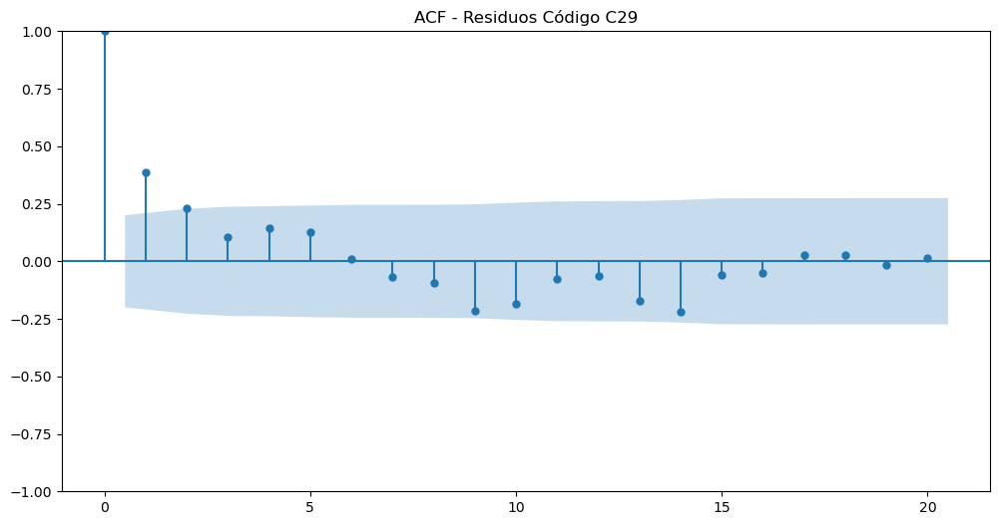
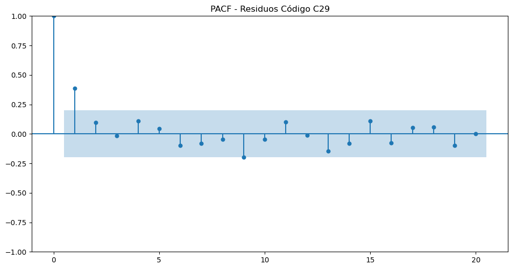
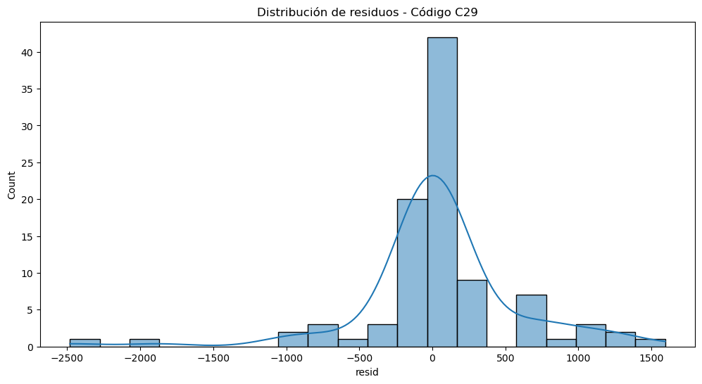
Pendiente: -2.09 comparendos por mes
R²: 0.012483
P-valor tendencia: 2.784686e-01
¿Tendencia significativa? No
Durbin-Watson: 0.000489
Hay autocorrelación significativa en la tendencia
Amplitud estacional: 1101 comparendos
Variabilidad explicada por estacionalidad: 5.17%
Prueba ADF sobre la serie original
Estadístico ADF: -3.560229
P-valor: 6.568492e-03
Valores críticos:
1%: -3.5011
5%: -2.8925
10%: -2.5833
La serie original es estacionaria
Prueba ADF sobre los residuos
Estadístico ADF: -4.515149
P-valor: 1.846107e-04
Valores críticos:
1%: -3.5011
5%: -2.8925
10%: -2.5833
Los residuos son estacionarios
Tanto la serie original como los residuos son estacionarios
Prueba Ljung-Box
lb_stat lb_pvalue
6 63.762370 7.716917e-12
12 101.820733 2.447211e-16
18 111.750463 1.484544e-15
¿Los residuos son ruido blanco? No
Prueba t (media cero) p-valor: 0.279449
¿Residuos centrados en cero? Sí
Shapiro-Wilk p-valor: 5.670809e-09
¿Residuos normales? No
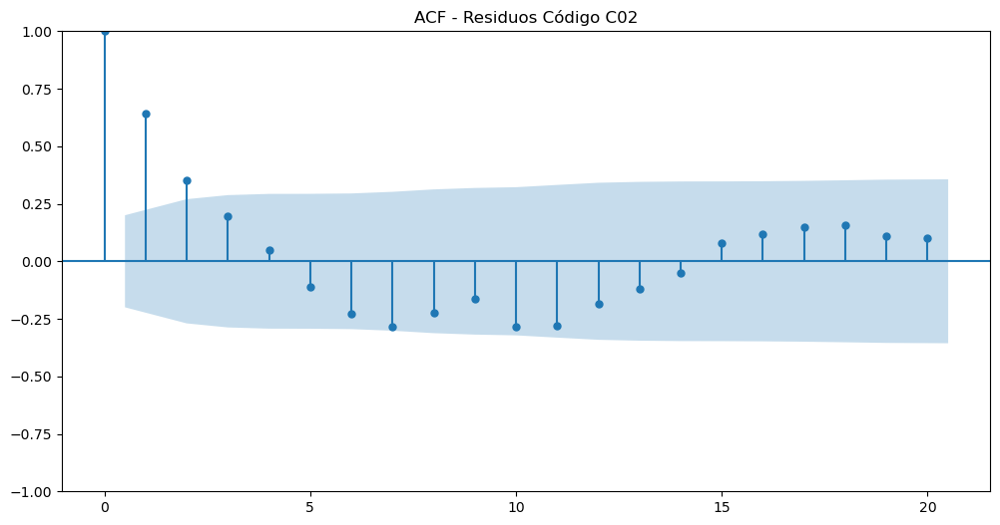
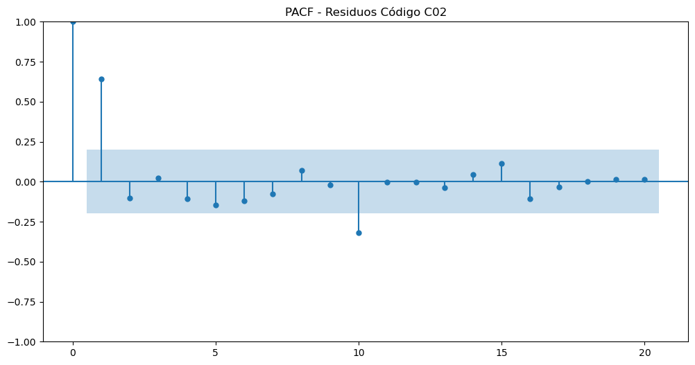
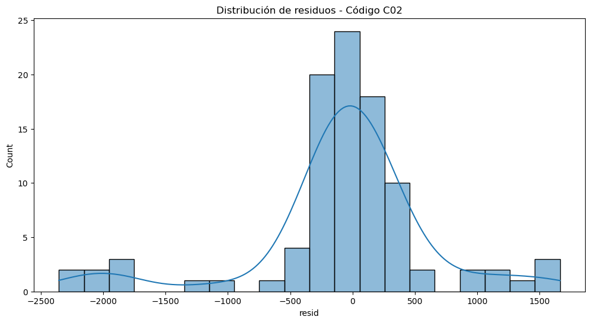
Pendiente: 10.32 comparendos por mes
R²: 0.515136
P-valor tendencia: 1.897789e-16
¿Tendencia significativa? Sí
Durbin-Watson: 0.002303
Hay autocorrelación significativa en la tendencia
Amplitud estacional: 1508 comparendos
Variabilidad explicada por estacionalidad: 10.93%
Prueba ADF sobre la serie original
Estadístico ADF: -3.206076
P-valor: 1.963569e-02
Valores críticos:
1%: -3.5011
5%: -2.8925
10%: -2.5833
La serie original es estacionaria
Prueba ADF sobre los residuos
Estadístico ADF: -2.845189
P-valor: 5.210310e-02
Valores críticos:
1%: -3.5088
5%: -2.8958
10%: -2.5850
Los residuos no son estacionarios
La descomposición no logró eliminar completamente la no estacionariedad
Prueba Ljung-Box
lb_stat lb_pvalue
6 75.973192 2.419453e-14
12 84.460540 5.778506e-13
18 97.787880 5.620636e-13
¿Los residuos son ruido blanco? No
Prueba t (media cero) p-valor: 0.005963
¿Residuos centrados en cero? No
Shapiro-Wilk p-valor: 1.433621e-11
¿Residuos normales? No
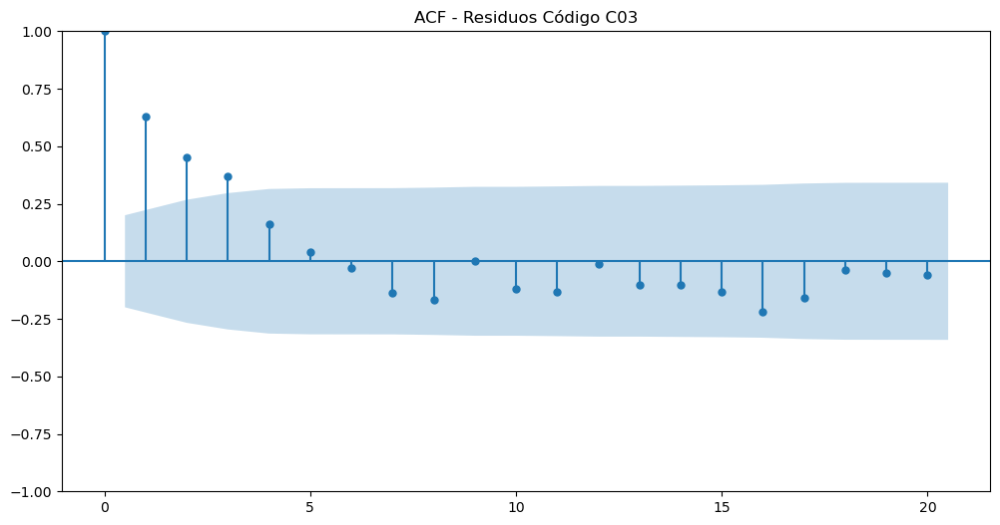
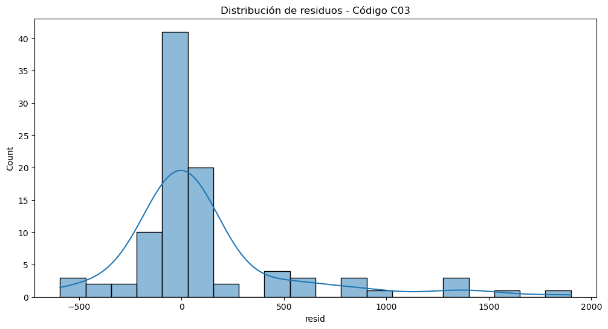
Pendiente: -2.10 comparendos por mes
R²: 0.140262
P-valor tendencia: 1.704625e-04
¿Tendencia significativa? Sí
Durbin-Watson: 0.001390
Hay autocorrelación significativa en la tendencia
Amplitud estacional: 598 comparendos
Variabilidad explicada por estacionalidad: 25.89%
Prueba ADF sobre la serie original
Estadístico ADF: -4.410945
P-valor: 2.838701e-04
Valores críticos:
1%: -3.5011
5%: -2.8925
10%: -2.5833
La serie original es estacionaria
Prueba ADF sobre los residuos
Estadístico ADF: -7.968382
P-valor: 2.824389e-12
Valores críticos:
1%: -3.5011
5%: -2.8925
10%: -2.5833
Los residuos son estacionarios
Tanto la serie original como los residuos son estacionarios
Prueba Ljung-Box
lb_stat lb_pvalue
6 5.189444 0.519755
12 15.680621 0.206306
18 16.970266 0.525150
¿Los residuos son ruido blanco? Sí
Prueba t (media cero) p-valor: 0.957663
¿Residuos centrados en cero? Sí
Shapiro-Wilk p-valor: 1.352521e-06
¿Residuos normales? No
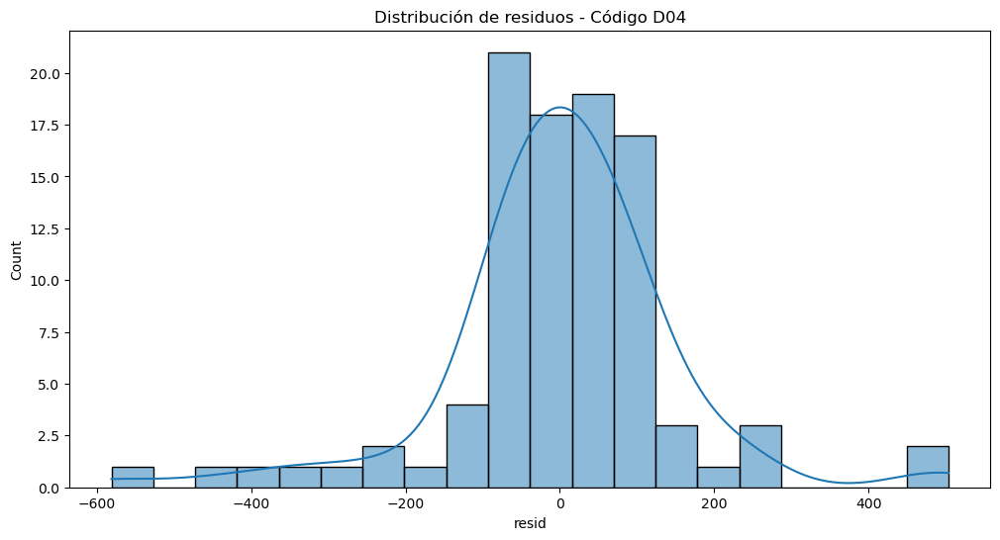
Pendiente: -0.04 comparendos por mes
R²: 0.012700
P-valor tendencia: 2.742995e-01
¿Tendencia significativa? No
Durbin-Watson: 0.001910
Hay autocorrelación significativa en la tendencia
Amplitud estacional: 36 comparendos
Variabilidad explicada por estacionalidad: 10.70%
Prueba ADF sobre la serie original
Estadístico ADF: -3.276819
P-valor: 1.594699e-02
Valores críticos:
1%: -3.5019
5%: -2.8928
10%: -2.5835
La serie original es estacionaria
Prueba ADF sobre los residuos
Estadístico ADF: -3.430005
P-valor: 9.977558e-03
Valores críticos:
1%: -3.5027
5%: -2.8932
10%: -2.5836
Los residuos son estacionarios
Tanto la serie original como los residuos son estacionarios
Prueba Ljung-Box
lb_stat lb_pvalue
6 58.016370 1.137200e-10
12 63.354516 5.484042e-09
18 69.056902 6.521533e-08
¿Los residuos son ruido blanco? No
Prueba t (media cero) p-valor: 0.032421
¿Residuos centrados en cero? No
Shapiro-Wilk p-valor: 7.879549e-12
¿Residuos normales? No
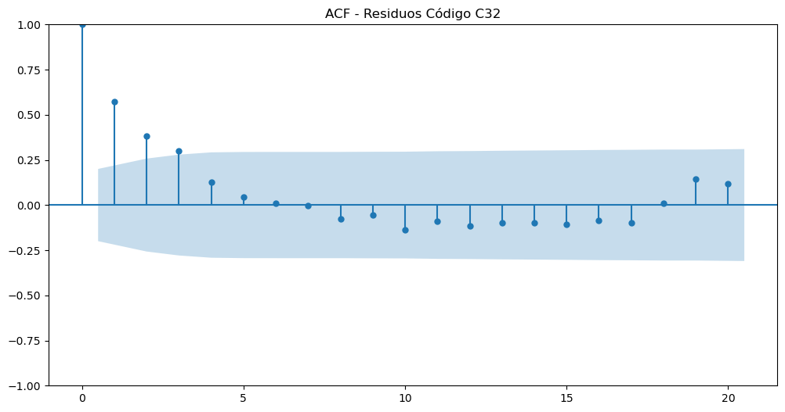
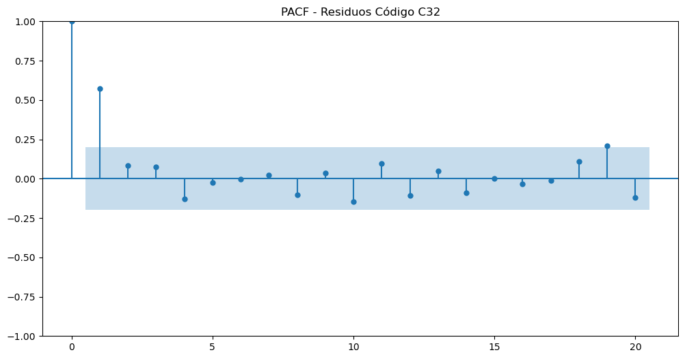
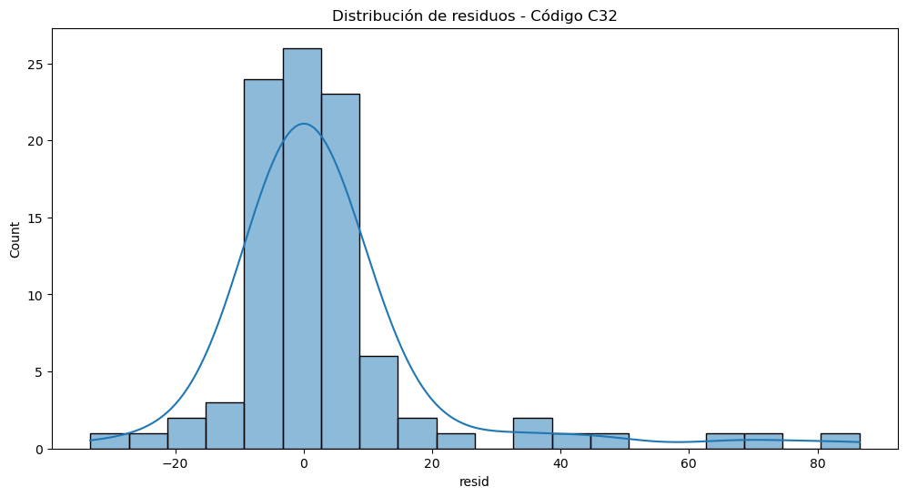
Código C29 (Exceso de velocidad)
Análisis de tendencia: La pendiente negativa de -18.91 comparendos por mes indica una disminución promedio mensual estadísticamente significativa (p-valor < 0.0001). El R² de 57.9% muestra que la tendencia lineal explica más de la mitad de la variabilidad total, lo que indica un ajuste moderadamente bueno. La prueba de Durbin-Watson con un valor de 0.0004 indica una fuerte autocorrelación positiva en los residuos de la tendencia, lo que sugiere que existen patrones sistemáticos no lineales no capturados. Se confirma una disminución sostenida en el volumen de infracciones por exceso de velocidad a lo largo del tiempo.
Análisis de estacionalidad: La estacionalidad explica solo el 5.66% de la variabilidad total, lo que indica que el exceso de velocidad tiene un patrón cíclico anual débil. La amplitud de 1,322 comparendos representa una oscilación moderada a lo largo del año, pero su bajo peso relativo sugiere que la mayor parte de la variabilidad se debe a otros componentes.
Análisis de estacionariedad: La serie original no es estacionaria (p-valor ADF = 0.2405), pero los residuos sí lo son (p-valor < 0.0001), indicando que la descomposición STL capturó correctamente tendencia y estacionalidad.
Análisis de residuos: Los residuos no son ruido blanco (p-valor Ljung-Box muy bajos), están centrados en cero (p-valor t-test = 0.4168) y no son normales (Shapiro-Wilk p-valor < 0.0001).
Código C02 (Estacionamiento prohibido)
Análisis de tendencia: La pendiente negativa de -2.09 comparendos por mes no es estadísticamente significativa (p-valor = 0.2785). El R² de 1.25% es extremadamente bajo. No se confirma una tendencia sostenida en el volumen de infracciones por estacionamiento prohibido.
Análisis de estacionalidad: La estacionalidad explica solo el 5.17% de la variabilidad total, un patrón cíclico muy débil. La amplitud de 1,101 comparendos es moderada.
Análisis de estacionariedad: La serie original es estacionaria (p-valor ADF = 0.0066), al igual que los residuos, lo que indica que la serie ya tiene media y varianza constantes sin necesidad de descomposición.
Análisis de residuos: Los residuos no son ruido blanco (p-valores extremadamente bajos), están centrados en cero (p-valor = 0.2794) y no son normales.
Código C03 (Bloqueo de calzada o intersección)
Análisis de tendencia: La pendiente positiva de 10.32 comparendos por mes indica un aumento promedio mensual estadísticamente significativo (p-valor < 0.0001). El R² de 51.5% muestra un ajuste moderadamente bueno. Se confirma un crecimiento sostenido en el volumen de infracciones por bloqueo de calzada a lo largo del tiempo, lo que contrasta con los demás códigos que presentan tendencias negativas o nulas.
Análisis de estacionalidad: La estacionalidad explica el 10.93% de la variabilidad total, el porcentaje más alto entre los códigos analizados junto con D04. La amplitud de 1,508 comparendos es considerable.
Análisis de estacionariedad: La serie original es estacionaria (p-valor ADF = 0.0196), pero los residuos no son estacionarios (p-valor = 0.0521, ligeramente por encima de 0.05). Esto indica que la descomposición STL no logró eliminar completamente la no estacionariedad, posiblemente por la presencia de la tendencia creciente que no fue completamente capturada.
Análisis de residuos: Los residuos no son ruido blanco, no están centrados en cero (p-valor t-test = 0.0060), y no son normales. El sesgo en los residuos indica que el modelo subestima o sobreestima sistemáticamente los valores.
Código D04 (Paso de semáforo en rojo o señal de pare)
Análisis de tendencia: La pendiente negativa de -2.10 comparendos por mes es estadísticamente significativa (p-valor = 0.0002). El R² de 14.0% es bajo, indicando que la tendencia explica una pequeña parte de la variabilidad. Se confirma una leve disminución sostenida.
Análisis de estacionalidad: La estacionalidad explica el 25.89% de la variabilidad total, el porcentaje más alto de todos los códigos. La amplitud de 598 comparendos es la menor en términos absolutos, pero su peso relativo es el más importante, indicando que el paso de semáforo en rojo tiene el patrón estacional más definido.
Análisis de estacionariedad: Tanto la serie original como los residuos son estacionarios.
Análisis de residuos: Los residuos son ruido blanco (p-valores Ljung-Box > 0.05 para todos los rezagos), están centrados en cero (p-valor = 0.9577) y no son normales. Este es el único código donde los residuos cumplen con la condición de ruido blanco, lo que indica que el modelo de descomposición capturó adecuadamente toda la estructura temporal de la serie.
Código C32 (Paso de peatones)
Análisis de tendencia: La pendiente de -0.04 comparendos por mes no es estadísticamente significativa (p-valor = 0.2743). El R² de 1.27% es extremadamente bajo. No se confirma una tendencia sostenida.
Análisis de estacionalidad: La estacionalidad explica el 10.70% de la variabilidad total. La amplitud de solo 36 comparendos refleja el bajo volumen de esta infracción.
Análisis de estacionariedad: Tanto la serie original como los residuos son estacionarios.
Análisis de residuos: Los residuos no son ruido blanco, no están centrados en cero (p-valor t-test = 0.0324), y no son normales. El sesgo indica que el modelo tiene un error sistemático.
Hallazgos:
Mientras que C29 y D04 muestran disminuciones significativas, y C02 y C32 no presentan tendencia, el bloqueo de calzada ha aumentado sostenidamente (+10.32 comparendos por mes), lo que sugiere un problema creciente de conductores bloqueando intersecciones.
Con un 25.89% de variabilidad explicada, el código D04 es el único con un patrón estacional bien definido, además de ser el único con residuos que cumplen la condición de ruido blanco.
El código D04 es el único donde el modelo capturó toda la estructura temporal, lo que sugiere que es la serie más predecible y con patrones más claros.
Para el código C03 los residuos no estacionarios y el sesgo en la media indican que la tendencia creciente no fue completamente capturada, posiblemente por la presencia de un punto de inflexión o por cambios en el comportamiento a lo largo del tiempo.
C29 tiene la mayor variabilidad explicada por tendencia con un R² del 57.9%, el exceso de velocidad es la infracción donde la disminución a largo plazo es más evidente y consistente.
Gráfico de Autocorrelación (ACF) - Código C29: El ACF mide la relación entre el residuo actual y sus valores pasados.
Se nota una correlación significativa en el lag 1 (sobresale claramente de la banda sombreada azul). También hay una ligera salida en el lag 2.
El modelo aún no ha extraído toda la información de la serie. Ese pico en el primer rezago sugiere que existe una estructura de Promedio Móvil (MA) o una persistencia que no ha sido corregida. Los residuos no son totalmente independientes.
Gráfico de Autocorrelación Parcial (PACF) - Código C29: El PACF ayuda a identificar la correlación directa descartando las influencias de los retardos intermedios.
Al igual que en el ACF, el lag 1 es significativamente alto y positivo. Después de eso, la mayoría de los valores caen dentro del área de confianza (banda azul), aunque el lag 9 muestra una pequeña salida negativa.
La presencia de un lag 1 fuerte tanto en ACF como en PACF suele indicar que el modelo podría beneficiarse de un ajuste en el orden AR(1) o MA(1), o que la serie podría necesitar una diferencia adicional si no es estacionaria.
Gráfico de la distribución de los residuos - Código C29:Este gráfico evalúa la normalidad de los errores.
La distribución tiene una forma acampanada centrada cerca de cero, lo cual es positivo.
Hay presencia de valores extremos hacia la izquierda (cerca de -2500) y hacia la derecha (más allá de 1500).
Los errores no siguen una distribución normal perfecta. Esos valores extremos (outliers) podrían estar sesgando los parámetros del modelo o indicando eventos inusuales en los datos del Código C29 que el modelo no puede explicar.
Gráfico de Autocorrelación (ACF) - Código C02
Existe una autocorrelación muy fuerte y positiva en el lag 1 (cercana a 0.6) y en el lag 2. Además, se observa un patrón de comportamiento donde los lags se mantienen fuera de las bandas de confianza de manera persistente.
Esto es una señal clara de que el modelo no ha capturado la dinámica de la serie. Los residuos están altamente correlacionados entre sí; lo que sucede hoy en el error está muy ligado a lo que sucedió ayer. Esto suele indicar que falta un componente autorregresivo (AR) o que la serie original no ha sido correctamente estacionarizada (podría necesitar una diferencia).
Gráfico de Autocorrelación Parcial (PACF) - Código C02:
Hay un pico prominente y positivo en el lag 1, seguido de un pico negativo significativo en el lag 10.
El pico en el lag 1 refuerza la idea de que se necesita un término AR(1) más robusto. El pico negativo en el lag 10 es curioso; podría indicar una estacionalidad técnica o un ciclo específico en los datos del Código C02 que el modelo actual ignora por completo.
Gráfico de la distribución de los residuos - Código C02 La distribución es claramente no normal. Hay una concentración principal cerca de cero. Existe un segundo grupo o “cluster” de errores muy grandes y negativos (alrededor de -2000).
Gráfico de Autocorrelación (ACF) - Código C03
Se presentan picos significativos y positivos en los lags 1, 2 y 3. La caída de la correlación es gradual, lo que se conoce como un comportamiento de memoria larga.
El modelo actual no ha logrado eliminar la dependencia serial. Que los primeros tres rezagos sean tan altos indica que el error de hoy está fuertemente influenciado por los errores de los últimos tres periodos. Esto sugiere que el modelo necesita una estructura de Promedio Móvil (MA) de mayor orden o que la serie aún tiene una tendencia no capturada.
Gráfico de Autocorrelación Parcial (PACF) - Código C03:
Hay un pico muy prominente en el lag 1 (superior a 0.6), seguido de picos significativos en el lag 4 (negativo), lag 9 (positivo) y lag 10 (negativo).
El pico fuerte en el lag 1 es una señal clásica de que se requiere un componente Autorregresivo AR(1). Sin embargo, los picos significativos en los lags 9 y 10 sugieren la existencia de una estacionalidad o un ciclo oculto en los datos del Código C03 que el modelo está ignorando.
Gráfico de la distribución de los residuos - Código C02 La distribución tiene un sesgo hacia la derecha (asimetría positiva).La mayor parte de los residuos están concentrados alrededor de cero. Existe una “cola” muy larga hacia los valores positivos (llegando hasta casi 2000).
Aunque la mayoría de las predicciones son precisas (la barra alta en 0), el modelo tiende a subestimar significativamente el valor real en varias ocasiones (generando residuos positivos grandes). Esto indica que los errores no son normales y que el modelo es vulnerable a valores atípicos o “picos” repentinos en la serie original.
Este modelo parece ser mucho más robusto que los anteriores (C02 y C03), acercándose más al ideal de “ruido blanco”.
Gráfico de Autocorrelación (ACF) y Autocorrelación Parcial (PACF) - Código D04
Casi todos los retardos (lags) se encuentran dentro de las bandas de confianza (el área sombreada azul). Solo el lag 1 en el PACF y ACF roza el límite superior, pero de forma muy leve comparado con los otros códigos.
Esto indica que el modelo ha capturado exitosamente casi toda la dependencia temporal de la serie. Los errores son prácticamente independientes entre sí.
Gráfico de la distribución de los residuos - Código D04
El histograma muestra una forma mucho más simétrica y centrada en cero. Aunque todavía hay un par de valores atípicos (outliers) en los extremos (-600 y +500), la curva de densidad (KDE) se ajusta mucho mejor a la forma de una distribución normal.
El modelo tiene errores con varianza más constante y menos sesgo. Es un modelo mucho más fiable para realizar inferencias o pronósticos.
Gráfico de Autocorrelación (ACF) - Código C32
Prácticamente todos los retardos (lags) se encuentran dentro de las bandas sombreadas azules de confianza. Solo hay un par de picos que rozan o sobresalen mínimamente de la banda, pero no de forma alarmante.
Esto es una excelente señal. Indica que los residuos son independientes. El modelo ha logrado extraer casi toda la estructura de dependencia temporal de los datos originales. No hay evidencia de que falten términos de promedio móvil (MA).
Gráfico de Autocorrelación Parcial (PACF) - Código C32:
Al igual que en el ACF, los valores se mantienen dentro de los límites de significancia. El lag 1 es muy bajo, lo que contrasta positivamente con los modelos C29 o C02 donde era un problema crítico.
No hay necesidad de añadir más componentes autorregresivos (AR). El modelo está bien especificado en cuanto a su estructura de rezagos.
Gráfico de la distribución de los residuos - Código D04 El histograma muestra una distribución asimétrica positiva y unimodal muy bien centrada en el cero. La curva azul (KDE) sigue de cerca la forma de una campana de Gauss. Aunque persisten algunos “outliers” (valores extremos hacia +80), son mucho menos frecuentes que en los otros códigos.
Los errores tienden a la normalidad. Esto valida el uso de intervalos de confianza para tus pronósticos, ya que los supuestos del modelo se cumplen razonablemente bien.
Distribución Mensual y Anual de Comparendos Electrónicos por Código de Infracción#
Se construyen tablas pivote que cruzan los meses y los años para cada código de infracción (C29, C02, C03, D04 y C32), utilizando la suma ponderada de CANTIDAD_INFRACCIONES para visualizar el volumen de infracciones en cada combinación temporal. Los resultados se presentan mediante mapas de calor independientes para cada código, con los meses ordenados de diciembre a enero para facilitar la identificación de patrones estacionales específicos de cada tipo de infracción. Esta visualización permite comparar el comportamiento temporal de los diferentes códigos.
codigos_heatmap = ['C29', 'C02', 'C03', 'D04', 'C32']
for codigo in codigos_heatmap:
df_codigo = df_comparendos_electronicos_copy[df_comparendos_electronicos_copy['COD_INFRACCION'] == codigo]
df_codigo['año'] = df_codigo['fecha_comparendo'].dt.year
df_codigo['mes_numero'] = df_codigo['fecha_comparendo'].dt.month
tabla_heatmap = df_codigo.pivot_table(
values='CANTIDAD_INFRACCIONES',
index='mes_numero',
columns='año',
aggfunc='sum',
fill_value=0
)
tabla_heatmap.index = nombres_meses
tabla_heatmap = tabla_heatmap.iloc[::-1]
fig = go.Figure(data=go.Heatmap(
z=tabla_heatmap.values,
x=tabla_heatmap.columns,
y=tabla_heatmap.index,
colorscale='blues',
text=tabla_heatmap.values,
texttemplate='%{text:,.0f}',
hovertemplate=f'Código: {codigo}<br>Mes: %{{y}}<br>Año: %{{x}}<br>Comparendos: %{{z:,.0f}}<extra></extra>'
))
fig.update_layout(
title=dict(
text=f'Distribución de Comparendos Electrónicos por Año y Mes - Código {codigo}',
x=0.5,
xanchor='center',
font=dict(size=16, weight='bold')
),
xaxis_title=dict(
text='Año',
font=dict(weight='bold')
),
yaxis_title=dict(
text='Mes',
font=dict(weight='bold')
),
template='plotly_white',
width=1055,
height=500
)
fig.show()
Distribución Mensual de Comparendos por Código de Infracción#
Se examina la variabilidad mensual de los comparendos electrónicos desagregada por cada código de infracción (C29, C02, C03, D04 y C32), agrupando los registros por mes y año y sumando la columna CANTIDAD_INFRACCIONES para obtener el volumen real de infracciones por cada combinación. Para cada código, se presentan estadísticos descriptivos (media, desviación estándar, mínimo, máximo y cuartiles) para cada mes, con el fin de caracterizar su comportamiento típico y su dispersión interanual de manera específica por tipo de infracción. Complementariamente, se generan diagramas de caja (boxplot) que visualizan la distribución de las infracciones para cada mes, incluyendo la media como referencia. Para validar si las diferencias observadas entre meses son estadísticamente significativas para cada código, se aplica un análisis de varianza que incluye la prueba de normalidad de Shapiro-Wilk para evaluar la distribución de los datos por mes, la prueba de Levene para verificar la homogeneidad de varianzas, y dependiendo del cumplimiento de los supuestos, se realiza un ANOVA paramétrico (con prueba post-hoc de Tukey HSD) o un Kruskal-Wallis no paramétrico (con prueba post-hoc de Dunn y corrección de Bonferroni). Este análisis permite identificar, de manera diferenciada por código, qué meses presentan mayor variabilidad en la detección de cada infracción, detectar meses con comportamientos atípicos específicos de cada falta de tránsito, comparar la estabilidad estacional entre los distintos tipos de infracción, y determinar si existe estacionalidad estadísticamente significativa en el volumen de comparendos para cada código.
for codigo in codigos_heatmap:
df_codigo = df_comparendos_electronicos_copy[df_comparendos_electronicos_copy['COD_INFRACCION'] == codigo]
df_boxplot_codigo = df_codigo.groupby(['mes_nombre', 'año'])['CANTIDAD_INFRACCIONES'].sum().reset_index()
df_boxplot_codigo.columns = ['mes', 'año', 'infracciones']
df_boxplot_codigo['mes_nombre'] = df_boxplot_codigo['mes'].apply(lambda x: nombres_meses[x-1])
print(f"Estadísticas Descriptivas - Código {codigo}")
estadisticas = df_boxplot_codigo.groupby('mes_nombre')['infracciones'].describe().round(0).fillna(0).astype(int).reindex(nombres_meses)
display(estadisticas.T)
display(HTML("<hr style='border: 1px solid #696969; margin: 20px 0;'>"))
fig = go.Figure()
fig.add_trace(go.Box(
x=df_boxplot_codigo['mes_nombre'],
y=df_boxplot_codigo['infracciones'],
marker_color='mediumpurple',
name='',
boxmean=True,
hovertemplate='Mes: %{x}<br>Comparendos: %{y:,.0f}<extra></extra>'
))
fig.update_layout(
title=dict(
text=f'Distribución de Comparendos Electrónicos por Mes - Código {codigo}',
x=0.5,
xanchor='center',
font=dict(size=16, weight='bold')
),
xaxis_title=dict(
text='Mes',
font=dict(weight='bold')
),
yaxis_title=dict(
text='Cantidad de Comparendos',
font=dict(weight='bold')
),
template='plotly_white',
width=1055,
height=500
)
fig.show()
df_anova = df_boxplot_codigo.copy()
meses_grupos = [
df_anova[df_anova['mes_nombre'] == mes]['infracciones'].values
for mes in nombres_meses
]
print("Prueba de normalidad (Shapiro-Wilk) por mes:")
normalidad = []
for mes, grupo in zip(nombres_meses, meses_grupos):
if len(grupo) >= 3:
stat, p = stats.shapiro(grupo)
normalidad.append(p > 0.05)
print(f"{mes}: p-valor = {p:.6f} -> {'Normal' if p > 0.05 else 'No normal'}")
else:
print(f"{mes}: No hay suficientes datos para evaluar normalidad")
normalidad.append(False)
cumple_normalidad = all(normalidad) if normalidad else False
print(f"¿Se cumple normalidad en todos los meses? {'Sí' if cumple_normalidad else 'No'}")
grupos_validos = [g for g in meses_grupos if len(g) > 0]
if len(grupos_validos) > 1:
stat_levene, p_levene = stats.levene(*grupos_validos)
print(f"\nLevene p-valor: {p_levene:.6f}")
print(f"¿Varianzas iguales? {'Sí' if p_levene > 0.05 else 'No'}")
if cumple_normalidad and p_levene > 0.05:
print("\nSe cumplen los supuestos → Se aplica ANOVA")
f_stat, p_valor = stats.f_oneway(*meses_grupos)
print(f"Estadístico F: {f_stat:.4f}")
print(f"P-valor: {p_valor:.6f}")
print(f"¿Hay diferencias entre meses? {'Sí' if p_valor < 0.05 else 'No'}")
if p_valor < 0.05:
print("\nPrueba post-hoc Tukey HSD:")
tukey = pairwise_tukeyhsd(
endog=df_anova['infracciones'],
groups=df_anova['mes_nombre'],
alpha=0.05
)
print(tukey)
else:
print("\nNo se cumplen los supuestos → Se aplica Kruskal-Wallis")
h_stat, p_valor = stats.kruskal(*grupos_validos)
print(f"Estadístico H: {h_stat:.4f}")
print(f"P-valor: {p_valor:.6f}")
print(f"¿Hay diferencias entre meses? {'Sí' if p_valor < 0.05 else 'No'}")
if p_valor < 0.05:
print("\nPrueba post-hoc Dunn (con corrección Bonferroni):")
import scikit_posthocs as sp
df_dunn = df_anova[['mes_nombre', 'infracciones']].copy()
dunn = sp.posthoc_dunn(
df_dunn,
val_col='infracciones',
group_col='mes_nombre',
p_adjust='bonferroni'
)
dunn = dunn.loc[nombres_meses, nombres_meses]
display(dunn)
display(HTML("<hr style='border: 2px solid #696969; margin: 20px 0;'>"))
Estadísticas Descriptivas - Código C29
| mes_nombre | Enero | Febrero | Marzo | Abril | Mayo | Junio | Julio | Agosto | Septiembre | Octubre | Noviembre | Diciembre |
|---|---|---|---|---|---|---|---|---|---|---|---|---|
| count | 8 | 8 | 8 | 8 | 8 | 8 | 8 | 8 | 8 | 8 | 8 | 8 |
| mean | 3186 | 2918 | 3424 | 3385 | 2862 | 2888 | 3031 | 2888 | 2718 | 2706 | 2631 | 2958 |
| std | 1117 | 925 | 1015 | 913 | 1027 | 829 | 957 | 1050 | 770 | 872 | 991 | 1116 |
| min | 1350 | 1308 | 1846 | 1701 | 1125 | 1506 | 1367 | 1173 | 1194 | 1153 | 764 | 1062 |
| 25% | 2643 | 2683 | 3020 | 3184 | 2393 | 2326 | 2788 | 2522 | 2391 | 2239 | 2205 | 2597 |
| 50% | 3524 | 3055 | 3360 | 3366 | 3286 | 2974 | 3014 | 2980 | 2868 | 2762 | 2868 | 3295 |
| 75% | 3976 | 3236 | 3723 | 3686 | 3450 | 3344 | 3433 | 3192 | 3153 | 3278 | 3240 | 3562 |
| max | 4450 | 4320 | 5402 | 4959 | 3967 | 4003 | 4692 | 4745 | 3717 | 3840 | 3705 | 4383 |
Prueba de normalidad (Shapiro-Wilk) por mes:
Enero: p-valor = 0.252333 -> Normal
Febrero: p-valor = 0.618653 -> Normal
Marzo: p-valor = 0.606818 -> Normal
Abril: p-valor = 0.585704 -> Normal
Mayo: p-valor = 0.142705 -> Normal
Junio: p-valor = 0.838420 -> Normal
Julio: p-valor = 0.737475 -> Normal
Agosto: p-valor = 0.790487 -> Normal
Septiembre: p-valor = 0.448000 -> Normal
Octubre: p-valor = 0.753975 -> Normal
Noviembre: p-valor = 0.442478 -> Normal
Diciembre: p-valor = 0.214524 -> Normal
¿Se cumple normalidad en todos los meses? Sí
Levene p-valor: 0.999755
¿Varianzas iguales? Sí
Se cumplen los supuestos → Se aplica ANOVA
Estadístico F: 0.5440
P-valor: 0.867679
¿Hay diferencias entre meses? No
Estadísticas Descriptivas - Código C02
| mes_nombre | Enero | Febrero | Marzo | Abril | Mayo | Junio | Julio | Agosto | Septiembre | Octubre | Noviembre | Diciembre |
|---|---|---|---|---|---|---|---|---|---|---|---|---|
| count | 7 | 8 | 8 | 7 | 7 | 7 | 7 | 7 | 8 | 8 | 8 | 8 |
| mean | 2102 | 2195 | 2283 | 2233 | 2461 | 2358 | 2535 | 2223 | 2126 | 2572 | 2252 | 2021 |
| std | 887 | 774 | 687 | 860 | 1029 | 931 | 683 | 869 | 982 | 688 | 630 | 577 |
| min | 1000 | 888 | 1265 | 1118 | 900 | 615 | 1471 | 1095 | 684 | 1520 | 1385 | 1094 |
| 25% | 1337 | 1857 | 2026 | 1482 | 1988 | 2132 | 2126 | 1552 | 1351 | 2198 | 1923 | 1758 |
| 50% | 2411 | 2360 | 2380 | 2418 | 2439 | 2442 | 2731 | 2370 | 2306 | 2710 | 2162 | 2130 |
| 75% | 2627 | 2560 | 2628 | 3033 | 2915 | 2768 | 3012 | 2705 | 2552 | 2976 | 2518 | 2311 |
| max | 3375 | 3329 | 3247 | 3065 | 4084 | 3647 | 3267 | 3581 | 3822 | 3575 | 3310 | 2879 |
Prueba de normalidad (Shapiro-Wilk) por mes:
Enero: p-valor = 0.514465 -> Normal
Febrero: p-valor = 0.823290 -> Normal
Marzo: p-valor = 0.420945 -> Normal
Abril: p-valor = 0.100205 -> Normal
Mayo: p-valor = 0.952927 -> Normal
Junio: p-valor = 0.563038 -> Normal
Julio: p-valor = 0.442168 -> Normal
Agosto: p-valor = 0.783135 -> Normal
Septiembre: p-valor = 0.804548 -> Normal
Octubre: p-valor = 0.710706 -> Normal
Noviembre: p-valor = 0.813963 -> Normal
Diciembre: p-valor = 0.798258 -> Normal
¿Se cumple normalidad en todos los meses? Sí
Levene p-valor: 0.961975
¿Varianzas iguales? Sí
Se cumplen los supuestos → Se aplica ANOVA
Estadístico F: 0.3436
P-valor: 0.972743
¿Hay diferencias entre meses? No
Estadísticas Descriptivas - Código C03
| mes_nombre | Enero | Febrero | Marzo | Abril | Mayo | Junio | Julio | Agosto | Septiembre | Octubre | Noviembre | Diciembre |
|---|---|---|---|---|---|---|---|---|---|---|---|---|
| count | 8 | 8 | 8 | 7 | 7 | 7 | 7 | 8 | 8 | 8 | 8 | 8 |
| mean | 317 | 486 | 548 | 718 | 836 | 909 | 885 | 633 | 873 | 923 | 685 | 758 |
| std | 267 | 371 | 434 | 506 | 625 | 806 | 753 | 666 | 784 | 841 | 620 | 708 |
| min | 3 | 31 | 58 | 45 | 25 | 60 | 64 | 15 | 35 | 55 | 51 | 41 |
| 25% | 99 | 149 | 178 | 345 | 422 | 340 | 386 | 242 | 281 | 199 | 157 | 266 |
| 50% | 302 | 552 | 465 | 752 | 657 | 769 | 648 | 336 | 656 | 746 | 619 | 521 |
| 75% | 450 | 748 | 880 | 1047 | 1294 | 1236 | 1283 | 826 | 1330 | 1645 | 1054 | 1191 |
| max | 765 | 924 | 1278 | 1446 | 1739 | 2380 | 2145 | 1983 | 2146 | 1992 | 1778 | 1822 |
Prueba de normalidad (Shapiro-Wilk) por mes:
Enero: p-valor = 0.592689 -> Normal
Febrero: p-valor = 0.209794 -> Normal
Marzo: p-valor = 0.491197 -> Normal
Abril: p-valor = 0.909482 -> Normal
Mayo: p-valor = 0.817659 -> Normal
Junio: p-valor = 0.416012 -> Normal
Julio: p-valor = 0.422322 -> Normal
Agosto: p-valor = 0.056297 -> Normal
Septiembre: p-valor = 0.314735 -> Normal
Octubre: p-valor = 0.057246 -> Normal
Noviembre: p-valor = 0.259475 -> Normal
Diciembre: p-valor = 0.142599 -> Normal
¿Se cumple normalidad en todos los meses? Sí
Levene p-valor: 0.338121
¿Varianzas iguales? Sí
Se cumplen los supuestos → Se aplica ANOVA
Estadístico F: 0.6916
P-valor: 0.742745
¿Hay diferencias entre meses? No
Estadísticas Descriptivas - Código D04
| mes_nombre | Enero | Febrero | Marzo | Abril | Mayo | Junio | Julio | Agosto | Septiembre | Octubre | Noviembre | Diciembre |
|---|---|---|---|---|---|---|---|---|---|---|---|---|
| count | 8 | 8 | 8 | 8 | 8 | 8 | 8 | 8 | 8 | 8 | 8 | 8 |
| mean | 537 | 509 | 586 | 698 | 661 | 603 | 488 | 478 | 541 | 564 | 520 | 602 |
| std | 179 | 194 | 180 | 288 | 352 | 293 | 207 | 134 | 195 | 206 | 322 | 214 |
| min | 334 | 308 | 303 | 258 | 254 | 187 | 285 | 293 | 313 | 308 | 81 | 277 |
| 25% | 361 | 375 | 461 | 508 | 342 | 322 | 333 | 396 | 420 | 393 | 275 | 466 |
| 50% | 575 | 420 | 592 | 788 | 656 | 670 | 404 | 474 | 490 | 567 | 478 | 564 |
| 75% | 620 | 644 | 714 | 863 | 959 | 824 | 621 | 519 | 697 | 741 | 758 | 763 |
| max | 846 | 812 | 847 | 1080 | 1084 | 984 | 847 | 734 | 812 | 808 | 956 | 906 |
Prueba de normalidad (Shapiro-Wilk) por mes:
Enero: p-valor = 0.315076 -> Normal
Febrero: p-valor = 0.112285 -> Normal
Marzo: p-valor = 0.768033 -> Normal
Abril: p-valor = 0.531865 -> Normal
Mayo: p-valor = 0.052820 -> Normal
Junio: p-valor = 0.442570 -> Normal
Julio: p-valor = 0.158862 -> Normal
Agosto: p-valor = 0.836801 -> Normal
Septiembre: p-valor = 0.311623 -> Normal
Octubre: p-valor = 0.196932 -> Normal
Noviembre: p-valor = 0.546964 -> Normal
Diciembre: p-valor = 0.826780 -> Normal
¿Se cumple normalidad en todos los meses? Sí
Levene p-valor: 0.066028
¿Varianzas iguales? Sí
Se cumplen los supuestos → Se aplica ANOVA
Estadístico F: 0.6363
P-valor: 0.792909
¿Hay diferencias entre meses? No
Estadísticas Descriptivas - Código C32
| mes_nombre | Enero | Febrero | Marzo | Abril | Mayo | Junio | Julio | Agosto | Septiembre | Octubre | Noviembre | Diciembre |
|---|---|---|---|---|---|---|---|---|---|---|---|---|
| count | 8 | 8 | 8 | 8 | 8 | 8 | 8 | 8 | 8 | 8 | 8 | 8 |
| mean | 44 | 40 | 38 | 37 | 31 | 33 | 31 | 25 | 34 | 27 | 34 | 47 |
| std | 34 | 26 | 29 | 23 | 19 | 20 | 19 | 14 | 16 | 13 | 20 | 41 |
| min | 15 | 18 | 18 | 13 | 7 | 11 | 9 | 7 | 7 | 6 | 3 | 6 |
| 25% | 28 | 24 | 22 | 22 | 17 | 20 | 22 | 15 | 24 | 16 | 23 | 27 |
| 50% | 32 | 33 | 30 | 28 | 30 | 28 | 26 | 21 | 39 | 30 | 38 | 34 |
| 75% | 46 | 44 | 39 | 49 | 45 | 42 | 34 | 32 | 44 | 35 | 48 | 53 |
| max | 124 | 96 | 107 | 79 | 55 | 72 | 68 | 47 | 54 | 44 | 61 | 140 |
Prueba de normalidad (Shapiro-Wilk) por mes:
Enero: p-valor = 0.002947 -> No normal
Febrero: p-valor = 0.041829 -> No normal
Marzo: p-valor = 0.001134 -> No normal
Abril: p-valor = 0.213659 -> Normal
Mayo: p-valor = 0.359725 -> Normal
Junio: p-valor = 0.493389 -> Normal
Julio: p-valor = 0.124091 -> Normal
Agosto: p-valor = 0.290620 -> Normal
Septiembre: p-valor = 0.508772 -> Normal
Octubre: p-valor = 0.639795 -> Normal
Noviembre: p-valor = 0.823669 -> Normal
Diciembre: p-valor = 0.030597 -> No normal
¿Se cumple normalidad en todos los meses? No
Levene p-valor: 0.962166
¿Varianzas iguales? Sí
No se cumplen los supuestos → Se aplica Kruskal-Wallis
Estadístico H: 5.0994
P-valor: 0.926260
¿Hay diferencias entre meses? No
Código C29 - Exceso de velocidad (284,755 infracciones)
El exceso de velocidad tiene sus picos en el primer trimestre del año (marzo y abril), mientras que los meses de septiembre a noviembre presentan los volúmenes más bajos. La variabilidad es alta en enero y diciembre, posiblemente por efectos de temporada de vacaciones y fin de año.
Código C02 - Estacionamiento prohibido (204,973 infracciones)
Las cámaras móviles (responsables del C02) presentan menos años de registro (count=7) en varios meses, confirmando la interrupción de operación durante el confinamiento de 2020.
El estacionamiento prohibido alcanza sus máximos en octubre, julio y mayo, mientras que diciembre y enero son los meses de menor actividad. La variabilidad es especialmente alta en mayo (influenciada por el pico de 2019 y el valle de 2020).
Código C03 - Bloqueo de calzada (65,230 infracciones)
El bloqueo de calzada tiene una marcada estacionalidad, con promedios mucho más altos entre mayo y octubre (segundo semestre), mientras que enero es el mes de menor actividad. La variabilidad también es mucho mayor en los meses de alta actividad.
Código D04 - Paso de semáforo en rojo (54,303 infracciones)
El paso de semáforo en rojo tiene sus picos en abril y mayo, mientras que julio y agosto presentan los promedios más bajos. La variabilidad es notablemente alta en noviembre, influenciada por valores atípicos.
Código C32 - No respetar paso de peatones (3,369 infracciones)
El no respeto al paso de peatones es la infracción de menor volumen. Presenta una clara estacionalidad con picos en diciembre y enero (temporada de fin de año y vacaciones), mientras que agosto y octubre son los meses de menor actividad.
Hallazgos:
Mayo como mes crítico para múltiples infracciones: Es el mes con mayor variabilidad para C02 y D04, influenciado por los picos de 2019 (cierres viales) y los valles de 2020 (pandemia).
Diciembre concentra la mayor variabilidad en C29 y C32: La temporada de fin de año genera comportamientos extremos tanto en exceso de velocidad como en respeto a peatones.
Notas:
Las campañas de control de velocidad deben intensificarse en marzo y abril.
El control de estacionamiento prohibido debe priorizarse en octubre, julio y mayo.
El bloqueo de calzada requiere especial atención en el segundo semestre del año.
El respeto al paso de peatones debe reforzarse en diciembre y enero, temporada de mayor afluencia peatonal.
Código C29 (Exceso de velocidad): Todos los meses cumplen con normalidad (p-valores > 0.05, el más bajo fue mayo con 0.1427) y las varianzas son homogéneas (p=0.9998). El ANOVA arroja un estadístico F de 0.5440 con un p-valor de 0.8677, muy por encima del umbral de 0.05. No existen diferencias estadísticamente significativas entre las medias de los meses para el exceso de velocidad. Las fluctuaciones observadas en los promedios mensuales (marzo con mayor promedio, noviembre con menor) no son consistentes a lo largo de los años.
Código C02 (Estacionamiento prohibido): Todos los meses cumplen con normalidad (p-valores > 0.05, el más bajo fue abril con 0.1002) y las varianzas son homogéneas (p=0.9620). El ANOVA arroja un estadístico F de 0.3436 con un p-valor de 0.9727. No existen diferencias estadísticamente significativas entre las medias de los meses para el estacionamiento prohibido.
Código C03 (Bloqueo de calzada): Todos los meses cumplen con normalidad (p-valores > 0.05, el más bajo fue agosto con 0.0563, aún por encima del umbral) y las varianzas son homogéneas (p=0.3381). El ANOVA arroja un estadístico F de 0.6916 con un p-valor de 0.7427. No existen diferencias estadísticamente significativas entre las medias de los meses para el bloqueo de calzada.
Código D04 (Paso de semáforo en rojo): Todos los meses cumplen con normalidad (p-valores > 0.05, el más bajo fue mayo con 0.0528, apenas por encima del umbral) y las varianzas son homogéneas (p=0.0660, ligeramente por encima de 0.05). El ANOVA arroja un estadístico F de 0.6363 con un p-valor de 0.7929. No existen diferencias estadísticamente significativas entre las medias de los meses para el paso de semáforo en rojo.
Código C32 (Paso de peatones): Este código no cumple con el supuesto de normalidad. Enero (p=0.0029), febrero (p=0.0418), marzo (p=0.0011) y diciembre (p=0.0306) presentan p-valores inferiores a 0.05, indicando que estos meses no siguen una distribución normal. Sin embargo, las varianzas son homogéneas (p=0.9622). Dado que no se cumple la normalidad, se aplica la prueba no paramétrica de Kruskal-Wallis, que arroja un estadístico H de 5.0994 con un p-valor de 0.9263. Tampoco existen diferencias estadísticamente significativas entre los meses para el paso de peatones.
Hallazgos:
Ninguno de los cinco códigos analizados (C29, C02, C03, D04, C32) presenta diferencias estadísticamente significativas en el volumen de comparendos a lo largo de los meses del año. Esto indica que, independientemente del tipo de infracción, los patrones mensuales se mantienen constantes sin que ningún mes destaque consistentemente por encima de los demás.
Estos resultados complementan el análisis de descomposición STL, donde se observó que algunos códigos presentaban amplitudes estacionales considerables (C29: 1,322; C03: 1,508; D04: 598). Sin embargo, al someter las diferencias mensuales a una prueba estadística (ANOVA o Kruskal-Wallis), se confirma que las oscilaciones observadas entre meses no son lo suficientemente grandes ni consistentes a lo largo de los años como para ser consideradas estadísticamente significativas.
Es el único código donde algunos meses (enero, febrero, marzo y diciembre) no siguen una distribución normal. Esto puede deberse al bajo volumen de infracciones de esta categoría (solo 3,369 comparendos en total), lo que genera distribuciones más erráticas y menos estables que en otros códigos con mayor volumen.
Análisis de la Clase del Vehículo Infractor Según el Servicio del Vehículo Infractor#
Se construye una tabla pivote que cruza la clase del vehículo infractor (con agrupación de vehículos pesados y categorías minoritarias en “OTROS”) con el servicio del vehículo (PARTICULAR, PÚBLICO y OTROS, que incluye OFICIAL y DIPLOMÁTICO), utilizando la suma ponderada de CANTIDAD_INFRACCIONES para obtener el volumen real de infracciones en cada combinación. Para cada clase de vehículo, se calcula el porcentaje que representa cada servicio sobre el total de sus comparendos, permitiendo identificar la composición del parque automotor infractor. Los resultados se presentan mediante un mapa de calor interactivo, donde las clases de vehículo se ordenan de menor a mayor según su total de comparendos, y cada celda muestra tanto el valor absoluto como el porcentaje correspondiente. Esta visualización permite identificar qué servicios predominan dentro de cada clase de vehículo, revelando patrones de distribución del parque automotor que comete infracciones detectadas por el sistema de cámaras.
tabla_heatmap = df_comparendos_electronicos_copy.pivot_table(
values='CANTIDAD_INFRACCIONES',
index='CLASE_AGRUPADA',
columns='SERVICIO_AGRUPADO',
aggfunc='sum',
fill_value=0
)
orden = tabla_heatmap.sum(axis=1).sort_values(ascending=True).index
tabla_heatmap = tabla_heatmap.loc[orden]
total_por_fila = tabla_heatmap.sum(axis=1)
porcentajes = tabla_heatmap.div(total_por_fila, axis=0) * 100
porcentajes = porcentajes.round(2)
texto_combinado = tabla_heatmap.applymap(lambda x: f'{int(x):,}') + '<br>(' + porcentajes.applymap(lambda x: f'{x:.2f}%') + ')'
fig = go.Figure(data=go.Heatmap(
z=tabla_heatmap.values,
x=tabla_heatmap.columns,
y=tabla_heatmap.index,
colorscale='Blues',
text=texto_combinado.values,
texttemplate='%{text}',
hovertemplate='Clase: %{y}<br>Servicio: %{x}<br>Comparendos: %{z:,.0f}<extra></extra>'
))
fig.update_layout(
title=dict(
text='Distribución de Comparendos por Clase del Vehículo y Servicio del Vehículo',
x=0.5,
xanchor='center',
font=dict(size=16, weight='bold')
),
xaxis_title=dict(
text='Servicio del Vehículo',
font=dict(weight='bold')
),
yaxis_title=dict(
text='Clase del Vehículo',
font=dict(weight='bold')
),
template='plotly_white',
width=1055,
height=500
)
fig.show()
AUTOMÓVIL (321,953 infracciones): La abrumadora mayoría de los automóviles infractores son de servicio particular (82.80%), mientras que los de servicio público representan el 17.14%.
CAMIONETA (129,827 infracciones): Similar a los automóviles, las camionetas infractoras son predominantemente particulares (89.27%), con una presencia menor de servicio público (10.42%).
MOTOCICLETA (102,708 infracciones): Las motocicletas tienen una concentración casi absoluta en el servicio particular (99.93%), con una presencia mínima de servicio OTROS. No se registran infracciones de motocicletas públicas.
CAMPERO (39,955 infracciones): Al igual que las clases anteriores, los camperos infractores son mayoritariamente particulares (98.82%), con muy baja representación de servicio público y OTROS.
VEHÍCULOS PESADOS (19,736 infracciones) Los vehículos pesados (camión, bus, microbús, buseta, volqueta, tractocamión) son mayoritariamente de servicio público (93.75%), a diferencia de las clases anteriores donde predominaba el servicio particular. Los particulares representan solo el 6.14%. Lo más probable es que esto se deba a las categorias microbús, bús, buseta que son mayoritariamente para el servicio al público.
OTROS (181 infracciones): Esta categoría (que incluye motocarro, cuatrimoto, no reportado, sin clase) tiene una mayor presencia de servicio particular (95.58%), seguido de público (4.42%). No se registran vehículos de servicio diplomático u oficial.
Hallazgos:
Segmentación clara por servicio**: Los vehículos particulares dominan en automóviles, camionetas, motocicletas y camperos (entre el 82% y el 99%). Los vehículos de servicio público dominan en la categoría de vehículos pesados (93.75%).
Las motocicletas son casi exclusivamente particulares: Con un 99.93%, las motocicletas infractoras son abrumadoramente de servicio particular, lo que refleja que el uso de motocicletas como servicio OTROS es marginal en el contexto de los comparendos electrónicos.
Los vehículos pesados son predominantemente públicos: Este hallazgo es consistente con la naturaleza de estos vehículos (buses, busetas, camiones, etc.), que en su mayoría prestan servicios de transporte público o de carga.
Notas
Las campañas de control y educación vial para automóviles, camionetas, motocicletas y camperos deben enfocarse principalmente en conductores particulares.
Para vehículos pesados, las estrategias deben dirigirse a empresas de transporte público y de carga.
La alta concentración de motocicletas en el servicio particular sugiere que las políticas de control de velocidad y semáforos para este tipo de vehículo deben enfocarse en conductores particulares.
Análisis de las Cámaras Según el Servicio del Vehículo Infractor#
Se examina, para cada categoría de servicio del vehículo (PARTICULAR, PÚBLICO y OTROS). Para cada servicio, se presentan tablas de frecuencias que muestran las ubicaciones con sus respectivos conteos, porcentajes dentro del servicio, y las fechas de primer y último registro, permitiendo identificar los puntos críticos de detección para cada tipo de servicio vehicular, evaluar la antigüedad y continuidad operativa de las cámaras para cada grupo, y comprender si existen patrones geográficos diferenciados en la comisión de infracciones según el servicio del vehículo infractor.
servicios = df_comparendos_electronicos_copy['SERVICIO_AGRUPADO'].unique()
for servicio in servicios:
df_servicio = df_comparendos_electronicos_copy[df_comparendos_electronicos_copy['SERVICIO_AGRUPADO'] == servicio]
total_servicio = df_servicio['CANTIDAD_INFRACCIONES'].sum()
df_ubicaciones = df_servicio.groupby('Camara_y_direccion')['CANTIDAD_INFRACCIONES'].sum().sort_values(ascending=False).reset_index()
df_ubicaciones.columns = ['Cámara y Dirección', 'Comparendos']
df_ubicaciones['Porcentaje'] = (df_ubicaciones['Comparendos'] / total_servicio * 100).round(2)
fechas = df_servicio.groupby('Camara_y_direccion')['fecha_comparendo'].agg(['min', 'max']).reset_index()
fechas.columns = ['Cámara y Dirección', 'Primer Registro', 'Último Registro']
fechas['Primer Registro'] = pd.to_datetime(fechas['Primer Registro']).dt.date
fechas['Último Registro'] = pd.to_datetime(fechas['Último Registro']).dt.date
df_ubicaciones = df_ubicaciones.merge(fechas, on='Cámara y Dirección')
print(f"Distribución de Comparendos - Servicio: {servicio}")
pd.set_option('display.max_columns', None)
pd.set_option('display.width', None)
pd.set_option('display.max_colwidth', None)
display(df_ubicaciones.T)
pd.reset_option('display.max_columns')
pd.reset_option('display.width')
pd.reset_option('display.max_colwidth')
display(HTML("<hr style='border: 2px solid #696969; margin: 20px 0;'>"))
Distribución de Comparendos - Servicio: PARTICULAR
| 0 | 1 | 2 | 3 | 4 | 5 | 6 | 7 | 8 | 9 | 10 | 11 | 12 | 13 | 14 | 15 | 16 | 17 | 18 | 19 | 20 | 21 | 22 | 23 | 24 | 25 | 26 | 27 | 28 | 29 | 30 | 31 | 32 | 33 | 34 | 35 | 36 | 37 | 38 | 39 | 40 | 41 | 42 | 43 | 44 | 45 | 46 | 47 | 48 | 49 | 50 | 51 | |
|---|---|---|---|---|---|---|---|---|---|---|---|---|---|---|---|---|---|---|---|---|---|---|---|---|---|---|---|---|---|---|---|---|---|---|---|---|---|---|---|---|---|---|---|---|---|---|---|---|---|---|---|---|
| Cámara y Dirección | Carro mal parqueo Sur | Carro mal parqueo Norte | VIA 11 CON CARRERA 8 | Carro mal parqueo Sur - Norte | CARRERA 51B CON CALLE 79 | CARRERA 53 ENTRE CALLE 104 Y 106 | CALLE 30 CON CARRERA 6B | CALLE 45 CON CARRERA 1 | CALLE 30 CON CARRERA 8 | CALLE 82 CON CARRERA 51B | CARRERA 51B CON CALLE 103 | Carro mal parqueo alto norte | AVENIDA CIRCUNVALAR CON CARRERA 9G | VIA 40 CON CALLE 73 | CALLE 82 CON CARRERA 56 | CARRERA 6 CON CALLE 72 | Carro mal parqueo alto sur | CALLE 45 CON CARRERA 20 | CARRERA 15 CON CALLE 21 | CALLE 84 ENTRE CARRERA 59 Y 59B | CALLE 45 CON CARRERA 21 | CALLE 94 CON CARRERA 58 | CARRERA 46 CON CALLE 100 | CALLE 45B CON CARRERA 14 | CALLE 72 CON CARRERA 44 | CALLE 56 CON CARRERA 14 | CALLE 19 CON CARRERA 4C | CALLE 76 CON CARRERA 38C-100 | CALLE 87 CON CARRERA 21 | CALLE 19 CON CARRERA 3D | CALLE 53 CON CARRERA 45 | CARRERA 53 CON CALLE 86 | CALLE 70 CON CARRERA 46 | CALLE 98 CON CARRERA 56 | AVENIDA CIRCUNVALAR CON CARRERA 31 | CALLE 61 CON CARRERA 35 | CALLE 45 CON CARRERA 21 SENTIDO SUR-NORTE | CALLE 45 CON CARRERA 21 SENTIDO NORTE-SUR | CALLE 34 CON CARRERA 45 | CARRERA 46 CON CALLE 34 SENTIDO SUR-NORTE | CALLE 70 CON CARRERA 46 SENTIDO SUR-NORTE | CARRERA 27 CON CALLE 82C | CALLE 70 CON CARRERA 46 SENTIDO NORTE-SUR | AVENIDA CIRCUNVALAR (CALLE 110) ENTRE CARRERA 9G Y 12 SENTIDO SUR A NORTE | AVENIDA CIRCUNVALAR (CALLE 110) ENTRE CARRERA 9G Y 12 SENTIDO NORTE A SUR | CALLE 45 CON CARRERA 8 SENTIDO SUR-NORTE | CALLE 45 CON CARRERA 33 SENTIDO NORTE-SUR | CALLE 45 CON CARRERA 43 SENTIDO SUR-NORTE | CALLE 45 CON CARRERA 43 SENTIDO NORTE-SUR | CALLE 45 CON CARRERA 1E SENTIDO SUR-NORTE | CALLE 45 CON CARRERA 1E SENTIDO NORTE-SUR | CARRERA 46 CON CALLE 34 SENTIDO NORTE-SUR |
| Comparendos | 66280 | 60719 | 44596 | 34468 | 30878 | 20576 | 19604 | 18744 | 17352 | 16453 | 16225 | 14946 | 13217 | 11411 | 10730 | 10535 | 9946 | 9150 | 8276 | 7613 | 7538 | 7250 | 7029 | 6590 | 6479 | 6147 | 5670 | 5554 | 5320 | 5215 | 5007 | 4167 | 3536 | 1956 | 1822 | 1008 | 947 | 924 | 616 | 355 | 350 | 347 | 202 | 102 | 57 | 40 | 19 | 9 | 5 | 3 | 2 | 1 |
| Porcentaje | 12.6 | 11.54 | 8.48 | 6.55 | 5.87 | 3.91 | 3.73 | 3.56 | 3.3 | 3.13 | 3.08 | 2.84 | 2.51 | 2.17 | 2.04 | 2.0 | 1.89 | 1.74 | 1.57 | 1.45 | 1.43 | 1.38 | 1.34 | 1.25 | 1.23 | 1.17 | 1.08 | 1.06 | 1.01 | 0.99 | 0.95 | 0.79 | 0.67 | 0.37 | 0.35 | 0.19 | 0.18 | 0.18 | 0.12 | 0.07 | 0.07 | 0.07 | 0.04 | 0.02 | 0.01 | 0.01 | 0.0 | 0.0 | 0.0 | 0.0 | 0.0 | 0.0 |
| Primer Registro | 2018-01-02 | 2018-01-02 | 2018-01-01 | 2018-09-29 | 2018-01-01 | 2018-10-16 | 2018-01-01 | 2018-01-01 | 2018-01-01 | 2018-01-10 | 2018-01-02 | 2023-06-28 | 2018-01-01 | 2018-01-02 | 2018-01-09 | 2018-01-01 | 2023-08-15 | 2018-01-01 | 2018-01-01 | 2018-01-01 | 2018-01-01 | 2018-01-01 | 2018-01-01 | 2018-01-02 | 2018-01-10 | 2018-01-01 | 2018-01-01 | 2018-01-01 | 2018-01-01 | 2018-01-01 | 2019-02-21 | 2018-01-01 | 2018-01-09 | 2018-10-13 | 2018-01-01 | 2018-01-30 | 2024-11-24 | 2024-11-22 | 2018-01-03 | 2025-10-23 | 2025-10-21 | 2018-01-26 | 2025-10-21 | 2024-11-29 | 2024-12-06 | 2025-10-26 | 2025-10-23 | 2025-10-25 | 2025-10-24 | 2025-10-22 | 2025-10-21 | 2025-10-21 |
| Último Registro | 2025-12-31 | 2025-12-31 | 2025-12-30 | 2025-12-30 | 2025-12-28 | 2025-12-31 | 2025-12-30 | 2025-12-30 | 2025-12-31 | 2025-12-30 | 2025-12-12 | 2025-12-31 | 2024-11-28 | 2025-12-20 | 2025-12-30 | 2025-12-29 | 2025-12-31 | 2024-11-19 | 2025-12-19 | 2025-12-30 | 2025-10-05 | 2025-08-31 | 2025-12-31 | 2025-12-31 | 2025-11-07 | 2021-05-03 | 2025-12-30 | 2025-12-31 | 2021-05-24 | 2025-12-28 | 2025-12-30 | 2022-07-19 | 2025-12-29 | 2024-08-05 | 2019-07-23 | 2025-07-03 | 2025-12-28 | 2025-12-31 | 2025-12-31 | 2025-11-17 | 2025-12-31 | 2020-03-02 | 2025-12-11 | 2025-10-08 | 2025-12-29 | 2025-12-29 | 2025-12-28 | 2025-11-05 | 2025-11-02 | 2025-10-24 | 2025-10-23 | 2025-10-21 |
Distribución de Comparendos - Servicio: PUBLICO
| 0 | 1 | 2 | 3 | 4 | 5 | 6 | 7 | 8 | 9 | 10 | 11 | 12 | 13 | 14 | 15 | 16 | 17 | 18 | 19 | 20 | 21 | 22 | 23 | 24 | 25 | 26 | 27 | 28 | 29 | 30 | 31 | 32 | 33 | 34 | 35 | 36 | 37 | 38 | 39 | 40 | 41 | 42 | 43 | 44 | 45 | 46 | 47 | 48 | 49 | 50 | |
|---|---|---|---|---|---|---|---|---|---|---|---|---|---|---|---|---|---|---|---|---|---|---|---|---|---|---|---|---|---|---|---|---|---|---|---|---|---|---|---|---|---|---|---|---|---|---|---|---|---|---|---|
| Cámara y Dirección | VIA 11 CON CARRERA 8 | Carro mal parqueo Sur | CARRERA 6 CON CALLE 72 | CALLE 30 CON CARRERA 6B | Carro mal parqueo Norte | CALLE 30 CON CARRERA 8 | CALLE 45 CON CARRERA 1 | CALLE 45B CON CARRERA 14 | CALLE 45 CON CARRERA 20 | Carro mal parqueo Sur - Norte | CALLE 82 CON CARRERA 51B | AVENIDA CIRCUNVALAR CON CARRERA 9G | CALLE 34 CON CARRERA 45 | CALLE 45 CON CARRERA 21 | CARRERA 51B CON CALLE 79 | CARRERA 53 ENTRE CALLE 104 Y 106 | CALLE 72 CON CARRERA 44 | Carro mal parqueo alto norte | CALLE 53 CON CARRERA 45 | CARRERA 15 CON CALLE 21 | VIA 40 CON CALLE 73 | CALLE 19 CON CARRERA 4C | CALLE 82 CON CARRERA 56 | CALLE 56 CON CARRERA 14 | Carro mal parqueo alto sur | CALLE 19 CON CARRERA 3D | CALLE 87 CON CARRERA 21 | CARRERA 51B CON CALLE 103 | CALLE 84 ENTRE CARRERA 59 Y 59B | CALLE 70 CON CARRERA 46 | CALLE 76 CON CARRERA 38C-100 | CARRERA 46 CON CALLE 100 | CALLE 94 CON CARRERA 58 | AVENIDA CIRCUNVALAR CON CARRERA 31 | CARRERA 46 CON CALLE 34 SENTIDO SUR-NORTE | CALLE 45 CON CARRERA 21 SENTIDO SUR-NORTE | CARRERA 53 CON CALLE 86 | CALLE 70 CON CARRERA 46 SENTIDO SUR-NORTE | CALLE 45 CON CARRERA 21 SENTIDO NORTE-SUR | CALLE 98 CON CARRERA 56 | CALLE 61 CON CARRERA 35 | CALLE 70 CON CARRERA 46 SENTIDO NORTE-SUR | CARRERA 27 CON CALLE 82C | CALLE 45 CON CARRERA 8 SENTIDO SUR-NORTE | AVENIDA CIRCUNVALAR (CALLE 110) ENTRE CARRERA 9G Y 12 SENTIDO NORTE A SUR | CALLE 45 CON CARRERA 33 SENTIDO NORTE-SUR | CALLE 45 CON CARRERA 43 SENTIDO SUR-NORTE | CALLE 45 CON CARRERA 1E SENTIDO SUR-NORTE | CALLE 45 CON CARRERA 43 SENTIDO NORTE-SUR | CARRERA 46 CON CALLE 34 SENTIDO NORTE-SUR | CALLE 45 CON CARRERA 1E SENTIDO NORTE-SUR |
| Comparendos | 7386 | 7073 | 5745 | 4622 | 4483 | 4449 | 4044 | 3968 | 3572 | 3477 | 3162 | 2948 | 2516 | 2483 | 2390 | 2386 | 2363 | 2123 | 1763 | 1625 | 1548 | 1302 | 1294 | 1233 | 1069 | 994 | 993 | 879 | 854 | 705 | 678 | 666 | 603 | 396 | 367 | 227 | 223 | 208 | 198 | 170 | 167 | 96 | 43 | 22 | 9 | 9 | 9 | 5 | 4 | 3 | 1 |
| Porcentaje | 8.44 | 8.08 | 6.56 | 5.28 | 5.12 | 5.08 | 4.62 | 4.53 | 4.08 | 3.97 | 3.61 | 3.37 | 2.87 | 2.84 | 2.73 | 2.73 | 2.7 | 2.42 | 2.01 | 1.86 | 1.77 | 1.49 | 1.48 | 1.41 | 1.22 | 1.14 | 1.13 | 1.0 | 0.98 | 0.81 | 0.77 | 0.76 | 0.69 | 0.45 | 0.42 | 0.26 | 0.25 | 0.24 | 0.23 | 0.19 | 0.19 | 0.11 | 0.05 | 0.03 | 0.01 | 0.01 | 0.01 | 0.01 | 0.0 | 0.0 | 0.0 |
| Primer Registro | 2018-01-01 | 2018-01-02 | 2018-01-01 | 2018-01-01 | 2018-01-02 | 2018-01-01 | 2018-01-01 | 2018-01-18 | 2018-01-01 | 2018-09-29 | 2018-01-11 | 2018-01-01 | 2018-01-03 | 2018-01-01 | 2018-01-01 | 2018-10-24 | 2018-01-18 | 2023-06-28 | 2018-01-04 | 2018-01-02 | 2018-01-04 | 2018-01-01 | 2018-01-16 | 2018-01-01 | 2023-08-15 | 2018-01-01 | 2018-01-01 | 2018-01-06 | 2018-01-17 | 2018-01-12 | 2018-01-03 | 2018-01-08 | 2018-01-01 | 2018-01-02 | 2025-10-23 | 2024-11-24 | 2018-01-25 | 2025-10-21 | 2024-11-24 | 2018-10-21 | 2018-02-01 | 2025-10-24 | 2018-01-02 | 2025-10-23 | 2024-12-21 | 2025-11-01 | 2025-10-25 | 2025-10-21 | 2025-10-29 | 2025-10-21 | 2025-10-21 |
| Último Registro | 2025-12-26 | 2025-12-31 | 2025-12-16 | 2025-12-29 | 2025-12-29 | 2025-12-30 | 2025-12-30 | 2025-12-23 | 2024-11-17 | 2025-12-30 | 2025-12-30 | 2024-11-01 | 2025-12-30 | 2025-10-05 | 2025-12-25 | 2025-12-30 | 2025-11-07 | 2025-12-31 | 2025-12-29 | 2025-12-19 | 2025-12-08 | 2025-12-22 | 2025-12-22 | 2021-05-01 | 2025-12-30 | 2025-12-25 | 2021-05-23 | 2025-08-28 | 2025-12-25 | 2025-12-06 | 2025-12-04 | 2025-12-21 | 2025-08-24 | 2019-07-17 | 2025-11-17 | 2025-12-23 | 2022-06-19 | 2025-12-31 | 2025-12-31 | 2024-07-31 | 2025-06-25 | 2025-12-08 | 2020-02-20 | 2025-12-28 | 2025-10-19 | 2025-12-29 | 2025-11-01 | 2025-10-22 | 2025-11-01 | 2025-10-25 | 2025-10-21 |
Distribución de Comparendos - Servicio: OTROS
| 0 | 1 | 2 | 3 | 4 | 5 | 6 | 7 | 8 | 9 | 10 | 11 | 12 | 13 | 14 | 15 | 16 | 17 | 18 | 19 | 20 | 21 | 22 | 23 | 24 | 25 | 26 | 27 | 28 | 29 | 30 | 31 | 32 | 33 | 34 | 35 | 36 | 37 | 38 | 39 | 40 | 41 | 42 | |
|---|---|---|---|---|---|---|---|---|---|---|---|---|---|---|---|---|---|---|---|---|---|---|---|---|---|---|---|---|---|---|---|---|---|---|---|---|---|---|---|---|---|---|---|
| Cámara y Dirección | Carro mal parqueo Sur | Carro mal parqueo Norte | Carro mal parqueo Sur - Norte | VIA 11 CON CARRERA 8 | CALLE 30 CON CARRERA 6B | CALLE 30 CON CARRERA 8 | Carro mal parqueo alto sur | CARRERA 51B CON CALLE 79 | VIA 40 CON CALLE 73 | Carro mal parqueo alto norte | AVENIDA CIRCUNVALAR CON CARRERA 9G | CALLE 45 CON CARRERA 20 | CARRERA 53 ENTRE CALLE 104 Y 106 | CALLE 45 CON CARRERA 21 | CALLE 84 ENTRE CARRERA 59 Y 59B | CARRERA 51B CON CALLE 103 | CALLE 45 CON CARRERA 1 | CARRERA 6 CON CALLE 72 | CALLE 82 CON CARRERA 51B | CALLE 53 CON CARRERA 45 | CARRERA 46 CON CALLE 100 | CALLE 94 CON CARRERA 58 | CALLE 45B CON CARRERA 14 | CARRERA 15 CON CALLE 21 | CALLE 19 CON CARRERA 4C | CALLE 82 CON CARRERA 56 | CALLE 45 CON CARRERA 21 SENTIDO SUR-NORTE | CALLE 45 CON CARRERA 8 SENTIDO SUR-NORTE | CALLE 72 CON CARRERA 44 | AVENIDA CIRCUNVALAR CON CARRERA 31 | CALLE 19 CON CARRERA 3D | CALLE 87 CON CARRERA 21 | CALLE 56 CON CARRERA 14 | CALLE 45 CON CARRERA 33 SENTIDO NORTE-SUR | CARRERA 53 CON CALLE 86 | CALLE 70 CON CARRERA 46 SENTIDO SUR-NORTE | CALLE 76 CON CARRERA 38C-100 | CARRERA 46 CON CALLE 34 SENTIDO SUR-NORTE | CALLE 45 CON CARRERA 21 SENTIDO NORTE-SUR | CALLE 98 CON CARRERA 56 | CALLE 70 CON CARRERA 46 SENTIDO NORTE-SUR | CALLE 34 CON CARRERA 45 | CALLE 61 CON CARRERA 35 |
| Comparendos | 191 | 104 | 48 | 47 | 35 | 31 | 25 | 25 | 24 | 21 | 21 | 18 | 17 | 15 | 12 | 12 | 12 | 12 | 11 | 11 | 10 | 10 | 10 | 9 | 8 | 8 | 8 | 7 | 7 | 7 | 6 | 6 | 5 | 4 | 4 | 4 | 4 | 3 | 3 | 2 | 2 | 1 | 1 |
| Porcentaje | 23.26 | 12.67 | 5.85 | 5.72 | 4.26 | 3.78 | 3.05 | 3.05 | 2.92 | 2.56 | 2.56 | 2.19 | 2.07 | 1.83 | 1.46 | 1.46 | 1.46 | 1.46 | 1.34 | 1.34 | 1.22 | 1.22 | 1.22 | 1.1 | 0.97 | 0.97 | 0.97 | 0.85 | 0.85 | 0.85 | 0.73 | 0.73 | 0.61 | 0.49 | 0.49 | 0.49 | 0.49 | 0.37 | 0.37 | 0.24 | 0.24 | 0.12 | 0.12 |
| Primer Registro | 2018-01-12 | 2018-01-15 | 2018-10-03 | 2018-01-01 | 2018-01-22 | 2018-10-12 | 2023-08-17 | 2018-02-08 | 2018-01-06 | 2023-07-15 | 2018-05-18 | 2018-01-11 | 2019-02-17 | 2018-03-11 | 2018-05-15 | 2018-04-08 | 2018-01-01 | 2018-02-26 | 2020-01-08 | 2019-06-27 | 2018-01-06 | 2018-02-18 | 2019-03-14 | 2019-04-10 | 2018-01-18 | 2019-07-06 | 2025-01-03 | 2025-12-06 | 2023-07-24 | 2018-02-13 | 2018-03-21 | 2018-05-06 | 2018-03-13 | 2025-11-10 | 2018-04-19 | 2025-11-14 | 2018-05-25 | 2025-11-09 | 2025-03-19 | 2019-01-28 | 2025-11-27 | 2024-06-19 | 2024-12-30 |
| Último Registro | 2025-10-24 | 2025-10-28 | 2025-09-22 | 2025-08-12 | 2025-11-19 | 2025-11-30 | 2025-10-31 | 2025-09-03 | 2024-09-05 | 2025-12-09 | 2024-09-16 | 2024-09-30 | 2025-05-22 | 2024-11-09 | 2024-09-03 | 2025-05-11 | 2024-03-31 | 2024-08-02 | 2025-12-04 | 2024-09-27 | 2024-10-11 | 2025-07-30 | 2025-08-28 | 2024-09-04 | 2024-07-04 | 2025-09-11 | 2025-10-09 | 2025-12-27 | 2025-10-17 | 2019-01-28 | 2025-06-07 | 2021-02-28 | 2019-11-21 | 2025-12-23 | 2021-03-17 | 2025-12-05 | 2019-04-02 | 2025-11-13 | 2025-12-30 | 2019-02-04 | 2025-12-07 | 2024-06-19 | 2024-12-30 |
Servicio PARTICULAR (525,986 infracciones)
Las dos primeras ubicaciones son cámaras de mal parqueo (Sur y Norte), que en conjunto representan el 24.14% de todas las infracciones de vehículos particulares.
Los vehículos particulares aparecen en 52 ubicaciones diferentes, lo que refleja una alta dispersión geográfica de sus infracciones.
Operación continua desde 2018 hasta 2025 en la mayoría de ubicaciones.
Se observan registros de particulares en cámaras Carril Bus (CARRERA 46 CON CALLE 34, CALLE 70 CON CARRERA 46, etc.), aunque con volúmenes muy bajos (menos de 400 comparendos en cada una).
Servicio PÚBLICO (87,553 infracciones)
La ubicación “VIA 11 CON CARRERA 8” es la más activa para vehículos públicos (8.44%), mientras que para particulares ocupaba el tercer lugar.
Aunque las cámaras de mal parqueo también aparecen en el top, su participación relativa es menor que en particulares (Sur: 8.08% vs 12.60% en particulares).
Los vehículos públicos aparecen en 51 ubicaciones, una menos que los particulares.
También se registran infracciones de vehículos públicos en cámaras Carril Bus, con volúmenes bajos (Por ejemplo: CARRERA 46 CON CALLE 34 SENTIDO SUR-NORTE: 367 comparendos, 0.42%).
Servicio OTROS (oficial y diplomático) (821 infracciones)
Solo 821 infracciones en todo el período, lo que representa el 0.13% del total.
Las cámaras de mal parqueo (especialmente “Sur”) concentran la mayor parte de las infracciones (Sur: 23.26%, Norte: 12.67%, Sur-Norte: 5.85%).
Aparecen en 43 ubicaciones, a pesar del bajo volumen, lo que indica que las infracciones de vehículos oficiales y diplomáticos ocurren en muchos puntos diferentes.
Las fechas de registro son más irregulares que en los otros servicios, con operación discontinua en muchas ubicaciones.
Hallazgos:
Las cámaras de mal parqueo son críticas para todos los servicios: Especialmente “Carro mal parqueo Sur” es la ubicación más importante para particulares (12.60%) y OTROS (23.26%), y la segunda para públicos (8.08%).
Los vehículos públicos tienen una distribución geográfica diferente: Su ubicación más activa es “VIA 11 CON CARRERA 8” (8.44%), no una cámara de mal parqueo, lo que refleja que los vehículos públicos cometen proporcionalmente más infracciones de exceso de velocidad y semáforos en estos corredores.
Los vehículos OTROS tienen la mayor concentración geográfica: Con el 41.78% de sus infracciones concentradas en solo 3 ubicaciones (todas de mal parqueo), los vehículos oficiales y diplomáticos tienen un patrón de infracciones más localizado.
Las cámaras Carril Bus tienen muy baja incidencia en todos los servicios: Su implementación reciente (octubre 2025) explica los bajos volúmenes, pero se observa que tanto particulares como públicos ya están siendo detectados en estas ubicaciones.
Notas:
Para reducir infracciones de vehículos particulares, se debe priorizar el mantenimiento de las cámaras de mal parqueo Sur y Norte, así como la VIA 11 CON CARRERA 8.
Para vehículos públicos, además de las cámaras de mal parqueo, se debe prestar especial atención a corredores como VIA 11 CON CARRERA 8 y CARRERA 6 CON CALLE 72.
Para vehículos oficiales y diplomáticos, las cámaras de mal parqueo Sur y Norte son las más estratégicas.
Evolución Mensual de Comparendos Electrónicos por Servicio del Vehículo Infractor#
Se examina la evolución mensual de los comparendos electrónicos desagregada por cada categoría de servicio del vehículo (PARTICULAR, PÚBLICO y OTROS), agrupando los registros por mes y sumando la columna CANTIDAD_INFRACCIONES para obtener el volumen real de infracciones por cada período. Para cada servicio, se presentan tablas de frecuencias que muestran los meses con mayor y menor volumen, junto con sus porcentajes de participación dentro del total de ese servicio. Complementariamente, se generan gráficos de líneas interactivos que ilustran la tendencia temporal de cada categoría, incluyendo estadísticos como el promedio mensual, la desviación estándar, y los meses con valores máximo y mínimo, con un área sombreada que destaca el período crítico de la pandemia de COVID-19. Este análisis permite identificar patrones estacionales diferenciados por tipo de servicio vehicular, evaluar el impacto diferencial de eventos externos (como la pandemia o los cierres viales) en cada categoría, y comparar el comportamiento temporal de los conductores particulares frente a los de servicio público y oficial en la comisión de infracciones detectadas por el sistema de cámaras.
infracciones_por_mes_servicio = df_comparendos_electronicos_copy.groupby(['año_mes', 'SERVICIO_AGRUPADO'])['CANTIDAD_INFRACCIONES'].sum().reset_index()
for servicio in servicios:
df_servicio_mensual = infracciones_por_mes_servicio[infracciones_por_mes_servicio['SERVICIO_AGRUPADO'] == servicio].copy()
df_servicio_mensual = df_servicio_mensual[['año_mes', 'CANTIDAD_INFRACCIONES']].sort_values('año_mes').reset_index(drop=True)
df_servicio_mensual.columns = ['Mes', 'Comparendos']
total_servicio = df_servicio_mensual['Comparendos'].sum()
df_servicio_mensual['Porcentaje'] = (df_servicio_mensual['Comparendos'] / total_servicio * 100).round(2)
df_servicio_mensual = df_servicio_mensual.sort_values('Comparendos', ascending=False).reset_index(drop=True)
print(f" Comparendos Mensuales - Servicio: {servicio}")
pd.set_option('display.max_columns', None)
pd.set_option('display.width', None)
pd.set_option('display.max_colwidth', None)
display(df_servicio_mensual.T)
pd.reset_option('display.max_columns')
pd.reset_option('display.width')
pd.reset_option('display.max_colwidth')
display(HTML("<hr style='border: 2px solid #696969; margin: 20px 0;'>"))
for servicio in servicios:
df_servicio = infracciones_por_mes_servicio[infracciones_por_mes_servicio['SERVICIO_AGRUPADO'] == servicio]
total_servicio = df_servicio['CANTIDAD_INFRACCIONES'].sum()
desviacion_servicio = df_servicio['CANTIDAD_INFRACCIONES'].std()
promedio_servicio = df_servicio['CANTIDAD_INFRACCIONES'].mean()
meses_servicio = sorted(df_servicio['año_mes'].unique())
if len(meses_servicio) > 12:
tick_positions = meses_servicio[::6]
elif len(meses_servicio) > 6:
tick_positions = meses_servicio[::3]
else:
tick_positions = meses_servicio
max_valor = df_servicio['CANTIDAD_INFRACCIONES'].max()
max_fila = df_servicio[df_servicio['CANTIDAD_INFRACCIONES'] == max_valor].iloc[0]
max_mes = max_fila['año_mes']
min_valor = df_servicio['CANTIDAD_INFRACCIONES'].min()
min_fila = df_servicio[df_servicio['CANTIDAD_INFRACCIONES'] == min_valor].iloc[0]
min_mes = min_fila['año_mes']
fig = go.Figure()
fig.add_trace(go.Scatter(
x=df_servicio['año_mes'],
y=df_servicio['CANTIDAD_INFRACCIONES'],
mode='lines+markers',
name=servicio,
line=dict(color='cornflowerblue', width=2),
marker=dict(size=4, color='cornflowerblue'),
hovertemplate=f'Servicio: {servicio}<br>Mes: %{{x}}<br>Infracciones: %{{y:,.0f}}<extra></extra>',
showlegend=False
))
fig.add_trace(go.Scatter(
x=[None],
y=[None],
mode='none',
name=f'Total: {int(total_servicio):,}',
showlegend=True
))
fig.add_trace(go.Scatter(
x=[None],
y=[None],
mode='none',
name=f'Std: {int(desviacion_servicio):,}',
showlegend=True
))
x_min = df_servicio['año_mes'].iloc[0]
x_max = df_servicio['año_mes'].iloc[-1]
fig.add_trace(go.Scatter(
x=[x_min, x_max],
y=[promedio_servicio, promedio_servicio],
mode='lines',
name=f'Promedio: {int(promedio_servicio):,}',
line=dict(color='red', width=1.4, dash='dot'),
showlegend=True,
hoverinfo='none'
))
fig.add_trace(go.Scatter(
x=[max_mes],
y=[max_valor],
mode='markers',
name=f'Máximo: {max_mes} ({int(max_valor):,})',
marker=dict(size=8, color='red', symbol='circle'),
hoverinfo='none'
))
fig.add_trace(go.Scatter(
x=[min_mes],
y=[min_valor],
mode='markers',
name=f'Mínimo: {min_mes} ({int(min_valor):,})',
marker=dict(size=8, color='green', symbol='circle'),
hoverinfo='none'
))
fig.add_vrect(
x0="2020-03", x1="2020-12",
fillcolor="red", opacity=0.1,
line_width=0,
annotation_text="COVID-19",
annotation_position="top left",
annotation=dict(font_size=12, font_color="red")
)
fig.update_layout(
title=dict(
text=f'Evolución Mensual de Comparendos - Servicio: {servicio}',
x=0.5,
xanchor='center',
font=dict(size=16, weight='bold')
),
xaxis_title=dict(
text='Año-Mes',
font=dict(weight='bold')
),
yaxis_title=dict(
text='Cantidad de Comparendos',
font=dict(weight='bold')
),
template='plotly_white',
hovermode='x unified',
legend=dict(
x=1,
y=1,
xanchor='center',
yanchor='top',
bgcolor='rgba(255,255,255,0.5)',
font=dict(size=12)
),
width=1055,
height=500
)
fig.update_xaxes(
tickangle=-45,
tickvals=tick_positions,
ticktext=tick_positions
)
fig.show()
Comparendos Mensuales - Servicio: PARTICULAR
| 0 | 1 | 2 | 3 | 4 | 5 | 6 | 7 | 8 | 9 | 10 | 11 | 12 | 13 | 14 | 15 | 16 | 17 | 18 | 19 | 20 | 21 | 22 | 23 | 24 | 25 | 26 | 27 | 28 | 29 | 30 | 31 | 32 | 33 | 34 | 35 | 36 | 37 | 38 | 39 | 40 | 41 | 42 | 43 | 44 | 45 | 46 | 47 | 48 | 49 | 50 | 51 | 52 | 53 | 54 | 55 | 56 | 57 | 58 | 59 | 60 | 61 | 62 | 63 | 64 | 65 | 66 | 67 | 68 | 69 | 70 | 71 | 72 | 73 | 74 | 75 | 76 | 77 | 78 | 79 | 80 | 81 | 82 | 83 | 84 | 85 | 86 | 87 | 88 | 89 | 90 | 91 | 92 | 93 | 94 | 95 | |
|---|---|---|---|---|---|---|---|---|---|---|---|---|---|---|---|---|---|---|---|---|---|---|---|---|---|---|---|---|---|---|---|---|---|---|---|---|---|---|---|---|---|---|---|---|---|---|---|---|---|---|---|---|---|---|---|---|---|---|---|---|---|---|---|---|---|---|---|---|---|---|---|---|---|---|---|---|---|---|---|---|---|---|---|---|---|---|---|---|---|---|---|---|---|---|---|---|
| Mes | 2019-05 | 2019-06 | 2019-07 | 2019-04 | 2019-03 | 2024-05 | 2024-04 | 2023-09 | 2023-07 | 2019-08 | 2023-12 | 2023-08 | 2023-10 | 2024-03 | 2024-06 | 2018-01 | 2022-06 | 2024-07 | 2023-06 | 2019-02 | 2018-11 | 2023-05 | 2022-12 | 2023-11 | 2024-09 | 2024-01 | 2020-01 | 2022-07 | 2023-03 | 2022-05 | 2018-03 | 2024-10 | 2019-10 | 2018-05 | 2018-10 | 2024-02 | 2022-11 | 2020-02 | 2018-04 | 2019-12 | 2018-12 | 2021-02 | 2020-10 | 2019-09 | 2023-04 | 2022-10 | 2024-08 | 2019-11 | 2022-09 | 2018-06 | 2019-01 | 2018-02 | 2018-07 | 2021-03 | 2018-09 | 2022-04 | 2020-12 | 2018-08 | 2025-10 | 2022-08 | 2021-01 | 2020-03 | 2020-11 | 2025-04 | 2024-11 | 2023-02 | 2025-01 | 2024-12 | 2025-03 | 2022-03 | 2025-11 | 2025-09 | 2021-07 | 2022-01 | 2025-05 | 2025-02 | 2025-07 | 2021-04 | 2021-12 | 2020-09 | 2025-06 | 2025-12 | 2021-08 | 2021-09 | 2020-04 | 2021-10 | 2020-08 | 2021-05 | 2021-11 | 2022-02 | 2025-08 | 2021-06 | 2020-06 | 2020-07 | 2023-01 | 2020-05 |
| Comparendos | 8466 | 8277 | 8011 | 7964 | 7860 | 7685 | 7491 | 7410 | 7375 | 7316 | 7287 | 7241 | 7158 | 7060 | 7029 | 7015 | 6917 | 6737 | 6736 | 6691 | 6544 | 6530 | 6473 | 6461 | 6437 | 6426 | 6424 | 6412 | 6398 | 6366 | 6344 | 6285 | 6219 | 6168 | 6164 | 6104 | 6056 | 6025 | 6019 | 6018 | 6006 | 5993 | 5987 | 5975 | 5958 | 5823 | 5777 | 5734 | 5655 | 5602 | 5532 | 5525 | 5514 | 5502 | 5455 | 5447 | 5432 | 5404 | 5396 | 5148 | 5147 | 5037 | 4887 | 4853 | 4794 | 4735 | 4703 | 4669 | 4579 | 4489 | 4311 | 4278 | 4272 | 4239 | 4223 | 4215 | 4174 | 4143 | 4129 | 4069 | 3772 | 3701 | 3700 | 3690 | 3690 | 3644 | 3550 | 3538 | 3495 | 3329 | 2958 | 2810 | 2483 | 2355 | 1722 | 1139 |
| Porcentaje | 1.61 | 1.57 | 1.52 | 1.51 | 1.49 | 1.46 | 1.42 | 1.41 | 1.4 | 1.39 | 1.39 | 1.38 | 1.36 | 1.34 | 1.34 | 1.33 | 1.32 | 1.28 | 1.28 | 1.27 | 1.24 | 1.24 | 1.23 | 1.23 | 1.22 | 1.22 | 1.22 | 1.22 | 1.22 | 1.21 | 1.21 | 1.19 | 1.18 | 1.17 | 1.17 | 1.16 | 1.15 | 1.15 | 1.14 | 1.14 | 1.14 | 1.14 | 1.14 | 1.14 | 1.13 | 1.11 | 1.1 | 1.09 | 1.08 | 1.07 | 1.05 | 1.05 | 1.05 | 1.05 | 1.04 | 1.04 | 1.03 | 1.03 | 1.03 | 0.98 | 0.98 | 0.96 | 0.93 | 0.92 | 0.91 | 0.9 | 0.89 | 0.89 | 0.87 | 0.85 | 0.82 | 0.81 | 0.81 | 0.81 | 0.8 | 0.8 | 0.79 | 0.79 | 0.79 | 0.77 | 0.72 | 0.7 | 0.7 | 0.7 | 0.7 | 0.69 | 0.67 | 0.67 | 0.66 | 0.63 | 0.56 | 0.53 | 0.47 | 0.45 | 0.33 | 0.22 |
Comparendos Mensuales - Servicio: PUBLICO
| 0 | 1 | 2 | 3 | 4 | 5 | 6 | 7 | 8 | 9 | 10 | 11 | 12 | 13 | 14 | 15 | 16 | 17 | 18 | 19 | 20 | 21 | 22 | 23 | 24 | 25 | 26 | 27 | 28 | 29 | 30 | 31 | 32 | 33 | 34 | 35 | 36 | 37 | 38 | 39 | 40 | 41 | 42 | 43 | 44 | 45 | 46 | 47 | 48 | 49 | 50 | 51 | 52 | 53 | 54 | 55 | 56 | 57 | 58 | 59 | 60 | 61 | 62 | 63 | 64 | 65 | 66 | 67 | 68 | 69 | 70 | 71 | 72 | 73 | 74 | 75 | 76 | 77 | 78 | 79 | 80 | 81 | 82 | 83 | 84 | 85 | 86 | 87 | 88 | 89 | 90 | 91 | 92 | 93 | 94 | 95 | |
|---|---|---|---|---|---|---|---|---|---|---|---|---|---|---|---|---|---|---|---|---|---|---|---|---|---|---|---|---|---|---|---|---|---|---|---|---|---|---|---|---|---|---|---|---|---|---|---|---|---|---|---|---|---|---|---|---|---|---|---|---|---|---|---|---|---|---|---|---|---|---|---|---|---|---|---|---|---|---|---|---|---|---|---|---|---|---|---|---|---|---|---|---|---|---|---|---|
| Mes | 2022-12 | 2019-03 | 2022-11 | 2022-06 | 2019-04 | 2018-11 | 2022-04 | 2019-05 | 2023-07 | 2022-05 | 2019-07 | 2023-06 | 2018-10 | 2023-12 | 2019-08 | 2023-09 | 2022-07 | 2019-06 | 2019-02 | 2023-03 | 2023-04 | 2023-05 | 2024-05 | 2024-09 | 2023-08 | 2023-10 | 2022-09 | 2022-10 | 2018-01 | 2024-04 | 2024-07 | 2025-10 | 2024-06 | 2018-12 | 2024-03 | 2024-10 | 2025-11 | 2018-05 | 2019-01 | 2018-03 | 2022-08 | 2023-11 | 2020-02 | 2023-02 | 2019-09 | 2020-01 | 2018-02 | 2019-12 | 2019-10 | 2018-06 | 2020-10 | 2024-01 | 2024-02 | 2018-04 | 2022-03 | 2019-11 | 2018-07 | 2018-09 | 2020-03 | 2024-08 | 2020-09 | 2018-08 | 2020-08 | 2020-11 | 2024-11 | 2025-09 | 2021-04 | 2020-12 | 2020-04 | 2021-01 | 2021-02 | 2025-04 | 2021-03 | 2025-05 | 2025-07 | 2022-01 | 2024-12 | 2025-01 | 2025-12 | 2025-03 | 2021-07 | 2021-11 | 2021-12 | 2021-09 | 2025-06 | 2021-10 | 2021-08 | 2025-02 | 2020-06 | 2020-07 | 2025-08 | 2021-05 | 2022-02 | 2023-01 | 2021-06 | 2020-05 |
| Comparendos | 1960 | 1637 | 1506 | 1493 | 1400 | 1400 | 1382 | 1368 | 1368 | 1361 | 1301 | 1299 | 1289 | 1276 | 1267 | 1263 | 1242 | 1233 | 1210 | 1183 | 1175 | 1171 | 1134 | 1121 | 1121 | 1111 | 1109 | 1103 | 1099 | 1098 | 1071 | 1068 | 1065 | 1056 | 1046 | 1012 | 1009 | 992 | 986 | 977 | 976 | 965 | 963 | 962 | 956 | 916 | 904 | 897 | 896 | 896 | 895 | 851 | 849 | 841 | 836 | 833 | 809 | 809 | 789 | 788 | 768 | 754 | 739 | 726 | 725 | 725 | 725 | 714 | 703 | 689 | 684 | 657 | 656 | 627 | 614 | 612 | 612 | 583 | 572 | 571 | 560 | 557 | 550 | 545 | 533 | 520 | 515 | 502 | 491 | 448 | 447 | 434 | 410 | 383 | 362 | 247 |
| Porcentaje | 2.24 | 1.87 | 1.72 | 1.71 | 1.6 | 1.6 | 1.58 | 1.56 | 1.56 | 1.55 | 1.49 | 1.48 | 1.47 | 1.46 | 1.45 | 1.44 | 1.42 | 1.41 | 1.38 | 1.35 | 1.34 | 1.34 | 1.3 | 1.28 | 1.28 | 1.27 | 1.27 | 1.26 | 1.26 | 1.25 | 1.22 | 1.22 | 1.22 | 1.21 | 1.19 | 1.16 | 1.15 | 1.13 | 1.13 | 1.12 | 1.11 | 1.1 | 1.1 | 1.1 | 1.09 | 1.05 | 1.03 | 1.02 | 1.02 | 1.02 | 1.02 | 0.97 | 0.97 | 0.96 | 0.95 | 0.95 | 0.92 | 0.92 | 0.9 | 0.9 | 0.88 | 0.86 | 0.84 | 0.83 | 0.83 | 0.83 | 0.83 | 0.82 | 0.8 | 0.79 | 0.78 | 0.75 | 0.75 | 0.72 | 0.7 | 0.7 | 0.7 | 0.67 | 0.65 | 0.65 | 0.64 | 0.64 | 0.63 | 0.62 | 0.61 | 0.59 | 0.59 | 0.57 | 0.56 | 0.51 | 0.51 | 0.5 | 0.47 | 0.44 | 0.41 | 0.28 |
Comparendos Mensuales - Servicio: OTROS
| 0 | 1 | 2 | 3 | 4 | 5 | 6 | 7 | 8 | 9 | 10 | 11 | 12 | 13 | 14 | 15 | 16 | 17 | 18 | 19 | 20 | 21 | 22 | 23 | 24 | 25 | 26 | 27 | 28 | 29 | 30 | 31 | 32 | 33 | 34 | 35 | 36 | 37 | 38 | 39 | 40 | 41 | 42 | 43 | 44 | 45 | 46 | 47 | 48 | 49 | 50 | 51 | 52 | 53 | 54 | 55 | 56 | 57 | 58 | 59 | 60 | 61 | 62 | 63 | 64 | 65 | 66 | 67 | 68 | 69 | 70 | 71 | 72 | 73 | 74 | 75 | 76 | 77 | 78 | 79 | 80 | 81 | 82 | 83 | 84 | 85 | 86 | 87 | 88 | 89 | 90 | 91 | 92 | |
|---|---|---|---|---|---|---|---|---|---|---|---|---|---|---|---|---|---|---|---|---|---|---|---|---|---|---|---|---|---|---|---|---|---|---|---|---|---|---|---|---|---|---|---|---|---|---|---|---|---|---|---|---|---|---|---|---|---|---|---|---|---|---|---|---|---|---|---|---|---|---|---|---|---|---|---|---|---|---|---|---|---|---|---|---|---|---|---|---|---|---|---|---|---|
| Mes | 2019-02 | 2018-12 | 2018-01 | 2025-02 | 2023-08 | 2024-09 | 2023-03 | 2025-12 | 2024-04 | 2018-10 | 2018-07 | 2024-03 | 2019-08 | 2024-12 | 2018-05 | 2025-07 | 2018-03 | 2024-07 | 2024-10 | 2025-05 | 2023-05 | 2025-04 | 2024-02 | 2021-02 | 2018-04 | 2018-09 | 2019-04 | 2018-06 | 2023-09 | 2025-11 | 2023-07 | 2019-01 | 2025-01 | 2019-06 | 2018-08 | 2023-10 | 2023-11 | 2018-02 | 2019-07 | 2022-05 | 2019-05 | 2022-12 | 2019-09 | 2018-11 | 2019-03 | 2025-06 | 2025-09 | 2023-12 | 2023-06 | 2022-11 | 2020-10 | 2020-12 | 2019-10 | 2024-05 | 2021-03 | 2024-06 | 2025-10 | 2020-04 | 2020-01 | 2019-12 | 2024-08 | 2025-03 | 2022-04 | 2022-06 | 2021-07 | 2022-09 | 2021-09 | 2020-09 | 2023-02 | 2024-01 | 2023-04 | 2022-10 | 2020-03 | 2022-07 | 2021-12 | 2022-01 | 2019-11 | 2021-11 | 2021-06 | 2021-04 | 2022-08 | 2024-11 | 2025-08 | 2022-03 | 2022-02 | 2020-07 | 2020-06 | 2021-08 | 2020-11 | 2021-10 | 2021-05 | 2020-02 | 2023-01 |
| Comparendos | 27 | 20 | 20 | 20 | 17 | 17 | 16 | 16 | 16 | 15 | 15 | 14 | 13 | 13 | 13 | 13 | 12 | 12 | 12 | 12 | 12 | 11 | 11 | 11 | 11 | 11 | 11 | 11 | 11 | 11 | 11 | 10 | 10 | 10 | 10 | 9 | 9 | 9 | 9 | 9 | 9 | 9 | 8 | 8 | 8 | 8 | 8 | 8 | 8 | 8 | 8 | 8 | 8 | 8 | 8 | 7 | 7 | 7 | 7 | 7 | 7 | 7 | 7 | 7 | 7 | 6 | 6 | 6 | 6 | 6 | 5 | 5 | 5 | 5 | 5 | 5 | 4 | 4 | 4 | 4 | 4 | 4 | 4 | 3 | 3 | 3 | 2 | 2 | 2 | 2 | 2 | 1 | 1 |
| Porcentaje | 3.29 | 2.44 | 2.44 | 2.44 | 2.07 | 2.07 | 1.95 | 1.95 | 1.95 | 1.83 | 1.83 | 1.71 | 1.58 | 1.58 | 1.58 | 1.58 | 1.46 | 1.46 | 1.46 | 1.46 | 1.46 | 1.34 | 1.34 | 1.34 | 1.34 | 1.34 | 1.34 | 1.34 | 1.34 | 1.34 | 1.34 | 1.22 | 1.22 | 1.22 | 1.22 | 1.1 | 1.1 | 1.1 | 1.1 | 1.1 | 1.1 | 1.1 | 0.97 | 0.97 | 0.97 | 0.97 | 0.97 | 0.97 | 0.97 | 0.97 | 0.97 | 0.97 | 0.97 | 0.97 | 0.97 | 0.85 | 0.85 | 0.85 | 0.85 | 0.85 | 0.85 | 0.85 | 0.85 | 0.85 | 0.85 | 0.73 | 0.73 | 0.73 | 0.73 | 0.73 | 0.61 | 0.61 | 0.61 | 0.61 | 0.61 | 0.61 | 0.49 | 0.49 | 0.49 | 0.49 | 0.49 | 0.49 | 0.49 | 0.37 | 0.37 | 0.37 | 0.24 | 0.24 | 0.24 | 0.24 | 0.24 | 0.12 | 0.12 |
Posible explicación para los puntos máximos de los servicios (particular y otros) - períodos 2019-5 y 2019-02: El punto máximo registrado en las infracciones cometidas por vehículos de servicio particular durante ciertos meses puede explicarse por los múltiples cierres viales que se presentaron en Barranquilla durante esos períodos. Los cierres viales generan alteraciones significativas en los patrones normales de circulación, desviando el tránsito hacia vías alternas y creando condiciones de congestión que incrementan la probabilidad de comisión de infracciones. Los conductores particulares, al enfrentarse a desvíos inesperados, demoras y falta de señalización temporal, tienden a cometer con mayor frecuencia infracciones como estacionamiento en sitios prohibidos (al buscar alternativas de parqueo cerca de sus destinos), exceso de velocidad (al intentar recuperar tiempo perdido en rutas alternas), paso de semáforos en rojo (por impaciencia ante la congestión) y bloqueo de calzadas (al quedar detenidos en intersecciones).
Fuentes:
https://barranquilla.gov.co/transito/por-trabajos-cierres-de-vias-a-partir-del-viernes-3-de-mayo
https://barranquilla.gov.co/transito/cierres-de-vias-para-el-sabado-1-y-domingo-2-de-junio-de-20
https://barranquilla.gov.co/transito/cierres-de-vias-a-partir-del-viernes-21-de-junio-de-2019
Posible explicación para el punto máximo del servicio público - período 2022-12 : El punto máximo registrado en las infracciones cometidas por vehículos de servicio público durante este meses puede explicarse por una combinación de múltiples factores. En primer lugar, algunos cierres viales ocurridos durante ese mes pudieron derivar a los conductores a manejar en zonas donde operan las cámaras de detección, incrementando su exposición a la vigilancia y, por ende, la probabilidad de ser sancionados. En segundo lugar, la Secretaría de Tránsito y Seguridad Vial del Área Metropolitana de Barranquilla sancionó a 40 conductores y propietarios de vehículos que prestaban un servicio no autorizado, lo que pudo generar una limitación en la circulación de conductores de aplicaciones como InDrive o Uber, quienes al no poder operar con normalidad, redujeron su presencia en las vías, disminuyendo la competencia y permitiendo que los vehículos de servicio público autorizado tuvieran una mayor demanda y, por tanto, una mayor exposición en las calles. Por último, este comportamiento se combinó con la época de diciembre, que es un período de alta productividad y movimiento para los vehículos de servicio público debido al aumento de la demanda por compras, reuniones familiares y eventos de fin de año.
Fuentes:
Explicación para los puntos mínimos de los servicios: Los puntos mínimos registrados en los tres servicios vehiculares (PARTICULAR, PÚBLICO y OTROS) pueden explicarse principalmente por la pandemia de COVID-19 y las estrictas medidas de restricción de movilidad implementadas durante ese período. El confinamiento obligatorio, la suspensión del servicio de Transmetro, la restricción máxima de circulación mediante el calendario de ‘pico y cédula’, la ley seca y la limitación de salidas exclusivamente para trabajar o por emergencias médicas redujeron drásticamente el flujo vehicular en las vías de la ciudad para todos los servicios. Con menos vehículos en circulación, las oportunidades de cometer infracciones disminuyeron significativamente, lo que se reflejó en una caída sin precedentes en los comparendos detectados para los servicios particular, público y otros durante ese período. En el caso específico del servicio OTROS (oficial y diplomático), su punto mínimo se presentó antes de la crisis nacional de la pandemia, posiblemente debido a información previa obtenida sobre operativos de control o restricciones administrativas que limitaron la circulación de estos vehículos, generando una reducción anticipada en sus niveles de infracción.
Fuente: https://barranquilla.gov.co/coronavirus/60-dias-de-crisis-covid19-barranquilla
Descomposición de la Serie Temporal por Servicio del Vehículo Infractor#
Se aplica un modelo de descomposición STL (Seasonal-Trend decomposition using LOESS) robusto a las series temporales mensuales de comparendos electrónicos para cada categoría de servicio del vehículo (PARTICULAR, PÚBLICO y OTROS), con el objetivo de separar y analizar sus tres componentes principales: tendencia (evolución a largo plazo), estacionalidad (patrones cíclicos anuales) y residuos (componente aleatorio o irregular). Para cada servicio, se presentan gráficos interactivos para cada componente, junto con estadísticos clave como la pendiente de la tendencia mediante regresión lineal, el coeficiente de determinación (R²), la prueba de Durbin-Watson para autocorrelación en la tendencia, la amplitud estacional, el porcentaje de variabilidad explicada por la estacionalidad, y pruebas ADF (Dickey-Fuller aumentada) tanto sobre la serie original como sobre los residuos para verificar la estacionariedad y el correcto ajuste del modelo. Adicionalmente, se incluyen pruebas de ruido blanco (Ljung-Box con múltiples rezagos), media cero (t-test), normalidad (Shapiro-Wilk) sobre los residuos, junto con gráficos de autocorrelación (ACF), autocorrelación parcial (PACF) e histograma con densidad para evaluar la distribución de los residuos. Este análisis permite comprender la dinámica subyacente de cada categoría de servicio, identificar qué servicios presentan tendencias crecientes o decrecientes significativas, cuantificar la fuerza de sus patrones estacionales, evaluar la presencia de autocorrelación en la tendencia, determinar si la descomposición logra eliminar la no estacionariedad de cada serie, y validar si el modelo captura adecuadamente la estructura de los datos para posibles aplicaciones predictivas diferenciadas por tipo de servicio vehicular.
servicios_descomposicion = ['PARTICULAR', 'PUBLICO', 'OTROS']
for servicio in servicios:
serie_servicio = infracciones_por_mes_servicio[infracciones_por_mes_servicio['SERVICIO_AGRUPADO'] == servicio].copy()
serie_servicio = serie_servicio.set_index('año_mes')['CANTIDAD_INFRACCIONES']
serie_servicio.index = pd.to_datetime(serie_servicio.index)
serie_servicio = serie_servicio.asfreq('MS')
serie_servicio = serie_servicio.fillna(0)
descomposicion_servicio = STL(serie_servicio, period=12, robust=True).fit()
tendencia_servicio = descomposicion_servicio.trend.dropna()
x = np.arange(len(tendencia_servicio))
pendiente_servicio, intercepto_servicio, r_value_servicio, p_valor_tendencia_servicio, std_err_servicio = stats.linregress(x, tendencia_servicio.values)
r_cuadrado_servicio = r_value_servicio ** 2
regresion_vals_servicio = pendiente_servicio * x + intercepto_servicio
fig_tendencia_servicio = go.Figure()
fig_tendencia_servicio.add_trace(go.Scatter(x=tendencia_servicio.index, y=tendencia_servicio.values, mode='lines+markers', name='Tendencia', line=dict(color='cornflowerblue', width=2), marker=dict(size=4), hovertemplate='Fecha: %{x}<br>Tendencia: %{y:,.0f}<extra></extra>', showlegend=False))
fig_tendencia_servicio.add_trace(go.Scatter(x=[None], y=[None], mode='none', name=f'Total: {int(serie_servicio.sum()):,}', showlegend=True))
fig_tendencia_servicio.add_trace(go.Scatter(x=[None], y=[None], mode='none', name=f'Std: {int(tendencia_servicio.std()):,}', showlegend=True))
fig_tendencia_servicio.add_trace(go.Scatter(x=[tendencia_servicio.index[0], tendencia_servicio.index[-1]], y=[tendencia_servicio.mean(), tendencia_servicio.mean()], mode='lines', name=f'Promedio: {int(tendencia_servicio.mean()):,}', line=dict(color='red', width=1.4, dash='dot'), showlegend=True, hoverinfo='none'))
fig_tendencia_servicio.add_trace(go.Scatter(x=tendencia_servicio.index, y=regresion_vals_servicio, mode='lines', name=f'Regresión lineal (R² = {r_cuadrado_servicio:.3f})', line=dict(color='orange', width=2, dash='solid'), showlegend=True))
fig_tendencia_servicio.add_trace(go.Scatter(x=[tendencia_servicio.idxmax()], y=[tendencia_servicio.max()], mode='markers', name=f'Máximo: {tendencia_servicio.idxmax().strftime("%Y-%m")} ({int(tendencia_servicio.max()):,})', marker=dict(size=8, color='red', symbol='circle'), hoverinfo='none'))
fig_tendencia_servicio.add_trace(go.Scatter(x=[tendencia_servicio.idxmin()], y=[tendencia_servicio.min()], mode='markers', name=f'Mínimo: {tendencia_servicio.idxmin().strftime("%Y-%m")} ({int(tendencia_servicio.min()):,})', marker=dict(size=8, color='green', symbol='circle'), hoverinfo='none'))
fig_tendencia_servicio.add_vrect(x0="2020-03", x1="2020-12", fillcolor="red", opacity=0.1, line_width=0, annotation_text="COVID-19", annotation_position="top left", annotation=dict(font_size=12, font_color="red"))
fig_tendencia_servicio.update_layout(title=dict(text=f'Tendencia de Comparendos - Servicio: {servicio}', x=0.5, font=dict(size=16, weight='bold')), xaxis_title=dict(text='Año', font=dict(weight='bold')), yaxis_title=dict(text='Tendencia (Comparendos)', font=dict(weight='bold')), template='plotly_white', hovermode='x unified', legend=dict(x=1, y=1, xanchor='center', yanchor='top', bgcolor='rgba(255,255,255,0.5)', font=dict(size=12)), width=1055, height=500)
fig_tendencia_servicio.show()
print(f"Pendiente: {pendiente_servicio:.2f} comparendos por mes")
print(f"R²: {r_cuadrado_servicio:.6f}")
print(f"P-valor tendencia: {p_valor_tendencia_servicio:.6e}")
print(f"¿Tendencia significativa? {'Sí' if p_valor_tendencia_servicio < 0.05 else 'No'}")
dw_servicio = durbin_watson(tendencia_servicio.values)
print(f"\nDurbin-Watson: {dw_servicio:.6f}")
if 1.5 < dw_servicio < 2.5:
print("No hay autocorrelación significativa en la tendencia")
else:
print("Hay autocorrelación significativa en la tendencia")
estacionalidad_servicio = descomposicion_servicio.seasonal.dropna()
amplitud_estacional_servicio = estacionalidad_servicio.max() - estacionalidad_servicio.min()
var_total_servicio = descomposicion_servicio.trend.var() + descomposicion_servicio.seasonal.var() + descomposicion_servicio.resid.var()
varianza_estacional_servicio = descomposicion_servicio.seasonal.var() / var_total_servicio * 100
fig_estacionalidad_servicio = go.Figure()
fig_estacionalidad_servicio.add_trace(go.Scatter(x=estacionalidad_servicio.index, y=estacionalidad_servicio.values, mode='lines+markers', name='Estacionalidad', line=dict(color='cornflowerblue', width=2), marker=dict(size=4), hovertemplate='Fecha: %{x}<br>Estacionalidad: %{y:,.2f}<extra></extra>', showlegend=False))
fig_estacionalidad_servicio.add_trace(go.Scatter(x=[None], y=[None], mode='none', name=f'Total: {int(serie_servicio.sum()):,}', showlegend=True))
fig_estacionalidad_servicio.add_trace(go.Scatter(x=[None], y=[None], mode='none', name=f'Std: {int(estacionalidad_servicio.std()):.0f}', showlegend=True))
fig_estacionalidad_servicio.add_trace(go.Scatter(x=[estacionalidad_servicio.index[0], estacionalidad_servicio.index[-1]], y=[estacionalidad_servicio.mean(), estacionalidad_servicio.mean()], mode='lines', name=f'Promedio: {estacionalidad_servicio.mean():.2f}', line=dict(color='red', width=1.4, dash='dot'), showlegend=True, hoverinfo='none'))
fig_estacionalidad_servicio.add_trace(go.Scatter(x=[estacionalidad_servicio.idxmax()], y=[estacionalidad_servicio.max()], mode='markers', name=f'Máximo: {estacionalidad_servicio.idxmax().strftime("%Y-%m")} ({estacionalidad_servicio.max():.2f})', marker=dict(size=8, color='red', symbol='circle'), hoverinfo='none'))
fig_estacionalidad_servicio.add_trace(go.Scatter(x=[estacionalidad_servicio.idxmin()], y=[estacionalidad_servicio.min()], mode='markers', name=f'Mínimo: {estacionalidad_servicio.idxmin().strftime("%Y-%m")} ({estacionalidad_servicio.min():.2f})', marker=dict(size=8, color='green', symbol='circle'), hoverinfo='none'))
fig_estacionalidad_servicio.add_vrect(x0="2020-03", x1="2020-12", fillcolor="red", opacity=0.1, line_width=0, annotation_text="COVID-19", annotation_position="top left", annotation=dict(font_size=12, font_color="red"))
fig_estacionalidad_servicio.update_layout(title=dict(text=f'Estacionalidad de Comparendos - Servicio: {servicio}', x=0.5, font=dict(size=16, weight='bold')), xaxis_title=dict(text='Año', font=dict(weight='bold')), yaxis_title=dict(text='Estacionalidad (Comparendos)', font=dict(weight='bold')), template='plotly_white', hovermode='x unified', legend=dict(x=1, y=1, xanchor='center', yanchor='top', bgcolor='rgba(255,255,255,0.5)', font=dict(size=12)), width=1055, height=500)
fig_estacionalidad_servicio.show()
print(f"Amplitud estacional: {amplitud_estacional_servicio:.0f} comparendos")
print(f"Variabilidad explicada por estacionalidad: {varianza_estacional_servicio:.2f}%")
print("\nPrueba ADF sobre la serie original")
resultado_adf_original = adfuller(serie_servicio.dropna(), autolag='AIC')
print(f"Estadístico ADF: {resultado_adf_original[0]:.6f}")
print(f"P-valor: {resultado_adf_original[1]:.6e}")
print("Valores críticos:")
for key, value in resultado_adf_original[4].items():
print(f" {key}: {value:.4f}")
if resultado_adf_original[1] < 0.05:
print("La serie original es estacionaria")
else:
print("La serie original no es estacionaria (tiene tendencia y/o estacionalidad)")
print("\nPrueba ADF sobre los residuos")
resultado_adf_residuos = adfuller(descomposicion_servicio.resid.dropna(), autolag='AIC')
print(f"Estadístico ADF: {resultado_adf_residuos[0]:.6f}")
print(f"P-valor: {resultado_adf_residuos[1]:.6e}")
print("Valores críticos:")
for key, value in resultado_adf_residuos[4].items():
print(f" {key}: {value:.4f}")
if resultado_adf_residuos[1] < 0.05:
print("Los residuos son estacionarios")
else:
print("Los residuos no son estacionarios")
if resultado_adf_original[1] >= 0.05 and resultado_adf_residuos[1] < 0.05:
print("\nLa serie original no es estacionaria, pero los residuos sí lo son → la descomposición STL capturó correctamente tendencia y estacionalidad")
elif resultado_adf_original[1] < 0.05 and resultado_adf_residuos[1] < 0.05:
print("\nTanto la serie original como los residuos son estacionarios")
else:
print("\nLa descomposición no logró eliminar completamente la no estacionariedad")
residuos_servicio = descomposicion_servicio.resid.dropna()
p_valor_ljung_servicio = acorr_ljungbox(residuos_servicio, lags=[12], return_df=True)['lb_pvalue'].iloc[0]
t_stat_servicio, p_valor_media_servicio = stats.ttest_1samp(residuos_servicio, 0)
fig_residuos_servicio = go.Figure()
fig_residuos_servicio.add_trace(go.Scatter(x=residuos_servicio.index, y=residuos_servicio.values, mode='lines+markers', name='Residuos', line=dict(color='cornflowerblue', width=2), marker=dict(size=4), hovertemplate='Fecha: %{x}<br>Residuo: %{y:,.2f}<extra></extra>', showlegend=False))
fig_residuos_servicio.add_trace(go.Scatter(x=[None], y=[None], mode='none', name=f'Total: {int(serie_servicio.sum()):,}', showlegend=True))
fig_residuos_servicio.add_trace(go.Scatter(x=[None], y=[None], mode='none', name=f'Std: {int(residuos_servicio.std()):.0f}', showlegend=True))
fig_residuos_servicio.add_trace(go.Scatter(x=[residuos_servicio.index[0], residuos_servicio.index[-1]], y=[residuos_servicio.mean(), residuos_servicio.mean()], mode='lines', name=f'Promedio: {residuos_servicio.mean():.2f}', line=dict(color='red', width=1.4, dash='dot'), showlegend=True, hoverinfo='none'))
fig_residuos_servicio.add_trace(go.Scatter(x=[residuos_servicio.idxmax()], y=[residuos_servicio.max()], mode='markers', name=f'Máximo: {residuos_servicio.idxmax().strftime("%Y-%m")} ({residuos_servicio.max():.2f})', marker=dict(size=8, color='red', symbol='circle'), hoverinfo='none'))
fig_residuos_servicio.add_trace(go.Scatter(x=[residuos_servicio.idxmin()], y=[residuos_servicio.min()], mode='markers', name=f'Mínimo: {residuos_servicio.idxmin().strftime("%Y-%m")} ({residuos_servicio.min():.2f})', marker=dict(size=8, color='green', symbol='circle'), hoverinfo='none'))
fig_residuos_servicio.add_vrect(x0="2020-03", x1="2020-12", fillcolor="red", opacity=0.1, line_width=0, annotation_text="COVID-19", annotation_position="top left", annotation=dict(font_size=12, font_color="red"))
fig_residuos_servicio.update_layout(title=dict(text=f'Residuos de Comparendos - Servicio: {servicio}', x=0.5, font=dict(size=16, weight='bold')), xaxis_title=dict(text='Año', font=dict(weight='bold')), yaxis_title=dict(text='Residuos (Comparendos)', font=dict(weight='bold')), template='plotly_white', hovermode='x unified', legend=dict(x=1, y=1, xanchor='center', yanchor='top', bgcolor='rgba(255,255,255,0.5)', font=dict(size=12)), width=1055, height=500)
fig_residuos_servicio.show()
resultado_ljung_servicio = acorr_ljungbox(residuos_servicio, lags=[6, 12, 18], return_df=True)
print("\nPrueba Ljung-Box")
print(resultado_ljung_servicio)
p_valor_ljung_servicio = resultado_ljung_servicio['lb_pvalue'].iloc[1]
print(f"\n¿Los residuos son ruido blanco? {'Sí' if p_valor_ljung_servicio > 0.05 else 'No'}")
print(f"Prueba t (media cero) p-valor: {p_valor_media_servicio:.6f}")
print(f"¿Residuos centrados en cero? {'Sí' if p_valor_media_servicio > 0.05 else 'No'}")
stat_servicio, p_shapiro_servicio = stats.shapiro(residuos_servicio)
print(f"\nShapiro-Wilk p-valor: {p_shapiro_servicio:.6e}")
print(f"¿Residuos normales? {'Sí' if p_shapiro_servicio > 0.05 else 'No'}")
fig, ax = plt.subplots(figsize=(12, 6))
plot_acf(residuos_servicio, ax=ax)
plt.title(f"ACF - Residuos Servicio: {servicio}")
plt.show()
fig, ax = plt.subplots(figsize=(12, 6))
plot_pacf(residuos_servicio, ax=ax)
plt.title(f"PACF - Residuos Servicio: {servicio}")
plt.show()
plt.figure(figsize=(12,6))
sns.histplot(residuos_servicio, bins=20, kde=True)
plt.title(f"Distribución de residuos - Servicio: {servicio}")
plt.show()
display(HTML("<hr style='border: 2px solid #696969; margin: 20px 0;'>"))
Pendiente: -7.68 comparendos por mes
R²: 0.050931
P-valor tendencia: 2.704708e-02
¿Tendencia significativa? Sí
Durbin-Watson: 0.000430
Hay autocorrelación significativa en la tendencia
Amplitud estacional: 2823 comparendos
Variabilidad explicada por estacionalidad: 12.34%
Prueba ADF sobre la serie original
Estadístico ADF: -3.327899
P-valor: 1.367653e-02
Valores críticos:
1%: -3.5011
5%: -2.8925
10%: -2.5833
La serie original es estacionaria
Prueba ADF sobre los residuos
Estadístico ADF: -4.656502
P-valor: 1.014961e-04
Valores críticos:
1%: -3.5061
5%: -2.8946
10%: -2.5844
Los residuos son estacionarios
Tanto la serie original como los residuos son estacionarios
Prueba Ljung-Box
lb_stat lb_pvalue
6 49.759727 5.252360e-09
12 87.136624 1.765045e-13
18 100.781010 1.592945e-13
¿Los residuos son ruido blanco? No
Prueba t (media cero) p-valor: 0.814350
¿Residuos centrados en cero? Sí
Shapiro-Wilk p-valor: 5.320520e-09
¿Residuos normales? No
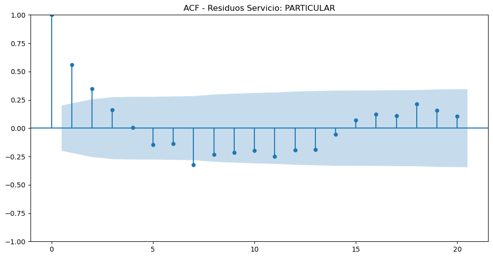
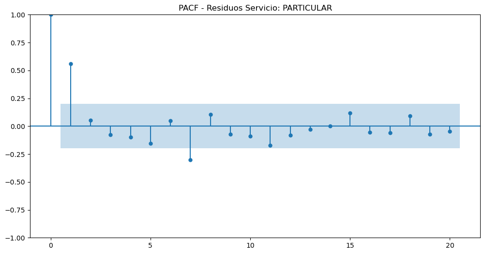
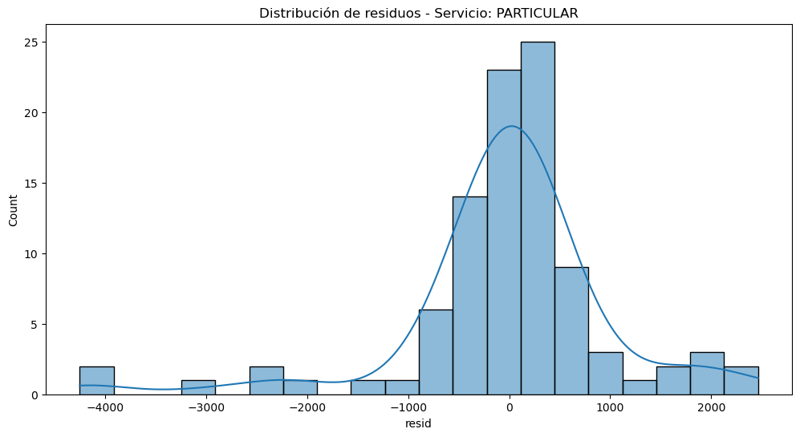
Pendiente: -1.83 comparendos por mes
R²: 0.062310
P-valor tendencia: 1.417963e-02
¿Tendencia significativa? Sí
Durbin-Watson: 0.000723
Hay autocorrelación significativa en la tendencia
Amplitud estacional: 598 comparendos
Variabilidad explicada por estacionalidad: 12.47%
Prueba ADF sobre la serie original
Estadístico ADF: -4.265510
P-valor: 5.094319e-04
Valores críticos:
1%: -3.5011
5%: -2.8925
10%: -2.5833
La serie original es estacionaria
Prueba ADF sobre los residuos
Estadístico ADF: -5.979441
P-valor: 1.853582e-07
Valores críticos:
1%: -3.5011
5%: -2.8925
10%: -2.5833
Los residuos son estacionarios
Tanto la serie original como los residuos son estacionarios
Prueba Ljung-Box
lb_stat lb_pvalue
6 22.910948 0.000827
12 35.554321 0.000382
18 39.161761 0.002710
¿Los residuos son ruido blanco? No
Prueba t (media cero) p-valor: 0.018839
¿Residuos centrados en cero? No
Shapiro-Wilk p-valor: 1.832493e-09
¿Residuos normales? No
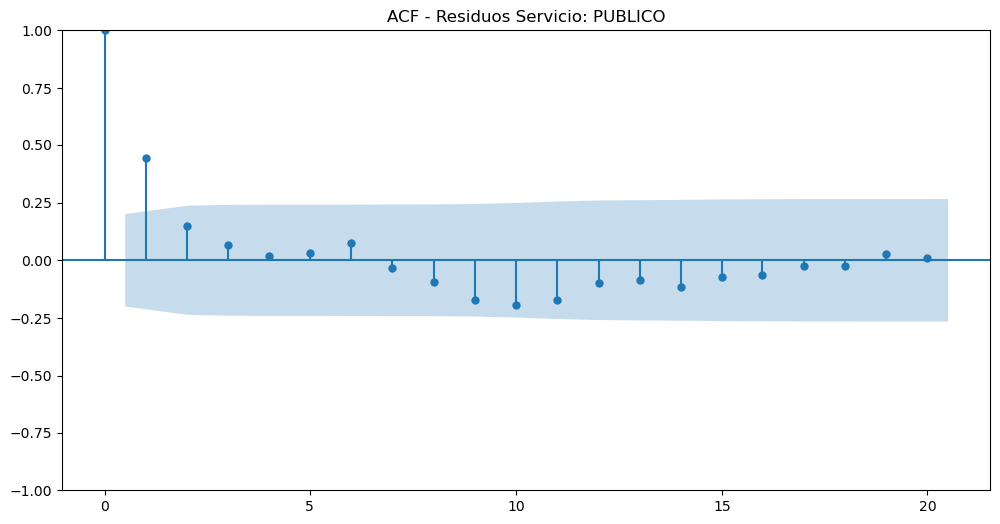
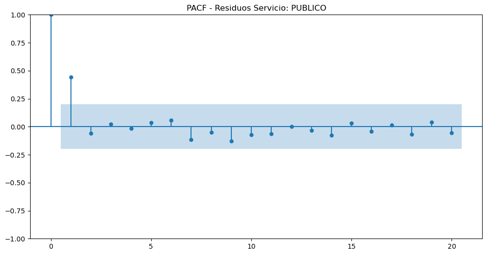
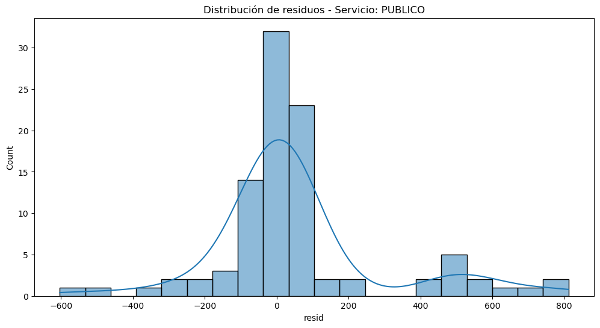
Pendiente: -0.00 comparendos por mes
R²: 0.000079
P-valor tendencia: 9.315686e-01
¿Tendencia significativa? No
Durbin-Watson: 0.000812
Hay autocorrelación significativa en la tendencia
Amplitud estacional: 13 comparendos
Variabilidad explicada por estacionalidad: 20.20%
Prueba ADF sobre la serie original
Estadístico ADF: -1.831108
P-valor: 3.651305e-01
Valores críticos:
1%: -3.5043
5%: -2.8939
10%: -2.5840
La serie original no es estacionaria (tiene tendencia y/o estacionalidad)
Prueba ADF sobre los residuos
Estadístico ADF: -10.049265
P-valor: 1.426854e-17
Valores críticos:
1%: -3.5011
5%: -2.8925
10%: -2.5833
Los residuos son estacionarios
La serie original no es estacionaria, pero los residuos sí lo son → la descomposición STL capturó correctamente tendencia y estacionalidad
Prueba Ljung-Box
lb_stat lb_pvalue
6 5.998132 0.423399
12 10.844847 0.542260
18 15.537579 0.624785
¿Los residuos son ruido blanco? Sí
Prueba t (media cero) p-valor: 0.047856
¿Residuos centrados en cero? No
Shapiro-Wilk p-valor: 4.893586e-11
¿Residuos normales? No
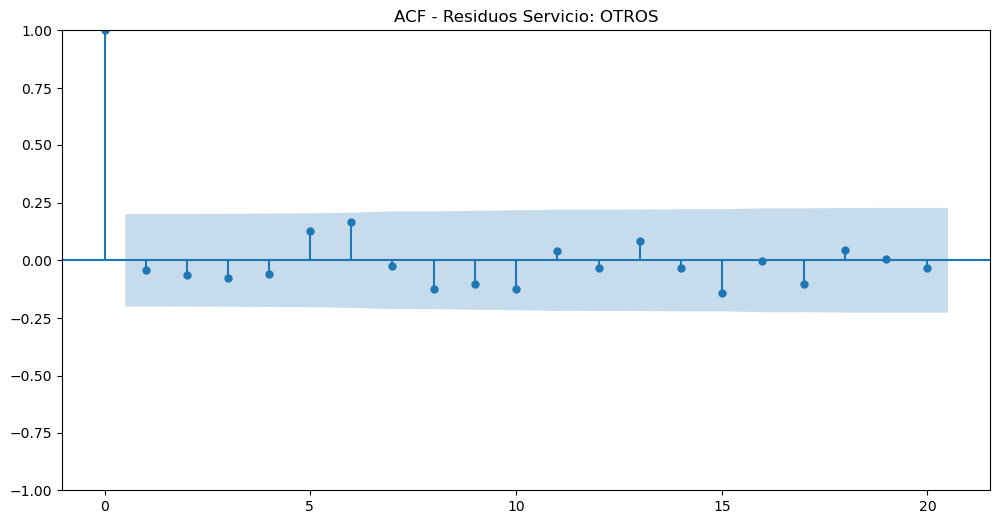
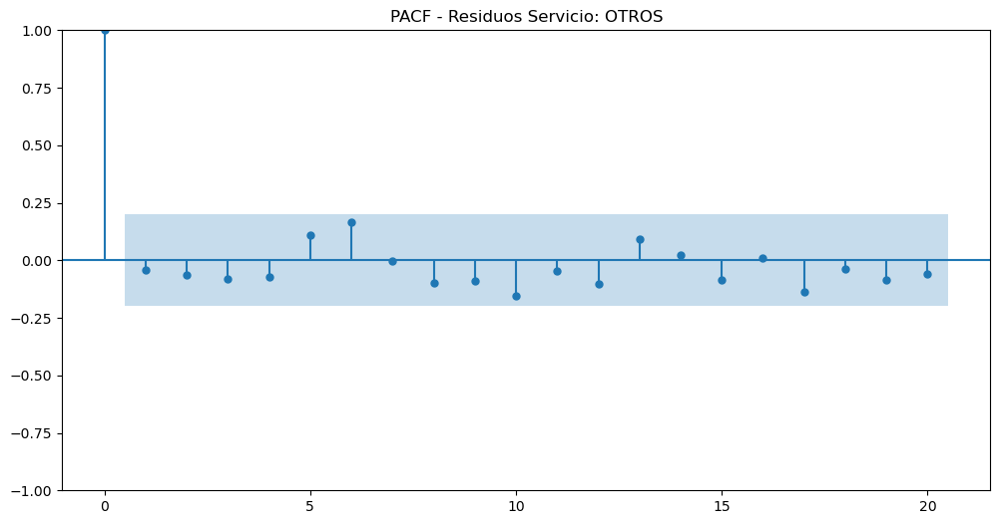
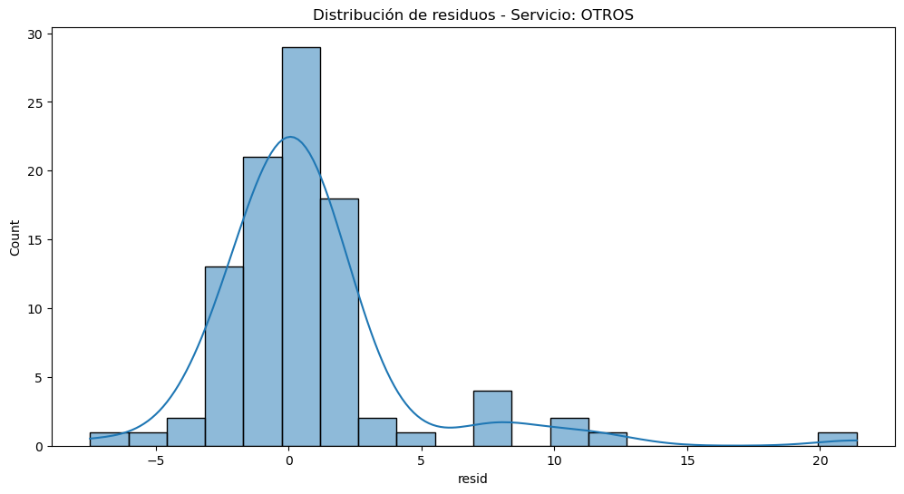
Servicio PARTICULAR (525,986 infracciones - 85.62% del total)
Análisis de tendencia: La pendiente negativa de -7.68 comparendos por mes indica una disminución promedio mensual estadísticamente significativa (p-valor = 0.0270). El R² de 5.1% muestra que la tendencia lineal explica una pequeña parte de la variabilidad total, aunque la relación es significativa. La prueba de Durbin-Watson con un valor de 0.0004 indica una fuerte autocorrelación positiva en los residuos de la tendencia, lo que sugiere que la tendencia lineal no captura adecuadamente toda la estructura temporal y que existen patrones sistemáticos no lineales en la evolución de largo plazo. Se confirma una disminución sostenida en el volumen de comparendos de vehículos particulares a lo largo del tiempo.
Análisis de estacionalidad: La estacionalidad explica el 12.34% de la variabilidad total, lo que indica que los vehículos particulares presentan un patrón cíclico anual moderado. La amplitud de 2,823 comparendos representa una oscilación considerable a lo largo del año, la más alta entre los tres servicios.
Análisis de estacionariedad: La serie original es estacionaria (p-valor ADF = 0.0137), al igual que los residuos (p-valor < 0.0001), lo que indica que la serie ya tiene media y varianza constantes.
Análisis de residuos: Los residuos no son ruido blanco (p-valores Ljung-Box extremadamente bajos), están centrados en cero (p-valor t-test = 0.8144) y no son normales (Shapiro-Wilk p-valor < 0.0001).
Servicio PÚBLICO (87,553 infracciones - 14.25% del total)
Análisis de tendencia: La pendiente negativa de -1.83 comparendos por mes indica una disminución promedio mensual estadísticamente significativa (p-valor = 0.0142). El R² de 6.2% muestra que la tendencia explica una pequeña parte de la variabilidad. Se confirma una disminución sostenida en el volumen de comparendos de vehículos públicos a lo largo del tiempo, aunque de menor magnitud que en los particulares (-7.68 vs -1.83).
Análisis de estacionalidad: La estacionalidad explica el 12.47% de la variabilidad total, un porcentaje similar al de los particulares (12.34%). La amplitud de 598 comparendos es considerablemente menor en términos absolutos, reflejando el menor volumen total de este servicio.
Análisis de estacionariedad: Tanto la serie original como los residuos son estacionarios (p-valores ADF < 0.001).
Análisis de residuos: Los residuos no son ruido blanco (p-valores Ljung-Box bajos), no están centrados en cero (p-valor t-test = 0.0188), y no son normales. El sesgo en la media indica que el modelo subestima o sobreestima sistemáticamente los valores para los vehículos públicos.
Servicio OTROS (821 infracciones - 0.13% del total)
Análisis de tendencia: La pendiente prácticamente nula de -0.00 comparendos por mes no es estadísticamente significativa (p-valor = 0.9316). El R² de 0.008% es prácticamente nulo. No se confirma una tendencia sostenida para los vehículos oficiales y diplomáticos.
Análisis de estacionalidad: La estacionalidad explica el 20.20% de la variabilidad total, el porcentaje más alto entre los tres servicios. La amplitud de solo 13 comparendos refleja el bajo volumen de esta categoría, pero su peso relativo es el más importante, indicando que los vehículos OTROS tienen el patrón estacional más definido proporcionalmente.
Análisis de estacionariedad: La serie original no es estacionaria (p-valor ADF = 0.3651), pero los residuos sí lo son (p-valor < 0.0001), indicando que la descomposición STL capturó correctamente tendencia y estacionalidad.
Análisis de residuos: Los residuos son ruido blanco (p-valores Ljung-Box > 0.05 para todos los rezagos), pero no están centrados en cero (p-valor t-test = 0.0479), y no son normales. Este es el único servicio donde los residuos cumplen con la condición de ruido blanco, lo que indica que el modelo de descomposición capturó adecuadamente toda la estructura temporal de la serie, aunque presenta un ligero sesgo sistemático.
Hallazgos:
Los servicios particulares y públicos muestran disminuciones significativas a lo largo del tiempo, aunque la magnitud es mucho mayor en particulares (-7.68 comparendos por mes) que en públicos (-1.83). OTROS no presenta tendencia significativa.
OTROS tiene la estacionalidad más fuerte proporcionalmente con un 20.20% de variabilidad explicada, los vehículos oficiales y diplomáticos presentan el patrón estacional más definido, a pesar de su bajo volumen absoluto.
PÚBLICO presenta sesgo en los residuos, es el único servicio donde los residuos no están centrados en cero (p-valor = 0.0188), lo que indica que el modelo tiene un error sistemático para este grupo, posiblemente por la presencia de valores atípicos o cambios estructurales no capturados.
OTROS es el único con residuos ruido blanco, a pesar de su bajo volumen, la descomposición STL capturó adecuadamente toda la estructura temporal de los vehículos oficiales y diplomáticos, lo que sugiere que su comportamiento es más predecible que el de particulares y públicos.
A diferencia de PARTICULAR y PÚBLICO, que ya son estacionarias, los vehículos OTROS requirieron la descomposición para eliminar la no estacionariedad, lo que indica la presencia de tendencia o estacionalidad que debía ser removida.
Gráfico de Autocorrelación (ACF) - PARTICULAR: El ACF mide la relación entre el residuo actual y sus valores pasados.
Hay picos significativos que sobresalen de la banda azul (intervalo de confianza) en los rezagos 1, 2 y 7.
Los residuos no son ruido blanco. Existe una correlación serial significativa. Especialmente el pico en el lag 7.
Gráfico de Autocorrelación Parcial (PACF) - PARTICULAR: El PACF ayuda a identificar el orden de un modelo autorregresivo (AR).
Se observa un pico muy marcado en el rezago 1 y otro que roza el límite en el rezago 7.
La presencia de picos significativos en el PACF confirma que los errores siguen teniendo una estructura predecible. Esto refuerza la idea de que se podría mejorar el modelo añadiendo términos AR o ajustando la estacionalidad.
Gráfico de la distribución de residuos - PARTICULAR Este gráfico evalúa si los errores se distribuyen de forma normal y están centrados en cero.
La distribución parece estar centrada cerca de cero, lo cual es bueno (indica que el modelo no tiene un sesgo masivo hacia arriba o hacia abajo).
Aunque la masa central parece acampanada, hay colas pesadas (outliers), especialmente hacia el lado negativo (valores cercanos a -4000).
La distribución no es perfectamente normal. Esos valores extremos a la izquierda sugieren que existen días o eventos específicos donde el modelo falló por mucho (subestimó o sobrestimó drásticamente la realidad).
Gráfico de Autocorrelación (ACF) - PUBLICO:
Hay un pico significativo inicial en el Lag 1 que sobresale claramente de la banda de confianza. El resto de los rezagos (del 2 al 20) se mantienen mayoritariamente dentro de los límites sombreados, con picos muy leves en los lags 9 y 10.
Existe una autocorrelación de primer orden. Esto significa que el error de hoy está influenciado por el error de ayer. Sin embargo, a diferencia del caso anterior, aquí no se observa un patrón estacional un rezago en el lag 7.
Gráfico de Autocorrelación Parcial (PACF) - PUBLICO:
Un único pico prominente en el Lag 1.
Este es el comportamiento clásico de un proceso Autorregresivo de orden 1 o AR(1). Al “cortarse” abruptamente después del primer rezago, nos indica que añadir un término autorregresivo simple al modelo podría corregir casi toda la estructura de dependencia que queda en los residuos.
Gráfico de la distribución de residuos - PUBLICO
Los residuos están muy bien centrados en cero, lo que indica que las predicciones no están sesgadas.
La distribución es mucho más estrecha que la anterior (la mayoría de los errores están entre -200 y 200). Sin embargo, vemos un comportamiento bimodal o con valores atípicos hacia la derecha (cerca de 500 y 800).
Aunque el modelo es más preciso que el de “PARTICULAR” (notar que la escala de error es menor), tiene dificultades para predecir ciertos picos de demanda o actividad en el servicio público que generan errores positivos grandes (subestimación de la realidad).
Gráfico de Autocorrelación (ACF) - OTROS:
Prácticamente todos los picos (lags), a excepción del lag 0 que siempre es 1, se encuentran dentro de la banda azul de confianza. Solo el lag 6 se asoma muy tímidamente al borde.
Esto indica que los residuos son independientes. No hay una relación sistemática entre el error de hoy y el de días pasados. Es una excelente señal: el modelo ha extraído casi toda la información predecible de la serie.
Gráfico de Autocorrelación Parcial (PACF) - OTROS:
Al igual que el ACF, todos los valores están dentro de los límites de significancia.
No hay necesidad de añadir términos autorregresivos (AR) adicionales. El modelo actual está manejando bien la estructura interna de los datos.
Gráfico de la distribución de residuos - OTROS: Está perfectamente centrado en cero. Los errores aquí son diminutos comparados con los otros servicios. El rango va de aproximadamente -7 a 22.
Particular: llegaba a -4000.
Publico: llegaba a 800.
Otros: máximo 22.
La curva es muy esbelta y sigue bien la forma de campana (Normal), aunque tiene una pequeña “cola” hacia la derecha (valores positivos como 10 y 20).
Este modelo es extremadamente preciso en comparación con los demás. Los errores son residuales y muy pequeños.
Distribución Mensual y Anual de Comparendos Electrónicos por Servicio del Vehículo#
Se construyen tablas pivote que cruzan los meses y los años para cada categoría de servicio del vehículo (PARTICULAR, PÚBLICO y OTROS), utilizando la suma ponderada de CANTIDAD_INFRACCIONES para visualizar el volumen de infracciones en cada combinación temporal. Los resultados se presentan mediante mapas de calor independientes para cada servicio, con los meses ordenados de diciembre a enero para facilitar la identificación de patrones estacionales específicos de cada categoría. Esta visualización permite comparar el comportamiento temporal de los diferentes servicios vehiculares, identificar períodos de alta o baja actividad particulares de cada grupo, detectar estacionalidades diferenciadas según el tipo de servicio, y evaluar cómo eventos externos como la pandemia o los cierres viales afectaron de manera distinta a conductores particulares, de servicio público y oficiales en la comisión de infracciones detectadas por el sistema de cámaras.
servicios_heatmap = ['PARTICULAR', 'PUBLICO', 'OTROS']
for servicio in servicios_heatmap:
df_servicio = df_comparendos_electronicos_copy[df_comparendos_electronicos_copy['SERVICIO_AGRUPADO'] == servicio]
df_servicio['año'] = df_servicio['fecha_comparendo'].dt.year
df_servicio['mes_numero'] = df_servicio['fecha_comparendo'].dt.month
tabla_heatmap = df_servicio.pivot_table(
values='CANTIDAD_INFRACCIONES',
index='mes_numero',
columns='año',
aggfunc='sum',
fill_value=0
)
tabla_heatmap.index = nombres_meses
tabla_heatmap = tabla_heatmap.iloc[::-1]
fig = go.Figure(data=go.Heatmap(
z=tabla_heatmap.values,
x=tabla_heatmap.columns,
y=tabla_heatmap.index,
colorscale='blues',
text=tabla_heatmap.values,
texttemplate='%{text:,.0f}',
hovertemplate=f'Servicio: {servicio}<br>Mes: %{{y}}<br>Año: %{{x}}<br>Comparendos: %{{z:,.0f}}<extra></extra>'
))
fig.update_layout(
title=dict(
text=f'Distribución de Comparendos Electrónicos por Año y Mes - Servicio: {servicio}',
x=0.5,
xanchor='center',
font=dict(size=16, weight='bold')
),
xaxis_title=dict(
text='Año',
font=dict(weight='bold')
),
yaxis_title=dict(
text='Mes',
font=dict(weight='bold')
),
template='plotly_white',
width=1055,
height=500
)
fig.show()
Distribución Mensual de Comparendos Electrónicos por Servicio del Vehículo Infractor#
Se examina la variabilidad mensual de los comparendos electrónicos desagregada por cada categoría de servicio del vehículo (PARTICULAR, PÚBLICO y OTROS), agrupando los registros por mes y año y sumando la columna CANTIDAD_INFRACCIONES para obtener el volumen real de infracciones por cada combinación. Para cada servicio, se presentan estadísticos descriptivos (media, desviación estándar, mínimo, máximo y cuartiles) para cada mes, con el fin de caracterizar su comportamiento típico y su dispersión interanual de manera específica por tipo de servicio vehicular. Complementariamente, se generan diagramas de caja (boxplot) que visualizan la distribución de las infracciones para cada mes, incluyendo la media como referencia. Para validar si las diferencias observadas entre meses son estadísticamente significativas para cada servicio, se aplica un análisis de varianza que incluye la prueba de normalidad de Shapiro-Wilk para evaluar la distribución de los datos por mes, la prueba de Levene para verificar la homogeneidad de varianzas, y dependiendo del cumplimiento de los supuestos, se realiza un ANOVA paramétrico (con prueba post-hoc de Tukey HSD) o un Kruskal-Wallis no paramétrico (con prueba post-hoc de Dunn y corrección de Bonferroni). Este análisis permite identificar, de manera diferenciada por servicio, qué meses presentan mayor variabilidad en la detección de infracciones para cada categoría de vehículo, detectar meses con comportamientos atípicos específicos de cada servicio, comparar la estabilidad estacional entre conductores particulares, de servicio público y oficiales/diplomáticos, y determinar si existe estacionalidad estadísticamente significativa en el volumen de comparendos para cada tipo de servicio vehicular.
for servicio in servicios_heatmap:
df_servicio = df_comparendos_electronicos_copy[df_comparendos_electronicos_copy['SERVICIO_AGRUPADO'] == servicio]
df_boxplot_servicio = df_servicio.groupby(['mes_nombre', 'año'])['CANTIDAD_INFRACCIONES'].sum().reset_index()
df_boxplot_servicio.columns = ['mes', 'año', 'infracciones']
df_boxplot_servicio['mes_nombre'] = df_boxplot_servicio['mes'].apply(lambda x: nombres_meses[x-1])
print(f"Estadísticas Descriptivas - Servicio: {servicio}")
estadisticas = df_boxplot_servicio.groupby('mes_nombre')['infracciones'].describe().round(0).fillna(0).astype(int).reindex(nombres_meses)
display(estadisticas.T)
display(HTML("<hr style='border: 1px solid #696969; margin: 20px 0;'>"))
fig = go.Figure()
fig.add_trace(go.Box(
x=df_boxplot_servicio['mes_nombre'],
y=df_boxplot_servicio['infracciones'],
marker_color='mediumpurple',
name='',
boxmean=True,
hovertemplate='Mes: %{x}<br>Infracciones: %{y:,.0f}<extra></extra>'
))
fig.update_layout(
title=dict(
text=f'Distribución de Comparendos Electrónicos por Mes - Servicio: {servicio}',
x=0.5,
xanchor='center',
font=dict(size=16, weight='bold')
),
xaxis_title=dict(
text='Mes',
font=dict(weight='bold')
),
yaxis_title=dict(
text='Cantidad de Comparendos',
font=dict(weight='bold')
),
template='plotly_white',
width=1055,
height=500
)
fig.show()
df_anova = df_boxplot_servicio.copy()
meses_grupos = [
df_anova[df_anova['mes_nombre'] == mes]['infracciones'].values
for mes in nombres_meses
]
print("Prueba de normalidad (Shapiro-Wilk) por mes:")
normalidad = []
for mes, grupo in zip(nombres_meses, meses_grupos):
if len(grupo) >= 3:
stat, p = stats.shapiro(grupo)
normalidad.append(p > 0.05)
print(f"{mes}: p-valor = {p:.6f} -> {'Normal' if p > 0.05 else 'No normal'}")
else:
print(f"{mes}: No hay suficientes datos para evaluar normalidad")
normalidad.append(False)
cumple_normalidad = all(normalidad) if normalidad else False
print(f"¿Se cumple normalidad en todos los meses? {'Sí' if cumple_normalidad else 'No'}")
grupos_validos = [g for g in meses_grupos if len(g) > 0]
if len(grupos_validos) > 1:
stat_levene, p_levene = stats.levene(*grupos_validos)
print(f"\nLevene p-valor: {p_levene:.6f}")
print(f"¿Varianzas iguales? {'Sí' if p_levene > 0.05 else 'No'}")
if cumple_normalidad and p_levene > 0.05:
print("\nSe cumplen los supuestos → Se aplica ANOVA")
f_stat, p_valor = stats.f_oneway(*meses_grupos)
print(f"Estadístico F: {f_stat:.4f}")
print(f"P-valor: {p_valor:.6f}")
print(f"¿Hay diferencias entre meses? {'Sí' if p_valor < 0.05 else 'No'}")
if p_valor < 0.05:
print("\nPrueba post-hoc Tukey HSD:")
tukey = pairwise_tukeyhsd(
endog=df_anova['infracciones'],
groups=df_anova['mes_nombre'],
alpha=0.05
)
print(tukey)
else:
print("\nNo se cumplen los supuestos → Se aplica Kruskal-Wallis")
h_stat, p_valor = stats.kruskal(*grupos_validos)
print(f"Estadístico H: {h_stat:.4f}")
print(f"P-valor: {p_valor:.6f}")
print(f"¿Hay diferencias entre meses? {'Sí' if p_valor < 0.05 else 'No'}")
if p_valor < 0.05:
print("\nPrueba post-hoc Dunn (con corrección Bonferroni):")
import scikit_posthocs as sp
df_dunn = df_anova[['mes_nombre', 'infracciones']].copy()
dunn = sp.posthoc_dunn(
df_dunn,
val_col='infracciones',
group_col='mes_nombre',
p_adjust='bonferroni'
)
dunn = dunn.loc[nombres_meses, nombres_meses]
display(dunn)
display(HTML("<hr style='border: 2px solid #696969; margin: 20px 0;'>"))
Estadísticas Descriptivas - Servicio: PARTICULAR
| mes_nombre | Enero | Febrero | Marzo | Abril | Mayo | Junio | Julio | Agosto | Septiembre | Octubre | Noviembre | Diciembre |
|---|---|---|---|---|---|---|---|---|---|---|---|---|
| count | 8 | 8 | 8 | 8 | 8 | 8 | 8 | 8 | 8 | 8 | 8 | 8 |
| mean | 5151 | 5327 | 5909 | 5696 | 5514 | 5453 | 5606 | 5137 | 5371 | 5834 | 5285 | 5464 |
| std | 1676 | 1135 | 1211 | 1500 | 2400 | 2168 | 1899 | 1647 | 1280 | 1016 | 1090 | 1223 |
| min | 1722 | 3329 | 4489 | 3690 | 1139 | 2483 | 2355 | 2958 | 3690 | 3644 | 3495 | 3701 |
| 25% | 4587 | 4605 | 4922 | 4676 | 4052 | 3532 | 4248 | 3662 | 4226 | 5716 | 4673 | 4534 |
| 50% | 5340 | 5759 | 5923 | 5702 | 6267 | 6169 | 5963 | 5276 | 5555 | 6076 | 5310 | 5719 |
| 75% | 6424 | 6045 | 6564 | 6387 | 6819 | 6945 | 6896 | 6143 | 6090 | 6236 | 6157 | 6132 |
| max | 7015 | 6691 | 7860 | 7964 | 8466 | 8277 | 8011 | 7316 | 7410 | 7158 | 6544 | 7287 |
Prueba de normalidad (Shapiro-Wilk) por mes:
Enero: p-valor = 0.319509 -> Normal
Febrero: p-valor = 0.453260 -> Normal
Marzo: p-valor = 0.629646 -> Normal
Abril: p-valor = 0.761740 -> Normal
Mayo: p-valor = 0.621276 -> Normal
Junio: p-valor = 0.316269 -> Normal
Julio: p-valor = 0.786343 -> Normal
Agosto: p-valor = 0.440546 -> Normal
Septiembre: p-valor = 0.760100 -> Normal
Octubre: p-valor = 0.109225 -> Normal
Noviembre: p-valor = 0.596297 -> Normal
Diciembre: p-valor = 0.866121 -> Normal
¿Se cumple normalidad en todos los meses? Sí
Levene p-valor: 0.377027
¿Varianzas iguales? Sí
Se cumplen los supuestos → Se aplica ANOVA
Estadístico F: 0.1962
P-valor: 0.997442
¿Hay diferencias entre meses? No
Estadísticas Descriptivas - Servicio: PUBLICO
| mes_nombre | Enero | Febrero | Marzo | Abril | Mayo | Junio | Julio | Agosto | Septiembre | Octubre | Noviembre | Diciembre |
|---|---|---|---|---|---|---|---|---|---|---|---|---|
| count | 8 | 8 | 8 | 8 | 8 | 8 | 8 | 8 | 8 | 8 | 8 | 8 |
| mean | 765 | 810 | 962 | 998 | 917 | 922 | 927 | 826 | 912 | 987 | 965 | 955 |
| std | 239 | 264 | 339 | 305 | 428 | 420 | 365 | 282 | 242 | 227 | 334 | 480 |
| min | 383 | 410 | 571 | 657 | 247 | 362 | 448 | 447 | 545 | 520 | 557 | 550 |
| 25% | 605 | 638 | 756 | 720 | 579 | 522 | 600 | 683 | 757 | 896 | 726 | 602 |
| 50% | 770 | 876 | 906 | 970 | 1063 | 980 | 940 | 771 | 882 | 1040 | 899 | 806 |
| 75% | 934 | 962 | 1080 | 1227 | 1218 | 1250 | 1257 | 1012 | 1112 | 1105 | 1107 | 1111 |
| max | 1099 | 1210 | 1637 | 1400 | 1368 | 1493 | 1368 | 1267 | 1263 | 1289 | 1506 | 1960 |
Prueba de normalidad (Shapiro-Wilk) por mes:
Enero: p-valor = 0.923401 -> Normal
Febrero: p-valor = 0.740546 -> Normal
Marzo: p-valor = 0.514293 -> Normal
Abril: p-valor = 0.185176 -> Normal
Mayo: p-valor = 0.286509 -> Normal
Junio: p-valor = 0.509459 -> Normal
Julio: p-valor = 0.298030 -> Normal
Agosto: p-valor = 0.784263 -> Normal
Septiembre: p-valor = 0.849303 -> Normal
Octubre: p-valor = 0.332906 -> Normal
Noviembre: p-valor = 0.367947 -> Normal
Diciembre: p-valor = 0.074967 -> Normal
¿Se cumple normalidad en todos los meses? Sí
Levene p-valor: 0.525194
¿Varianzas iguales? Sí
Se cumplen los supuestos → Se aplica ANOVA
Estadístico F: 0.3834
P-valor: 0.959197
¿Hay diferencias entre meses? No
Estadísticas Descriptivas - Servicio: OTROS
| mes_nombre | Enero | Febrero | Marzo | Abril | Mayo | Junio | Julio | Agosto | Septiembre | Octubre | Noviembre | Diciembre |
|---|---|---|---|---|---|---|---|---|---|---|---|---|
| count | 7 | 8 | 8 | 8 | 7 | 8 | 8 | 7 | 8 | 8 | 8 | 8 |
| mean | 8 | 11 | 9 | 9 | 9 | 7 | 9 | 8 | 9 | 8 | 6 | 11 |
| std | 6 | 9 | 4 | 4 | 4 | 3 | 4 | 5 | 4 | 4 | 3 | 5 |
| min | 1 | 1 | 3 | 4 | 2 | 2 | 3 | 2 | 6 | 2 | 2 | 5 |
| 25% | 6 | 5 | 6 | 6 | 8 | 6 | 6 | 4 | 6 | 6 | 4 | 8 |
| 50% | 7 | 10 | 8 | 9 | 9 | 8 | 10 | 7 | 8 | 8 | 6 | 8 |
| 75% | 10 | 13 | 12 | 11 | 12 | 8 | 12 | 12 | 11 | 10 | 8 | 14 |
| max | 20 | 27 | 16 | 16 | 13 | 11 | 15 | 17 | 17 | 15 | 11 | 20 |
Prueba de normalidad (Shapiro-Wilk) por mes:
Enero: p-valor = 0.372054 -> Normal
Febrero: p-valor = 0.440490 -> Normal
Marzo: p-valor = 0.743492 -> Normal
Abril: p-valor = 0.468263 -> Normal
Mayo: p-valor = 0.164010 -> Normal
Junio: p-valor = 0.636703 -> Normal
Julio: p-valor = 0.892889 -> Normal
Agosto: p-valor = 0.579942 -> Normal
Septiembre: p-valor = 0.050434 -> Normal
Octubre: p-valor = 0.938431 -> Normal
Noviembre: p-valor = 0.355300 -> Normal
Diciembre: p-valor = 0.291992 -> Normal
¿Se cumple normalidad en todos los meses? Sí
Levene p-valor: 0.506496
¿Varianzas iguales? Sí
Se cumplen los supuestos → Se aplica ANOVA
Estadístico F: 0.6046
P-valor: 0.819741
¿Hay diferencias entre meses? No
Servicio PARTICULAR (525,987 infracciones)
Los vehículos particulares presentan sus mayores volúmenes en marzo y octubre, mientras que agosto y enero son los meses de menor actividad. La variabilidad es especialmente alta en mayo, junio y julio, influenciada por eventos atípicos como cierres viales y la pandemia.
Servicio PÚBLICO (87,554 infracciones)
Los vehículos públicos tienen sus pico más altos en abril, a diferencia de los particulares cuyo pico es en marzo. Además, la variabilidad es notablemente alta en diciembre y mayo.
Servicio OTROS (oficial y diplomático) (821 infracciones)
El servicio OTROS presenta menos años de registro (count=7) en algunos meses (enero, mayo, agosto), lo que indica que no hay registros de infracciones de vehículos oficiales y diplomáticos en ciertos años para esos meses.
El volumen de infracciones para vehículos oficiales y diplomáticos es muy bajo, lo que dificulta identificar patrones estacionales claros. Febrero y diciembre son los meses con mayor actividad relativa, mientras que noviembre y junio presentan los valores más bajos.
Hallazgos:
Estacionalidades diferenciadas por servicio: Los vehículos particulares tienen sus picos en marzo y octubre, mientras que los vehículos públicos alcanzan sus máximos en abril, octubre y noviembre, con un pico adicional en diciembre. Esta diferencia sugiere que los patrones de movilidad y comisión de infracciones varían según el tipo de servicio.
Mayo como mes crítico para particulares: Con la mayor variabilidad (std: 2,400) y la presencia tanto del máximo como del mínimo histórico, mayo es el mes más impredecible para los conductores particulares, influenciado por los cierres viales de 2019 y la pandemia de 2020.
Diciembre como mes crítico para públicos: Los vehículos públicos presentan su mayor variabilidad en diciembre (std: 480) y su máximo histórico (1,960 infracciones), posiblemente relacionado con el aumento de la demanda de transporte público durante la temporada de fin de año.
Bajo volumen y alta estabilidad relativa de OTROS: Aunque el volumen es marginal, los vehículos oficiales y diplomáticos muestran una variabilidad baja en comparación con su promedio, lo que indica un comportamiento más uniforme a lo largo del año.
Notas:
Las campañas de control y educación vial para particulares deben intensificarse en marzo y octubre, con especial atención en mayo por su alta imprevisibilidad.
Para vehículos públicos, se debe reforzar el control en abril, octubre y especialmente en diciembre, mes de alta demanda y alta variabilidad.
La baja incidencia de vehículos OTROS sugiere que no requieren estrategias específicas de control, aunque febrero y diciembre son los meses de mayor actividad relativa.
Servicio PARTICULAR: Todos los meses cumplen con normalidad (p-valores > 0.05, el más bajo fue octubre con 0.1092) y las varianzas son homogéneas (p=0.3770). El ANOVA arroja un estadístico F de 0.1962 con un p-valor de 0.9974, extremadamente alto y cercano a 1. No existen diferencias estadísticamente significativas entre las medias de los meses para los vehículos particulares. Las fluctuaciones observadas en los promedios mensuales (marzo con mayor promedio, agosto con menor) no son consistentes a lo largo de los años.
Servicio PÚBLICO: Todos los meses cumplen con normalidad (p-valores > 0.05, el más bajo fue diciembre con 0.0750, aún por encima del umbral) y las varianzas son homogéneas (p=0.5252). El ANOVA arroja un estadístico F de 0.3834 con un p-valor de 0.9592. No existen diferencias estadísticamente significativas entre las medias de los meses para los vehículos públicos.
Servicio OTROS: Todos los meses cumplen con normalidad (p-valores > 0.05, el más bajo fue septiembre con 0.0504, apenas por encima del umbral) y las varianzas son homogéneas (p=0.5065). El ANOVA arroja un estadístico F de 0.6046 con un p-valor de 0.8197. No existen diferencias estadísticamente significativas entre las medias de los meses para los vehículos oficiales y diplomáticos.
Hallazgos:
Ninguna de las tres categorías de servicio (PARTICULAR, PÚBLICO y OTROS) presenta diferencias estadísticamente significativas en el volumen de comparendos a lo largo de los meses del año. Esto indica que, independientemente del tipo de servicio, los patrones mensuales se mantienen constantes sin que ningún mes destaque consistentemente por encima de los demás.
Estos resultados complementan el análisis de descomposición STL, donde se observó que PARTICULAR tenía una amplitud estacional de 2,823 comparendos y PÚBLICO de 598 comparendos, con variabilidades explicadas del 12.34% y 12.47% respectivamente. Sin embargo, al someter las diferencias mensuales a una prueba estadística (ANOVA), se confirma que las oscilaciones observadas entre meses no son lo suficientemente grandes ni consistentes a lo largo de los años como para ser consideradas estadísticamente significativas.
OTROS presenta el p-valor más bajo pero aún no significativo con un p-valor de 0.8197, es el más cercano a 0.05 entre los tres servicios, lo que podría indicar una leve tendencia hacia diferencias mensuales, pero aún muy por encima del umbral de significancia.
Evolución Mensual de Comparendos Electrónicos por Clase del Vehículo Infractor#
Se examina la evolución mensual de los comparendos electrónicos desagregada por cada categoría de clase del vehículo (AUTOMÓVIL, CAMIONETA, MOTOCICLETA, CAMPERO, VEHÍCULOS PESADOS y OTROS), agrupando los registros por mes y sumando la columna CANTIDAD_INFRACCIONES para obtener el volumen real de infracciones por cada período. Para cada clase, se presentan tablas de frecuencias que muestran los meses con mayor y menor volumen, junto con sus porcentajes de participación dentro del total de esa clase. Complementariamente, se generan gráficos de líneas interactivos que ilustran la tendencia temporal de cada categoría, incluyendo estadísticos como el promedio mensual, la desviación estándar, y los meses con valores máximo y mínimo, con un área sombreada que destaca el período crítico de la pandemia de COVID-19. Este análisis permite identificar patrones estacionales diferenciados por tipo de vehículo, evaluar el impacto diferencial de eventos externos como cierres viales o la pandemia en cada clase de vehículo, y comparar la variabilidad temporal entre los distintos tipos de vehículos infractores detectados por el sistema de cámaras.
infracciones_por_mes_clase = df_comparendos_electronicos_copy.groupby(['año_mes', 'CLASE_AGRUPADA'])['CANTIDAD_INFRACCIONES'].sum().reset_index()
clases = df_comparendos_electronicos_copy['CLASE_AGRUPADA'].unique()
for clase in clases:
df_clase_mensual = infracciones_por_mes_clase[infracciones_por_mes_clase['CLASE_AGRUPADA'] == clase].copy()
df_clase_mensual = df_clase_mensual[['año_mes', 'CANTIDAD_INFRACCIONES']].sort_values('año_mes').reset_index(drop=True)
df_clase_mensual.columns = ['Mes', 'Comparendos']
total_clase = df_clase_mensual['Comparendos'].sum()
df_clase_mensual['Porcentaje'] = (df_clase_mensual['Comparendos'] / total_clase * 100).round(2)
df_clase_mensual = df_clase_mensual.sort_values('Comparendos', ascending=False).reset_index(drop=True)
print(f"Comparendos Mensuales - Clase: {clase}")
pd.set_option('display.max_columns', None)
pd.set_option('display.width', None)
pd.set_option('display.max_colwidth', None)
display(df_clase_mensual.T)
pd.reset_option('display.max_columns')
pd.reset_option('display.width')
pd.reset_option('display.max_colwidth')
display(HTML("<hr style='border: 2px solid #696969; margin: 20px 0;'>"))
for clase in clases:
df_clase = infracciones_por_mes_clase[infracciones_por_mes_clase['CLASE_AGRUPADA'] == clase]
total_clase = df_clase['CANTIDAD_INFRACCIONES'].sum()
desviacion_clase = df_clase['CANTIDAD_INFRACCIONES'].std()
promedio_clase = df_clase['CANTIDAD_INFRACCIONES'].mean()
meses_clase = sorted(df_clase['año_mes'].unique())
if len(meses_clase) > 12:
tick_positions = meses_clase[::6]
elif len(meses_clase) > 6:
tick_positions = meses_clase[::3]
else:
tick_positions = meses_clase
max_valor = df_clase['CANTIDAD_INFRACCIONES'].max()
max_fila = df_clase[df_clase['CANTIDAD_INFRACCIONES'] == max_valor].iloc[0]
max_mes = max_fila['año_mes']
min_valor = df_clase['CANTIDAD_INFRACCIONES'].min()
min_fila = df_clase[df_clase['CANTIDAD_INFRACCIONES'] == min_valor].iloc[0]
min_mes = min_fila['año_mes']
fig = go.Figure()
# Línea principal
fig.add_trace(go.Scatter(
x=df_clase['año_mes'],
y=df_clase['CANTIDAD_INFRACCIONES'],
mode='lines+markers',
name=clase,
line=dict(color='cornflowerblue', width=2),
marker=dict(size=4, color='cornflowerblue'),
hovertemplate=f'Clase: {clase}<br>Mes: %{{x}}<br>Infracciones: %{{y:,.0f}}<extra></extra>',
showlegend=False
))
fig.add_trace(go.Scatter(
x=[None],
y=[None],
mode='none',
name=f'Total: {int(total_clase):,}',
showlegend=True
))
fig.add_trace(go.Scatter(
x=[None],
y=[None],
mode='none',
name=f'Std: {int(desviacion_clase):,}',
showlegend=True
))
x_min = df_clase['año_mes'].iloc[0]
x_max = df_clase['año_mes'].iloc[-1]
fig.add_trace(go.Scatter(
x=[x_min, x_max],
y=[promedio_clase, promedio_clase],
mode='lines',
name=f'Promedio: {int(promedio_clase):,}',
line=dict(color='red', width=1.4, dash='dot'),
showlegend=True,
hoverinfo='none'
))
fig.add_trace(go.Scatter(
x=[max_mes],
y=[max_valor],
mode='markers',
name=f'Máximo: {max_mes} ({int(max_valor):,})',
marker=dict(size=8, color='red', symbol='circle'),
hoverinfo='none'
))
fig.add_trace(go.Scatter(
x=[min_mes],
y=[min_valor],
mode='markers',
name=f'Mínimo: {min_mes} ({int(min_valor):,})',
marker=dict(size=8, color='green', symbol='circle'),
hoverinfo='none'
))
fig.add_vrect(
x0="2020-03", x1="2020-12",
fillcolor="red", opacity=0.1,
line_width=0,
annotation_text="COVID-19",
annotation_position="top left",
annotation=dict(font_size=12, font_color="red")
)
fig.update_layout(
title=dict(
text=f'Evolución Mensual de Comparendos - Clase: {clase}',
x=0.5,
xanchor='center',
font=dict(size=16, weight='bold')
),
xaxis_title=dict(
text='Año-Mes',
font=dict(weight='bold')
),
yaxis_title=dict(
text='Cantidad de Comparendos',
font=dict(weight='bold')
),
template='plotly_white',
hovermode='x unified',
legend=dict(
x=1,
y=1,
xanchor='center',
yanchor='top',
bgcolor='rgba(255,255,255,0.5)',
font=dict(size=12)
),
width=1055,
height=500
)
fig.update_xaxes(
tickangle=-45,
tickvals=tick_positions,
ticktext=tick_positions
)
fig.show()
Comparendos Mensuales - Clase: AUTOMOVIL
| 0 | 1 | 2 | 3 | 4 | 5 | 6 | 7 | 8 | 9 | 10 | 11 | 12 | 13 | 14 | 15 | 16 | 17 | 18 | 19 | 20 | 21 | 22 | 23 | 24 | 25 | 26 | 27 | 28 | 29 | 30 | 31 | 32 | 33 | 34 | 35 | 36 | 37 | 38 | 39 | 40 | 41 | 42 | 43 | 44 | 45 | 46 | 47 | 48 | 49 | 50 | 51 | 52 | 53 | 54 | 55 | 56 | 57 | 58 | 59 | 60 | 61 | 62 | 63 | 64 | 65 | 66 | 67 | 68 | 69 | 70 | 71 | 72 | 73 | 74 | 75 | 76 | 77 | 78 | 79 | 80 | 81 | 82 | 83 | 84 | 85 | 86 | 87 | 88 | 89 | 90 | 91 | 92 | 93 | 94 | 95 | |
|---|---|---|---|---|---|---|---|---|---|---|---|---|---|---|---|---|---|---|---|---|---|---|---|---|---|---|---|---|---|---|---|---|---|---|---|---|---|---|---|---|---|---|---|---|---|---|---|---|---|---|---|---|---|---|---|---|---|---|---|---|---|---|---|---|---|---|---|---|---|---|---|---|---|---|---|---|---|---|---|---|---|---|---|---|---|---|---|---|---|---|---|---|---|---|---|---|
| Mes | 2019-05 | 2019-06 | 2023-07 | 2019-03 | 2019-04 | 2023-09 | 2019-07 | 2022-12 | 2023-08 | 2023-10 | 2022-06 | 2023-06 | 2023-12 | 2024-05 | 2024-04 | 2018-01 | 2023-05 | 2019-08 | 2018-11 | 2023-03 | 2022-11 | 2022-07 | 2022-05 | 2023-11 | 2024-03 | 2018-03 | 2018-10 | 2024-06 | 2024-07 | 2024-09 | 2020-01 | 2023-04 | 2018-12 | 2019-02 | 2022-10 | 2020-02 | 2018-05 | 2024-10 | 2024-01 | 2020-10 | 2024-02 | 2018-04 | 2022-09 | 2019-12 | 2019-10 | 2021-02 | 2019-09 | 2022-04 | 2025-10 | 2018-02 | 2022-08 | 2018-06 | 2019-11 | 2018-07 | 2021-03 | 2018-09 | 2018-08 | 2024-08 | 2019-01 | 2020-12 | 2025-11 | 2020-11 | 2023-02 | 2021-01 | 2024-11 | 2025-04 | 2024-12 | 2025-01 | 2020-03 | 2025-03 | 2022-03 | 2025-09 | 2021-07 | 2025-02 | 2025-07 | 2022-01 | 2025-05 | 2020-09 | 2021-12 | 2025-12 | 2021-04 | 2021-08 | 2021-10 | 2021-09 | 2025-06 | 2021-11 | 2022-02 | 2021-05 | 2020-08 | 2021-06 | 2025-08 | 2020-04 | 2023-01 | 2020-06 | 2020-07 | 2020-05 |
| Comparendos | 5212 | 5175 | 5050 | 4915 | 4905 | 4892 | 4832 | 4770 | 4751 | 4701 | 4633 | 4602 | 4575 | 4567 | 4500 | 4342 | 4322 | 4317 | 4306 | 4245 | 4173 | 4172 | 4123 | 4118 | 4106 | 4067 | 4062 | 4035 | 3978 | 3961 | 3959 | 3937 | 3843 | 3817 | 3791 | 3746 | 3744 | 3741 | 3732 | 3723 | 3686 | 3661 | 3622 | 3601 | 3571 | 3569 | 3562 | 3530 | 3487 | 3437 | 3417 | 3412 | 3313 | 3297 | 3250 | 3232 | 3231 | 3208 | 3183 | 3158 | 3140 | 3029 | 2953 | 2916 | 2910 | 2849 | 2835 | 2831 | 2812 | 2760 | 2744 | 2689 | 2637 | 2555 | 2543 | 2506 | 2496 | 2400 | 2390 | 2265 | 2245 | 2227 | 2187 | 2179 | 2164 | 2097 | 1974 | 1863 | 1727 | 1695 | 1649 | 1503 | 999 | 953 | 934 | 430 |
| Porcentaje | 1.62 | 1.61 | 1.57 | 1.53 | 1.52 | 1.52 | 1.5 | 1.48 | 1.48 | 1.46 | 1.44 | 1.43 | 1.42 | 1.42 | 1.4 | 1.35 | 1.34 | 1.34 | 1.34 | 1.32 | 1.3 | 1.3 | 1.28 | 1.28 | 1.28 | 1.26 | 1.26 | 1.25 | 1.24 | 1.23 | 1.23 | 1.22 | 1.19 | 1.19 | 1.18 | 1.16 | 1.16 | 1.16 | 1.16 | 1.16 | 1.14 | 1.14 | 1.13 | 1.12 | 1.11 | 1.11 | 1.11 | 1.1 | 1.08 | 1.07 | 1.06 | 1.06 | 1.03 | 1.02 | 1.01 | 1.0 | 1.0 | 1.0 | 0.99 | 0.98 | 0.98 | 0.94 | 0.92 | 0.91 | 0.9 | 0.88 | 0.88 | 0.88 | 0.87 | 0.86 | 0.85 | 0.84 | 0.82 | 0.79 | 0.79 | 0.78 | 0.78 | 0.75 | 0.74 | 0.7 | 0.7 | 0.69 | 0.68 | 0.68 | 0.67 | 0.65 | 0.61 | 0.58 | 0.54 | 0.53 | 0.51 | 0.47 | 0.31 | 0.3 | 0.29 | 0.13 |
Comparendos Mensuales - Clase: CAMIONETA
| 0 | 1 | 2 | 3 | 4 | 5 | 6 | 7 | 8 | 9 | 10 | 11 | 12 | 13 | 14 | 15 | 16 | 17 | 18 | 19 | 20 | 21 | 22 | 23 | 24 | 25 | 26 | 27 | 28 | 29 | 30 | 31 | 32 | 33 | 34 | 35 | 36 | 37 | 38 | 39 | 40 | 41 | 42 | 43 | 44 | 45 | 46 | 47 | 48 | 49 | 50 | 51 | 52 | 53 | 54 | 55 | 56 | 57 | 58 | 59 | 60 | 61 | 62 | 63 | 64 | 65 | 66 | 67 | 68 | 69 | 70 | 71 | 72 | 73 | 74 | 75 | 76 | 77 | 78 | 79 | 80 | 81 | 82 | 83 | 84 | 85 | 86 | 87 | 88 | 89 | 90 | 91 | 92 | 93 | 94 | 95 | |
|---|---|---|---|---|---|---|---|---|---|---|---|---|---|---|---|---|---|---|---|---|---|---|---|---|---|---|---|---|---|---|---|---|---|---|---|---|---|---|---|---|---|---|---|---|---|---|---|---|---|---|---|---|---|---|---|---|---|---|---|---|---|---|---|---|---|---|---|---|---|---|---|---|---|---|---|---|---|---|---|---|---|---|---|---|---|---|---|---|---|---|---|---|---|---|---|---|
| Mes | 2019-05 | 2023-09 | 2023-12 | 2024-04 | 2023-07 | 2024-05 | 2019-06 | 2023-10 | 2019-04 | 2023-08 | 2024-03 | 2019-07 | 2024-09 | 2024-07 | 2024-06 | 2022-12 | 2024-10 | 2023-11 | 2023-06 | 2019-03 | 2025-10 | 2019-08 | 2022-06 | 2024-08 | 2023-05 | 2023-03 | 2022-11 | 2024-01 | 2019-02 | 2024-02 | 2018-01 | 2018-11 | 2020-01 | 2022-07 | 2022-05 | 2019-10 | 2022-10 | 2018-03 | 2023-04 | 2025-04 | 2021-02 | 2022-09 | 2019-09 | 2020-10 | 2019-12 | 2025-01 | 2024-11 | 2025-11 | 2018-10 | 2024-12 | 2020-02 | 2018-12 | 2021-03 | 2018-05 | 2019-11 | 2022-08 | 2018-04 | 2025-05 | 2019-01 | 2025-03 | 2020-12 | 2025-02 | 2025-09 | 2018-06 | 2018-07 | 2025-07 | 2018-02 | 2020-11 | 2022-04 | 2018-09 | 2021-01 | 2021-07 | 2023-02 | 2018-08 | 2025-06 | 2025-12 | 2022-03 | 2021-10 | 2022-01 | 2021-08 | 2021-12 | 2020-03 | 2021-09 | 2021-11 | 2025-08 | 2020-09 | 2021-04 | 2021-05 | 2022-02 | 2020-08 | 2021-06 | 2020-04 | 2023-01 | 2020-06 | 2020-07 | 2020-05 |
| Comparendos | 2091 | 2076 | 2043 | 2009 | 1992 | 1984 | 1973 | 1942 | 1902 | 1883 | 1818 | 1812 | 1802 | 1784 | 1783 | 1777 | 1762 | 1755 | 1747 | 1733 | 1719 | 1696 | 1677 | 1655 | 1654 | 1620 | 1596 | 1574 | 1546 | 1544 | 1523 | 1498 | 1494 | 1492 | 1479 | 1465 | 1463 | 1455 | 1451 | 1446 | 1426 | 1423 | 1416 | 1410 | 1408 | 1381 | 1381 | 1380 | 1375 | 1350 | 1344 | 1342 | 1338 | 1319 | 1318 | 1308 | 1293 | 1291 | 1282 | 1278 | 1277 | 1271 | 1254 | 1239 | 1208 | 1194 | 1186 | 1171 | 1170 | 1148 | 1133 | 1129 | 1126 | 1119 | 1095 | 1089 | 1049 | 995 | 995 | 991 | 984 | 982 | 921 | 878 | 862 | 853 | 832 | 784 | 738 | 721 | 689 | 597 | 455 | 399 | 358 | 157 |
| Porcentaje | 1.61 | 1.6 | 1.57 | 1.55 | 1.53 | 1.53 | 1.52 | 1.5 | 1.47 | 1.45 | 1.4 | 1.4 | 1.39 | 1.37 | 1.37 | 1.37 | 1.36 | 1.35 | 1.35 | 1.33 | 1.32 | 1.31 | 1.29 | 1.27 | 1.27 | 1.25 | 1.23 | 1.21 | 1.19 | 1.19 | 1.17 | 1.15 | 1.15 | 1.15 | 1.14 | 1.13 | 1.13 | 1.12 | 1.12 | 1.11 | 1.1 | 1.1 | 1.09 | 1.09 | 1.08 | 1.06 | 1.06 | 1.06 | 1.06 | 1.04 | 1.04 | 1.03 | 1.03 | 1.02 | 1.02 | 1.01 | 1.0 | 0.99 | 0.99 | 0.98 | 0.98 | 0.98 | 0.97 | 0.95 | 0.93 | 0.92 | 0.91 | 0.9 | 0.9 | 0.88 | 0.87 | 0.87 | 0.87 | 0.86 | 0.84 | 0.84 | 0.81 | 0.77 | 0.77 | 0.76 | 0.76 | 0.76 | 0.71 | 0.68 | 0.66 | 0.66 | 0.64 | 0.6 | 0.57 | 0.56 | 0.53 | 0.46 | 0.35 | 0.31 | 0.28 | 0.12 |
Comparendos Mensuales - Clase: CAMPERO
| 0 | 1 | 2 | 3 | 4 | 5 | 6 | 7 | 8 | 9 | 10 | 11 | 12 | 13 | 14 | 15 | 16 | 17 | 18 | 19 | 20 | 21 | 22 | 23 | 24 | 25 | 26 | 27 | 28 | 29 | 30 | 31 | 32 | 33 | 34 | 35 | 36 | 37 | 38 | 39 | 40 | 41 | 42 | 43 | 44 | 45 | 46 | 47 | 48 | 49 | 50 | 51 | 52 | 53 | 54 | 55 | 56 | 57 | 58 | 59 | 60 | 61 | 62 | 63 | 64 | 65 | 66 | 67 | 68 | 69 | 70 | 71 | 72 | 73 | 74 | 75 | 76 | 77 | 78 | 79 | 80 | 81 | 82 | 83 | 84 | 85 | 86 | 87 | 88 | 89 | 90 | 91 | 92 | 93 | 94 | 95 | |
|---|---|---|---|---|---|---|---|---|---|---|---|---|---|---|---|---|---|---|---|---|---|---|---|---|---|---|---|---|---|---|---|---|---|---|---|---|---|---|---|---|---|---|---|---|---|---|---|---|---|---|---|---|---|---|---|---|---|---|---|---|---|---|---|---|---|---|---|---|---|---|---|---|---|---|---|---|---|---|---|---|---|---|---|---|---|---|---|---|---|---|---|---|---|---|---|---|
| Mes | 2019-06 | 2019-07 | 2019-05 | 2019-04 | 2019-03 | 2018-11 | 2019-08 | 2019-02 | 2018-01 | 2018-12 | 2020-01 | 2023-08 | 2018-05 | 2018-04 | 2018-06 | 2018-07 | 2019-01 | 2018-03 | 2019-10 | 2019-12 | 2024-05 | 2023-09 | 2018-10 | 2020-02 | 2023-12 | 2019-11 | 2018-02 | 2019-09 | 2020-10 | 2023-07 | 2021-02 | 2023-10 | 2021-03 | 2024-04 | 2020-12 | 2018-08 | 2023-06 | 2022-06 | 2024-09 | 2018-09 | 2024-03 | 2023-11 | 2024-10 | 2024-06 | 2022-05 | 2022-07 | 2024-01 | 2022-11 | 2023-05 | 2021-01 | 2020-11 | 2023-03 | 2023-04 | 2024-07 | 2022-10 | 2020-03 | 2025-10 | 2022-08 | 2024-08 | 2024-02 | 2022-12 | 2022-01 | 2025-04 | 2022-09 | 2021-08 | 2021-07 | 2022-03 | 2020-09 | 2024-12 | 2023-02 | 2022-04 | 2024-11 | 2025-01 | 2025-05 | 2021-12 | 2021-10 | 2021-09 | 2025-11 | 2025-09 | 2021-05 | 2025-02 | 2025-03 | 2025-07 | 2021-04 | 2022-02 | 2021-11 | 2025-06 | 2025-12 | 2020-08 | 2021-06 | 2020-04 | 2025-08 | 2020-07 | 2020-06 | 2023-01 | 2020-05 |
| Comparendos | 788 | 721 | 713 | 694 | 664 | 624 | 620 | 603 | 595 | 590 | 578 | 574 | 568 | 560 | 552 | 547 | 543 | 538 | 533 | 527 | 519 | 514 | 511 | 510 | 502 | 495 | 493 | 490 | 481 | 480 | 476 | 475 | 472 | 469 | 467 | 464 | 458 | 456 | 454 | 451 | 451 | 450 | 445 | 442 | 431 | 430 | 425 | 423 | 421 | 410 | 409 | 406 | 401 | 400 | 398 | 384 | 376 | 376 | 372 | 369 | 369 | 362 | 362 | 359 | 357 | 355 | 353 | 349 | 329 | 328 | 323 | 321 | 318 | 314 | 310 | 303 | 303 | 299 | 298 | 294 | 291 | 283 | 282 | 274 | 265 | 255 | 240 | 237 | 235 | 217 | 177 | 163 | 147 | 129 | 118 | 48 |
| Porcentaje | 1.97 | 1.8 | 1.78 | 1.74 | 1.66 | 1.56 | 1.55 | 1.51 | 1.49 | 1.48 | 1.45 | 1.44 | 1.42 | 1.4 | 1.38 | 1.37 | 1.36 | 1.35 | 1.33 | 1.32 | 1.3 | 1.29 | 1.28 | 1.28 | 1.26 | 1.24 | 1.23 | 1.23 | 1.2 | 1.2 | 1.19 | 1.19 | 1.18 | 1.17 | 1.17 | 1.16 | 1.15 | 1.14 | 1.14 | 1.13 | 1.13 | 1.13 | 1.11 | 1.11 | 1.08 | 1.08 | 1.06 | 1.06 | 1.05 | 1.03 | 1.02 | 1.02 | 1.0 | 1.0 | 1.0 | 0.96 | 0.94 | 0.94 | 0.93 | 0.92 | 0.92 | 0.91 | 0.91 | 0.9 | 0.89 | 0.89 | 0.88 | 0.87 | 0.82 | 0.82 | 0.81 | 0.8 | 0.8 | 0.79 | 0.78 | 0.76 | 0.76 | 0.75 | 0.75 | 0.74 | 0.73 | 0.71 | 0.71 | 0.69 | 0.66 | 0.64 | 0.6 | 0.59 | 0.59 | 0.54 | 0.44 | 0.41 | 0.37 | 0.32 | 0.3 | 0.12 |
Comparendos Mensuales - Clase: MOTOCICLETA
| 0 | 1 | 2 | 3 | 4 | 5 | 6 | 7 | 8 | 9 | 10 | 11 | 12 | 13 | 14 | 15 | 16 | 17 | 18 | 19 | 20 | 21 | 22 | 23 | 24 | 25 | 26 | 27 | 28 | 29 | 30 | 31 | 32 | 33 | 34 | 35 | 36 | 37 | 38 | 39 | 40 | 41 | 42 | 43 | 44 | 45 | 46 | 47 | 48 | 49 | 50 | 51 | 52 | 53 | 54 | 55 | 56 | 57 | 58 | 59 | 60 | 61 | 62 | 63 | 64 | 65 | 66 | 67 | 68 | 69 | 70 | 71 | 72 | 73 | 74 | 75 | 76 | 77 | 78 | 79 | 80 | 81 | 82 | 83 | 84 | 85 | 86 | 87 | 88 | 89 | 90 | 91 | 92 | 93 | 94 | 95 | |
|---|---|---|---|---|---|---|---|---|---|---|---|---|---|---|---|---|---|---|---|---|---|---|---|---|---|---|---|---|---|---|---|---|---|---|---|---|---|---|---|---|---|---|---|---|---|---|---|---|---|---|---|---|---|---|---|---|---|---|---|---|---|---|---|---|---|---|---|---|---|---|---|---|---|---|---|---|---|---|---|---|---|---|---|---|---|---|---|---|---|---|---|---|---|---|---|---|
| Mes | 2020-04 | 2019-03 | 2019-08 | 2019-02 | 2019-07 | 2019-04 | 2024-06 | 2022-04 | 2019-05 | 2024-03 | 2020-03 | 2024-05 | 2018-01 | 2020-08 | 2020-06 | 2019-10 | 2022-05 | 2021-04 | 2024-01 | 2024-07 | 2018-10 | 2024-04 | 2019-01 | 2019-06 | 2018-05 | 2022-06 | 2022-07 | 2019-11 | 2019-09 | 2018-09 | 2020-07 | 2018-11 | 2021-01 | 2019-12 | 2020-02 | 2018-08 | 2018-04 | 2020-01 | 2024-02 | 2018-02 | 2018-07 | 2023-12 | 2018-12 | 2018-06 | 2023-04 | 2020-09 | 2020-12 | 2018-03 | 2024-08 | 2023-02 | 2022-09 | 2021-02 | 2024-10 | 2020-10 | 2023-03 | 2024-09 | 2023-05 | 2022-12 | 2022-03 | 2022-10 | 2022-11 | 2021-03 | 2021-05 | 2023-07 | 2023-09 | 2023-06 | 2023-08 | 2023-10 | 2021-12 | 2022-01 | 2023-11 | 2020-11 | 2022-08 | 2021-09 | 2020-05 | 2024-11 | 2021-11 | 2022-02 | 2025-03 | 2025-06 | 2025-04 | 2025-01 | 2024-12 | 2021-07 | 2025-10 | 2025-07 | 2025-08 | 2025-12 | 2025-09 | 2025-05 | 2021-10 | 2021-08 | 2021-06 | 2025-02 | 2023-01 | 2025-11 |
| Comparendos | 1990 | 1894 | 1644 | 1636 | 1626 | 1591 | 1578 | 1527 | 1524 | 1492 | 1488 | 1482 | 1444 | 1436 | 1393 | 1385 | 1384 | 1363 | 1354 | 1339 | 1334 | 1329 | 1326 | 1324 | 1319 | 1304 | 1293 | 1289 | 1272 | 1271 | 1270 | 1252 | 1227 | 1207 | 1200 | 1196 | 1178 | 1161 | 1156 | 1149 | 1124 | 1119 | 1118 | 1110 | 1109 | 1102 | 1097 | 1090 | 1090 | 1089 | 1082 | 1077 | 1076 | 1067 | 1059 | 1054 | 1041 | 1035 | 1019 | 1013 | 991 | 958 | 943 | 936 | 934 | 927 | 895 | 892 | 876 | 865 | 860 | 849 | 811 | 724 | 708 | 706 | 687 | 672 | 672 | 660 | 656 | 628 | 618 | 607 | 606 | 593 | 592 | 586 | 576 | 571 | 566 | 551 | 511 | 475 | 425 | 383 |
| Porcentaje | 1.94 | 1.84 | 1.6 | 1.59 | 1.58 | 1.55 | 1.54 | 1.49 | 1.48 | 1.45 | 1.45 | 1.44 | 1.41 | 1.4 | 1.36 | 1.35 | 1.35 | 1.33 | 1.32 | 1.3 | 1.3 | 1.29 | 1.29 | 1.29 | 1.28 | 1.27 | 1.26 | 1.26 | 1.24 | 1.24 | 1.24 | 1.22 | 1.19 | 1.18 | 1.17 | 1.16 | 1.15 | 1.13 | 1.13 | 1.12 | 1.09 | 1.09 | 1.09 | 1.08 | 1.08 | 1.07 | 1.07 | 1.06 | 1.06 | 1.06 | 1.05 | 1.05 | 1.05 | 1.04 | 1.03 | 1.03 | 1.01 | 1.01 | 0.99 | 0.99 | 0.96 | 0.93 | 0.92 | 0.91 | 0.91 | 0.9 | 0.87 | 0.87 | 0.85 | 0.84 | 0.84 | 0.83 | 0.79 | 0.7 | 0.69 | 0.69 | 0.67 | 0.65 | 0.65 | 0.64 | 0.64 | 0.61 | 0.6 | 0.59 | 0.59 | 0.58 | 0.58 | 0.57 | 0.56 | 0.56 | 0.55 | 0.54 | 0.5 | 0.46 | 0.41 | 0.37 |
Comparendos Mensuales - Clase: VEHÍCULOS PESADOS
| 0 | 1 | 2 | 3 | 4 | 5 | 6 | 7 | 8 | 9 | 10 | 11 | 12 | 13 | 14 | 15 | 16 | 17 | 18 | 19 | 20 | 21 | 22 | 23 | 24 | 25 | 26 | 27 | 28 | 29 | 30 | 31 | 32 | 33 | 34 | 35 | 36 | 37 | 38 | 39 | 40 | 41 | 42 | 43 | 44 | 45 | 46 | 47 | 48 | 49 | 50 | 51 | 52 | 53 | 54 | 55 | 56 | 57 | 58 | 59 | 60 | 61 | 62 | 63 | 64 | 65 | 66 | 67 | 68 | 69 | 70 | 71 | 72 | 73 | 74 | 75 | 76 | 77 | 78 | 79 | 80 | 81 | 82 | 83 | 84 | 85 | 86 | 87 | 88 | 89 | 90 | 91 | 92 | 93 | 94 | 95 | |
|---|---|---|---|---|---|---|---|---|---|---|---|---|---|---|---|---|---|---|---|---|---|---|---|---|---|---|---|---|---|---|---|---|---|---|---|---|---|---|---|---|---|---|---|---|---|---|---|---|---|---|---|---|---|---|---|---|---|---|---|---|---|---|---|---|---|---|---|---|---|---|---|---|---|---|---|---|---|---|---|---|---|---|---|---|---|---|---|---|---|---|---|---|---|---|---|---|
| Mes | 2022-12 | 2022-11 | 2022-06 | 2023-12 | 2019-07 | 2019-02 | 2024-07 | 2019-08 | 2022-05 | 2023-06 | 2024-09 | 2019-05 | 2019-03 | 2023-07 | 2024-04 | 2022-09 | 2024-10 | 2022-04 | 2025-10 | 2023-08 | 2019-04 | 2022-07 | 2018-11 | 2023-05 | 2023-10 | 2023-09 | 2023-03 | 2022-10 | 2024-05 | 2024-06 | 2019-06 | 2024-03 | 2023-11 | 2024-08 | 2023-04 | 2018-01 | 2018-05 | 2022-08 | 2023-02 | 2020-10 | 2024-11 | 2025-04 | 2024-02 | 2024-01 | 2019-09 | 2018-06 | 2025-09 | 2019-01 | 2025-05 | 2020-02 | 2018-12 | 2025-07 | 2018-10 | 2018-03 | 2018-04 | 2019-12 | 2018-09 | 2018-02 | 2020-08 | 2019-10 | 2020-03 | 2025-03 | 2018-07 | 2024-12 | 2022-03 | 2018-08 | 2020-11 | 2021-04 | 2020-01 | 2019-11 | 2025-06 | 2020-12 | 2021-03 | 2021-01 | 2025-08 | 2025-02 | 2021-11 | 2020-09 | 2021-02 | 2025-01 | 2020-04 | 2025-11 | 2022-01 | 2021-12 | 2021-10 | 2021-09 | 2025-12 | 2021-07 | 2023-01 | 2020-06 | 2020-07 | 2022-02 | 2021-05 | 2021-08 | 2021-06 | 2020-05 |
| Comparendos | 491 | 382 | 345 | 330 | 326 | 325 | 317 | 316 | 316 | 308 | 304 | 300 | 298 | 295 | 295 | 284 | 283 | 283 | 280 | 275 | 275 | 272 | 272 | 271 | 267 | 266 | 265 | 264 | 264 | 259 | 259 | 249 | 249 | 246 | 237 | 227 | 222 | 213 | 207 | 207 | 205 | 204 | 204 | 197 | 196 | 195 | 193 | 193 | 187 | 187 | 187 | 187 | 185 | 182 | 179 | 177 | 173 | 172 | 169 | 166 | 165 | 163 | 162 | 161 | 159 | 158 | 157 | 157 | 155 | 154 | 152 | 152 | 145 | 144 | 142 | 141 | 138 | 137 | 136 | 134 | 133 | 129 | 126 | 124 | 113 | 112 | 111 | 111 | 109 | 100 | 97 | 91 | 90 | 89 | 64 | 43 |
| Porcentaje | 2.49 | 1.94 | 1.75 | 1.67 | 1.65 | 1.65 | 1.61 | 1.6 | 1.6 | 1.56 | 1.54 | 1.52 | 1.51 | 1.49 | 1.49 | 1.44 | 1.43 | 1.43 | 1.42 | 1.39 | 1.39 | 1.38 | 1.38 | 1.37 | 1.35 | 1.35 | 1.34 | 1.34 | 1.34 | 1.31 | 1.31 | 1.26 | 1.26 | 1.25 | 1.2 | 1.15 | 1.12 | 1.08 | 1.05 | 1.05 | 1.04 | 1.03 | 1.03 | 1.0 | 0.99 | 0.99 | 0.98 | 0.98 | 0.95 | 0.95 | 0.95 | 0.95 | 0.94 | 0.92 | 0.91 | 0.9 | 0.88 | 0.87 | 0.86 | 0.84 | 0.84 | 0.83 | 0.82 | 0.82 | 0.81 | 0.8 | 0.8 | 0.8 | 0.79 | 0.78 | 0.77 | 0.77 | 0.73 | 0.73 | 0.72 | 0.71 | 0.7 | 0.69 | 0.69 | 0.68 | 0.67 | 0.65 | 0.64 | 0.63 | 0.57 | 0.57 | 0.56 | 0.56 | 0.55 | 0.51 | 0.49 | 0.46 | 0.46 | 0.45 | 0.32 | 0.22 |
Comparendos Mensuales - Clase: OTROS
| 0 | 1 | 2 | 3 | 4 | 5 | 6 | 7 | 8 | 9 | 10 | 11 | 12 | 13 | 14 | 15 | 16 | 17 | 18 | 19 | 20 | 21 | 22 | 23 | 24 | 25 | 26 | 27 | 28 | 29 | 30 | 31 | 32 | 33 | 34 | 35 | 36 | 37 | 38 | 39 | 40 | 41 | 42 | 43 | 44 | 45 | 46 | 47 | 48 | 49 | 50 | 51 | 52 | 53 | 54 | 55 | 56 | 57 | 58 | 59 | 60 | 61 | 62 | 63 | 64 | 65 | 66 | 67 | 68 | 69 | 70 | 71 | 72 | |
|---|---|---|---|---|---|---|---|---|---|---|---|---|---|---|---|---|---|---|---|---|---|---|---|---|---|---|---|---|---|---|---|---|---|---|---|---|---|---|---|---|---|---|---|---|---|---|---|---|---|---|---|---|---|---|---|---|---|---|---|---|---|---|---|---|---|---|---|---|---|---|---|---|---|
| Mes | 2024-05 | 2019-04 | 2021-01 | 2022-11 | 2024-02 | 2019-07 | 2021-02 | 2022-03 | 2024-06 | 2023-05 | 2025-01 | 2025-02 | 2024-03 | 2025-04 | 2021-03 | 2023-11 | 2019-05 | 2018-01 | 2022-04 | 2024-04 | 2023-04 | 2025-05 | 2025-10 | 2019-08 | 2019-09 | 2020-12 | 2019-10 | 2022-08 | 2022-05 | 2023-09 | 2021-10 | 2022-10 | 2018-12 | 2025-07 | 2025-06 | 2024-10 | 2024-07 | 2022-01 | 2022-02 | 2020-06 | 2019-11 | 2021-08 | 2020-09 | 2020-02 | 2019-12 | 2020-10 | 2021-09 | 2023-03 | 2022-06 | 2023-12 | 2019-02 | 2018-10 | 2019-01 | 2018-03 | 2018-05 | 2018-02 | 2018-06 | 2021-04 | 2021-11 | 2019-03 | 2020-08 | 2019-06 | 2023-06 | 2023-07 | 2023-08 | 2023-10 | 2024-01 | 2024-08 | 2024-12 | 2025-03 | 2025-08 | 2025-09 | 2025-12 |
| Comparendos | 11 | 8 | 6 | 5 | 5 | 4 | 4 | 4 | 4 | 4 | 4 | 4 | 4 | 4 | 3 | 3 | 3 | 3 | 3 | 3 | 3 | 3 | 3 | 3 | 3 | 3 | 3 | 3 | 3 | 2 | 2 | 2 | 2 | 2 | 2 | 2 | 2 | 2 | 2 | 2 | 2 | 2 | 2 | 2 | 2 | 2 | 2 | 2 | 2 | 2 | 1 | 1 | 1 | 1 | 1 | 1 | 1 | 1 | 1 | 1 | 1 | 1 | 1 | 1 | 1 | 1 | 1 | 1 | 1 | 1 | 1 | 1 | 1 |
| Porcentaje | 6.08 | 4.42 | 3.31 | 2.76 | 2.76 | 2.21 | 2.21 | 2.21 | 2.21 | 2.21 | 2.21 | 2.21 | 2.21 | 2.21 | 1.66 | 1.66 | 1.66 | 1.66 | 1.66 | 1.66 | 1.66 | 1.66 | 1.66 | 1.66 | 1.66 | 1.66 | 1.66 | 1.66 | 1.66 | 1.1 | 1.1 | 1.1 | 1.1 | 1.1 | 1.1 | 1.1 | 1.1 | 1.1 | 1.1 | 1.1 | 1.1 | 1.1 | 1.1 | 1.1 | 1.1 | 1.1 | 1.1 | 1.1 | 1.1 | 1.1 | 0.55 | 0.55 | 0.55 | 0.55 | 0.55 | 0.55 | 0.55 | 0.55 | 0.55 | 0.55 | 0.55 | 0.55 | 0.55 | 0.55 | 0.55 | 0.55 | 0.55 | 0.55 | 0.55 | 0.55 | 0.55 | 0.55 | 0.55 |
Posible explicación para los puntos máximos en las clases (Automovil, camioneta y campero) - Períodos 2019-05 y 2019-06: Los puntos máximos registrados en las infracciones cometidas por automóviles, camionetas y camperos durante ciertos meses pueden explicarse por los múltiples cierres viales que se presentaron en Barranquilla durante esos períodos. Los cierres viales generan alteraciones significativas en los patrones normales de circulación, desviando el tránsito hacia vías alternas y creando condiciones de congestión que incrementan la probabilidad de comisión de infracciones. Estos tres tipos de vehículos (automóviles, camionetas y camperos), al ser los más numerosos en el parque automotor y los que más circulan por las vías urbanas, son los más afectados por estas interrupciones viales. Ante los desvíos inesperados, las demoras y la falta de señalización temporal, los conductores de estas clases tienden a cometer con mayor frecuencia infracciones como exceso de velocidad (al intentar recuperar tiempo perdido en rutas alternas), estacionamiento en sitios prohibidos (al buscar alternativas de parqueo cerca de sus destinos), paso de semáforos en rojo (por impaciencia ante la congestión) y bloqueo de calzadas (al quedar detenidos en intersecciones). Dado que automóviles, camionetas y camperos representan en conjunto el 90.25% del total de infracciones, su comportamiento es el principal determinante de los picos generales en la serie temporal, reflejando directamente las condiciones anormales de movilidad generadas por los cierres viales en la ciudad.
Fuentes:
https://barranquilla.gov.co/transito/por-trabajos-cierres-de-vias-a-partir-del-viernes-3-de-mayo
https://barranquilla.gov.co/transito/cierres-de-vias-para-el-sabado-1-y-domingo-2-de-junio-de-20
https://barranquilla.gov.co/transito/cierres-de-vias-a-partir-del-viernes-21-de-junio-de-2019
Punto máximo de la clase motocicletas en abril de 2020: El punto máximo registrado en las infracciones cometidas por motocicletas durante abril de 2020 representa un comportamiento atípico dentro del análisis, ya que contrasta significativamente con lo observado en las demás clases de vehículos. Mientras que automóviles, camionetas, camperos y vehículos pesados presentaron sus valores más bajos durante el período de confinamiento estricto por la pandemia de COVID-19, las motocicletas mostraron un pico inusualmente alto en abril de ese mismo año.
Posible explicación para el punto máximo en la clase vehículos pesados - período 2022-12: El punto máximo registrado en las infracciones cometidas por vehículos pesados coincide temporalmente con el punto máximo del servicio público, lo cual no es casualidad dada la estrecha relación entre ambas categorías. Los vehículos pesados (camión, bus, microbús, buseta, volqueta y tractocamión) son predominantemente de servicio público, como se evidenció en el análisis de relación entre clase y servicio. Por lo tanto, el pico en vehículos pesados es un reflejo directo del comportamiento del servicio público. Este punto máximo puede explicarse por la combinación de varios factores. En primer lugar, algunos cierres viales ocurridos durante ese mes pudieron derivar a los conductores de vehículos pesados a manejar en zonas donde operan las cámaras de detección, incrementando su exposición a la vigilancia. En segundo lugar, la Secretaría de Tránsito y Seguridad Vial del Área Metropolitana de Barranquilla sancionó a 40 conductores y propietarios de vehículos que prestaban un servicio no autorizado, lo que pudo generar una limitación en la circulación de conductores de aplicaciones como InDrive o Uber, reduciendo la competencia y permitiendo que los vehículos de servicio público autorizado (incluyendo los pesados) tuvieran una mayor demanda y, por tanto, una mayor exposición en las calles. Por último, este comportamiento se combinó con la época de diciembre, que es un período de alta productividad y movimiento para los vehículos de servicio público debido al aumento de la demanda por compras, reuniones familiares y eventos de fin de año.
Fuentes:
Posible explicación para el punto máximo en la clase otros: El punto máximo registrado en las infracciones cometidas por la clase OTROS (que incluye motocarro, cuatrimoto, no reportado y sin clase) durante cierto mes puede explicarse por la combinación de múltiples factores. En primer lugar, los múltiples cierres viales ocurridos durante ese período generaron alteraciones en los patrones normales de circulación, desviando el tránsito hacia vías alternas y creando condiciones de congestión que incrementaron la exposición de estos vehículos a las cámaras de detección. En segundo lugar, la implementación de laboratorios viales durante ese mes, los cuales implican simulaciones, pruebas de infraestructura y cambios temporales en la señalización y el flujo vehicular, pudo haber generado confusión entre los conductores de estas clases de vehículos, aumentando la probabilidad de cometer infracciones. Por último, la temporada de fuertes lluvias que coincidió con este período agravó aún más la situación, ya que las precipitaciones intensas reducen la visibilidad, generan encharcamientos, deterioran la señalización vial y afectan la fluidez del tránsito, condiciones que favorecen la comisión de infracciones por parte de conductores que buscan sortear los obstáculos y las demoras.
Fuentes:
https://barranquilla.gov.co/salud/alcaldia-medidas-prevencion-enfermedades-aumentan-lluvias
https://barranquilla.gov.co/transito/cierres-de-vias-a-partir-del-sabado-18-de-mayo
Explicación de los puntos mínimos en las clases (Automovil, camioneta, campero y vehículos pesados) - período 2020-05: Los puntos mínimos registrados en las infracciones cometidas por automóviles, camionetas, camperos y vehículos pesados durante ciertos períodos se explican principalmente por las estrictas medidas de restricción de movilidad implementadas durante la pandemia de COVID-19. Estas medidas afectaron de manera directa a estas cuatro clases de vehículos, que en conjunto representan la gran mayoría del parque automotor que circula habitualmente por Barranquilla. Es importante destacar que, a diferencia de las motocicletas que presentaron un comportamiento atípico con un pico durante la pandemia, los automóviles, camionetas, camperos y vehículos pesados redujeron su movilidad de manera considerable durante el confinamiento, reflejándose en los valores mínimos observados en sus series temporales durante los meses más críticos de 2020.
Fuente: https://barranquilla.gov.co/coronavirus/60-dias-de-crisis-covid19-barranquilla
Descomposición Temporal por Clase del Vehículo Infractor#
Se aplica un modelo de descomposición STL (Seasonal-Trend decomposition using LOESS) robusto a las series temporales mensuales de comparendos electrónicos para cada categoría de clase del vehículo (AUTOMÓVIL, CAMIONETA, MOTOCICLETA, CAMPERO, VEHÍCULOS PESADOS y OTROS), con el objetivo de separar y analizar sus tres componentes principales: tendencia (evolución a largo plazo), estacionalidad (patrones cíclicos anuales) y residuos (componente aleatorio o irregular). Para cada clase, se presentan gráficos interactivos para cada componente, junto con estadísticos clave como la pendiente de la tendencia mediante regresión lineal, el coeficiente de determinación (R²), la prueba de Durbin-Watson para autocorrelación en la tendencia, la amplitud estacional, el porcentaje de variabilidad explicada por la estacionalidad, y pruebas ADF (Dickey-Fuller aumentada) tanto sobre la serie original como sobre los residuos para verificar la estacionariedad y el correcto ajuste del modelo. Adicionalmente, se incluyen pruebas de ruido blanco (Ljung-Box con múltiples rezagos), media cero (t-test), normalidad (Shapiro-Wilk) sobre los residuos, junto con gráficos de autocorrelación (ACF), autocorrelación parcial (PACF) e histograma con densidad para evaluar la distribución de los residuos. Este análisis permite comprender la dinámica subyacente de cada tipo de vehículo, identificar qué clases presentan tendencias crecientes o decrecientes significativas, cuantificar la fuerza de sus patrones estacionales, evaluar la presencia de autocorrelación en la tendencia, determinar si la descomposición logra eliminar la no estacionariedad de cada serie, y validar si el modelo captura adecuadamente la estructura de los datos para posibles aplicaciones predictivas diferenciadas por tipo de vehículo.
clases_descomposicion = df_comparendos_electronicos_copy['CLASE_AGRUPADA'].unique()
for clase in clases_descomposicion:
serie_clase = infracciones_por_mes_clase[infracciones_por_mes_clase['CLASE_AGRUPADA'] == clase].copy()
serie_clase = serie_clase.set_index('año_mes')['CANTIDAD_INFRACCIONES']
serie_clase.index = pd.to_datetime(serie_clase.index)
serie_clase = serie_clase.asfreq('MS')
serie_clase = serie_clase.fillna(0)
descomposicion_clase = STL(serie_clase, period=12, robust=True).fit()
tendencia_clase = descomposicion_clase.trend.dropna()
x = np.arange(len(tendencia_clase))
pendiente_clase, intercepto_clase, r_value_clase, p_valor_tendencia_clase, std_err_clase = stats.linregress(x, tendencia_clase.values)
r_cuadrado_clase = r_value_clase ** 2
regresion_vals_clase = pendiente_clase * x + intercepto_clase
fig_tendencia_clase = go.Figure()
fig_tendencia_clase.add_trace(go.Scatter(x=tendencia_clase.index, y=tendencia_clase.values, mode='lines+markers', name='Tendencia', line=dict(color='cornflowerblue', width=2), marker=dict(size=4), hovertemplate='Fecha: %{x}<br>Tendencia: %{y:,.0f}<extra></extra>', showlegend=False))
fig_tendencia_clase.add_trace(go.Scatter(x=[None], y=[None], mode='none', name=f'Total: {int(serie_clase.sum()):,}', showlegend=True))
fig_tendencia_clase.add_trace(go.Scatter(x=[None], y=[None], mode='none', name=f'Std: {int(tendencia_clase.std()):,}', showlegend=True))
fig_tendencia_clase.add_trace(go.Scatter(x=[tendencia_clase.index[0], tendencia_clase.index[-1]], y=[tendencia_clase.mean(), tendencia_clase.mean()], mode='lines', name=f'Promedio: {int(tendencia_clase.mean()):,}', line=dict(color='red', width=1.4, dash='dot'), showlegend=True, hoverinfo='none'))
fig_tendencia_clase.add_trace(go.Scatter(x=tendencia_clase.index, y=regresion_vals_clase, mode='lines', name=f'Regresión lineal (R² = {r_cuadrado_clase:.3f})', line=dict(color='orange', width=2, dash='solid'), showlegend=True))
fig_tendencia_clase.add_trace(go.Scatter(x=[tendencia_clase.idxmax()], y=[tendencia_clase.max()], mode='markers', name=f'Máximo: {tendencia_clase.idxmax().strftime("%Y-%m")} ({int(tendencia_clase.max()):,})', marker=dict(size=8, color='red', symbol='circle'), hoverinfo='none'))
fig_tendencia_clase.add_trace(go.Scatter(x=[tendencia_clase.idxmin()], y=[tendencia_clase.min()], mode='markers', name=f'Mínimo: {tendencia_clase.idxmin().strftime("%Y-%m")} ({int(tendencia_clase.min()):,})', marker=dict(size=8, color='green', symbol='circle'), hoverinfo='none'))
fig_tendencia_clase.add_vrect(x0="2020-03", x1="2020-12", fillcolor="red", opacity=0.1, line_width=0, annotation_text="COVID-19", annotation_position="top left", annotation=dict(font_size=12, font_color="red"))
fig_tendencia_clase.update_layout(title=dict(text=f'Tendencia de Comparendos - Clase: {clase}', x=0.5, font=dict(size=16, weight='bold')), xaxis_title=dict(text='Año', font=dict(weight='bold')), yaxis_title=dict(text='Tendencia (Comparendos)', font=dict(weight='bold')), template='plotly_white', hovermode='x unified', legend=dict(x=1, y=1, xanchor='center', yanchor='top', bgcolor='rgba(255,255,255,0.5)', font=dict(size=12)), width=1055, height=500)
fig_tendencia_clase.show()
print(f"Pendiente: {pendiente_clase:.2f} comparendos por mes")
print(f"R²: {r_cuadrado_clase:.6f}")
print(f"P-valor tendencia: {p_valor_tendencia_clase:.6e}")
print(f"¿Tendencia significativa? {'Sí' if p_valor_tendencia_clase < 0.05 else 'No'}")
dw_clase = durbin_watson(tendencia_clase.values)
print(f"\nDurbin-Watson: {dw_clase:.6f}")
if 1.5 < dw_clase < 2.5:
print("No hay autocorrelación significativa en la tendencia")
else:
print("Hay autocorrelación significativa en la tendencia")
estacionalidad_clase = descomposicion_clase.seasonal.dropna()
amplitud_estacional_clase = estacionalidad_clase.max() - estacionalidad_clase.min()
var_total_clase = descomposicion_clase.trend.var() + descomposicion_clase.seasonal.var() + descomposicion_clase.resid.var()
varianza_estacional_clase = descomposicion_clase.seasonal.var() / var_total_clase * 100
fig_estacionalidad_clase = go.Figure()
fig_estacionalidad_clase.add_trace(go.Scatter(x=estacionalidad_clase.index, y=estacionalidad_clase.values, mode='lines+markers', name='Estacionalidad', line=dict(color='cornflowerblue', width=2), marker=dict(size=4), hovertemplate='Fecha: %{x}<br>Estacionalidad: %{y:,.2f}<extra></extra>', showlegend=False))
fig_estacionalidad_clase.add_trace(go.Scatter(x=[None], y=[None], mode='none', name=f'Total: {int(serie_clase.sum()):,}', showlegend=True))
fig_estacionalidad_clase.add_trace(go.Scatter(x=[None], y=[None], mode='none', name=f'Std: {int(estacionalidad_clase.std()):.0f}', showlegend=True))
fig_estacionalidad_clase.add_trace(go.Scatter(x=[estacionalidad_clase.index[0], estacionalidad_clase.index[-1]], y=[estacionalidad_clase.mean(), estacionalidad_clase.mean()], mode='lines', name=f'Promedio: {estacionalidad_clase.mean():.2f}', line=dict(color='red', width=1.4, dash='dot'), showlegend=True, hoverinfo='none'))
fig_estacionalidad_clase.add_trace(go.Scatter(x=[estacionalidad_clase.idxmax()], y=[estacionalidad_clase.max()], mode='markers', name=f'Máximo: {estacionalidad_clase.idxmax().strftime("%Y-%m")} ({estacionalidad_clase.max():.2f})', marker=dict(size=8, color='red', symbol='circle'), hoverinfo='none'))
fig_estacionalidad_clase.add_trace(go.Scatter(x=[estacionalidad_clase.idxmin()], y=[estacionalidad_clase.min()], mode='markers', name=f'Mínimo: {estacionalidad_clase.idxmin().strftime("%Y-%m")} ({estacionalidad_clase.min():.2f})', marker=dict(size=8, color='green', symbol='circle'), hoverinfo='none'))
fig_estacionalidad_clase.add_vrect(x0="2020-03", x1="2020-12", fillcolor="red", opacity=0.1, line_width=0, annotation_text="COVID-19", annotation_position="top left", annotation=dict(font_size=12, font_color="red"))
fig_estacionalidad_clase.update_layout(title=dict(text=f'Estacionalidad de Comparendos - Clase: {clase}', x=0.5, font=dict(size=16, weight='bold')), xaxis_title=dict(text='Año', font=dict(weight='bold')), yaxis_title=dict(text='Estacionalidad (Comparendos)', font=dict(weight='bold')), template='plotly_white', hovermode='x unified', legend=dict(x=1, y=1, xanchor='center', yanchor='top', bgcolor='rgba(255,255,255,0.5)', font=dict(size=12)), width=1055, height=500)
fig_estacionalidad_clase.show()
print(f"Amplitud estacional: {amplitud_estacional_clase:.0f} comparendos")
print(f"Variabilidad explicada por estacionalidad: {varianza_estacional_clase:.2f}%")
print("\nPrueba ADF sobre la serie original")
resultado_adf_original = adfuller(serie_clase.dropna(), autolag='AIC')
print(f"Estadístico ADF: {resultado_adf_original[0]:.6f}")
print(f"P-valor: {resultado_adf_original[1]:.6e}")
print("Valores críticos:")
for key, value in resultado_adf_original[4].items():
print(f" {key}: {value:.4f}")
if resultado_adf_original[1] < 0.05:
print("La serie original es estacionaria")
else:
print("La serie original no es estacionaria (tiene tendencia y/o estacionalidad)")
print("\nPrueba ADF sobre los residuos")
resultado_adf_residuos = adfuller(descomposicion_clase.resid.dropna(), autolag='AIC')
print(f"Estadístico ADF: {resultado_adf_residuos[0]:.6f}")
print(f"P-valor: {resultado_adf_residuos[1]:.6e}")
print("Valores críticos:")
for key, value in resultado_adf_residuos[4].items():
print(f" {key}: {value:.4f}")
if resultado_adf_residuos[1] < 0.05:
print("Los residuos son estacionarios")
else:
print("Los residuos no son estacionarios")
if resultado_adf_original[1] >= 0.05 and resultado_adf_residuos[1] < 0.05:
print("\nLa serie original no es estacionaria, pero los residuos sí lo son → la descomposición STL capturó correctamente tendencia y estacionalidad")
elif resultado_adf_original[1] < 0.05 and resultado_adf_residuos[1] < 0.05:
print("\nTanto la serie original como los residuos son estacionarios")
else:
print("\nLa descomposición no logró eliminar completamente la no estacionariedad")
residuos_clase = descomposicion_clase.resid.dropna()
p_valor_ljung_clase = acorr_ljungbox(residuos_clase, lags=[12], return_df=True)['lb_pvalue'].iloc[0]
t_stat_clase, p_valor_media_clase = stats.ttest_1samp(residuos_clase, 0)
fig_residuos_clase = go.Figure()
fig_residuos_clase.add_trace(go.Scatter(x=residuos_clase.index, y=residuos_clase.values, mode='lines+markers', name='Residuos', line=dict(color='cornflowerblue', width=2), marker=dict(size=4), hovertemplate='Fecha: %{x}<br>Residuo: %{y:,.2f}<extra></extra>', showlegend=False))
fig_residuos_clase.add_trace(go.Scatter(x=[None], y=[None], mode='none', name=f'Total: {int(serie_clase.sum()):,}', showlegend=True))
fig_residuos_clase.add_trace(go.Scatter(x=[None], y=[None], mode='none', name=f'Std: {int(residuos_clase.std()):.0f}', showlegend=True))
fig_residuos_clase.add_trace(go.Scatter(x=[residuos_clase.index[0], residuos_clase.index[-1]], y=[residuos_clase.mean(), residuos_clase.mean()], mode='lines', name=f'Promedio: {residuos_clase.mean():.2f}', line=dict(color='red', width=1.4, dash='dot'), showlegend=True, hoverinfo='none'))
fig_residuos_clase.add_trace(go.Scatter(x=[residuos_clase.idxmax()], y=[residuos_clase.max()], mode='markers', name=f'Máximo: {residuos_clase.idxmax().strftime("%Y-%m")} ({residuos_clase.max():.2f})', marker=dict(size=8, color='red', symbol='circle'), hoverinfo='none'))
fig_residuos_clase.add_trace(go.Scatter(x=[residuos_clase.idxmin()], y=[residuos_clase.min()], mode='markers', name=f'Mínimo: {residuos_clase.idxmin().strftime("%Y-%m")} ({residuos_clase.min():.2f})', marker=dict(size=8, color='green', symbol='circle'), hoverinfo='none'))
fig_residuos_clase.add_vrect(x0="2020-03", x1="2020-12", fillcolor="red", opacity=0.1, line_width=0, annotation_text="COVID-19", annotation_position="top left", annotation=dict(font_size=12, font_color="red"))
fig_residuos_clase.update_layout(title=dict(text=f'Residuos de Comparendos - Clase: {clase}', x=0.5, font=dict(size=16, weight='bold')), xaxis_title=dict(text='Año', font=dict(weight='bold')), yaxis_title=dict(text='Residuos (Comparendos)', font=dict(weight='bold')), template='plotly_white', hovermode='x unified', legend=dict(x=1, y=1, xanchor='center', yanchor='top', bgcolor='rgba(255,255,255,0.5)', font=dict(size=12)), width=1055, height=500)
fig_residuos_clase.show()
resultado_ljung_clase = acorr_ljungbox(residuos_clase, lags=[6, 12, 18], return_df=True)
print("\nPrueba Ljung-Box")
print(resultado_ljung_clase)
p_valor_ljung_clase = resultado_ljung_clase['lb_pvalue'].iloc[1]
print(f"\n¿Los residuos son ruido blanco? {'Sí' if p_valor_ljung_clase > 0.05 else 'No'}")
print(f"Prueba t (media cero) p-valor: {p_valor_media_clase:.6f}")
print(f"¿Residuos centrados en cero? {'Sí' if p_valor_media_clase > 0.05 else 'No'}")
stat_clase, p_shapiro_clase = stats.shapiro(residuos_clase)
print(f"\nShapiro-Wilk p-valor: {p_shapiro_clase:.6e}")
print(f"¿Residuos normales? {'Sí' if p_shapiro_clase > 0.05 else 'No'}")
fig, ax = plt.subplots(figsize=(12, 6))
plot_acf(residuos_clase, ax=ax)
plt.title(f"ACF - Residuos Clase: {clase}")
plt.show()
fig, ax = plt.subplots(figsize=(12, 6))
plot_pacf(residuos_clase, ax=ax)
plt.title(f"PACF - Residuos Clase: {clase}")
plt.show()
plt.figure(figsize=(12,6))
sns.histplot(residuos_clase, bins=20, kde=True)
plt.title(f"Distribución de residuos - Clase: {clase}")
plt.show()
display(HTML("<hr style='border: 2px solid #696969; margin: 20px 0;'>"))
Pendiente: -5.68 comparendos por mes
R²: 0.060470
P-valor tendencia: 1.573422e-02
¿Tendencia significativa? Sí
Durbin-Watson: 0.000525
Hay autocorrelación significativa en la tendencia
Amplitud estacional: 1849 comparendos
Variabilidad explicada por estacionalidad: 11.28%
Prueba ADF sobre la serie original
Estadístico ADF: -3.475119
P-valor: 8.649568e-03
Valores críticos:
1%: -3.5011
5%: -2.8925
10%: -2.5833
La serie original es estacionaria
Prueba ADF sobre los residuos
Estadístico ADF: -5.124382
P-valor: 1.251978e-05
Valores críticos:
1%: -3.5011
5%: -2.8925
10%: -2.5833
Los residuos son estacionarios
Tanto la serie original como los residuos son estacionarios
Prueba Ljung-Box
lb_stat lb_pvalue
6 42.918427 1.210601e-07
12 53.308953 3.629403e-07
18 62.086400 9.373096e-07
¿Los residuos son ruido blanco? No
Prueba t (media cero) p-valor: 0.094027
¿Residuos centrados en cero? Sí
Shapiro-Wilk p-valor: 4.153296e-10
¿Residuos normales? No
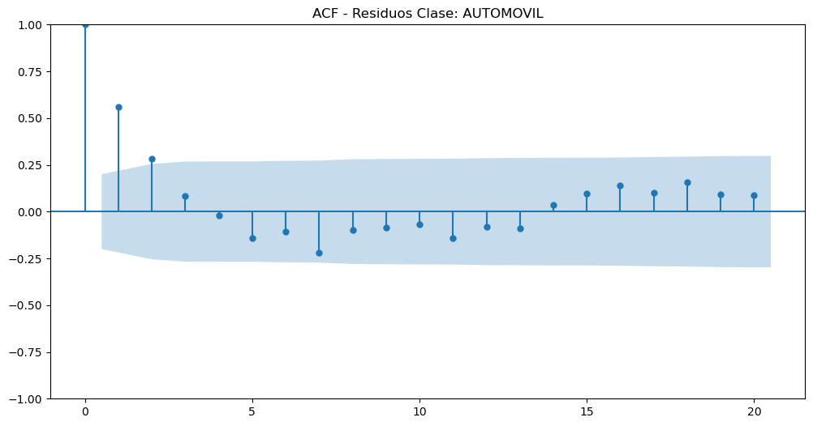
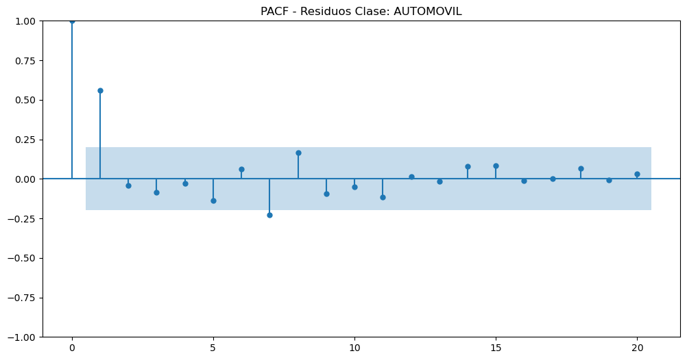
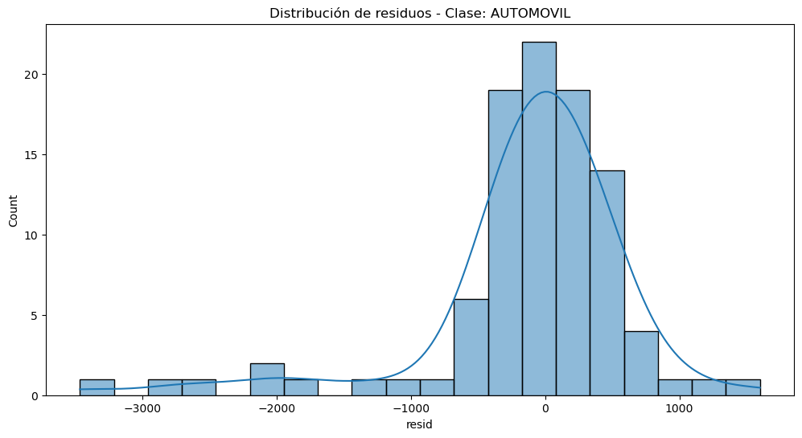
Pendiente: 2.00 comparendos por mes
R²: 0.049406
P-valor tendencia: 2.950869e-02
¿Tendencia significativa? Sí
Durbin-Watson: 0.000496
Hay autocorrelación significativa en la tendencia
Amplitud estacional: 714 comparendos
Variabilidad explicada por estacionalidad: 11.59%
Prueba ADF sobre la serie original
Estadístico ADF: -3.392720
P-valor: 1.120956e-02
Valores críticos:
1%: -3.5011
5%: -2.8925
10%: -2.5833
La serie original es estacionaria
Prueba ADF sobre los residuos
Estadístico ADF: -4.819493
P-valor: 4.990369e-05
Valores críticos:
1%: -3.5011
5%: -2.8925
10%: -2.5833
Los residuos son estacionarios
Tanto la serie original como los residuos son estacionarios
Prueba Ljung-Box
lb_stat lb_pvalue
6 53.705421 8.458250e-10
12 73.978893 5.727785e-11
18 79.719857 9.592761e-10
¿Los residuos son ruido blanco? No
Prueba t (media cero) p-valor: 0.132622
¿Residuos centrados en cero? Sí
Shapiro-Wilk p-valor: 5.718094e-10
¿Residuos normales? No
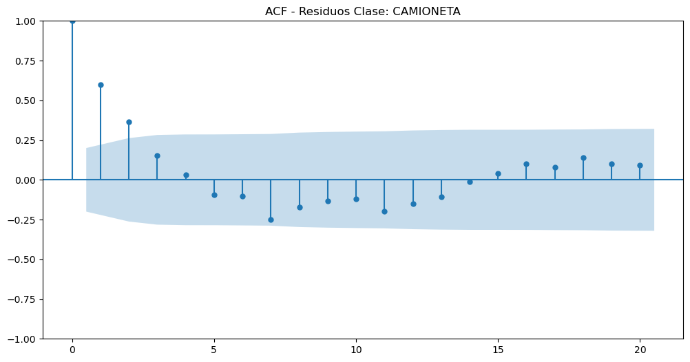
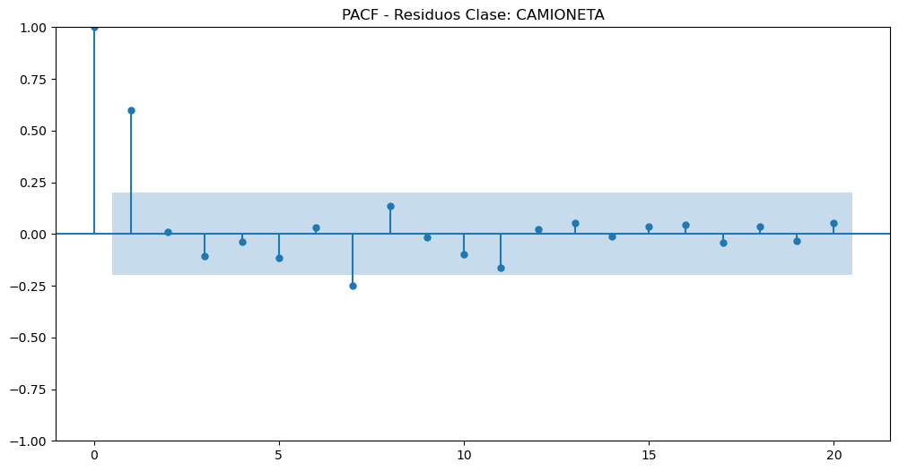
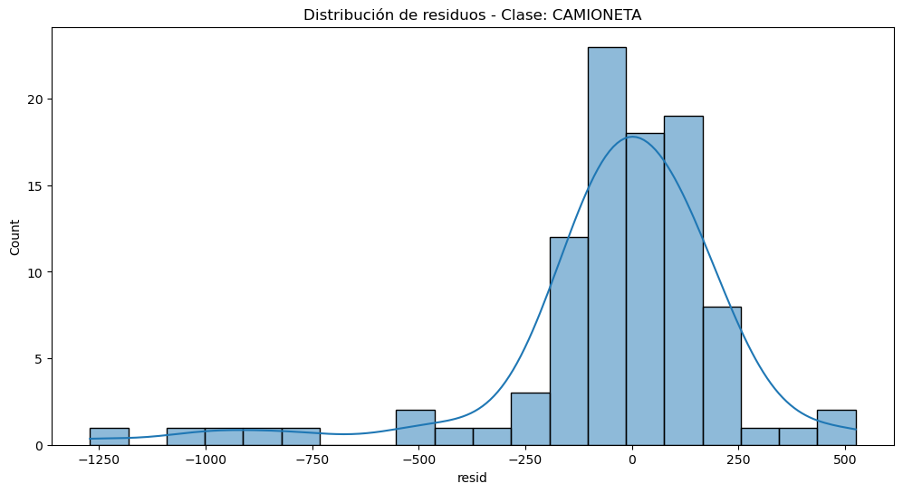
Pendiente: -2.72 comparendos por mes
R²: 0.639619
P-valor tendencia: 1.501601e-22
¿Tendencia significativa? Sí
Durbin-Watson: 0.000342
Hay autocorrelación significativa en la tendencia
Amplitud estacional: 250 comparendos
Variabilidad explicada por estacionalidad: 10.76%
Prueba ADF sobre la serie original
Estadístico ADF: -2.874968
P-valor: 4.833725e-02
Valores críticos:
1%: -3.5011
5%: -2.8925
10%: -2.5833
La serie original es estacionaria
Prueba ADF sobre los residuos
Estadístico ADF: -4.456377
P-valor: 2.355824e-04
Valores críticos:
1%: -3.5011
5%: -2.8925
10%: -2.5833
Los residuos son estacionarios
Tanto la serie original como los residuos son estacionarios
Prueba Ljung-Box
lb_stat lb_pvalue
6 68.785989 7.252094e-13
12 78.688726 7.336558e-12
18 81.262237 5.148434e-10
¿Los residuos son ruido blanco? No
Prueba t (media cero) p-valor: 0.143875
¿Residuos centrados en cero? Sí
Shapiro-Wilk p-valor: 1.334692e-11
¿Residuos normales? No
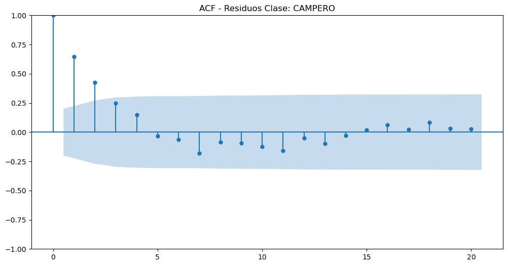
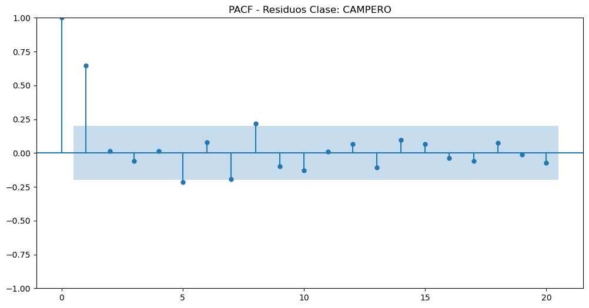
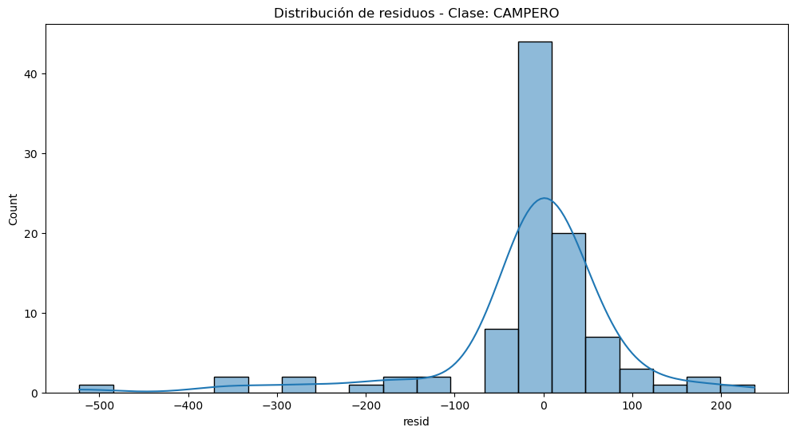
Pendiente: -6.69 comparendos por mes
R²: 0.617977
P-valor tendencia: 2.366881e-21
¿Tendencia significativa? Sí
Durbin-Watson: 0.000467
Hay autocorrelación significativa en la tendencia
Amplitud estacional: 556 comparendos
Variabilidad explicada por estacionalidad: 11.25%
Prueba ADF sobre la serie original
Estadístico ADF: -2.611989
P-valor: 9.054463e-02
Valores críticos:
1%: -3.5019
5%: -2.8928
10%: -2.5835
La serie original no es estacionaria (tiene tendencia y/o estacionalidad)
Prueba ADF sobre los residuos
Estadístico ADF: -7.564333
P-valor: 2.953003e-11
Valores críticos:
1%: -3.5011
5%: -2.8925
10%: -2.5833
Los residuos son estacionarios
La serie original no es estacionaria, pero los residuos sí lo son → la descomposición STL capturó correctamente tendencia y estacionalidad
Prueba Ljung-Box
lb_stat lb_pvalue
6 14.344722 0.026014
12 35.945667 0.000331
18 42.854340 0.000839
¿Los residuos son ruido blanco? No
Prueba t (media cero) p-valor: 0.907898
¿Residuos centrados en cero? Sí
Shapiro-Wilk p-valor: 7.737139e-05
¿Residuos normales? No
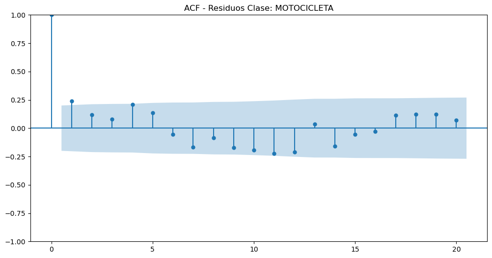
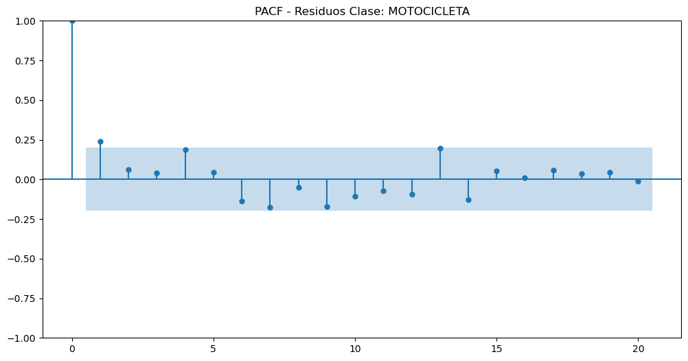
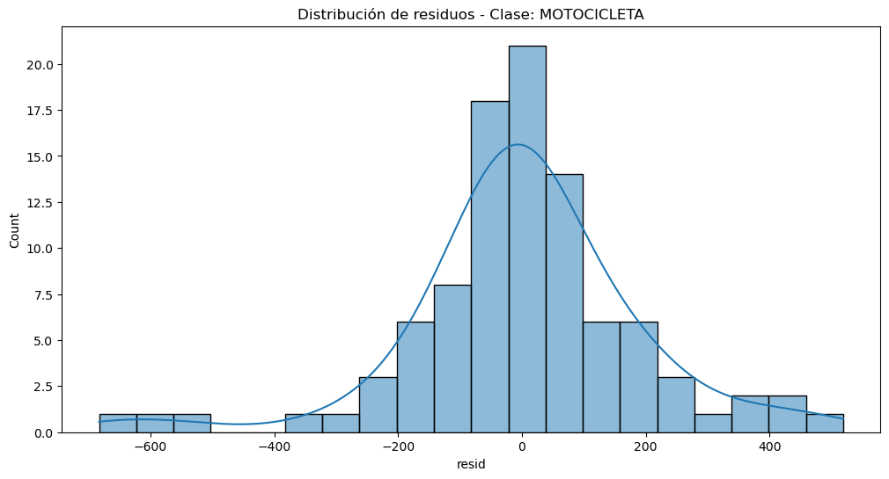
Pendiente: 0.34 comparendos por mes
R²: 0.043995
P-valor tendencia: 4.025919e-02
¿Tendencia significativa? Sí
Durbin-Watson: 0.000870
Hay autocorrelación significativa en la tendencia
Amplitud estacional: 178 comparendos
Variabilidad explicada por estacionalidad: 15.85%
Prueba ADF sobre la serie original
Estadístico ADF: -2.684135
P-valor: 7.682409e-02
Valores críticos:
1%: -3.5027
5%: -2.8932
10%: -2.5836
La serie original no es estacionaria (tiene tendencia y/o estacionalidad)
Prueba ADF sobre los residuos
Estadístico ADF: -7.085693
P-valor: 4.544817e-10
Valores críticos:
1%: -3.5011
5%: -2.8925
10%: -2.5833
Los residuos son estacionarios
La serie original no es estacionaria, pero los residuos sí lo son → la descomposición STL capturó correctamente tendencia y estacionalidad
Prueba Ljung-Box
lb_stat lb_pvalue
6 17.960283 0.006332
12 36.739618 0.000246
18 37.620291 0.004347
¿Los residuos son ruido blanco? No
Prueba t (media cero) p-valor: 0.038110
¿Residuos centrados en cero? No
Shapiro-Wilk p-valor: 1.822838e-09
¿Residuos normales? No
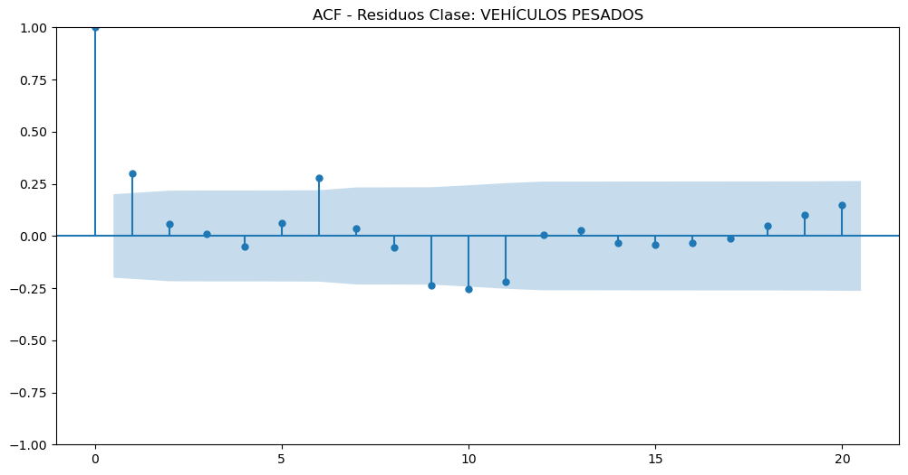
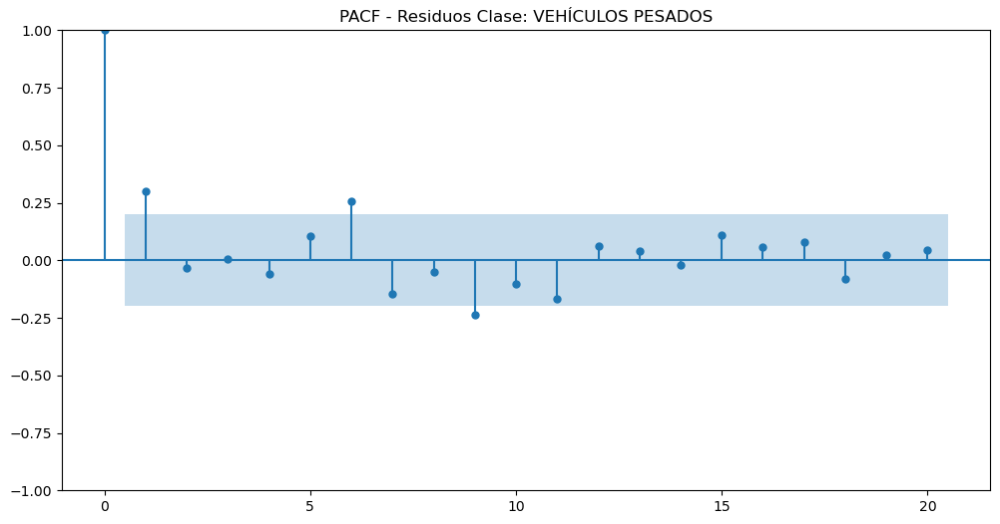
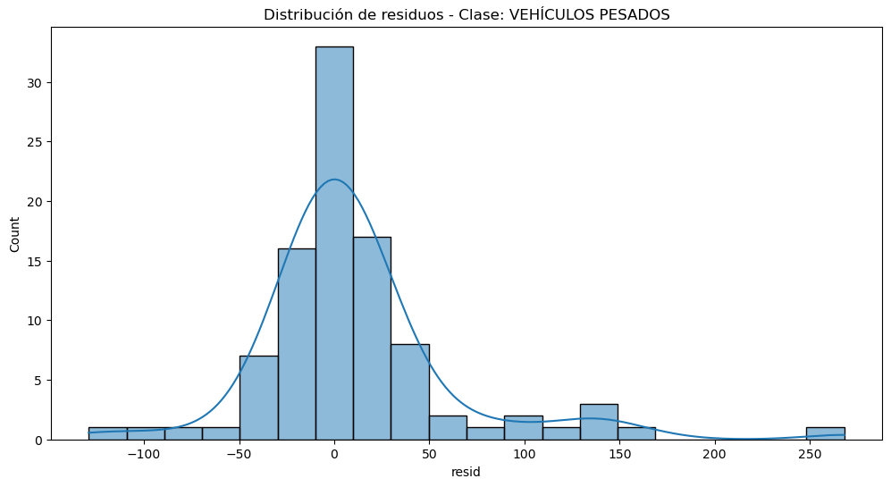
Pendiente: 0.01 comparendos por mes
R²: 0.813878
P-valor tendencia: 4.349499e-36
¿Tendencia significativa? Sí
Durbin-Watson: 0.000947
Hay autocorrelación significativa en la tendencia
Amplitud estacional: 4 comparendos
Variabilidad explicada por estacionalidad: 22.20%
Prueba ADF sobre la serie original
Estadístico ADF: -7.150219
P-valor: 3.155330e-10
Valores críticos:
1%: -3.5011
5%: -2.8925
10%: -2.5833
La serie original es estacionaria
Prueba ADF sobre los residuos
Estadístico ADF: -8.414924
P-valor: 2.055980e-13
Valores críticos:
1%: -3.5011
5%: -2.8925
10%: -2.5833
Los residuos son estacionarios
Tanto la serie original como los residuos son estacionarios
Prueba Ljung-Box
lb_stat lb_pvalue
6 3.854127 0.696409
12 17.889019 0.119102
18 21.784240 0.241705
¿Los residuos son ruido blanco? Sí
Prueba t (media cero) p-valor: 0.115892
¿Residuos centrados en cero? Sí
Shapiro-Wilk p-valor: 6.620906e-11
¿Residuos normales? No
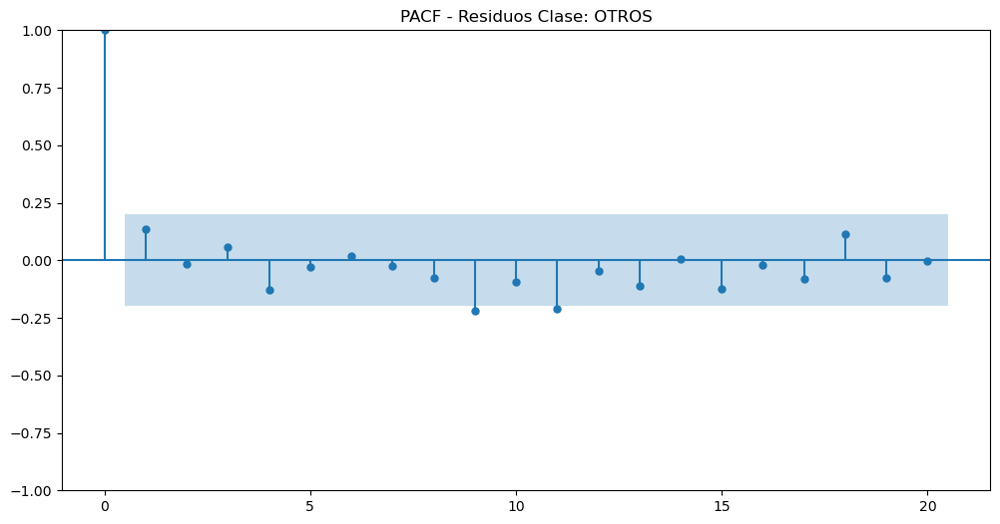
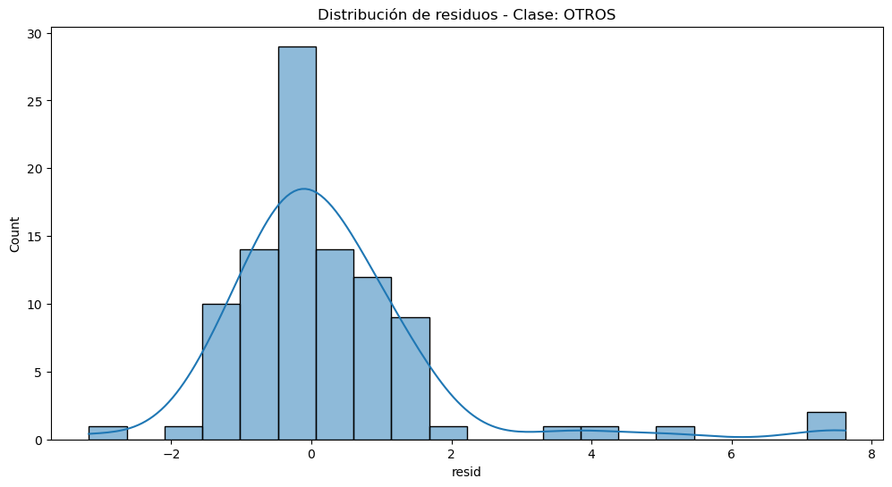
AUTOMÓVIL: Tendencia decreciente significativa (-5.68 comparendos por mes). R² bajo (6.0%) indica que la tendencia lineal explica poca variabilidad. Serie original estacionaria. Residuos no son ruido blanco pero están centrados en cero. Amplitud estacional de 1,849 comparendos (la más alta entre todas las clases).
CAMIONETA: Tendencia creciente significativa (+2.00 comparendos por mes), única junto con vehículos pesados y OTROS que muestran aumento. R² bajo (4.9%). Serie estacionaria. Amplitud estacional de 714 comparendos.
CAMPERO: Tendencia decreciente significativa (-2.72 comparendos por mes). R² muy alto (64.0%), el segundo más alto, indicando que la tendencia lineal explica la mayor parte de la variabilidad. Serie estacionaria. Amplitud estacional de 250 comparendos.
MOTOCICLETA: Tendencia decreciente significativa (-6.69 comparendos por mes), la más pronunciada en magnitud absoluta junto con automóvil. R² muy alto (61.8%). La serie original no es estacionaria, pero los residuos sí lo son, indicando que la descomposición STL capturó correctamente tendencia y estacionalidad. Amplitud estacional de 556 comparendos.
VEHÍCULOS PESADOS: Tendencia creciente significativa (+0.34 comparendos por mes), aunque de magnitud muy pequeña. R² bajo (4.4%). La serie original no es estacionaria, pero los residuos sí lo son. Presenta la mayor amplitud estacional relativa (15.85% de variabilidad explicada) después de OTROS. Los residuos no están centrados en cero (p-valor = 0.0381), indicando sesgo sistemático en el modelo.
OTROS: Tendencia creciente significativa (+0.01 comparendos por mes), con R² extremadamente alto (81.4%). Es la clase con la menor amplitud estacional en términos absolutos (4 comparendos) pero la mayor proporcionalmente (22.20%). Los residuos son ruido blanco (única clase donde ocurre), indicando que el modelo capturó toda la estructura temporal. Serie original estacionaria.
Tendencias diferenciadas:
Decrecientes: AUTOMÓVIL (-5.68), MOTOCICLETA (-6.69), CAMPERO (-2.72)
Crecientes: CAMIONETA (+2.00), VEHÍCULOS PESADOS (+0.34), OTROS (+0.01)
Calidad del ajuste (R²):
Muy alto (>60%): CAMPERO (64.0%), MOTOCICLETA (61.8%), OTROS (81.4%)
Bajo (<10%): AUTOMÓVIL (6.0%), CAMIONETA (4.9%), VEHÍCULOS PESADOS (4.4%)
Estacionariedad: Solo MOTOCICLETA y VEHÍCULOS PESADOS requirieron la descomposición para volverse estacionarias; las demás ya lo eran.
Residuos: Solo OTROS cumple con ruido blanco. VEHÍCULOS PESADOS es la única clase con sesgo en la media de los residuos.
Hallazgos:
Las motocicletas y automóviles lideran la disminución, muestran las tendencias decrecientes más pronunciadas (-6.69 y -5.68 comparendos por mes respectivamente), lo que sugiere una mejora en el comportamiento de estos conductores o cambios en la fiscalización.
Camionetas y vehículos pesados muestran tendencias crecientes, debido a que son las únicas clases con aumentos significativos, aunque de magnitud pequeña (+2.00 y +0.34), lo que podría indicar un problema creciente en estos segmentos.
OTROS tiene el mejor ajuste del modelo con R² de 81.4% y residuos ruido blanco, es la clase donde la descomposición STL capturó perfectamente la estructura temporal, a pesar de su bajo volumen.
Es la única clase con residuos no centrados en cero, indicando un sesgo sistemático que sugiere la necesidad de variables adicionales o un modelo más complejo.
La estacionalidad es moderada en todas las clases con valores entre 10.76% y 22.20%, ninguna clase presenta una estacionalidad dominante, lo que confirma que la mayor parte de la variabilidad se debe a componentes irregulares o eventos atípicos.
Análisis de Autocorrelación (ACF y PACF) - AUTOMOVIL Estas gráficas miden si los errores de un periodo están relacionados con los de periodos anteriores.
ACF (Autocorrelation Function): Se observa una correlación significativa y positiva en el Lag 1 y el Lag 2 (sobresalen claramente de la banda de confianza azul). Esto indica que el modelo actual no ha capturado toda la estructura de dependencia temporal. Al ser una caída gradual en el ACF, sugiere un componente Autorregresivo (AR) pendiente.
PACF (Partial Autocorrelation Function): Muestra un pico fuerte en el Lag 1 y luego se corta abruptamente (la mayoría de los demás picos están dentro de las bandas). Este es un patrón clásico de un proceso AR(1) o AR(2) que aún está presente en los residuos.
Hallazgo: Los residuos no son ruido blanco. Hay información sistemática (correlación serial) que el modelo no está explicando.
Gráfico de la distribución de los residuos - AUTOMOVIL: Esta gráfica evalúa la normalidad y el sesgo de los errores.
Visualmente, la distribución parece estar centrada cerca de 0, lo cual es un buen indicio de que el modelo no tiene un sesgo sistemático importante en la magnitud de sus predicciones.
La mayor parte de los datos sigue una forma de campana, pero hay una cola larga hacia la izquierda (sesgo negativo).
Se observan residuos negativos importantes (entre -2000 y -3500). Esto significa que hay meses específicos donde el modelo sobreestimó drásticamente la cantidad de automóviles, posiblemente debido a eventos atípicos o choques externos que el modelo no conoce.
Análisis de Autocorrelación (ACF y PACF) - CAMIONETA: Estas gráficas muestran una estructura de dependencia temporal muy marcada, similar a la anterior pero con algunas particularidades:
ACF (Autocorrelation Function): Hay picos significativos que sobresalen de las bandas de confianza en los Lags 1 y 2. El hecho de que el ACF disminuya lentamente sugiere que los residuos todavía guardan una memoria importante de los meses anteriores.
PACF (Partial Autocorrelation Function): Muestra un pico muy fuerte en el Lag 1 y otro significativo (aunque negativo) en el Lag 7. El corte abrupto después del primer lag refuerza la idea de que existe un componente AR(1) no resuelto.
Hallazgos: Los residuos tienen autocorrelación serial. El modelo está dejando “dinero sobre la mesa”, es decir, hay patrones predecibles en los errores que podrían ser incorporados para mejorar el ajuste.
Gráfico de la distribución de los residuos - CAMIONETA: La distribución está centrada cerca de cero, lo que indica que, en promedio, el modelo no subestima ni sobreestima de forma sistemática.
Se observa una distribución más concentrada que en el caso anterior (la escala del eje X llega hasta -1250, comparado con los -3500 de los automóviles). Sin embargo, persiste un sesgo negativo (cola a la izquierda).
Existen errores negativos importantes (cerca de -1000 y -1250). Estos representan meses donde la cantidad real de camionetas fue mucho menor a lo proyectado por el modelo.
Análisis de Autocorrelación (ACF y PACF) - CAMPERO: Las gráficas de autocorrelación para esta clase son muy reveladoras.
ACF (Autocorrelation Function): Muestra una caída muy lenta y picos significativos en los Lags 1 y 2. El hecho de que las barras tarden tanto en entrar en la zona de confianza indica que los residuos tienen una fuerte inercia o persistencia temporal.
PACF (Partial Autocorrelation Function): El pico en el Lag 1 es extremadamente alto (superando el 0.6). Además, observamos picos negativos significativos en los Lags 5 y 7.
Hallazgo: Los residuos están altamente correlacionados. Un pico tan alto en el PACF lag 1 sugiere que el modelo actual está ignorando casi por completo la relación inmediata entre un mes y el anterior. Esta serie es la que más se aleja del ideal de ruido blanco de las tres analizadas.
Gráfico de la distribución de los residuos - CAMPERO: La gran mayoría de los errores son muy pequeños (están concentrados en el bin central alrededor de 0), con una frecuencia superior a 40. Esto sugiere que el modelo acierta razonablemente bien en la mayoría de los meses.
La distribución presenta leptocurtosis, lo que en estadística se asocia a una alta probabilidad de valores extremos comparado con una distribución normal.
Al igual que en las clases anteriores, hay una cola larga hacia la izquierda. Tenemos errores que llegan hasta -500. Dado que la escala general de esta serie parece ser más pequeña que la de Automóviles, un error de -500 es proporcionalmente muy alto.
Análisis de Autocorrelación (ACF y PACF) - MOTOCICLETA: Lo primero que destaca es que las barras de correlación son mucho más cortas que en los casos de Automóvil o Campero.
ACF (Autocorrelation Function): El pico en el Lag 1 es apenas significativo (está justo en el borde de la banda de confianza). Esto es una excelente señal, ya que indica que la mayor parte de la dependencia temporal ha sido capturada por el modelo.
PACF (Partial Autocorrelation Function): Muestra un comportamiento similar, con picos muy controlados. No hay una estructura autorregresiva (AR) tan evidente como en las otras categorías. Hay un pequeño salto en el Lag 13, que en datos mensuales suele ser ruido o una ligera estacionalidad residual de un año y un mes, pero no es preocupante.
Hallazgo: De todas las clases analizadas, esta es la que más se aproxima al ruido blanco. Los errores son mayoritariamente independientes entre sí.
Gráfico de la distribución de los residuos - MOTOCICLETA: La distribución es notablemente más simétrica que en las clases anteriores. Aunque sigue existiendo una ligera cola a la izquierda, la curva de densidad (la línea azul) se ajusta mucho mejor a la forma de las barras.
Está muy bien centrada en 0, lo que indica que el modelo no tiene un sesgo de predicción significativo.
Persisten algunos valores atípicos negativos (alrededor de -600), pero son menos frecuentes comparados con el volumen total de datos.
Análisis de Autocorrelación (ACF y PACF) - VEHÍCULOS PESADOS: A diferencia de las otras categorías, los vehículos pesados suelen tener dinámicas más ligadas a la actividad económica industrial y de carga.
ACF (Autocorrelation Function): Se observan picos significativos que sobresalen de las bandas de confianza en los Lags 1, 6 y 9. La presencia de un pico en el lag 6 es interesante, ya que sugiere una posible estacionalidad semestral o un ciclo de mediano plazo que el modelo no está capturando completamente.
PACF (Partial Autocorrelation Function): Muestra picos claros en el Lag 1 (correlación con el mes anterior) y nuevamente en los Lags 6 y 9. El hecho de que el lag 6 sea tan marcado en la correlación parcial refuerza la idea de que existe un patrón cíclico específico en el transporte de carga que el modelo actual ignora.
Hallazgo: Los residuos no son ruido blanco. Existe una estructura de dependencia temporal (especialmente semestral) que indica que el modelo podría beneficiarse de un componente estacional (SARIMA) o de órdenes autorregresivos más altos.
Gráfico de la distribución de los residuos - VEHÍCULOS PESADOS: La distribución está muy bien centrada en 0, con una gran concentración de datos en los bins centrales. Esto sugiere que para la mayoría de los meses, el modelo es bastante preciso.
A diferencia de los automóviles, esta distribución es mucho más simétrica. No presenta esa cola izquierda tan dramática, lo que indica que esta serie no sufre tanto de esas caídas súbitas e inexplicables que vimos en las otras categorías.
Se observa un valor atípico hacia la derecha (cerca de 250), lo que representa un mes donde hubo un pico de registros de vehículos pesados que el modelo no previó (subestimación).
Análisis de Autocorrelación (ACF y PACF) - OTROS: A diferencia de los Automóviles o Camperos, donde las barras de error eran gigantes, aquí vemos un comportamiento mucho más controlado:
ACF (Autocorrelation Function): Casi todos los picos están dentro de las bandas de confianza (la zona sombreada azul). Solo hay pequeñas salidas insignificantes en los lags 9 y 18. Esto indica que no hay una memoria lineal fuerte que el modelo esté ignorando.
PACF (Partial Autocorrelation Function): Al igual que el ACF, los valores son muy bajos. No hay un “pico dominante” en el lag 1, lo que sugiere que el componente Autorregresivo (\(p\)) está bien especificado o que la serie es intrínsecamente más aleatoria.
Hallazgo: Los residuos de esta clase son los que más se acercan al comportamiento de ruido blanco. El modelo ha logrado extraer casi toda la información predecible de la serie temporal.
Gráfico de la distribución de los residuos - OTROS: Se nota que la escala del eje X es minúscula (va de -3 a 8). Comparado con los -3500 de los Automóviles, esto indica que el volumen de datos es muy pequeño o que el modelo es extremadamente preciso para esta categoría.
La distribución tiene una forma de campana muy clara y es leptocúrtica (muy alta en el centro), lo que significa que la inmensa mayoría de los errores son prácticamente cero.
Se observan un par de valores hacia la derecha (cerca de 4 y 8). Estos son meses donde hubo un registro inusualmente alto de “otros” vehículos, pero dada la escala, no comprometen la validez general del modelo.
Distribución Mensual y Anual de Comparendos Electrónicos por Clase del Vehículo Infractor#
Se construyen tablas pivote que cruzan los meses y los años para cada clase del vehículo (AUTOMÓVIL, CAMIONETA, MOTOCICLETA, CAMPERO, VEHÍCULOS PESADOS y OTROS), utilizando la suma ponderada de CANTIDAD_INFRACCIONES para visualizar el volumen de infracciones en cada combinación temporal. Los resultados se presentan mediante mapas de calor independientes para cada clase, con los meses ordenados de diciembre a enero para facilitar la identificación de patrones estacionales específicos de cada tipo de vehículo. Esta visualización permite comparar el comportamiento temporal de las diferentes clases, identificar períodos de alta o baja actividad particulares de cada tipo de vehículo, detectar estacionalidades diferenciadas (como picos en ciertos meses para automóviles vs motocicletas), y evaluar cómo eventos externos como la pandemia o los cierres viales afectaron de manera distinta a cada clase del parque automotor.
clases_heatmap = ['AUTOMOVIL', 'CAMIONETA', 'MOTOCICLETA', 'CAMPERO', 'VEHÍCULOS PESADOS', 'OTROS']
nombres_meses = ['Enero', 'Febrero', 'Marzo', 'Abril', 'Mayo', 'Junio',
'Julio', 'Agosto', 'Septiembre', 'Octubre', 'Noviembre', 'Diciembre']
for clase in clases_heatmap:
df_clase = df_comparendos_electronicos_copy[df_comparendos_electronicos_copy['CLASE_AGRUPADA'] == clase]
df_clase['año'] = df_clase['fecha_comparendo'].dt.year
df_clase['mes_numero'] = df_clase['fecha_comparendo'].dt.month
tabla_heatmap = df_clase.pivot_table(
values='CANTIDAD_INFRACCIONES',
index='mes_numero',
columns='año',
aggfunc='sum',
fill_value=0
)
tabla_heatmap.index = nombres_meses
tabla_heatmap = tabla_heatmap.iloc[::-1]
fig = go.Figure(data=go.Heatmap(
z=tabla_heatmap.values,
x=tabla_heatmap.columns,
y=tabla_heatmap.index,
colorscale='blues',
text=tabla_heatmap.values,
texttemplate='%{text:,.0f}',
hovertemplate=f'Clase: {clase}<br>Mes: %{{y}}<br>Año: %{{x}}<br>Comparendos: %{{z:,.0f}}<extra></extra>'
))
fig.update_layout(
title=dict(
text=f'Distribución de Comparendos Electrónicos por Año y Mes - Clase: {clase}',
x=0.5,
xanchor='center',
font=dict(size=16, weight='bold')
),
xaxis_title=dict(
text='Año',
font=dict(weight='bold')
),
yaxis_title=dict(
text='Mes',
font=dict(weight='bold')
),
template='plotly_white',
width=1055,
height=500
)
fig.show()
Distribución Mensual de Comparendos Electrónicos por Clase del Vehículo Infractor#
Se examina la variabilidad mensual de los comparendos electrónicos desagregada por cada clase del vehículo (AUTOMÓVIL, CAMIONETA, MOTOCICLETA, CAMPERO, VEHÍCULOS PESADOS y OTROS), agrupando los registros por mes y año y sumando la columna CANTIDAD_INFRACCIONES para obtener el volumen real de infracciones por cada combinación. Para cada clase, se presentan estadísticos descriptivos (media, desviación estándar, mínimo, máximo y cuartiles) para cada mes, con el fin de caracterizar su comportamiento típico y su dispersión interanual de manera específica por tipo de vehículo. Complementariamente, se generan diagramas de caja (boxplot) que visualizan la distribución de las infracciones para cada mes, incluyendo la media como referencia. Para validar si las diferencias observadas entre meses son estadísticamente significativas para cada clase, se aplica un análisis de varianza que incluye la prueba de normalidad de Shapiro-Wilk para evaluar la distribución de los datos por mes, la prueba de Levene para verificar la homogeneidad de varianzas, y dependiendo del cumplimiento de los supuestos, se realiza un ANOVA paramétrico (con prueba post-hoc de Tukey HSD) o un Kruskal-Wallis no paramétrico (con prueba post-hoc de Dunn y corrección de Bonferroni). Este análisis permite identificar, de manera diferenciada por clase de vehículo, qué meses presentan mayor variabilidad en la detección de infracciones para cada tipo de vehículo, detectar meses con comportamientos atípicos específicos de cada clase, comparar la estabilidad estacional entre los distintos tipos de vehículos (automóviles, camionetas, motocicletas, camperos, vehículos pesados y otros), y determinar si existe estacionalidad estadísticamente significativa en el volumen de comparendos para cada clase del parque automotor.
clases_boxplot = ['AUTOMOVIL', 'CAMIONETA', 'MOTOCICLETA', 'CAMPERO', 'VEHÍCULOS PESADOS', 'OTROS']
for clase in clases_boxplot:
df_clase = df_comparendos_electronicos_copy[df_comparendos_electronicos_copy['CLASE_AGRUPADA'] == clase]
df_boxplot_clase = df_clase.groupby(['mes_nombre', 'año'])['CANTIDAD_INFRACCIONES'].sum().reset_index()
df_boxplot_clase.columns = ['mes', 'año', 'infracciones']
df_boxplot_clase['mes_nombre'] = df_boxplot_clase['mes'].apply(lambda x: nombres_meses[x-1])
print(f"Estadísticas Descriptivas - Clase: {clase}")
estadisticas = df_boxplot_clase.groupby('mes_nombre')['infracciones'].describe().round(0).fillna(0).astype(int).reindex(nombres_meses)
display(estadisticas.T)
display(HTML("<hr style='border: 1px solid #696969; margin: 20px 0;'>"))
fig = go.Figure()
fig.add_trace(go.Box(
x=df_boxplot_clase['mes_nombre'],
y=df_boxplot_clase['infracciones'],
marker_color='mediumpurple',
name='',
boxmean=True,
hovertemplate='Mes: %{x}<br>Comparendos: %{y:,.0f}<extra></extra>'
))
fig.update_layout(
title=dict(
text=f'Distribución de Comparendos Electrónicos por Mes - Clase: {clase}',
x=0.5,
xanchor='center',
font=dict(size=16, weight='bold')
),
xaxis_title=dict(
text='Mes',
font=dict(weight='bold')
),
yaxis_title=dict(
text='Cantidad de Comparendos',
font=dict(weight='bold')
),
template='plotly_white',
width=1055,
height=500
)
fig.show()
df_anova = df_boxplot_clase.copy()
meses_grupos = [
df_anova[df_anova['mes_nombre'] == mes]['infracciones'].values
for mes in nombres_meses
]
print("Prueba de normalidad (Shapiro-Wilk) por mes:")
normalidad = []
for mes, grupo in zip(nombres_meses, meses_grupos):
if len(grupo) >= 3:
stat, p = stats.shapiro(grupo)
normalidad.append(p > 0.05)
print(f"{mes}: p-valor = {p:.6f} -> {'Normal' if p > 0.05 else 'No normal'}")
else:
print(f"{mes}: No hay suficientes datos para evaluar normalidad")
normalidad.append(False)
cumple_normalidad = all(normalidad) if normalidad else False
print(f"¿Se cumple normalidad en todos los meses? {'Sí' if cumple_normalidad else 'No'}")
grupos_validos = [g for g in meses_grupos if len(g) > 0]
if len(grupos_validos) > 1:
stat_levene, p_levene = stats.levene(*grupos_validos)
print(f"\nLevene p-valor: {p_levene:.6f}")
print(f"¿Varianzas iguales? {'Sí' if p_levene > 0.05 else 'No'}")
if cumple_normalidad and p_levene > 0.05:
print("\nSe cumplen los supuestos → Se aplica ANOVA")
f_stat, p_valor = stats.f_oneway(*meses_grupos)
print(f"Estadístico F: {f_stat:.4f}")
print(f"P-valor: {p_valor:.6f}")
print(f"¿Hay diferencias entre meses? {'Sí' if p_valor < 0.05 else 'No'}")
if p_valor < 0.05:
print("\nPrueba post-hoc Tukey HSD:")
tukey = pairwise_tukeyhsd(
endog=df_anova['infracciones'],
groups=df_anova['mes_nombre'],
alpha=0.05
)
print(tukey)
else:
print("\nNo se cumplen los supuestos → Se aplica Kruskal-Wallis")
h_stat, p_valor = stats.kruskal(*grupos_validos)
print(f"Estadístico H: {h_stat:.4f}")
print(f"P-valor: {p_valor:.6f}")
print(f"¿Hay diferencias entre meses? {'Sí' if p_valor < 0.05 else 'No'}")
if p_valor < 0.05:
print("\nPrueba post-hoc Dunn (con corrección Bonferroni):")
import scikit_posthocs as sp
df_dunn = df_anova[['mes_nombre', 'infracciones']].copy()
dunn = sp.posthoc_dunn(
df_dunn,
val_col='infracciones',
group_col='mes_nombre',
p_adjust='bonferroni'
)
dunn = dunn.loc[nombres_meses, nombres_meses]
display(dunn)
display(HTML("<hr style='border: 2px solid #696969; margin: 20px 0;'>"))
Estadísticas Descriptivas - Clase: AUTOMOVIL
| mes_nombre | Enero | Febrero | Marzo | Abril | Mayo | Junio | Julio | Agosto | Septiembre | Octubre | Noviembre | Diciembre |
|---|---|---|---|---|---|---|---|---|---|---|---|---|
| count | 8 | 8 | 8 | 8 | 8 | 8 | 8 | 8 | 8 | 8 | 8 | 8 |
| mean | 3058 | 3217 | 3612 | 3391 | 3345 | 3334 | 3430 | 3066 | 3317 | 3658 | 3386 | 3430 |
| std | 1038 | 664 | 828 | 1139 | 1609 | 1554 | 1368 | 1139 | 893 | 705 | 764 | 939 |
| min | 999 | 1974 | 2744 | 1503 | 430 | 953 | 934 | 1649 | 2179 | 2187 | 2097 | 2265 |
| 25% | 2750 | 2854 | 2799 | 2698 | 2338 | 2047 | 2614 | 2102 | 2617 | 3550 | 2999 | 2724 |
| 50% | 3050 | 3503 | 3658 | 3596 | 3934 | 3724 | 3638 | 3220 | 3397 | 3732 | 3226 | 3380 |
| 75% | 3789 | 3701 | 4141 | 4078 | 4383 | 4610 | 4337 | 3642 | 3707 | 3859 | 4132 | 4026 |
| max | 4342 | 3817 | 4915 | 4905 | 5212 | 5175 | 5050 | 4751 | 4892 | 4701 | 4306 | 4770 |
Prueba de normalidad (Shapiro-Wilk) por mes:
Enero: p-valor = 0.555302 -> Normal
Febrero: p-valor = 0.116620 -> Normal
Marzo: p-valor = 0.191241 -> Normal
Abril: p-valor = 0.903985 -> Normal
Mayo: p-valor = 0.458931 -> Normal
Junio: p-valor = 0.437994 -> Normal
Julio: p-valor = 0.675391 -> Normal
Agosto: p-valor = 0.515785 -> Normal
Septiembre: p-valor = 0.822531 -> Normal
Octubre: p-valor = 0.159112 -> Normal
Noviembre: p-valor = 0.417717 -> Normal
Diciembre: p-valor = 0.606611 -> Normal
¿Se cumple normalidad en todos los meses? Sí
Levene p-valor: 0.248574
¿Varianzas iguales? Sí
Se cumplen los supuestos → Se aplica ANOVA
Estadístico F: 0.2201
P-valor: 0.995730
¿Hay diferencias entre meses? No
Estadísticas Descriptivas - Clase: CAMIONETA
| mes_nombre | Enero | Febrero | Marzo | Abril | Mayo | Junio | Julio | Agosto | Septiembre | Octubre | Noviembre | Diciembre |
|---|---|---|---|---|---|---|---|---|---|---|---|---|
| count | 8 | 8 | 8 | 8 | 8 | 8 | 8 | 8 | 8 | 8 | 8 | 8 |
| mean | 1230 | 1273 | 1409 | 1338 | 1345 | 1325 | 1371 | 1279 | 1362 | 1516 | 1372 | 1409 |
| std | 371 | 265 | 305 | 482 | 633 | 567 | 522 | 427 | 418 | 291 | 267 | 348 |
| min | 455 | 738 | 982 | 597 | 157 | 399 | 358 | 721 | 853 | 995 | 878 | 984 |
| 25% | 1098 | 1171 | 1221 | 1086 | 1164 | 994 | 1178 | 959 | 1091 | 1401 | 1281 | 1230 |
| 50% | 1332 | 1308 | 1396 | 1370 | 1399 | 1458 | 1350 | 1214 | 1335 | 1464 | 1380 | 1346 |
| 75% | 1501 | 1456 | 1648 | 1564 | 1736 | 1756 | 1791 | 1665 | 1518 | 1730 | 1522 | 1500 |
| max | 1574 | 1546 | 1818 | 2009 | 2091 | 1973 | 1992 | 1883 | 2076 | 1942 | 1755 | 2043 |
Prueba de normalidad (Shapiro-Wilk) por mes:
Enero: p-valor = 0.131244 -> Normal
Febrero: p-valor = 0.321847 -> Normal
Marzo: p-valor = 0.736500 -> Normal
Abril: p-valor = 0.816433 -> Normal
Mayo: p-valor = 0.585266 -> Normal
Junio: p-valor = 0.402618 -> Normal
Julio: p-valor = 0.420621 -> Normal
Agosto: p-valor = 0.597393 -> Normal
Septiembre: p-valor = 0.692096 -> Normal
Octubre: p-valor = 0.716795 -> Normal
Noviembre: p-valor = 0.899263 -> Normal
Diciembre: p-valor = 0.423920 -> Normal
¿Se cumple normalidad en todos los meses? Sí
Levene p-valor: 0.273168
¿Varianzas iguales? Sí
Se cumplen los supuestos → Se aplica ANOVA
Estadístico F: 0.2497
P-valor: 0.992612
¿Hay diferencias entre meses? No
Estadísticas Descriptivas - Clase: MOTOCICLETA
| mes_nombre | Enero | Febrero | Marzo | Abril | Mayo | Junio | Julio | Agosto | Septiembre | Octubre | Noviembre | Diciembre |
|---|---|---|---|---|---|---|---|---|---|---|---|---|
| count | 8 | 8 | 8 | 8 | 8 | 8 | 8 | 8 | 8 | 8 | 8 | 8 |
| mean | 1054 | 1057 | 1209 | 1343 | 1122 | 1101 | 1098 | 1027 | 1002 | 992 | 877 | 957 |
| std | 372 | 351 | 388 | 391 | 361 | 374 | 364 | 389 | 247 | 299 | 301 | 239 |
| min | 425 | 475 | 672 | 656 | 571 | 511 | 593 | 551 | 576 | 566 | 383 | 586 |
| 25% | 806 | 976 | 1004 | 1161 | 884 | 860 | 854 | 756 | 882 | 820 | 701 | 812 |
| 50% | 1194 | 1119 | 1074 | 1346 | 1180 | 1207 | 1197 | 992 | 1068 | 1040 | 854 | 1066 |
| 75% | 1333 | 1167 | 1489 | 1543 | 1408 | 1341 | 1304 | 1256 | 1144 | 1140 | 1056 | 1118 |
| max | 1444 | 1636 | 1894 | 1990 | 1524 | 1578 | 1626 | 1644 | 1272 | 1385 | 1289 | 1207 |
Prueba de normalidad (Shapiro-Wilk) por mes:
Enero: p-valor = 0.247453 -> Normal
Febrero: p-valor = 0.366727 -> Normal
Marzo: p-valor = 0.575788 -> Normal
Abril: p-valor = 0.956403 -> Normal
Mayo: p-valor = 0.402002 -> Normal
Junio: p-valor = 0.606596 -> Normal
Julio: p-valor = 0.490479 -> Normal
Agosto: p-valor = 0.769080 -> Normal
Septiembre: p-valor = 0.380262 -> Normal
Octubre: p-valor = 0.487319 -> Normal
Noviembre: p-valor = 0.747123 -> Normal
Diciembre: p-valor = 0.079659 -> Normal
¿Se cumple normalidad en todos los meses? Sí
Levene p-valor: 0.962119
¿Varianzas iguales? Sí
Se cumplen los supuestos → Se aplica ANOVA
Estadístico F: 0.9928
P-valor: 0.459769
¿Hay diferencias entre meses? No
Estadísticas Descriptivas - Clase: CAMPERO
| mes_nombre | Enero | Febrero | Marzo | Abril | Mayo | Junio | Julio | Agosto | Septiembre | Octubre | Noviembre | Diciembre |
|---|---|---|---|---|---|---|---|---|---|---|---|---|
| count | 8 | 8 | 8 | 8 | 8 | 8 | 8 | 8 | 8 | 8 | 8 | 8 |
| mean | 419 | 417 | 444 | 408 | 414 | 410 | 420 | 395 | 402 | 440 | 410 | 416 |
| std | 158 | 121 | 118 | 164 | 201 | 212 | 173 | 155 | 85 | 77 | 119 | 123 |
| min | 118 | 265 | 283 | 177 | 48 | 129 | 147 | 163 | 298 | 303 | 255 | 237 |
| 25% | 351 | 319 | 376 | 311 | 309 | 234 | 337 | 326 | 338 | 392 | 316 | 324 |
| 50% | 418 | 422 | 428 | 382 | 426 | 449 | 415 | 374 | 405 | 460 | 416 | 418 |
| 75% | 552 | 497 | 488 | 492 | 531 | 482 | 497 | 492 | 463 | 488 | 461 | 508 |
| max | 595 | 603 | 664 | 694 | 713 | 788 | 721 | 620 | 514 | 533 | 624 | 590 |
Prueba de normalidad (Shapiro-Wilk) por mes:
Enero: p-valor = 0.477274 -> Normal
Febrero: p-valor = 0.582523 -> Normal
Marzo: p-valor = 0.885722 -> Normal
Abril: p-valor = 0.969446 -> Normal
Mayo: p-valor = 0.942642 -> Normal
Junio: p-valor = 0.635774 -> Normal
Julio: p-valor = 0.996529 -> Normal
Agosto: p-valor = 0.795999 -> Normal
Septiembre: p-valor = 0.283031 -> Normal
Octubre: p-valor = 0.724426 -> Normal
Noviembre: p-valor = 0.825960 -> Normal
Diciembre: p-valor = 0.786003 -> Normal
¿Se cumple normalidad en todos los meses? Sí
Levene p-valor: 0.698914
¿Varianzas iguales? Sí
Se cumplen los supuestos → Se aplica ANOVA
Estadístico F: 0.0722
P-valor: 0.999980
¿Hay diferencias entre meses? No
Estadísticas Descriptivas - Clase: VEHÍCULOS PESADOS
| mes_nombre | Enero | Febrero | Marzo | Abril | Mayo | Junio | Julio | Agosto | Septiembre | Octubre | Noviembre | Diciembre |
|---|---|---|---|---|---|---|---|---|---|---|---|---|
| count | 8 | 8 | 8 | 8 | 8 | 8 | 8 | 8 | 8 | 8 | 8 | 8 |
| mean | 161 | 183 | 203 | 220 | 212 | 210 | 221 | 201 | 208 | 221 | 211 | 217 |
| std | 41 | 69 | 58 | 61 | 99 | 100 | 93 | 75 | 70 | 63 | 87 | 130 |
| min | 109 | 91 | 145 | 133 | 43 | 64 | 97 | 89 | 112 | 113 | 129 | 111 |
| 25% | 132 | 140 | 162 | 174 | 163 | 139 | 149 | 154 | 164 | 180 | 150 | 145 |
| 50% | 150 | 180 | 174 | 220 | 243 | 227 | 230 | 191 | 194 | 236 | 181 | 169 |
| 75% | 194 | 205 | 253 | 277 | 278 | 271 | 300 | 253 | 270 | 270 | 255 | 223 |
| max | 227 | 325 | 298 | 295 | 316 | 345 | 326 | 316 | 304 | 283 | 382 | 491 |
Prueba de normalidad (Shapiro-Wilk) por mes:
Enero: p-valor = 0.633324 -> Normal
Febrero: p-valor = 0.404832 -> Normal
Marzo: p-valor = 0.094767 -> Normal
Abril: p-valor = 0.506567 -> Normal
Mayo: p-valor = 0.273880 -> Normal
Junio: p-valor = 0.782199 -> Normal
Julio: p-valor = 0.230036 -> Normal
Agosto: p-valor = 0.957678 -> Normal
Septiembre: p-valor = 0.591216 -> Normal
Octubre: p-valor = 0.242042 -> Normal
Noviembre: p-valor = 0.173427 -> Normal
Diciembre: p-valor = 0.015837 -> No normal
¿Se cumple normalidad en todos los meses? No
Levene p-valor: 0.673985
¿Varianzas iguales? Sí
No se cumplen los supuestos → Se aplica Kruskal-Wallis
Estadístico H: 5.3341
P-valor: 0.913915
¿Hay diferencias entre meses? No
Estadísticas Descriptivas - Clase: OTROS
| mes_nombre | Enero | Febrero | Marzo | Abril | Mayo | Junio | Julio | Agosto | Septiembre | Octubre | Noviembre | Diciembre |
|---|---|---|---|---|---|---|---|---|---|---|---|---|
| count | 6 | 7 | 7 | 6 | 6 | 7 | 4 | 7 | 5 | 8 | 4 | 6 |
| mean | 3 | 3 | 2 | 4 | 4 | 2 | 2 | 2 | 2 | 2 | 3 | 2 |
| std | 2 | 2 | 1 | 2 | 3 | 1 | 1 | 1 | 1 | 1 | 2 | 1 |
| min | 1 | 1 | 1 | 1 | 1 | 1 | 1 | 1 | 1 | 1 | 1 | 1 |
| 25% | 1 | 2 | 1 | 3 | 3 | 1 | 2 | 1 | 2 | 2 | 2 | 1 |
| 50% | 2 | 2 | 2 | 3 | 3 | 2 | 2 | 1 | 2 | 2 | 2 | 2 |
| 75% | 4 | 4 | 4 | 4 | 4 | 2 | 2 | 2 | 2 | 2 | 4 | 2 |
| max | 6 | 5 | 4 | 8 | 11 | 4 | 4 | 3 | 3 | 3 | 5 | 3 |
Prueba de normalidad (Shapiro-Wilk) por mes:
Enero: p-valor = 0.452205 -> Normal
Febrero: p-valor = 0.224390 -> Normal
Marzo: p-valor = 0.063730 -> Normal
Abril: p-valor = 0.121785 -> Normal
Mayo: p-valor = 0.015952 -> No normal
Junio: p-valor = 0.026145 -> No normal
Julio: p-valor = 0.406387 -> Normal
Agosto: p-valor = 0.008193 -> No normal
Septiembre: p-valor = 0.325430 -> Normal
Octubre: p-valor = 0.092878 -> Normal
Noviembre: p-valor = 0.849971 -> Normal
Diciembre: p-valor = 0.211705 -> Normal
¿Se cumple normalidad en todos los meses? No
Levene p-valor: 0.687965
¿Varianzas iguales? Sí
No se cumplen los supuestos → Se aplica Kruskal-Wallis
Estadístico H: 10.3374
P-valor: 0.500316
¿Hay diferencias entre meses? No
Clase AUTOMÓVIL (321,955 infracciones)
Los automóviles presentan su mayor actividad en octubre y marzo, mientras que enero y agosto son los meses de menor volumen. La variabilidad es extremadamente alta en mayo, junio y julio, influenciada por los picos de 2019 y los valles de 2020.
Clase CAMIONETA (129,827 infracciones)
Similar a los automóviles, las camionetas tienen su pico en octubre y muestran alta variabilidad en mayo, junio y julio.
Clase MOTOCICLETA (102,708 infracciones)
Las motocicletas presentan su pico máximo en abril, a diferencia de otras clases cuyo pico es en octubre o marzo. La variabilidad es más moderada en comparación con automóviles y camionetas.
Clase CAMPERO (39,955 infracciones)
Los camperos tienen su pico en marzo y octubre, con variabilidad moderada y valores extremos en junio y julio.
Clase VEHÍCULOS PESADOS (19,736 infracciones)
Los vehículos pesados tienen su pico en octubre y agosto y presentan su mínima actividad en enero.
Clase OTROS (980 infracciones)
La clase OTROS, que incluye motocarro, cuatrimoto, vehículos no reportados y sin clase, presenta un comportamiento particular debido a su bajo volumen de infracciones. Los meses con mayor actividad relativa son abril y mayo, con promedios de 4 comparendos cada uno, mientras que marzo, junio, julio, agosto, septiembre, octubre y diciembre presentan los promedios más bajos (2 comparendos). La variabilidad es baja en general, con desviaciones estándar que oscilan entre 1 y 3 comparendos. Cabe destacar que mayo registra el valor máximo absoluto (11 comparendos) y abril el segundo máximo (8 comparendos), lo que sugiere una ligera concentración de infracciones en estos meses. El número de años con registros varía considerablemente entre meses: octubre cuenta con 8 años de registro, mientras que julio solo tiene 4 años, lo que refleja la irregularidad en la operación o en la captura de datos para esta categoría.
Hallazgos:
Estacionalidades diferenciadas: Automóviles, camionetas y camperos tienen su pico en octubre, mientras que las motocicletas lo tienen en abril y los vehículos pesados en octubre. Esta diferencia refleja patrones de movilidad distintos según el tipo de vehículo.
Mayo como mes crítico para automóviles y camionetas: Al igual que en análisis previos, mayo presenta la mayor variabilidad para estas clases, influenciada por los cierres viales de 2019 y la pandemia de 2020.
Comportamiento atípico de las motocicletas: Su pico en abril de 2020 contrasta con el resto de clases que redujeron su actividad durante la pandemia, confirmando el comportamiento atípico identificado anteriormente.
Comportamiento de la clase OTROS: A diferencia de las demás clases que presentan picos claramente definidos (octubre para automóviles, camionetas y camperos; abril para motocicletas), la clase OTROS muestra una actividad más dispersa, con una leve concentración en abril y mayo. Esto podría deberse a que estos vehículos (motocarros, cuatrimotos) tienen patrones de movilidad distintos, posiblemente asociados a actividades comerciales o recreativas que se intensifican en estos meses.
Contraste con otras clases: Mientras que automóviles, camionetas y camperos tienen sus picos en octubre y marzo, y las motocicletas en abril, la clase OTROS no presenta un pico tan definido, lo que refleja que su comportamiento es más errático y menos predecible, consistente con su bajo volumen y la heterogeneidad de vehículos que la componen.
Notas:
Para reducir infracciones en automóviles, camionetas y camperos, se debe priorizar el control en octubre y marzo.
Para motocicletas, se requiere especial atención en abril.
Para la clase OTROS (motocarros, cuatrimotos, etc.), aunque el volumen es bajo, se sugiere prestar atención en abril y mayo, meses donde se concentra la mayor actividad relativa.
AUTOMÓVIL: Todos los meses cumplen con normalidad (p-valores > 0.05, el más bajo fue febrero con 0.1166) y las varianzas son homogéneas (p=0.2486). El ANOVA arroja un estadístico F de 0.2201 con un p-valor de 0.9957. No existen diferencias estadísticamente significativas entre las medias de los meses para los automóviles.
CAMIONETA: Todos los meses cumplen con normalidad (p-valores > 0.05) y las varianzas son homogéneas (p=0.2732). El ANOVA arroja un estadístico F de 0.2497 con un p-valor de 0.9926. No existen diferencias estadísticamente significativas entre las medias de los meses para las camionetas.
MOTOCICLETA: Todos los meses cumplen con normalidad (p-valores > 0.05, el más bajo fue diciembre con 0.0797, aún por encima del umbral) y las varianzas son homogéneas (p=0.9621). El ANOVA arroja un estadístico F de 0.9928 con un p-valor de 0.4598. No existen diferencias estadísticamente significativas entre las medias de los meses para las motocicletas.
CAMPERO: Todos los meses cumplen con normalidad (p-valores > 0.05) y las varianzas son homogéneas (p=0.6989). El ANOVA arroja un estadístico F de 0.0722 con un p-valor de 0.99998, prácticamente 1. No existen diferencias estadísticamente significativas entre las medias de los meses para los camperos.
VEHÍCULOS PESADOS: No se cumple el supuesto de normalidad en diciembre (p-valor = 0.0158 < 0.05), aunque los demás meses sí son normales. Las varianzas son homogéneas (p=0.6740). Dado que no se cumple la normalidad, se aplica la prueba no paramétrica de Kruskal-Wallis, que arroja un estadístico H de 5.3341 con un p-valor de 0.9139. No existen diferencias estadísticamente significativas entre los meses para los vehículos pesados.
OTROS: No se cumple el supuesto de normalidad en mayo (p-valor = 0.0160), junio (p-valor = 0.0261) y agosto (p-valor = 0.0082). Las varianzas son homogéneas (p=0.6880). Se aplica Kruskal-Wallis, que arroja un estadístico H de 10.3374 con un p-valor de 0.5003. No existen diferencias estadísticamente significativas entre los meses para la clase OTROS.
Hallazgos
Ninguna de las seis clases analizadas (AUTOMÓVIL, CAMIONETA, MOTOCICLETA, CAMPERO, VEHÍCULOS PESADOS y OTROS) presenta diferencias estadísticamente significativas en el volumen de comparendos a lo largo de los meses del año. Esto confirma que, independientemente del tipo de vehículo, los patrones mensuales se mantienen constantes sin que ningún mes destaque consistentemente por encima de los demás.
Estos resultados complementan los análisis descriptivos donde se observaron picos en ciertos meses (octubre para automóviles y camionetas, abril para motocicletas). Sin embargo, al someter las diferencias mensuales a pruebas estadísticas rigurosas (ANOVA o Kruskal-Wallis), se confirma que las oscilaciones observadas entre meses no son lo suficientemente grandes ni consistentes a lo largo de los años como para ser consideradas estadísticamente significativas.
VEHÍCULOS PESADOS (diciembre) y OTROS (mayo, junio, agosto) presentan meses donde no se cumple la normalidad. En el caso de OTROS, esto puede deberse al bajo volumen de infracciones (solo 980 en total), lo que genera distribuciones más erráticas y menos estables que en clases con mayor volumen. A pesar de ello, las pruebas no paramétricas confirman la ausencia de diferencias significativas.
Con un p-valor de 0.99998, es la clase donde más claramente se rechaza cualquier diferencia estacional, indicando una uniformidad casi perfecta en el volumen de infracciones a lo largo de los meses.